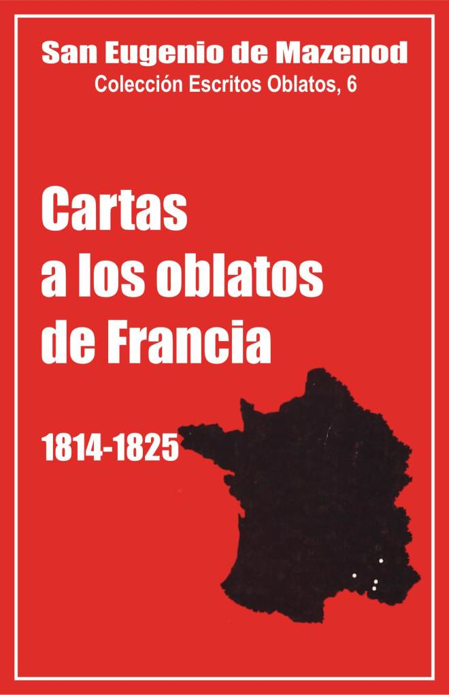

Palo Gordo
2019
Escritos Oblatos: - 01 - 02 - 03 - 04 - 05 - 06 - 07 - 08 - 09 - 10 - 11 - 12 - 13 - 14 - 15 - 16 - 17 - 18 - 19 - 20 - 21 - 22

BEATO EUGENIO DE MAZENOD
Colección Escritos Oblatos, 6
Traducción y presentación
por un equipo de Oblatos
de la Provincia de España
Madrid, mayo 1984
Palo Gordo
2019
1814 - 1815 - 1816 - 1817 - 1818 - 1819 - 1820 - 1821 - 1822 - 1823 - 1824 - 1825
Introducción
"...¡Me pregunto a mí mismo, cómo yo, que hasta este momento no me había podido decidir a tomar una decisión sobre este asunto, me encuentro de pronto con haber puesto en marcha y haberme comprometido a sacrificar mi descanso y arriesgar mi fortuna, para realizar un establecimiento, cuyo valor apreciaba, pero para el cual sólo sentía una atracción combatida por otros puntos de vista diametralmente opuestos? Es una incógnita para mí y es la segunda vez en mi vida que me veo tomar una resolución de las más serias como empujado por una fuerte sacudida extraña...".
Es así como el 15 de octubre de 1815, el abate Eugenio de Mazenod anunciaba a su amigo Carlos de Forbin-Janson, la fundación de los Misioneros de Provenza.
Este sexto volumen de los "Escritos Oblatos" comprende las cartas que el Fundador escribió a sus hijos, de 1814 a 1826. Estas cartas nos revelan cómo "sacrifica su descanso" y "arriesga su fortuna" para fundar y afianzar ese débil establecimiento de sacerdotes diocesanos, llamados Misioneros de Provenza, que sería dentro de 10 años, la Congregación religiosa de los Misioneros Oblatos de María Inmaculada, sociedad de derecho pontificio, trabajando en varias diócesis del Mediodía de Francia.
El impulso inicial así como la ampliación progresiva de esas perspectivas, dependen "de una sacudida extraña", que sigue inspirando y guiando al ardiente misionero, pero depende igualmente de la inteligencia y de la voluntad de un hombre, que una vez emprendido el camino, va con decisión y perseverancia hacia el objetivo.
El crecimiento de la Sociedad fue lento, pero progresivo: 7 sacerdotes y 9 novicios en 1818; 11 sacerdotes y 14 novicios en 1821; 15 sacerdotes y 15 novicios escolásticos en 1826.
Mientras en 1814-15 el Fundador sólo quería una casa, la Sociedad contaría cuatro en 1826: Aix (1815-16), Ntra. Sra. del Latís (1819), el Calvario en Marsella (1821) y Nimes (en 1825).
Principales temas desarrollados en estas cartas
El P. de Mazenod y sus primeros compañeros se mantuvieron muy fieles al fin principal que se habían propuesto: las misiones populares en las campañas, para despertar la fe de los fieles. A pesar del número restringido de Padres, más de 50 misiones de cuatro o cinco semanas fueron predicadas en el curso de los 10 primeros años. Las cartas que siguen aportan muchos detalles y consejos sobre ese asunto. Es el tema principal de esta correspondencia.
Otro tema que vuelve con frecuencia, y que el Fundador considera siempre como muy importante, es el de la elección y formación de los miembros de la Sociedad. ¡Cuántas preocupaciones y sufrimientos para encontrar y convencer a sus primeros colaboradores, para admitir y educar, dejar salir o despedir a los candidatos que se presentaban! Si hubo 68 ingresos en este período, hay también 37 salidas, de las cuales 7 de profesos, o sea el 55%.
Fue durante su estancia en Roma en 1825-26, cuando el P. de Mazenod tomó unos propósitos precisos para una elección y una formación todavía más severa de los Oblatos: "Reflexione en lo que os he dicho en mis cartas sobre nuestro noviciado" escribe al P. Tempier, el 26 de noviembre de 1825. "No está establecido a mi gusto. Es una gran desgracia que esté como está. Es absolutamente necesario lograr que no haya como novicios sino aquellos que quieran verdaderamente ser tales, que soliciten ese favor como una gracia y sobre el propósito de los cuales se pueda contar... Todo lo que veo, desde que ando por estas regiones, no se parece en nada a eso. ¡Qué modestia, qué piedad!, pasando por Turín, Génova, Viterbo.
Aquí, cuántos pecados de envidia no he hecho, o por lo menos, cuánto he suspirado por la dicha de ver un espíritu parecido implantarse entre vosotros. Todo el mal radica en eso: Es urgente remediarlo para el futuro.
Un noviciado que sea verdaderamente un noviciado, en el que los sujetos sean formados con mano maestra, en el que se tenga el cuidado de inculcarles todo cuento tienda a formar un verdadero misionero, de donde salgan llenos de virtudes, hechos a la obediencia y penetrados de apego y respeto por las Regias y lo que prescriben. Lo repetiré hasta la saciedad, sólo tenemos una amalgama imperfecta que nos da pocas esperanzas y cuyos resultados no pueden ser felices".
Esta importancia concedida al noviciado, luego al escolasticado, hizo la fuerza y la unidad del Instituto, compuesto de sujetos todos ellos preparados en Aix o Marsella, bajo la dirección de los mejores religiosos, ellos mismos siempre guiados por los Padres de Mazenod y Tempier.
Esas cartas nos dan igualmente a conocer las numerosas dificultades que se presentaron y que el Fundador tuvo la valentía de vencer, porque en su espíritu de fe, las sabía suscitadas por el demonio para impedir la conversión de las almas. Las dificultades externas vinieron menos dé la oposición de una clase burguesa anticlerical, contraria a las misiones, que del clero de Aix y luego de algunos obispos.
El P. de Mazenod habla poco en sus cartas de la oposición de algunos ambientes a la obra de las misiones. La esperada, y la acogida entusiasta de la población hecha a los misioneros hacía pronto olvidar el endurecimiento de algunos.
La cruz más pesada vino de los párrocos de Aix. Ancianos, tildados de jansenismo, que habían aceptado el régimen napoleónico; rutinarios, los párrocos de Aix vieron primero mal al conjunto, luego combatieron abiertamente a ese equipo de jóvenes sacerdotes, apegados a la moral del bienaventurado Alfonso, manifiestamente monárquico y ejerciendo un ministerio, fuera de los cuadros de la parroquia, para los jóvenes y para las misiones populares. La iglesia de la misión de Aix que se llenaba siempre de fieles y sobretodo de jóvenes, fue el argumento principal de los párrocos contra los Misioneros de Provenza, acusados de apartar a los fieles de su parroquia.
El P. Mazenod sufrió mucho de esa oposición. Se quejó de ello, pero invitó sin embargo a sus Oblatos a la sumisión y al respeto: "Honrad siempre el carácter sagrado de esos Señores, escribe al P. Courtès el 5 de mayó de 1822. Cuidad su persona por deferencia para con el sacerdocio con que están revestidos, evitad, si es posible, y disimulad ante al pueblo sus proyectos. No deis motivo de queja sobre nada, pero mostrad firmeza". Demostró y reconoció además haber tenido demasiado poco en cuenta la susceptibilidad de los párrocos. "Hay cosas de conveniencia que he descuidado demasiado hasta ahora, estribe al P. Tempier el 22 de agosto de 1817, pero sobre las cuales una triste experiencia me ha enseñado demasiado, que hay que ser más exigente de lo que he sido hasta ahora".
Los problemas suscitados por algunos obispos fueron de corta duración y se explican por la penuria de sacerdotes diocesanos y por el temor de los obispos, dada su formación galicana, de ver menguar su autoridad sobre los numerosos sacerdotes diocesanos que ingresaban en los Institutos que surgían entonces en Francia en crecido número.
En 1823, los Obispos de Frejus y de Aix se declaraban preparados para desligar de sus votos a los Oblatos que desearan ingresar en su diócesis. A finales de 1825, algunos obispos que habían aprobado las Constituciones, escribieron a Roma para denunciarlas como contrarias a las leyes del Reino y a su propia autoridad. El P. de Mazenod, siempre a gusto cuando habla que tratar con los obispos y cardenales, logró resolver esos problemas, obteniendo la aprobación pontificia de León XII, en febrero de 1826.
Los sufrimientos más vivos, fueron causados por las dificultades internas, en especial cuando la crisis de 1823. Por motivos serios los PP, de Mazenod y Tempier aceptaron el ser vicarios generales de Marsella y colaboradores íntimos de Mons. Fortunato de Mazenod. Varios Padres entre ellos dos de los primeros compañeros, dejaron entonces la Sociedad. "...Mientras los golpes han venido del exterior, escribe al P. Mye, el 30 de octubre de 1823, hacía poco caso pero hoy día que Satanás ha logrado cribarnos, y que, sacudiendo su bieldo con violencia ha hecho pasar con la paja una porción de granos, que deberían, me parece, haber quedado en los graneros del Padre de familias, estoy afectado hasta el punto de poder decir como Nuestro Señor: "Tristis est anima mea usque ad mortem". No me hacía la idea de que se pudiera jugar con lo que hay de más santo, bajo pretextos frívolos y tal vez por razones menos que edificantes".
Si el P. de Mazenod logró predicar numerosas misiones y hacer progresar obras como el Calvario de Marsella y el santuario de Ntra. Sra. de Laus, se debe ciertamente, a su espíritu de fe y a su tenacidad, pero también a algunos colaboradores excepcionales a quienes van dirigidas la mayor parte de las cartas siguientes: los Padres Tempier (75 cartas), Mye (10 cartas), Courtès (55 cartas), Suzanne (14 cartas), Guiberty Honorat (11 cartas cada uno), etc.
Colaboradores y corresponsales preferidos
Parece que el P. de Mazenod tenía una vista extremadamente justa para juzgar a los hombres. Desde sus primeros contactos con el P. Tempier (1788-1870), la califica "de un ángel que parece creado para hacer la dicha de una comunidad". "Os sé capaz de abrazar una regla de vida ejemplar y de perseverar en ella", le escribía el 15 de noviembre de 1815; "cuento con Vd. mucho más que conmigo mismo para la regularidad de una casa, que, en mi idea y mis esperanzas, debe reproducir la perfección de los primeros discípulos de los apóstoles".
Ahora bien, el P. Tempier fue verdaderamente el hombre de la fidelidad y de la vida religiosa. En 1821-22, luego en 1827, hasta la muerte del Fundador en 1861, fue el superior del escolasticado. Toda su vida fue asistente general y ejerció una enorme influencia sobre todos los Oblatos. Su presencia en la Congregación, puede ser considerada como una de las principales gracias del Instituto. Pronto se dio cuenta de ello el P. de Mazenod y expresó con frecuencia su agradecimiento.
Escribía por ejemplo al P. Tempier, el 15 de agosto de 1822, después de que este hubiese aceptado las Constituciones y seguir siendo Superior de Ntra. Sra. de Laus: "He reconocido en esta primera página al verdadero religioso, al hombre recto, al corazón bueno, a mi querido Tempier todo entero. Doy también sin cesar gracias a Dios de haberme asociado a Vd. y os pido os llene cada vez más de su espíritu para nuestro mayor provecho común: Nadie tiene más derecho que Vd. a mi confianza. Mi primer compañero, habéis desde el primer día de nuestra unión, comprendido el espíritu que debía animarnos y que debíamos comunicar a los demás; no os habéis apartado un solo instante del camino que habíamos resuelto seguir; todos lo saben en la Sociedad y cuentan con Vd. como conmigo".
El sujeto más ilustre de la Congregación, ingresado en el noviciado en 1823, fue Hipólito Guibert (1802-1886), futuro obispo de Viviers, arzobispo de Tours y luego cardenal arzobispo de París. El P. de Mazenod tuvo desde su primera entrevista con ese joven acuense la visión de sus futuros destinos. Le escribió el 19 de marzo de 1823:...Fue una especie de presentimiento, desde el primer día que os vi; me pareció que encontraba una parte de mi mismo que venía naturalmente a encajarse en su lugar; y lo que hay de más notable, es que desde entonces habéis sido considerado por el resto de la familia como si le hubieseis pertenecido desde hace mucho tiempo y como si hubieseis ingresado después de una ausencia. Todo eso es de excelente augurio para el bien que tendremos que realizar juntos en el campo de la Iglesia devastada por tantos jabalíes".
El hermano Guibert tuvo toda clase de dificultades durante su breve noviciado: crisis causada primero por su padre que se oponía a su vocación y se lo llevó a casa; crisis personal luego, para la elección de la vida religiosa en una Congregación, que con la salida de varios sujetos en 1823, parecía naufragar. El Fundador escribe entonces al joven novicio atribulado: "El enemigo os daría menos golpes, hablando con propiedad, y se encarnizaría menos en seduciros, si no temiera vuestro ministerio. A pesar de que no conozca en realidad, el futuro con ciencia cierta, su perspicacia natural le descubre los acontecimientos que dependen de las causas segundas sin equivocarse. Ha sacado la conclusión del temple de un alma que el buen Dios os ha concedido, de unas gracias especiales, con las cuales su bondad ha querido preveniros, de la vocación a la cual os ha llamado, y que os coloca por decirlo mí, todo armado en el campo enemigo con los guerreros de la fe, que ganan en nombre de Jesucristo tantas victorias como combates librados; ha concluido, digo, que también vos seríais temible para su imperio..." (26 junio 1823).
En cuanto terminó el noviciado, el H. Guibert salió, con los PP. Mye y Honorat, para fundar la casa de Nimes. Después de su ordenación en 1825, fue nombrado superior del santuario de Ntra. Sra. de Laus, bastante abandonado bajo la dirección del P. Touche. Para sacarlo de Nimes el Fundador tuvo que dar explicaciones al P. Mye: "Guibert tiene mucho aplomo e impone por su firme constancia. Le gusta el orden, entiende economía" (22 de agosto de 1825). El P. Mye con todo no le dejó marchar hasta 1826.
El P. de Mazenod amó mucho a los PP. Suzanne (1799-1829) y Courtès (1798-1863). Ambos habían formado parte de la Congregación de la Juventud de Aix y se mostraron siempre muy afectuosos con su padre; sus cualidades y sus virtudes fueron por otra parte objeto de su admiración. El P. Suzanne se parecía en todo al Fundador; el mismo ardor, el mismo lenguaje y, sobretodo en misión, "el don de arrastrar" (Maz. a Mye 19 junio 1825). El P. Courtès, hombre digno y culto, muy apegado a la vida religiosa y a la vocación oblata, fue maestro de novicios, desde su ordenación y superior de la casa-madre de Aix que dirigió durante 40 años.
El P. Mye (1768-1841), primer compañero del Fundador con el P. Tempier, pasó su vida predicando retiros y misiones. "Pocos hombres han poseído en el mismo grado que él, el arte de instruir sólidamente en la religión a las clases ignorantes, escribe Mons. Jeancard. Expresaba la doctrina de la Iglesia, el dogma como la moral, con una sencillez, claridad, exactitud de lenguaje y con un seguimiento y encadenamiento de proposiciones tan perfectas, que los espíritus más rudos y más groseros, comprendían todo su discurso y tenían una idea completa de cada verdad sobre la cual insistía sin redundancia ni repetición".
El P: Honorat (1799-1863) había, como Courtès y Suzanne conocido al Fundador en la Congregación de la Juventud de Aix. De un carácter un poco difícil, pero religioso obediente y apóstol celoso, bien dotado para la predicación y bastante ducho en asuntos económicos, fue ecónomo general desde 1824 hasta su salida para fundar las misiones del Canadá en 1841. Entretanto, mientras predicaba numerosas misiones, fue Superior de Ntra. Sra. de Laus, de Nimes, del Calvario y de Ntra. Sra. de Lumiéres.
Observaciones sobre algunas particularidades de este volumen
Este volumen comprende 214 cartas de las cuales no subsiste absolutamente ningún original. La primera carta autógrafa, escrita a los Oblatos, conservada en los archivos de la postulación, es la 492, fechada el 11 de octubre de 1834. No hay aquí sino extractos de cartas, algunas veces muy breves.
"Colligite fragmenta"! Esas palabras de Nuestro Señor, empleadas algunas veces en un sentido muy acomodaticio por los archivistas o los historiadores para invitar a recoger todo cuanto puede contribuir a reconstruir la historia, valen mucho para nosotros. Se trata de recoger los pocos elementos que nos quedan de los comienzos de la Congregación y sobretodo del mismo Fundador. ¿No es por otra parte responder a uno de sus deseos, que expresaba ya en 1825: "Siga la idea que habéis tenido de escribir las memorias de la Sociedad," escribía al P. Tempier el 10 de diciembre de 1825. "Somos los únicos que hayan descuidado una cosa tan importante. El mal es irremediable, hágase lo que se haga..."?
Ha sido, pues, preciso reconstruir esta correspondencia, tomando como punto de partida los extractos que se encuentran en los biógrafos y los historiadores Oblatos: Yenveux, Rey, Rembert, Jeancard, Pagelle de Follenay, Missions O.M.I. etc. Pero este trabajo se presenta más bien como un rompecabezas chino. Faltan muchos trozos, y aquéllos que tenemos tienen los contornos muy dañados, reproducen unas imágenes muy parciales. Con frecuencia los mismos textos son copiados por diversos autores con variantes y fechas distintas.
De ahí la necesidad de establecer ciertos criterios para elegir los textos más seguros. Uno de esos criterios es el siguiente: cuando los extractos son citados por diversos biógrafos, seguimos en general el texto de Yenveux. La comparación que se ha podido establecer con unos originales, conservados después de 1834, lo muestra. Es Yenveux quien copia lo más fielmente los textos, o más bien son sus filoteas las que realizan ese trabajo lo más objetivo…..
---------------------------------------------------------------
Nota: el pdf tiene una pagina que no se puede leer, (y no tenemos el libro original…) (OMI Palo Gordo – Venezuela)
---------------------------------------------------------------
1. Al Sr. abate de Janson, vicario general de Chambery. Chambery.
Eugenio no puede ingresar en la Sociedad de la Misión de Francia. Debe ocuparse de su padre y de sus tíos que vuelven del destierro. Numerosas ocupaciones en Aix. Deseo de soledad. Atracción por las Ordenes contemplativas.
L.J.C.
Aix, 12 de septiembre de 1814.
...¿Y tú?, me dirás. Yo no pienso en ello de momento. Además de que me falta todo para trabajar con éxito, sobretodo con los sacerdotes, preveo que pronto seré molestado. Mis padres y mis tíos están al llegar. Tienen a su llegada una necesidad imprescindible de mí. Tendré luego que colocarlos. Después quedaré libre, si sin embargo eso es posible; porque, desde ahora y desde hace tiempo, soy el sacerdote servidor de todos y a disposición del primero que llega. Aparentemente esa es la voluntad de Dios. Siento gusto por esa tarea. No sé si no me hará cambiar de vocación. Suspiro a veces por la soledad; y las Ordenes religiosas que se limitan a la santificación de los individuos que siguen su Regla, sin ocuparse sino en la oración de la de los demás, comienzan a ofrecerme algunos atractivos. No me repugnaría pasar así el resto de mis días; y ciertamente, sería ser algo diferente de lo que era. ¡Quién sabe! ¡Tal vez termine ahí!
Cuando no tenga bajo mis ojos las necesidades extremas de mis pobres pecadores, tendré menos pesar de no socorrerlos. Puede ocurrir, por otra parte, que me convenza de serles más útil de lo que les soy en efecto. Mientras tanto, con todo, mi tiempo y mis cuidados son para ellos.
Esta misma mañana, antes de subir al altar, he tenido que confesar. Apenas he quitado los ornamentos, ha habido que confesar de nuevo. Ayer era la una y no había rezado prima, porque quedé hasta esa hora en el tribunal. Por la mañana, apenas había hecho la acción de gracias, porque había que estar con una numerosa juventud que tenía bastante con dos horas y tres cuartos de ejercicios de religión. Es pata agotarse, siempre todo para los demás, nada para uno mismo. En medio de todas esas ocupaciones, estoy solo. Tú eres mi único amigo, -lo digo con toda la fuerza del término—, porque de esos amigos buenos y virtuosos, por otra parte, pero a los cuales les faltan tantas cosas, no me faltan. Pero, ¿para qué sirven? ¿Son capaces de suavizar una pena? —¿Se puede hablar con ellos del bien mismo que se quisiera hacer?— ¡Para qué! no se sacaría sino alabanzas o desaliento. Por lo demás, aunque tristemente, voy avanzando, poniendo mi confianza sólo en Dios. Amémosle siempre más. Adiós...
2. Al Sr. abate de Forbin-Janson, vicario general de Chambery: Calle S. Guillermo, 28, en París.
Eugenio debe elegir entre dos proyectos: ingresar en una Orden regular o fundar una Sociedad de Misioneros para las necesidades de los Provenzales.
L.J.C.
Aix el 28 de octubre de 1814
...Tengo el más vivo deseo de conocer vuestras Constituciones. No es que crea probable que me sea posible unirme a vosotros. No sé todavía lo que Dios exige de mí, pero estoy tan decidido a cumplir su voluntad en cuanto me sea conocida que saldría mañana para la luna si fuera preciso. No tengo nada oculto para ti. Por eso te digo que nado entre dos proyectos: el de ir a enterrarme en alguna comunidad bien regular de una Orden que siempre he amado; el otro, el de establecer en mi diócesis, precisamente lo que tu has hecho con éxito en París. Mi enfermedad me ha dejado baldado. Sentía mayor inclinación para el primero de esos proyectos, porque a decir verdad, estoy algo cansado de vivir únicamente para los demás. Me ha ocurrido no tener tiempo de confesarme en tres semanas; ¡juzga si trabajo!
El segundo, sin embargo me parecía más útil, dado el estado horroroso en que están los pueblos. Algunas consideraciones me han detenido hasta ahora. La falta absoluta de medios, no es lo menos molesto del asunto. Porque aquellos que habrían podido reunirse conmigo, no tienen nada, y yo tengo poco; porque de mi pensión de mil francos, tengo que pagar a mi criado, que por lo demás me va a dejar para volver a su Trapa. Nueva contrariedad porque contaba con él para nuestra casa de misión. Esa comunidad que sólo existe todavía en mi cabeza, se habría establecido en mi casa. Mi madre, a lo que creo, no tendría dificultad en cedérmela, mientras tanto, la casa que habito sólo en este momento a la salida de la ciudad. Habría que alojar allí 8 misioneros. Luego buscaríamos un local más amplio etc. Tenía también en mi cabeza algunas reglas que proponer, porque quiero que se viva de modo extremadamente regular. Ahí estoy. Ya ves que no he progresado mucho.
Ahora me preguntarás tal vez, por qué, queriendo ser misionero, no me uno con vosotros con el pequeño grupo que podría reunir. Si quisiera responder a lo gallego, te diría primero que es porque te has preocupado poco de tenerme; pero no es esa la razón verdadera ya que pienso realmente lo que te he dicho en mi última carta, que no estoy para ser muy útil. Pero lo que nos debe retener, es que nuestras regiones están desprovistas de toda ayuda, que los pueblos ofrecen esperanzas de conversión, que no hay pues que abandonarlos.
Ahora bien sería abandonarlos el unirnos a vosotros, porque nosotros solos, solos y no vosotros, podemos serles útiles. Hay que hablar su propia lengua para ser comprendido de ellos; hay que predicar en provenzal. Si podemos formarnos, nada nos impediría afiliarnos a vosotros, si esa unión ha de ser para el bien. Que Dios sea glorificado, que se salven las almas; todo está ahí, no veo nada más allá. A pesar de eso, un secreto deseo me llevaba hacia otra parte...
3. Al Sr. Hilario Aubert, sacerdote director del seminario de Limoges, en Limoges.
Invitación a ingresar en la futura Sociedad de los Misioneros de Provenza.
Aix, 1815
Nadie más apegado que yo a la muy Santa Compañía de Jesús. Su restablecimiento ha sido siempre el objeto de mis deseos y doy la mayor importancia a su propagación. Sin embargo me gustaría más verlo aquí, de momento, que entre los Jesuitas. El bien que nos proponemos realizar, debe remediar unos males más apremiantes. ¡Cuántas gentes se ocupan en eso; nada más indispensable!
Se trata de reunirnos, algunos sacerdotes, para predicar sin descanso, misiones en todas partes de esta amplia diócesis y vecinas. Queremos hacer en pequeño, pero con no menos utilidad, lo que se trabaja para lograr en grande en París. Quisiéramos hacer cosas sin ruido, pero, ¡qué golpes nos da el infierno! ¡Oh, querido amigo, si quisierais ser de los nuestros! Empezaríamos por vuestra patria, donde la religión está casi apagada, como en infinidad de otros lugares. Me atrevo así a decir que seríais necesario. ¡Ah!, si pudiésemos formar un grupo, pronto se le uniría lo que hay de más celoso en la diócesis. Piense un poco en eso ante Dios. Sabéis que hacen falta, para hacer el bien en nuestras regiones, gentes del país, que sepan la lengua. ¡Oh!, no dude, nos haremos santos en nuestra Congregación, libres pero unidos por los lazos de la más tierna caridad, en la sumisión exacta a la Regla que adoptaríamos, etc. etc. Viviremos pobremente, apostólicamente, etc.
4. Al Sr. Abate Tempier, en Arles.
Estado miserable de los habitantes en las campiñas. Fundación de un establecimiento que proporcionará misioneros. Fines de la Sociedad compuesta de momento de cuatro miembros. Harán falta por lo menos seis, preparados para seguir las huellas de los apóstoles. La presencia del abate Tempier es indispensable.
Aix, 9 de octubre de 1815.
Mi querido amigo, lea esta carta a los pies de vuestro crucifijo, en la disposición de no escuchar sino a Dios, lo que el interés de su gloria y la salvación de las almas exigen de un sacerdote como Vd. Imponga silencio a la avidez, al amor de las comodidades; penetraos bien de la situación de los habitantes de nuestras campiñas, del estado de la religión entre ellos, de la apostasía que se propaga cada día más y que hace estragos horrorosos. Ved la debilidad de los medios que se han opuesto hasta el momento a ese diluvio de males; consultad vuestro corazón sobre lo que desearía hacer para remediar esos desastres y conteste después a mi carta.
Pues bien, querido, os digo, sin entrar en más detalles, que sois necesario para la obra que el Señor nos ha inspirado emprender. Convencido el jefe de la Iglesia, que en el desdichado estado en que se encuentra Francia, sólo las misiones populares pueden devolver a los pueblos la fe, que de hecho han abandonado, los buenos eclesiásticos de diferentes diócesis se reúnen para secundar los proyectos del supremo Pastor. Hemos sentido en el caso la indispensable necesidad de emplear ese remedio en nuestras regiones, y, llenos de confianza en la bondad de la Providencia, hemos puesto los fundamentos de un establecimiento que proporcionará habitualmente a nuestras campiñas fervorosos misioneros.
Se ocuparán incesantemente en destruir el imperio del demonio al mismo tiempo que darán el ejemplo de una vida verdaderamente eclesiástica en la comunidad que formarán; porque viviremos juntos en una misma casa que he comprado, bajo una regla que adoptaremos de común acuerdo, y cuyos elementos sacaremos de los Estatutos de S. Ignacio, de S. Carlos para sus Oblatos, de S. Felipe Neri, de S. Vicente de Paul y del bienaventurado Ligorío.
La felicidad nos espera en esta santa Sociedad que sólo tendrá un corazón y una sola alma; parte del año será empleada en la conversión de las almas, otra en el retiro, el estudio, en nuestra santificación particular; no os digo más de momento, esto basta para daros un anticipo de las delicias espirituales, que gozaremos juntos. Si, cómo lo espero, queréis ser de los nuestros, no os encontraréis en país desconocido, tendréis cuatro compañeros; hasta ahora no somos más numerosos: es que queremos elegir unos hombres que tengan la voluntad y la valentía de seguir las huellas de los Apóstoles.
Es necesario poner fundamentos sólidos; es necesario que la mayor regularidad se establezca y se introduzca en la casa en cuanto nos hayamos metido en ella. Y es precisamente para eso que nos es Vd. necesario, porque os sé capaz de abrazar una regla de vida ejemplar y de perseverar en ella. Por lo demás no nos ataremos con votos; pero espero que ocurrirá con nosotros como con los discípulos de S. Felipe Neri, que libres, como seguiríamos siéndolo nosotros, morían antes de haber pensado que podían salir de una congregación que amaban como a su madre.
Cuando haya recibido su respuesta, os daré todos los detalles que podáis desear; pero, querido amigo, os conjuro, no os neguéis al mayor bien que es posible hacer en la Iglesia. Se encontrarán fácilmente unos vicarios que os reemplacen; pero no es tan fácil encontrar a hombres que se sacrifiquen y quieran consagrarse a la gloria de Dios y a la salvación de las almas, sin otro provecho en la tierra que muchas penas y todo cuanto el Salvador ha anunciado para sus verdaderos discípulos. Vuestra negativa sería para nuestra obra de un perjuicio incalculable, hablo con sinceridad y con reflexión; vuestra modestia padecerá, pero no importa; no dudaré en añadir, que si se creyera fuese necesario que hiciese el viaje a Arles para decidiros, lo haría volando. Todo depende de estos comienzos; hace falta unanimidad perfecta en los sentimientos, idéntica buena voluntad, idéntico desinterés, idéntico sacrificio en una palabra.
Guarde el secreto; comprendéis que cualquier confidencia en Arles, sólo lograría apartaros de un proyecto, del que no sabréis nunca calcular todas las ventajas hasta que empecéis a ejecutarlo. Tendremos que seguir cierta táctica con los vicarios generales, que aprueban tanto nuestra obra, que han escrito a París para darla a conocer en los periódicos; pero tendremos que combinar las gestiones necesarias para lograr vuestra sustitución. La menor imprudencia podría hacer fracasar nuestros proyectos; estarían tentados de creer que somos bastante cuatro, y os aseguro que hemos de ser por lo menos seis; me han prometido ese número de sujetos. ¿Quién diría que la dificultad está en encontrarlos? Es cierto que somos difíciles, porque queremos que ande bien la cosa, y lo lograremos si sois de los nuestros. Contésteme, pues, pronto afirmativamente y quedaré contento. Adiós, querido hermano.
5. Al abate Forbin-Janson, vicario general de Chambery, calle Ntra. Sra. des Champs, 8. París.
La autoridad diocesana de Aix, aprueba la fundación de la Sociedad de los Misioneros de Provenza. Fundación. Preocupaciones para mantener los sujetos y para reparar la iglesia del Carmelo de Aix.
L.J.C.
Aix, 23 de octubre de 1815
Si he comprendido mi querido amigo, lo que enfriaba tanto a nuestros Vicarios Generales para la obra de las misiones, era el temor de verse desprovistos de unos sujetos de los que la diócesis tiene verdaderamente la mayor necesidad. Todas las dificultades han cesado con la actitud que he tomado. La idea de que los misioneros que quiero reunir no saldrán de la diócesis, los tranquilizó tanto que se han trocado en los protectores declarados de nuestra obra. Y les estoy tanto más agradecido que no todos los sacerdotes son de su opinión.
Ahora te pregunto y me pregunto a mí mismo, cómo yo, que hasta ahora no había podido determinarme a tomar un partido, sobre ese objetivo, de pronto me encuentro haber puesto en marcha esa máquina, haberme comprometido a sacrificar mi descanso y arriesgar mi fortuna para realizar un establecimiento cuyo valor sentía, pero para el cual sólo sentía un atractivo combatido por otros designios diametralmente opuestos. Es un problema para mí y es la segunda vez en mi vida que me veo tomando una resolución de las más serías como movido por una fuerte y extraña sacudida.
Cuando reflexiono sobre ello, me convenzo de que Dios se complace en poner fin a mis irresoluciones. Tanto es así que estoy hasta el cuello, y te aseguro que en estas ocasiones, soy muy diferente. No me llamarías más "culo de plomo", si vieras como me muevo; soy casi digno de que me comparen a ti, tan grande es mi autoridad. Pataleo sordamente, porque no tengo ya un momento de descanso, pero sigo actuando alegremente. He aquí que hace cerca de dos meses ya que hago la guerra a mi costa, tanto al descubierto, como sordamente. Tengo la llana en una mano, la espada en la otra, como aquellos buenos Israelitas que reedificaban la ciudad de Jerusalén. Y la pluma sigue su camino; porque no me atrevo a decirte todo cuanto he escrito desde que me mezclo en este asunto, que tienes razón en llamar nuestro asunto, porque mi proyecto es claramente el que esas dos obras formen sólo una.
Pero, en este momento y para empezar, había que tener el aspecto de no tener de común sino el nombre, para no asustar ni a los superiores ni a los misioneros ellos mismos, que exceptuando a Deluy, no querían emprender viajes ni trabajar fuera de la diócesis, o todo lo más, de las diócesis circunvecinas, en las que se habla la lengua provenzal. Explica todo eso al Sr. Rauzan.
He aquí el estado de las cosas, sin entrar en todos los preludios que serían demasiado largos para contar. Los Mínimos estaban en venta. Su local nos convenía perfectamente. Pensaba que no había que perder esa ocasión. Me decidí a comprarlo. Me di para ello unas penas increíbles, pero en vano. Las Religiosas del SSmo. Sacramento con un golpe de habilidad, me lo birlaron bonitamente. Tratando ese asunto había contactado con algunos sacerdotes que creía apropiados para la santa obra y que lo son en efecto. Estos no se dieron por vencidos, cuando me llevé el chasco. Tuve vergüenza o escrúpulo de dejar apagarse su entusiasmo e intenté lograr el único local que queda en la ciudad para establecer allí una comunidad. Mis gestiones tuvieron un éxito inesperado; con una sola entrevista, se cerró el asunto, y me encontré propietario de la mayor parte del antiguo Carmelo, que está situado en la cabecera de la Avda. con una encantadora iglesia al lado, un tanto estropeada, es verdad, pero que se podría poner en buen estado con menos de cien luises.
He aquí mi historia. Pero lo gracioso es que todo eso se ha realizado sin que me detuviera el pensamiento de que no tenía ni una perra. La Providencia, para demostrarme que no iba descaminado, me ha enviado enseguida doce mil francos que me prestan sin interés por este año. Ahora dime cómo los reembolsaré. He hecho un negocio de oro, ya que todo el establecimiento, comprendidas las reparaciones de la iglesia no pasará de 20.000 francos. Pero ¿dónde encontraré esa suma? No lo sé. Mientras tanto los misioneros me afligen. Desearían empezar mañana. Insisto diciéndoles que hace falta tiempo para unas habitaciones y hacer habitable la casa. Es mucho esperar para ellos.
Y luego, ¿los recursos para vivir cuando estemos en comunidad? Creo que me encomendaré a S. Cayetano de Tiana. Cuando tocaba la campana, el pueblo le llevaba la comida. Somos cuatro de momento, sin contar a Deluy, que han enviado a una parroquia, no hace más de 15 días. De esos cuatro tengo mil francos de pensión; he ahí para dos. Un tercero me ha dicho que tenía estrictamente para vivir; el cuarto Dios proveerá sin duda. ¿Cómo hacéis en París? ¿A qué santo os habéis encomendado? Porque si bien recuerdo, la casa cuesta mil escudos de alquiler. ¡He ahí tu pensión! ¿"e poi e poi" (y después, después) para todo lo demás? Dime lo que creas deba hacer para conducir bien mi barca y hacerla andar de acuerdo con la vuestra, sin molestar a aquellos que deben ser cuidados. Escríbeme con veinte interrupciones si quieres, pero no con esos renglones de procurador que agotan mi paciencia. ¡Doce renglones por página, es inaguantable, hay treinta en las mías! ¿Cómo quieres profundizar una cuestión con tus papelitos? Corrígete o me enfado. Sería una desgracia si, con tantos amigos en el ministerio, no lograras nada para mis parientes. Te pasaré unas notas sobre cada uno de ellos. Sacarás buen partido, espero. Es hora de que unos desgraciados puedan ver un día luminoso para ellos.
24 de octubre.
Estoy acosado. Nunca asunto alguno me ha dado tantas preocupaciones como este establecimiento. A cada instante surge alguna nueva dificultad, es para desesperarse. ¿Qué haremos sin la iglesia? Es muy cómodo decir que es justo dejarla reclamar por las Carmelitas. Y el dinero para pagársela, ¿quién nos los proporcionará? La inquilina actual que me cediera su alquiler no había nunca hecho petición alguna para hacer reparar el edificio. Toda la techumbre está deteriorada. El presupuesto que he solicitado hace subir el gasto de las reparaciones urgentes a 17.000 francos y pico. Dicho presupuesto será enviado a París; y ciertamente se echarán atrás en los despachos, cuando se trate de aprobarlo. Mientras tanto ¿puedo tomar sobre mí hacer un gasto tan considerable sin saber si nos quedaremos con el edificio? Tal como está, no puede servirnos; llueve como en la calle. Podremos sin embargo asegurar el servicio en el coro, que es nuestro y que es muy grande.
He aquí lo que el Sr. Guigou se propone hacer: quiere pedir esa iglesia para utilizaría para el público y luego nos la cederá. No veo por qué eso parecería injusto. Las Carmelitas están actualmente en la casa de los Padres del Oratorio; tres iglesias parroquiales de la ciudad, pertenecen a Ordenes religiosas; los Incurables y las religiosas del SSmo. Sacramento ocupan las casas y las iglesias de otras dos Ordenes religiosas. ¿Por qué no aseguraríamos nosotros el servicio de la iglesia de las Carmelitas? ¿No es mejor que el Oficio divino se celebre allí en lugar de que sirva de depósito para todos los saltimbanquis que pasean por aquí o de cuartel para soldados de todos los países?
Ocúpate de eso un poco. Yo he agotado mi paciencia. Si hubiese previsto el fastidio, la preocupación, las inquietudes, la disipación que me ocasiona este establecimiento, creo que no hubiera tenido bastante celo para emprenderlo. Pido diariamente a Dios me sostenga en mis depresiones de corazón, y me encomiendo a todos los santos misioneros, sobre cuyas huellas queremos andar. Ayúdame también y pide a Dios por tu mejor amigo.
6. Al Sr. abate Tempier, en Arles.
Alegría al enterarse de que el abate Tempier acepta formar parte de la futura comunidad de misioneros. Gestiones antes las autoridades diocesanas.
Aix, 15 de noviembre de 1815.
Bendito sea Dios, muy querido hermano, de las disposiciones que ha puesto en vuestro corazón; no podríais imaginar la alegría que he sentido al leer vuestra carta! La abrí con ansiedad, pero me sentí pronto consolado: Os aseguro que considero como muy importante para la obra de Dios que seáis de los nuestros; cuento con Vd. mucho más que conmigo mismo para la regularidad de una casa, que en mi idea y en mis esperanzas, debe reproducir la perfección de los primeros discípulos de los apóstoles. Apoyo mucho más mis esperanzas sobre ello que sobre los discursos elocuentes: ¿estos han convertido alguna vez a alguien? ¡Oh!, qué bien haréis lo que es tan importante hacer! Siento que no estéis más cerca para que os pueda apretar contra mi corazón, daros un abrazo fraterno, que expresaría mejor que mi carta los sentimientos que Dios me ha inspirado para Vd. ¡Qué dulces son los lazos de una perfecta caridad!
El modo como os hablo, debe demostraros que considero como asegurado que no se pondrán obstáculos invencibles a nuestra reunión. El Sr. Guigou, a quien el Sr. ha dado celo para la gran obra, está convencido de qué nuestro pequeño número es insuficiente; está de acuerdo en que deberíamos ser seis. He comenzado pues esta mañana a prepararle, diciéndole que sabía que os gusta la vida de comunidad y que nuestra obra os ofrecería todo cuanto podéis desear. No ha rechazado la idea... Espero nuevas dificultades pero Dios nos protege. Nada temo. Adiós, os abrazo de todo corazón.
Eugenio de Mazenod.
7. Al Sr. abate Tempier, en Arles.
Alegría al conocer que el abate Tempier, se unirá pronto a la comunidad de misioneros, que quieren ser "francamente santos". El Sr. Guigou vicario general promete que lo eximirá lo antes posible del ministerio parroquial. Habrá que comenzar juntos el año 1816.
Aix, 13 de diciembre de 1815.
Me lo hacía prever mi corazón, queridísimo amigo y buen hermano, que erais el hombre que Dios me reservaba para ser mi consuelo. ¡Siento no poder demostraros toda la felicidad que me ha hecho sentir la decisión que habéis tomado! ¡Bien me he propuesto por mi parte para hacer todo cuanto dependiera de mí para corresponderos! En cuanto hube leído vuestra primera carta, permítame que se lo diga, me entregué á la más dulce esperanza; descubrí el hombre que capta el bien y se apega a él y qué por consiguiente con la ayuda de la gracia logra perfectamente realizarlo. Vuestra segunda y vuestra tercera carta me han confirmado en la opinión que había concebido, y ahora el pensamiento de que lo lograremos a pesar de los obstáculos, trabajando juntos para la gloria de Dios y nuestra santificación, me anima en medio de todas las dificultades que el infierno me ha suscitado, desde que preparo unas buenas baterías para destruir su imperio.
Humillaos todo cuanto queráis, pero sepa sin embargo que sois "necesario" para la obra de las misiones; os hablo ante Dios y con el corazón abierto. Si sólo se tratara de ir a predicar más o menos bien la palabra de Dios, mezclada con mucha aleación del hombre, recorrer las campiñas con el propósito, si queréis, de ganar unas almas para Dios, sin cuidarse de ser unos hombres interiores, unos hombres verdaderamente apostólicos, creo que no sería difícil reemplazaros; pero ¿podéis creer que quiera yo esa clase de mercancía?
Es necesario que seamos francamente santos nosotros mismos. Esa palabra incluye todo cuanto podríamos decir. Ahora bien, ¿existen muchos sacerdotes que quieran ser santos de ese modo? Habría que desconocerlos para convencerse de ello; yo sé todo lo contrario: la mayor parte quieren ir al cielo por un camino que no es el de la abnegación, la renuncia, el olvido de sí mismos, la pobreza, las fatigas, etc. Tal vez no están obligados a hacer más y por otra parte de cómo hacerlo, pero por lo menos no deberían formalizarse, si algunos creyendo conocer que las necesidades de los pueblos exigen más, desean intentar sacrificarse para salvarlos.
La segunda razón que me hace considerar como un presente del cielo el propósito en que estáis de reuniros con nosotros, es la necesidad que tenemos de un sacerdote que piense como Vd. para el interior de nuestra comunidad; estoy tan convencido de ello, que he dicho ayer tarde al Vicario General que no me comprometía a formar esa comunidad si no tomaba Vd. parte. Estoy tan seguro de que nos entenderemos siempre, que no temería prometer no pensar nunca de modo distinto al de Vd., sobretodo cuanto se relaciona con la vida interior y las obligaciones, más extensas de lo que se cree ordinariamente, del sacerdote que quiere vivir conforme a su estado.
Es hora de que os dé cuenta, de la conversación que he tenido sobre Vd. con el Sr. Guigou. Ya sabéis que está plenamente conforme con la obra de las misiones. Le he dado a conocer el propósito que había hecho de no seguir con la obra, si no estaba seguro que fueseis de los nuestros; le he dicho lo que pienso: que vuestras disposiciones y vuestro carácter me respondían de la constancia de vuestros propósitos, que os consideraba como aquél con el que debía contar para el amor del orden y de la regularidad; que tenía necesidad de teneros para ser el confidente de mis pensamientos para el bien, que de antemano teníamos una misma voluntad; en una palabra le volví a decir que sin Vd. no me sentía con ánimo de seguir adelante. El Sr. Gran Vicario me reiteró la seguridad más positiva de que seríais de los nuestros, pero me pidió que, por favor, no fuese inmediatamente. No me gustó del todo ese plazo, porque desearía, por el contrario, que fueseis de los primeros en ingresar en la casa, que está preparada para recibir a los misioneros. Este primer paso es en mi opinión de la mayor importancia.
En esa reunión decidiremos el reglamento que tendremos que seguir; discutiremos el modo de hacer el bien; nos ayudaremos mutuamente con nuestros consejos y con todo cuanto el buen Dios le inspirará a cada uno para nuestra santificación común; luego daremos el primer paso para la edificación de la Iglesia y de los pueblos. Es un golpe decisivo; quiero, pues, tenerle entonces; es lo que todavía no he logrado.
Escriba a los Srs. Grandes Vicarios cuáles son vuestras intenciones formales. Mientras tanto, no emprendáis trabajo que vaya más allá de las fiestas de Navidad, porque es después de esas fiestas que desearía nos reuniéramos; tendríamos que empezar juntos el año 1816. Comenzaremos por trabajar sobre nosotros mismos; luego arreglaremos el género de vida que adoptaremos para la ciudad y para las misiones; finalmente nos haremos santos.
Aunque fuésemos veinte no daríamos abasto al trabajo que hay. Nos solicitan de todas partes. Devuelvo las peticiones a Dios; esperemos que proveerá a los pedidos. Pídale que me dé la fortaleza y la paciencia que me hacen falta; las ponen a prueba terriblemente. De no haber escrito de noche la mitad de esta carta, no habría salido todavía para el correo. Adiós mi muy querido y buen hermano; os abrazo de todo corazón, suspirando en espera de la hora de nuestra reunión.
Eugenio de Mazenod.
8. Al abate Carlos de Forbin-Janson, París.
Dificultades para la fundación de la Misión de Provenza: dudas de los primeros compañeros. Misión de Pignans. Oposición de los sacerdotes de Aix. Imposibilidad de participar en la misión de Marsella.
L.J.C.
Aix, 19 de diciembre de 1815
Quedarás sin duda sorprendido mi muy querido hermano y amigo de no recibir todavía cartas mías, Pero para escribir necesitaba un motivo, y he visto el momento en que mi barraca se derrumbaba. Han utilizado todos los recursos para destruirla y no puedo decir que esté bien asentada. La casa está comprada desde hace tiempo; la Iglesia alquilada y reparada en parte; todo lo material está preparado, pero los sujetos son inseguros y en pequeño número. Aquel sobre el cual contaba más se ha dejado frenar por la cháchara de los devotos de su parroquia; se convence que hace un gran bien en su agujero; duda en abandonarlo y me aflige con su indecisión. Otro, que es excelente por la costumbre que tiene de anunciar al pueblo la palabra de Dios, siente sólo muy superficialmente la obra, convenciéndose que hace bastante el bien trabajando solo en las correrías que hace de pueblo en pueblo. Un tercero, demasiado ardiente, se cansa de la lentitud de los demás y me amenaza con dejarme si no toman pronto una decisión. Un cuarto, que es un ángel, que parece creado para hacer la felicidad de una comunidad, no puede lograr salir de su vicaría, aunque proteste que no puede aguantar allí y que no quiere trabajar sino en las misiones etc.
Yo, abrumado de preocupaciones y de fatigas, hago la güera a pesar mío, manteniéndome en medio de ese barullo, gracias a los puntos de vista sobrenaturales que me animan, pero que no me impiden sentir todo el peso de mi situación, tanto más penosa cuanto que no estoy ayudado por nadie, ni por el gusto ni por el atractivo, que son en mi totalmente opuestos al género de vida que abrazo. He aquí los elementos que Dios me pone en mano para emprender una cosa tan difícil. ¿Cómo esperar que un sacerdote que os ha dado su palabra en los términos de sacrificio más absoluto, venga luego a desdecirse porque su madre que ha estado separada de él, desde hace diez años, no puede vivir sin él, que se consideraría como un homicida si no le daba el consuelo de comer con ella y otras tonterías de esa especie?
Y los Vicarios Generales que no contestan a ese hermoso argumento sino con estas palabras: "Eso causará gran pena al Sr. de Mazenod; entiéndase con él", cuando hubiese sido necesario pulverizar esa debilidad, que sólo logra favorecer al egoísmo. ¿Comprendes ahora cómo hombres así no eran capaces de emprender el viaje a París: "¡no hubiesen tenido a su madre para comer con ella"!
Reanudo mi carta en enero. Decididamente trabajamos a medias, aun que dos de nuestros misioneros hayan ya hecho maravillas en el pueblo que acaban de evangelizar; 1.800 personas se han acercado a los sacramentos. Todos los párrocos de los alrededores los piden, pero no por eso dejamos de ser contrariados. El que debía prestarnos los mayores servicios se ha desdecido; se queda en su parroquia, cuya sensibilidad ha excitado con una despedida ridícula, que ha empujado a esa gente a oponerse a su salida. Estoy obligado a prevenirte que no debes contar con nosotros para la misión de Marsella. Los misioneros no quieren y yo no puedo. Nunca he tenido tiempo de escribir un sermón, ni de escribir nada. Ciertamente me fío en mi facilidad para predicar a un pequeño auditorio, o a gentes del campo, pero no me atreveré a hablar así en una gran ciudad sobretodo en una misión. Siento que esté propósito te va a contrariar algo, pero no está uno obligado a lo imposible.
Creo que si estuvieras aquí, podrías convencer a alguno de nuestros señores a seguirte a Marsella, porque lo creo lleno dé buena voluntad y bastante decidido, pero no podré seros muy útil, porque sólo tienen tres o cuatro sermones. Sin embargo ha predicado todos los días y a veces dos veces al día en la misión de Pignans que acaba de dar; pero Pignans es un pueblo y allí se predica en provenzal.
El Sr. Guigou no cree que se haga, en esta época, el retiro de sacerdotes que dices. Piensa que sólo podrá hacerse en verano. Te escribirá creo, sobre el particular. Sería sin embargo muy necesario, aunque sólo fuese para enseñar a los sacerdotes, que no está permitido calumniar, y que es poco cristiano levantarse en contra e impedir el bien que otros quieren realizar. Hay un parloteo entre ellos que no acaba. Sólo mi presencia desvanece sus murmullos en sordina. Ante mi todo está bien; pero ¡ay! cuando me vuelvo. ¡Pobre casta esta nuestra, querido amigo, nunca lo hubiera creído!...
9. Al abate Carlos de Forbin-Janson, París.
Oposición que encuentra Eugenio en su actividad apostólica. Para defenderse mejor aceptaría ser vicario general del futuro arzobispo de Aix.
Segunda carta 1816
... Por caridad estate al acecho del arzobispo que van a darnos para que me vea con buenos ojos. Sin eso nuestra casa se derrumba; el viento y la marea están en contra de los misioneros. Subsistimos, porque está en favor nuestro el Gran Vicario (Guigou); pero, ojo, si éste afloja, todo estará perdido. Creo que sería para el bien de la obra y de todos los demás pequeños bienes que hago, a pesar de muchas gentes de nuestro hábito que aborrecen todo cuanto no hacen, poder sin ambición ser gran vicario aunque no me mezclara en nada. Pero me haría falta un poco de autoridad y de independencia para el bien sin esas continuas trabas que me consumen y me desesperan. Sigo mi marcha, pero no hago ni la mitad del camino que podía hacer de otro modo. Es lamentable que esté obligado a decir eso y a buscar lo que se me había tirado a la cara en otros tiempos.
10. Al P. Tempier, Aix.
Trabajo agotador de la misión de Graus. Harían falta más misioneros.
Graus 24 de febrero de 1816.
Es absolutamente imposible que os escriba, mi buen hermano y amigo; no tenemos tiempo para comer, ni siquiera para dormir. Debería estar en estos momentos en la oficina de "pacificación"; pero he tenido que escribir al Sr. Guigou (vicario capitular). Os envío esta carta abierta, para que la leáis y la hagáis leer por nuestros amigos. Si diera detalles, lloraríais de emoción. Diez veces al día me acuerdo de vosotros; la religión estaba perdida en este país sin la misión; ahora triunfa. Si reventamos, no me quejaré. Nuestra obra es indispensable y no podrá mantenerse más que sí somos doce Haga acudir súbditos con vuestras oraciones. Sentiré toda mi vida que no haya estado con nosotros, pero Dios os tendrá en cuenta vuestro sacrificio.
Mis amistades a nuestros grandes v pequeños amigos; pienso en ellos todos los días en el santo sacrificio; que no me olviden. Os abrazo de todo corazón como mi hermano querido que sois. Adiós adiós.
P.D. Entre nosotros misioneros somos lo que debemos ser, es decir que tenemos un solo corazón una sola alma, un solo pensamiento ¡Es admirable. Nuestros consuelos son como nuestras fatigas, sin igual.
11. Al P. Tempier, Aix.
Numerosas confesiones. Que los Congregantes conserven su fervor.
Graus 11 de marzo de 1816
Todo en unión con nuestro querido y buen hermano Tempier, hasta el sacrificio que hacemos demorando en ocho días el unimos a él. Ciertamente es contra nuestra voluntad, pero en conciencia no podemos dejar nuestra obra imperfecta; es enorme la cantidad de hombres, que hubiéramos dejado en la empalizada, si hubiéramos terminado el día fijado. En consideración a esos hombres prolongamos nuestros trabajos hasta el tercer domingo de cuaresma. Diga por favor a nuestros queridos amigos, que ese retraso me contraría tanto y más que a ellos; pero, en nombre de Dios, que no me den el dolor de encontrarlos menos fervorosos que cuando los he dejado. Se ha dicho en Salón, que había menos asiduidad; se han equivocado sin duda, pero ese rumor me ha entristecido.
El bien está en marcha; la blasfemia ha sido desterrada del lugar, los habitantes no saben cómo se ha realizado ese prodigio, porque no había pueblo donde eso fuera más frecuente. En cuanto a nosotros, no terminaríamos con las confesiones; las tenemos "en todas las salsas"; son nuestra oración, nuestra preparación, nuestra acción de gracias, y nuestro todo, de día y de noche Si no rezáis por nosotros estamos mal servidos; no saldremos antes del próximo lunes.
Espero que Dios nos tendrá en cuenta el sacrificio que hacemos para su gloria y para el mayor bien...
12. A mis queridos hermanos misioneros, Aix.
Pesar por estar alejado dé la comunidad. Hace provisiones de salud y de virtudes Letanías propias de la Congregación.
Desde el lugar de mi exilio, julio de 1816
A las orillas del Huveaune, me entristezco acordándome de nuestra querida misión. ¿Lo habéis pensado bien, mis buenos hermanos, al haberme echado tan cruelmente? Estoy aquí como pez fuera del agua; mi único consuelo es el de seguiros en vuestros piadosos ejercicios. Les soy más fiel que cuando estaba en medio de vosotros.
Ya que lo queréis haré provisión de salud. Quisiera también proveerme de virtudes, para no ser un sujeto de escándalo entre vosotros. Pero el segundo trabajo no es tan fácil como el primero. No tengo gran esperanza de lograrlo; pedid a Dios la gracia de poderme aguantar. Ruego a nuestro hermano Maunier me perdone si a nuestra salida no me despedí de él; no fue del todo culpa mía; mi huida fue tan precipitada que no tuve el tiempo de hacer nada de cuanto hubiese querido hacer, si Dios me oye, no habrá mayores santos sacerdotes que vosotros, mis queridos hermanos, que amo tiernamente en el Señor, nuestro común amor.
Abrazo a nuestros queridos novicios y pido a Dios que les conceda imitar vuestras virtudes.
Adiós, rezad todos siempre por mí.
Vuestro indigno hermano.
P.D. Os ruego cambiar el final de nuestras letanías; en lugar de decir "Jesús sacerdos" hay que decir "Christe Salvator". Es el punto de vista bajo el cual debemos contemplar a nuestro divino Maestro. Por nuestra vocación particular, estamos asociados de modo especial a la redención de los hombres; por eso el bienaventurado Ligorio ha puesto su Congregación bajo la protección del Salvador. Hagamos que por el sacrificio de todo nuestro ser, su redención no sea inútil, ni para nosotros ni para aquéllos a quienes estamos llamados a evangelizar.
13. Al Sr. abate de Janson, vicario general del Obispado de Chambery. Chambery.
Los Vicarios generales de Aix y los Padres no quieren que los misioneros de Provenza se unan a los Misioneros de Francia. Oposición de algunos sacerdotes de Aix. Necesidad de una autorización del Gobierno. Imposibilidad de tomar parte en las misiones de Arles, de Tolon, de Martignes y de Marsella. Próxima misión en Fuveau.
Aix, julio-agosto de 1816.
... No te imagines que no he hecho ningún caso a las proposiciones reiteradas que me has hecho a propósito de la unión de nuestras casas. Por el contrario me he ocupado mucho de ello sea ante nuestros Grandes Vicarios, sea con nuestros señores. La opinión de los primeros ha sido constantemente que esa unión no seria ventajosa para la diócesis Mis cofrades son de la misma opinión Sienten más atracción, y en eso estoy de acuerdo con ellos, en evangelizar a los pobres de las campiñas que a los habitantes de las ciudades; sus necesidades son incomparablemente mayores y los frutos de nuestro ministerio más seguros con ellos.
Sin embargo yo, que desearía descargarme de esa especie de superioridad que me han dado las circunstancias, vería con gusto esa unión, y, si siguiera mi atracción, me encerraría en una soledad. Pero no debo soñar con eso en estos momentos. La Providencia quiere que ponga todo en marcha aquí. No sólo hay que atacar al infierno, sino también defenderse contra la envidia y todas las demás pequeñas pasiones que agitan a algunos sacerdotes que son dignos de lástima, porque la opinión pública ha cometido una justicia bastante mortificante para ellos.
Como felizmente, poco tenían que decir contra los misioneros, han atacado a las misiones en si mismas con una hipocresía que hubiese seducido a varios, si les hubiésemos dejado hablar. Un párroco ha llegado hasta escribir "ex oficio" una carta silogística a uno de nuestros señores, para probarle que había comprometido su conciencia dejando el servicio de una parroquia para hacerse misionero. Es una pieza curiosa que te hubiera regalado, si quien la ha recibido hubiese estado aquí cuando te escribo. No hay ni uno solo de nosotros que no reciba algo parecido.
Te diré también confidencialmente que sólo uno de nuestros Grandes Vicarios está por nosotros; el otro me abruma con cumplidos, pero si no fuera por la dependencia con que tiene que vivir con el otro, que le es infinitamente superior en méritos, nos hubiera impedido actuar, ahogado en el mismo huevo. El pequeño intrigante que tuve la bondad, casi he dicho virtud de recomendarte, es nuestro enemigo encarnizado, aunque escondido a causa de mí, no se atreve a atacar de frente. No contestamos a todas esas gentes sino haciendo el mayor bien posible; pero resulta verdaderamente lastimoso.
Volvamos al asunto de la unión. Lo deseo pero no la veo factible todavía, ya que no resulta del gusto ni de los Grandes Vicarios, ni de los misioneros. No hay que perderla de vista sin embargo; tendríamos necesidad unos y otros, de ser reconocidos por el Gobierno y autorizados para recibir legados.
Acaba de morir un hombre que nos ha dejado cuatro mil francos que tendremos dificultad en percibir. Estoy sorprendido de que no estéis más avanzados. Nuestra casa será siempre un buen establecimiento y de una importancia mayor para toda Provenza. Espero pues que el futuro arzobispo la protegerá; pero la dificultad de proporcionarle sujetos podrá determinarle a no oponerse a la unión con vosotros. La misma razón podrá convencer a nuestros misioneros que persisten en no ver ninguna ventaja para nosotros y para la obra tal como la hemos concebido. No será imposible hacerles cambiar de opinión, si podemos proporcionarles unas buenas razones. De momento no quieren sino trabajar en los pueblos y no salir de Provenza: uno por razones familiares; otro por razones de salud; otro por una repugnancia invencible; y otro porque se sentiría desplazado en cualquier sitio fuera de su país. Somos en total cinco, número bien insuficiente para la tarea que tenemos que realizar y que nos agotaría infaliblemente; a mí sobre todo para quien el tiempo en que no estoy en misión no es un tiempo de descanso. ¡Paciencia! si no perezco solo.
Vuelvo a mi carta por centésima vez. Si la hubiese empezado seis meses antes, habría sido terminada antes de que te quejaras; pero no hablemos más de eso. Me preguntas si podemos dar la misión de Arles y de Tolon con vosotros. Se lo he propuesto a mi pequeña comunidad que no ha creído fuese posible. En primer lugar, porque hemos negado a dos párrocos de Marsella predicar una misión en sus parroquias, dándoles como argumento que estábamos decididos a comenzar por los pueblos; segundo porque después de haber prometido ir a Martgnes, nos hemos vuelto atrás, apoyándonos en parte sobre esa razón y en parte sobre nuestro pequeño número; tercero porque hemos también dejado para una época posterior la misión que se nos había pedido para Brignoles; por último porque nos hemos comprometido para los pueblos durante toda la época de misiones. Por una circunstancia particular hasta empezaremos antes porque iniciaremos la campaña el uno de septiembre. Tal vez iremos a predicar bajo tierra. Quiera Dios que nos hiciésemos oír hasta en los infiernos.
No bromeo cuando te digo que predicaremos tal vez bajo tierra, porque esa primera misión, vamos a predicarla en un país que no es habitado sino por carboneros, que pasan su vida en sus minas de carbón. Supongo que estaremos obligados a desenterrarlos, para hacerles ver una luz más brillante que la del sol, y que les deslumbrará menos...
14. Al Sr. abate de Forbin-Janson, vicario general de Chambery; casa de la misión de Francia, calle Ntra. Sra. des Champs, 18, París.
Autorización legal de los Misioneros de Francia. Expulsión de un sujeto; virtudes de los demás misioneros de Provenza. Hilario Aubert en Aix. Importancia del llevar siempre la cruz de misionero. Oposición de algunos sacerdotes.
L.J.C.
Aix, 9 de octubre de 1816.
Me era imposible mi muy amado hermano contestar a la carta que me has escrito últimamente. Estaba en misión y nuestras misiones no nos dejan tiempo ni para comer ni para dormir. Son una proeza de trabajo. Pero ya estoy de vuelta y me apresuro a agradecerte tu buen recuerdo. Los detalles que me das sobre el apresuramiento de los parisinos para las estaciones del Calvario me han consolado de la privación que tus corresponsales infieles me han hecho padecer guardando para ellos los relatos que me anunciabas sobre las misiones de Nantes y otras. Añado a esos agradecimientos la felicitación que te debo por el decreto que acabamos de leer en el "Moniteur": ya estáis pues ahora reconocidos. Será preciso que os asignen una dotación, porque los servicios que prestamos son bastante más duros y más útiles sin comparación que los de los vicarios, etc. Nos hemos considerado contentos de poder hospedar al buen hermano Hilario. Desearía que todos fueran de su género, que es el nuestro pero tengo motivos para pensar que estamos lejos de eso. En vuestro lugar buscaría menos el brillo y atendería más a lo sólido.
¿Para qué sirven los hermosos discursos, si se es orgulloso? La humildad, el espíritu de abnegación, la obediencia, etc... la más íntima caridad fraternal, son también necesarias para el buen orden como para la felicidad de una Sociedad; y no todos los vuestros lo han comprendido bien. Atribuyo ese defecto a la especie de necesidad en que estáis de recibir unos sujetos aptos para la predicación. Aquí no entendemos así los asuntos. Éramos seis. De esos seis, uno no tenía espíritu eclesiástico; hacia mala labor. Le hemos rogado se retirara. Por eso nuestra comunidad es muy fervorosa; no existen mejores sacerdotes en la diócesis. Hilario dará a nuestra juventud un retiro de 8 días para prepararla para la fiesta de Todos los Santos. Espero produzca buenos efectos. Vigilaré para que no se canse demasiado, pero os lo denuncio en general: no se cuida bastante. Ha predicado en Marsella hasta tres veces al día; no tiene unos pulmones para tanto. Si no se cuida caerá víctima de su celo. Con ocasión de él, me tomaré la libertad de deciros que hubieseis hecho bien en adoptar el crucifijo, por lo menos durante vuestras misiones. No podéis imaginar el efecto que produce y cuán útil es. Los pueblos acostumbrados al hábito eclesiástico, hacen poco caso, pero ese crucifijo les impresiona. ¡Cuántos habré visto entre los laberintos, que mirándole no han dejado de quitarse el sombrero! Da una gran autoridad; distingue a los misioneros de los demás sacerdotes; y eso mismo es bueno, porque el misionero debe ser considerado como un hombre extraordinario. En el tribunal es útil para el confesor, y el día de la absolución, ayuda al penitente, entre cuyas manos lo colocamos, para sentir el dolor de sus pecados, para aborrecerlos y hasta para llorarlos.
Todo cuanto hemos experimentado ha sido reconocido de siempre, ya que en los demás países católicos, todos los misioneros lo llevan como título y distintivo de su misión, etc. No concibo cómo os habéis detenido ante las débiles razones de aquéllos de entre vosotros que no eran de la opinión que lo llevarais. A mis ojos es un acto de debilidad, un tributo vergonzoso que habéis querido pagar a la filosofía de un pequeño número de personas, cuyo desdén debíais haber despreciado. Parece que habéis temido participar en la locura de la cruz. ¡Qué te diré! Censuro esa prudencia humana. Hay que ser cristiano más francamente, sacerdote y apóstol que lo habéis sido en esta circunstancia Tú sabes que expreso francamente mi pensamiento. Por otra par te lo digo a ti solo. No hay lugar para excusas.
Aquí sigo también descontento de los sacerdotes que no pueden aguantar el ruido, que resuena en sus oídos, de las bendiciones que todos atribuyen a nuestra obra. Hay quienes han llegado hasta a apartar a las personas, que, sin sus caritativos cuidados, habrían hecho el bien en nuestra casa. Se hacen aparentemente ilusión sobre sus intenciones, que pueden ser buenas. Conmigo cuando me ven, solo tienen siempre felicitaciones. ¡Qué Dios los cambie!.
15. Al P. Tempier. Aix.
Pobreza, mortificaciones.
Marignane 20 de noviembre de 1816.
Me han hecho una jugada al enviarme pantalones nuevos, como si mis viejos y remendados no me hubiesen bastado; pero han jurado no dejarme ni siquiera la muestra de la pobreza...
.. Comprad un cilicio a las Damas Carmelitas y que el Sr. Maunier me lo traiga. No temo alarmaros viendo ese instrumento en mis manos...
16. Al P. Tempier. Aix.
Preparar los Estatutos de la Sociedad.
Marignane, 15 de diciembre de 1816.
Ocúpese de nuestros Estatutos. Poco tenemos que sacar de los de París, ya que hablan de una Sociedad compuesta de varias casas, mientras la nuestra es una sola. Dedique diariamente dos horas a esa ocupación. Veo que la intención del Ministro sería que hiciéramos una sola Sociedad con la de los Misioneros de Francia. Relea a S. Felipe Neri y la Súplica que hemos presentado a los vicarios Generales...
17. Para mis queridos hermanos.
Llegada a París. Próxima visita al Ministro del Interior.
París, 19 de julio de 1817, festividad de nuestro santo patrono.
Sólo os escribo dos palabras, mis queridos y buenos Hermanos, para daros noticias de mi feliz llegada a París, sin otro accidente que el de haber tiritado a lo largo de todo el camino desde Lyon hasta aquí, mientras que desde Aix a Lyon no podíamos respirar a causa del calor; por lo demás buen apetito, buen sueño, por lo menos apacible, compañía pasable pero impotente para hacerme salir de cierto ensueño que me dirigía continuamente hacia vosotros a quienes he dejado con tanto pesar. Hay que esperar que no será para mucho tiempo; he pedido ya audiencia al Ministro que me escribirá un día de éstos.
Creo, según me ha dicho la persona que le ha entregado mi carta, que tiene a Córcega más en su cabeza que cualquiera otra cosa; le veré venir. El Rey se ha ocupado en su Consejo de ayer de las misiones en general, ha hablado favorablemente; el miércoles se tratará de lo mismo. Espero que habré visto al Ministro de aquí a entonces.
Con gusto sólo hablo con vosotros, de nuestros buenos novicios; díganles muchas buenas cosas de mi parte; que no me olviden en sus oraciones. Celebro hoy nuestra fiesta con vosotros, por lo menos en espíritu. Que nuestro santo patrono nos comunique un poco su espíritu.
Amémonos en Dios y para Dios y para siempre.
Eugenio.
18. Al P. Tempier, Aix.
Visita al monte Valeriano. La Sociedad de los Misioneros de Provenza sólo puede ser aprobada por una ley votada por las Cámaras. Vigilar la salud y la regularidad de los novicios y estudiantes oblatos. Unión de presencia ante el Santísimo.
Del Calvario, cerca de París, 25 de julio de 1817.
He venido a pasar una media jornada al Monte Valeriano, mi muy querido amigo, y como no hay fiesta para mí en la que no tome parte, vengo a entretenerme unos momentos con usted. Estoy verdaderamente triste al sentirme a doscientas leguas de mis queridos y tan queridos amigos, de mi familia, de mis hijos, de mis hermanos, y sobre todo de usted mi ser único; pero hay que aguantar este exilio con paciencia y resignación. Se prolongará hasta que haya conocido y visto a nuestro nuevo arzobispo; es con él con quien tengo que tratar de nuestros problemas.
No hay nada que hacer de momento de parte del Gobierno. El Ministro se aferra a la convicción de que no podemos ser aprobados sino por una ley. ¡Os dejo intentar que penséis si habrá que intentarlo! Le he pedido una audiencia que me ha concedido; me ha recibido muy bien, pero ha persistido en su sistema: "Vaya tranquilo hasta la época de las Cámaras", me ha dicho. A la observación que le he hecho que seria ridículo ocupar a las dos Cámaras, con un tan pequeño establecimiento como el nuestro me ha contestado, que habría más de uno, menos importante, que estaría en el mismo caso..
Os encomiendo cuidéis vuestra salud y la de toda nuestra querida familia; estad atentos a los comienzos de las incomodidades. Vigilad los pulmones de nuestra juventud; deme noticias de cada uno en particular. Que descansen bien; sed fácil para permitirles una hora más de cama. Durante las vacaciones, cuando no hagan el ejercicio de ir y venir al seminario, háganles ir de paseo dos y hasta tres veces por semana si es preciso, pero no permita vayan antes que el sol decline; el gran calor les sería más nocivo que útil. Pero después de haber cuidado de su cuerpo, tenga cuidado de no descuidar sus almas. Que el fervor se mantenga, el espíritu interior, el amor de la abnegación, de la mortificación, de la soledad, la aplicación al estudio, todo eso es necesario.
Dígales que no les pierdo de vista, que pienso en ellos que les amo. Casi todos los días estoy con vosotros ante el Santísimo cuando hacéis la oración de la tarde, me deleito con ese pensamiento en la capilla del Sr. Liautard, a la que voy a esa hora para adorar a nuestro divino Maestro (Piense en mí en ese momento. Es mi único consuelo porque me aburro lejos de vosotros; nada me compensa de nuestra separación.
Recemos por los ciegos o los malos que nos molestan.
Adiós mi bien querido, pero mi querido amigo; os amo como a mi mismo. rezad por mí. Adiós.
19. Al P. Tempier, Aix.
La Sociedad de los Misioneros de Provenza es reconocida por él Gobierno. Memoria anónima contra el P. de Mazenod. Nuevo concordato.
París. 5 de agosto de 1817.
Podéis decir en toda la ciudad, mi querido amigo, para consuelo de las gentes de bien y para desesperanza de los malos, que estarnos aprobados por el Gobierno y autorizados a seguir con "las funciones" que hemos "tan felizmente iniciado". Son los propios términos de la carta que el Ministro acaba de dirigir "al Sr. de Mazenod, superior de las Misiones de Aix". Notaréis que el Sr. de Mazenod, no había asumido jamás esa calidad de superior ablando o escribiendo al Ministro, aparentemente para dar un mentís, al autor de la carta anónima que me denunciaba ante el Ministro, calificándome, tantos son los miramientos que tiene para mi persona, como "un cierto Señor-de Mazenod, sacerdote de esta diócesis, llamándose misionero".
Sí, querido, ¿lo creerías?; en medio de ese concierto unánime, como dice también el Ministro, de las autoridades eclesiásticas, civiles y militares que se apresuran a expresarle de mí y dé nuestra obra, los testimonios más halagüeños, se ha elevado la voz de un mal anónimo que ha denunciado al Señor de Mazenod, que se dice misionero como un hombre cuyos principios sobre la jerarquía son muy peligrosos, que se ha atrevido a enseñar públicamente en las catequesis que el Papa es infalible, que está en guerra declarada con todos los párrocos de la ciudad, contra el cual esos mismos párrocos han formulado una queja jurídica ante los Srs. Vicarios Generales por una injuria grave que había sido cometida contra ellos, etc., etc.
Su Excelencia ha quedado indignado de la negrura de ese hombre, hacia el cual ha manifestado un soberano desprecio. No deja por ello "de estimar, que ese tal Señor de Mazenod, del cual ha quedado muy contento y que no ha juzgado ni mucho menos tan peligroso como el Sr. Anónimo".
El correo "nobile" (noble) ha llevado los tres birretes a los cardenales de Perigord, de Bausset y de Luzerne. El concordato ha sido abrogado; el de León X ha sido restablecido; los artículos orgánicos destruidos. Siete arzobispados más 35 obispados. Los obispados actuales restringidos. Aix llevará también el título de arzobispado de Embrum, pero queda limitado al distrito. Marsella ha sido restablecida, también Arles y Frejus. Sólo tendremos como sufragáneos Frejus, Digne y Gap. Los obispados, cabildos, párrocos y seminarios serán subvencionados. Cinco obispos no dimisionarios han escrito una Carta de excusa al Papa, algunos habiéndose obstinado serán apartados. El Rey ha explicado el juramento que se hace a la Constitución. Todo eso está impreso después de la Convención con el Papa. Conoceremos a los obispos dentro de dos días. Es cierto que el nuestro es Mons. de Bausset. No tendrá una amplia diócesis. Todo cuanto os escribo es cierto, excepto el nombramiento de Mons. Bausset que es cierto aunque con menor certeza. Todo cuanto se refiere a los asuntos, lo tengo bajo los ojos...
20. Al P. Tempier. Aix.
Pesar por vivir apartado de la comunidad. Virtudes que hacen de fundamento de las Congregaciones religiosas. Regularidad. Oposición. Que los novicios vayan a menudo al Enclos. Apego a la casa. Lista de los nuevos obispos.
París, 12 de agosto de 1817.
Mi muy querido amigo y buen hermano:
Si mis cartas os causan tanto gusto como siento yo ai recibir las vuestras, concibo que deseéis recibirlas con frecuencia. En cuanto a mí quisiera tener todos los días esa dicha. Me aburro lejos de vosotros y suspiro por mi regreso. Nada del mundo podría compensarme de la agradable estancia en nuestra santa casa con tan buenos hermanos como vosotros. Nunca he sentido tanto el valor de ese "quam dulce et quam jucundum habitaret fratres in unum". Hago de ello tanto más caso cuanto que veo con mis propios ojos, que no está dado a todas las comunidades gustar esa dicha, más rara de lo que se piensa encontrar en este bajo mundo. Pidamos a Dios que nos conserve esa preciosa bendición que los hombres no podrán quitarnos sino es por nuestra culpa.
Por el amor de Dios no jede de inculcar y de predicar la humildad, la abnegación, el olvido de sí mismo, el desprecio de la estima de los hombres. Que sean para siempre los fundamentos de nuestra pequeña Sociedad, lo que unido a un verdadero celo por la gloria de Dios y la salvación de las almas, y a la más tierna caridad, muy afectuosa y muy sincera entre nosotros, hará de nuestra casa un paraíso en la tierra y la establecerá de un modo más sólido que todas las ordenanzas y todas las leyes posibles. Mantenga bien el nervio de la disciplina y el medio para asegurar la perseverancia; el relajamiento, lo veo, es un principio de destrucción. Velad para que la disipación no se introduzca por todas esas puertas y esas ventanas, que nuestro ministerio nos impide cerrar. Habrá más virtud en ser fiel al reglamento cuando se le observa a pesar de los obstáculos que se renuevan sin cesar.
El venerable Pablo de la Cruz, fundador de la Congregación de los Clérigos descalzos de la Pasión y de la muerte de Jesucristo, cuya vida leo en este momento, decía que "le fondazioni devono essere parto della orazione" (las fundaciones deben ser parto de la oración), es decir que es con la oración que se establecen las fundaciones. Así que con nada hizo muchas cosas. Si supiéramos rezar mejor, tendríamos más valor. No puedo expresaros cuanto desearía que nuestra pequeña comunidad reproduzca a los ojos de la Iglesia el fervor de las Ordenes religiosas regulares que han proyectado tan gran brillo de virtud en los primeros tiempos de su establecimiento.
Me parece, que aunque en pequeño número, podríamos hacer todavía mucho más bien, consolar a la Iglesia por tantas llagas que la devoran por todos lados, santificarnos del modo más consolador y más feliz. Me gustaría más aún decir y practicar todo eso que escribirlo, pero Dios me ha desterrado para castigarme por no haber aprovechado bastante de los medios de salvación que su misericordia me proporcionaba en nuestra santa casa, en medio de tan buenos hermanos como vosotros...
Los sacerdotes viciosos o malos son la gran plaga de la Iglesia, Hagamos todos nuestros esfuerzos para suavizar ese cáncer devorador, haciendo grupo aparte, por los sentimientos y la conducta; no hay que temer el singularizarnos en eso. Si hiciésemos como ellos, serían nuestros amigos. En esas condiciones prefiero tenerlos como adversarios y como calumniadores. Los santos han tenido esa suerte antes que nosotros; imitémosles y alegrémonos de ser tratados como ellos. El venerable Pablo, de quien os hablaba antes, escribía un día a uno de sus amigos en el momento en que estaba más contrariado: "¡Oh Dios, qué rabia tienen los demonios y qué ruido hacen las malas lenguas! No sé de qué lado volverme y Dios sabe en que estado me encuentro... Paciencia, hay que rezar mucho porque las tempestades se levantan de todos lados y los vientos contrarios soplan de todas partes. ¡Que Dios sea bendito!"
Decía también: "La barca está mar adentro sin velas ni remos, pero está gobernada por el gran Piloto que la conducirá indudablemente a puerto. Está batida por la tempestad, para que el gran poder y sabiduría de ese gran Piloto que la guía sobresalgan mejor. ¡Viva siempre Jesucristo que nos da la fuerza de sufrir toda clase de penas por su amor! Las obras de Dios han sido combatidas siempre para que la divina magnificencia aparezca con más brillo. Cuando las cosas parecen más desesperadas en cuanto están a punto de lograrse. "Dominus mortificat... deducit ad inferos et reducit" y que Dios nos dé la victoria "per Jesum Christum Dominum nostrum". Así hablan y actúan los santos; iban siempre por su camino, rezaban y dejaban hablar. ¡Hagamos otro tanto!
Sería bueno que nuestros novicios fuesen a divertirse tres veces por semana a Enclos. No quisiera que fuesen a correr por los campos o por las carreteras cuando no hace tanto calor. Se podría retrasar la cena una hora para que tengan tiempo de aprovechar el frescor. No habría que acostarse más tarde, pero se tomaría así el recreo antes de la cena, se haría la adoración antes de salir, la lectura en un salón o en un banco de Enclos.
A la llegada al comedor, cenar y hacer la oración de la noche de suerte que se vaya siempre a acostarse a las 9 y media. Ese régimen sería importante para la salud de nuestros jóvenes. Para los demás habría que arreglarse con la luz del día, porque no convendría que la comunidad volviera de noche. Doy preferencia a Enclos porque está mas cerca y que el aire es mejor.
Si algún sacerdote quisiera unirse a nosotros, tendría que hacerlo en ese momento... Sin embargo no debemos nunca determinarnos a recibir a unos sujetos dudosos y cuya virtud no fuese probada. Es necesario además que se tenga un gran apego a la casa. El que la mirara como una hospedería en la que no está uno sino de paso no haría bien.
Hay que poder decir con Santo Tomás: "haec requies mea", para todo el tiempo de mi vida. Veo que las corporaciones en las que ese espíritu reinaba más son aquellas que han hecho el mayor bien y en las que se vivía más felizmente. Que Dios nos dé estar bien penetrados de esa verdad y no descuidemos nada para inspirarla a nuestros jóvenes.
La lista de los obispos no es todavía bien conocida. Hubiese podido serlo, si no hubiese preferido la vida oscura de nuestra comunidad y el género de ministerio al que el Señor me ha llamado, entre la juventud y los pobres.
21. Al P. Tempier, Aix.
Pesar de estar apartado de la familia. Gracia insigne recibida de Dios. Espíritu propio de la Congregación.
París, 22 de agosto de 1817.
Empiezo mi carta hoy, mi querido amigo y buen hermano, para tener el gusto de reñiros. Piense pues que desde vuestra carta del 7 no he recibido nada de Vd. ¿No sabe que me considero como exiliado en París, que no puedo vivir separado de mi querida familia, y que mi único consuelo es el entretenerme con Vd. y con vosotros todos? Y se desea separarme bajo pretexto de un mayor bien.
¡Ah!, no he dudado en sacrificar a la dicha de vivir con ella lo que en el mundo se llamaría la fortuna; me estimo feliz, por el contrario, de poder darme este testimonio, de haber sabido apreciarla, prefiriendo esta familia de predilección a todo cuanto el mundo puede ofrecer.
...Queréis que os hable de algo edificante, porque eso hace bien a la comunidad pero explíqueme, cómo puede ocurrir que haya dicho algo que pueda producir ese efecto, preocupado como estoy con mil asuntos extraños a la piedad... Hay que confesar sin embargo que servimos a un gran señor y que no se perderá nunca con él. Me ofrezco en esa condición y convicción más que nunca; por eso me he dicho, hoy mismo, en la iglesia de la Asunción, donde he ido a agradecerle una gracia insigne, inesperada, que acaba de concederme y cuyas consecuencias serán las más felices para nuestra santa casa, que quiero abandonarme a El, sin jamás preocuparme de nada, haciendo todo por su gloria y dejándole el cuidado de lo demás. Es verdaderamente inconcebible cómo lleva todo hacia sus designios por caminos en los cuales no se habría pensado nunca.
Todo esto es enigmático para Vd.; no ha llegado todavía el momento para que me explique. No tardaré en asociaros a mi agradecimiento, tanto más que me siento incapaz de satisfacer solo todo cuanto debo a ese buen Maestro, que verdaderamente lo dispone todo, "suaviter et fortiter". Basta que quiera, y hasta los reyes están obligados a obedecer. Es sorprendente, es aturdidor, no puedo deciros más; únicamente que la comunidad rece según mi intención.
¿Pero qué somos pues para que Dios escuche nuestros deseos? Somos o debemos ser santos, que se estiman felices y muy felices de consagrar su fortuna, su salud, su vida, al servicio y para la gloria de Dios. Estamos colocados en la tierra, y particularmente en nuestra casa para santificarnos, ayudándonos con nuestros ejemplos, nuestras palabras y nuestras oraciones. Nuestro Señor Jesucristo nos ha dejado el cuidado de atender y continuar la gran obra de la redención de los hombres. Es únicamente hacia ese objetivo que deben tender todos nuestros esfuerzos; mientras no hayamos empleado toda nuestra vida y dado toda nuestra sangre para lograrlo, no tenemos nada que decir; con más razón cuando todavía no hemos dado sino unas gotas de sudor y algunas pequeñas fatigas.
Ese espíritu de abnegación total por la gloria de Dios, el servicio de la Iglesia y la salvación de las almas, es el espíritu propio de nuestra Congregación, pequeña, es verdad, pero que será siempre poderosa mientras sea santa. Es necesario que nuestros novicios se penetren bien de estos pensamientos, que los profundicen, que los mediten con frecuencia. Cada Sociedad en la Iglesia tiene un espíritu que le es propio; está inspirado por Dios según las circunstancias y las necesidades de los tiempos, en los que Dios se complace en suscitar esos cuerpos de reserva, o por mejor decir esos cuerpos de élite que anteceden al cuerpo del ejército en marcha, que lo superan en valentía y ganan así las más brillantes victorias.
22. A los misioneros de Provenza. Aix.
Para seguir fieles a su vocación misionera, el Fundador ha rehusado cargos importantes; podrá sin embargo aceptar ser Vicario General del nuevo arzobispo de Aix.
París, 22 de agosto de 1817
¿Está probado ahora que os quiero por encima de todo, mis queridos amigos de mi ciudad natal? No, nada ha podido seducirme, os he sacrificado lo que el mundo llamaría su fortuna y estoy encantado. No hablo de dos grandes vicariatos de Provincia, que no vale la pena de ser contado y ser puesto en paralelo con nuestra santa misión y nuestra querida Congregación, pero es algo más. Y ¿cómo consentir vivir a doscientas leguas de lo que se tiene como lo más querido del mundo? No he tenido la fuerza de aceptar esa propuesta. Esa negativa ha parecido sorprender, no ha disgustado sin embargo, porque han respetado el motivo. Tanto es así que tendré la dicha de vivir en medio de todo cuanto amo. Pidamos a Dios que sea siempre para su mayor gloria y para nuestra salvación.
Nunca me pesará lo que acabo de hacer, porque he creído deber poner más interés en el bien espiritual de mis conciudadanos, que por mi fortuna, ya que hay que utilizar ese término. Sin embargo puede ocurrir que esa abnegación de mi parte sea en pura pérdida para todos. El Arzobispo os dará la solución de ese problema, porque cualquiera que sea el desprecio que profeso por todos los honores posibles, no podría sin faltar a lo que debo a mi ministerio, reaparecer en Aix sin haber recibido previamente un testimonio auténtico de la aprobación y de la confianza del nuevo pastor que la Providencia nos ha concedido. Hay cosas de conveniencia que he descuidado demasiado hasta ahora pero sobre las cuales una triste experiencia me ha enseñado demasiado que hay que ser más exigente que lo he sido hasta ahora...
23. Al P. Tempier. Aix.
Fortunato de Mazenod es nombrado obispo de Marsella. Ventajas que la Congregación logrará. Hacer rezar para que el obispo vuelva de Sicilia y acepte su nombramiento.
París, 7 de septiembre de 1817
He escrito al Sr. Maunier que mi tío había sido nombrado obispo de Marsella, porque no pienso únicamente en el honor que puede recaer en mi tío, sino que, os lo aseguro, lo considero como el mayor bien para nuestra obra; y eso es tan verdad que no daría un paso para hacerlo nombrar para otro lugar. No me había alegrado de ese nombramiento sino en razón de las grandes ventajas que la obra debía sacar de ello; las considero como incalculables. Haga pues rezar para que en caso de que tenga éxito por esa parte, no fracase por parte de mi tío, que bien podría no quererlo. He escrito volúmenes sobre eso; he hecho excelentes razonamientos de nunca acabar; Dios sólo puede disponer los corazones a la persuasión...
Si mi tío acaba por ser obispo de Marsella, pienso que creeréis que he empleado bastante bien mi tiempo para nuestra obra, porque es para ella el acontecimiento más feliz que le puede ocurrir; estaremos asegurados de poder hacer el bien en la diócesis de Marsella.
24. Al P. Tempier. Aix.
Visitas al arzobispo nombrado de Aix. Primera entrevista cordial en el curso de la cual Mons. Bausset anuncia que nombrará al P. de Mazenod vicario general. Actitud más reservada del Prelado desde entonces.
París, 9 de octubre de 1817
Siento bien, mi querido amigo y buen hermano, que la prolongación de mi estancia en París exige algunas explicaciones; me parecía extraño a mí mismo encontrarme todavía aquí, si no conociera mejor que nadie mi posición. La Providencia tenía aparentemente sus designios, cuando me inspiró ir a París. El asunto principal que me trajo aquí se terminó en ocho días.
Además mi presencia aquí recordando a mi tío, hizo que en 24 horas fuese nombrado para el obispado de Marsella. He considerado ese nombramiento como la mayor prueba de la protección de Dios, y no cambiaré de sentimiento, aún cuando mi tío se obstinara en rehusar una sede que creo, en conciencia, está obligado a aceptar aunque fuese sólo por nosotros. Me queda ahora un último asunto: Mons. Bausset, arzobispo nombrado de Aix, ha llegado mientras estaba en ejercicios. Me había escrito él mismo para felicitarme por él nombramiento de mi tío; me decía en esa carta que había escrito a su sobrino, el Prefecto de Marsella, para felicitarle; añadía que consideraba a mi tío como infinitamente más apto que él para el arzobispado de Aix, etc. Voy a verlo y me recibe con los brazos abiertos, entra conmigo en mil detalles sobre la diócesis, y acaba por decirme que proyecta cambiar de casa, y nombrarme su gran vicario, con otra persona que me designó.
Era para felicitarse, creo, porque era cuanto nos hacía falta; no que tenga interés en ser gran vicario, para mí eso es indiferente y me resultaría hasta pesado; pero la ventaja para nuestra obra era incalculable y no la consideraría sino bajo ese punto de vista. Parece que en el intervalo nuestros enemigos habrán hecho mover todos los hilos y que habrán llegado a hacer cambiar al arzobispo de opinión; debo por lo menos pensarlo, si lo juzgo por su conducta posterior conmigo. De las cinco o seis veces que he ido a verle, sólo le he encontrado una vez, Hemos estado a la verdad, juntos en Issy, pero ni la más pequeña muestra de confianza, ni una palabra sobre la diócesis, sobre sus proyectos, y he concluido que mi persona le estorba, después de haber avanzado tanto, porque no se atreve a superar él obstáculo que se le presenta; he ahí, mi querido amigo donde estamos. Espero todavía un poco, y si sigue actuando así, me decidiré probablemente a tener una explicación.
25. A los PP. Tempier y Maunier, Aix.
Mons. Bausset por miedo a los párrocos de Aix no nombrará al P. de Mazenod vicario general; le hace reproches sobre su comportamiento. ¿Habrá que seguir la obra de las misiones?
París, 19 de octubre de 1817
No debo dejaros ignorar, mis muy queridos hermanos y siempre buenos amigos que nuestro proceso... He necesitado una gracia muy especial para no romper de frente con el Prelado que ha podido dejarse influenciar hasta el punto de dar de lleno en todas las pasiones de los hombres que nos traban y nos persiguen desde hace tanto tiempo. Es tal vez el mejor sacrificio que he hecho de mi amor propio. Veinte veces, hablando con el Prelado, he estado tentado de levantarme.
Pero la Misión, pero la Congregación, pero todas esas almas que esperan todavía la salvación de nuestro ministerio me frenaban, me clavaban en esa dura cruz que la naturaleza puede apenas aguantar... Me ha quitado razón en todo y dado el triunfo a los párrocos... si manifestaba al Prelado alguna sorpresa por ser tan mal recompensado por mi sacrificio sin medida, Mons. me objetaba los pasajes de la Escritura para probarme que sólo había que contar con la recompensa eterna; que como el profeta había que decir sinceramente: "elegí abjectus esse in domo Dei", que tenía que prevenirme contra el orgullo farisaico que gusta ser saludado en las plazas públicas, tomar el primer lugar, adornarse con bellas estolas, que era libre de hacerme o no vicario general... De todo ello, sólo encuentro aceptable ciertamente esta aserción, pero era una verdadera batalla sin fundamento, ya que no era yo quien le había dicho que me hiciera su gran vicario, que la cosa había salido de él, y si no lo había rehusado, es que había podido creer que ese título sería útil para hacer respetar más nuestra santa obra.
Nos hemos separado como buenos amigos, es decir, que me ha abrazado dos o tres veces, como si las heridas que desgarran el corazón pudieran ser cerradas pasando una esponja por la cara.
Os ruego, mis queridos amigos, que os concertéis ante Dios para saber lo que debemos hacer. Dejad del lado todo cuanto es humano; no consideréis sino a Dios, a la Iglesia y a las almas a salvar. Haré lo que decidáis. Estoy preparado para tragar el cáliz hasta las heces. Observad que las humillaciones me están reservadas; nunca ha sido cuestión de vosotros en todos esos debates.
El Arzobispo parece bastante inclinado por las Misiones, pero tenemos que esperar a que se nos acerque más y no nos cerquen de todas partes; no tomará consejo sino de nuestros enemigos que temé.
El primer grito de la naturaleza fue dejarle plantado; pero haré con la ayuda de Dios todo lo contrario. Me he negado a ser gran vicario y teologal del obispo, más por crédito, de que en pocos años me habría hecho obispo, y me niego a las nuevas insistencias que me han sido hechas al día siguiente en que recibo un cruel disgusto... Dios será nuestro juez; no temo llamar a su tribunal por todas las injusticias de los hombres; tan puras y rectas son mis intenciones. Ahora ved y decidid.
Me siento con suficiente valor, si soy sostenido por vuestra virtud, animado por vuestra resignación para aguantar todos los ultrajes que me están todavía reservados. Seréis mi fuerza y nos consolaremos juntos del triunfo de los malos. La piedad de los jóvenes retoños que crecen alrededor nuestro nos compensará de nuestras penas. Seré muy humillado yo, porque se supone que tengo mucho interés en lo que he emprendido; esta humillación será provechosa para otra cosa, porque tengo tan poco interés en lo que he emprendido, que en este momento, el mayor acto de virtud que pueda hacer, la mayor victoria que la gracia gane sobre la naturaleza, es la de hacerme aguantar.
Ciertamente la mala naturaleza que hay que crucificar, gozaría en esta circunstancia, si con un tono de soberbia, proporcionado a los ultrajes, que aguanto, fuese a decir a Mons. el Arzobispo que no quiero saber nada con su diócesis, que me vuelvo a mi casa para hacer en ella lo que mejor me parezca, que dejo en paz a la juventud y que dejo recaer todo lo odioso de esas medidas, que la indignidad de los procedimientos me obliga a tomar, sobre aquéllos que son sus autores, y que por último para que nadie se engañe voy a hacer imprimir todo cuanto he hecho para el bien de mi país y de los obstáculos que el interés y la envidia no han dejado de oponerle, etc... Pero Dios me pediría cuenta. No lo haré, a menos que no queráis aguantar más. En ese caso, estaría obligado, pero no respondería ante Dios. Ya estáis al tanto de las cosas y de los hombres; contestadme enseguida; vuestra respuesta será la norma de mi conducta; pero no hay que perder el tiempo. Adiós queridos amigos; cuando quiero consolarme, pienso en vosotros a quienes amo de todo corazón.
26. A los PP. Tempier y Mauníer. Aix.
Esperanza de poder trabajar todavía en Aix, a menos que sea imposible arreglarse con Mons. de Bausset.
París, 22 de octubre de 1817
Aunque os haya escrito ampliamente el otro día, mis queridos y buenos hermanos, vuelvo a hacerlo hoy para hablaros de mis disposiciones y tranquilizaros sobre mi. Estoy perfectamente tranquilo, dispuesto a seguir de buena gana las obras buenas iniciadas. Estoy dispuesto a no dejar el Mediodía donde vuestro ministerio puede ser más fructuoso, y renuncio completamente a Chartres, cuyo obispo he evitado ver a posta, para no estar apurado en mi determinación.
Sirio es absolutamente posible arreglarse en Aix, y que el arzobispo se obceque hasta el punto de frustrar a su diócesis de todo el bien que podríamos hacer iremos a otra parte. Mucho le costaría a mi corazón abandonar Aix, pero ese sacrificio no estaría perdido, pienso sin embargo que no deberíamos llegar a eso sino en último extremo; el Arzobispo lo decidirá. El Sr. Duclaux cuya santidad conocéis, se inclina mucho para que hagamos lo posible para quedarnos en Aix; pero quiere que no nos falten las consideraciones que estamos en derecho de exigir. Os aseguro que sobre ese particular no seré difícil; no pediré nunca más allá de lo que nos haga falta para que podamos hacer el bien. Creo, por otra parte que sería bueno tener paciencia para darnos el tiempo de determinarnos lo mejor posible. Quedemos unidos, sólo tengamos a Dios como objetivo y seremos fuertes.
Habréis recibido mi carta del 19 que os habrá tal vez inquietado algo; ánimo os diré como S. Pablo a los Efesios: "Peto ne deficitais in tribulationibus meis pro vobis, quae est gloria vestra". Es muy sencillo; el diablo nos quiere hacer daño, porque se lo hacemos; quiera Dios que se lo hagamos más todavía, arrancándole si fuese posible, todas las almas que arrastra al infierno; desearía recuperar las de nuestra juventud de Aix. ¿Debemos dejarlas? Dios nos pediría cuenta.
27. Al H. H. Courtès. Aix.
Pesar por no haber escrito antes. Cuidar de su salud y dar buen ejemplo.
París, 22 de octubre de 1817
Los misioneros que van a Arles te llevarán, mi querido amigo, otra respuesta tardía a la carta que has tenido la bondad de escribirme, el 29 de agosto. Creo, hijo mío, que no me hubiera atrevido a mirarte a mi regreso si no me hubiese hecho preceder por esta carta. ¿Qué has pensado de mí? ¿Qué era un perezoso y nada más, verdad, mi Courtès? Paso por la pereza aunque pueda todavía defenderme de ella; pero mi corazón está exento de reproches. Es todo cuánto me hace falta.
No dices nada de tu salud, como si debiera ser indiferente al estado en que te encuentras. Veo bien que tendría que ir a verificar personalmente la cosa allí mismo. Parece que debería calentarte contra mi corazón. ¡Cuánto daría por verte con buena salud. Ayudarte pues un poco, no dejes que el médico lo haga todo. ¿Es que no viviremos nunca bajo el mismo techo? ¿No quieres que espere a que me cierres los ojos? Sería sin embargo un consuelo para mí, pero ¿quién puede leer tu secreto pensamiento? Si deseas la salud, no es sino para escaparte de mí más rápidamente.,. Sana, sin embargo, aunque sufra cuando te pierda para siempre.
Me dicen que tus alumnos hacen progresos extraordinarios; espero que no te canses demasiado con ellos. Creo que sigues los ejercicios de la casa. Sigue, mi querido hijo, dando el buen ejemplo de la regularidad, de la modestia, de la obediencia y de todas las virtudes religiosas. Sólo con esos medios podremos superar los esfuerzos del enemigo de todo bien; seremos invencibles mientras seamos virtuosos. Séalo pues siempre más, es la mejor respuesta que podamos dar a aquellos que nos hacen daño; recemos también por ellos; devolvamos en todas las circunstancias el bien por el mal. Adiós, querido amigo, te abrazo y te amo con todo el corazón.
Eugenio de Mazenod, sacerdote misionero.
28. A los PP. Tempier y Mauníer. Aix.
El P. de Mazenod se mostrará digno de sus colaboradores. Juntos a pesar de las dificultades, trabajarán como los buenos soldados de Jesucristo.
París, 31 de octubre de 1817
Os reconozco mis buenos y queridos hermanos, en la carta que me habéis escrito con fecha del 23. Pues bien, seré digno de vosotros. Es por Dios por quien sufrimos, no nos dejemos abatir: "Ob quam causam etiam haec patior sed non confundar" (2 Tim. 1,12). El demonio triunfaría de nuestra debilidad, ya que las almas rescatadas por Nuestro Señor, quedarían abandona das. Sigamos pues trabajando, como buenos soldados de Jesucristo: "Labora sicut bonus miles Christi Jesu" (2 Tim. 2,3) ¿Qué importa después de todo, qué algunos individuos se hayan levantado contra nosotros? El apóstol S. Pablo fue tratado peor que nosotros; porque no solo fue abandonado por Dimas, sino que encontró un Alejandro que le hizo mucho mal, y todos cuantos se encontraban en Asia se apartaron de él: "Demas me dereliquit, diligens hoc soeculum Alexander multa mala mihi ostendit, reddet illi Dominus secundum opera ejus. Aversi sunt a me omnes qui in Asia sunt". (2 Tim. 4,10,14; 1,15). Y cuando tuvo que defender su causa ante el Emperador, nadie le ayudó, sino que todos le abandonaron: "in prima mea defensione, nemo mihi affluit, sed omnes me dereliquerunt" (2 Tim. 4,16). Pero no perdió el ánimo por eso y con la poderosa ayuda de Dios, acabó lo que su ministerio le prescribía y fue librado de la boca del león: "Dominus autem mihi astitit et confortavit me ut per me praedicatio impleatur et audiant omnes gentes, et liberatus sunt de ore leonis" (2 Tim. 4.17). Sería en efecto, una locura querer hacer el bien y no sentir contradicciones: "omnes qui volunt vivere in Christo Jesu, persecutionem patientur" (2 Tim. 3,12). S. Pablo las sintió en todas partes y no fue menos ayudado por el Señor. Tengamos la firme confianza que ocurrirá otro tanto con nosotros: "persecutiones, pasiones qualia mihi facta sunt Antiochiae, Iconii et Lystris quale persecutiones sustinui, et ex ómnibus eripuit me Dominus" (2 Tim. 3,11).
29. Al P. Tempier. Aix.
El P. de Mazenod preferiría no ser superior. Virtudes que deben tener los novicios y los estudiantes. Normas a seguir al ir al seminario.
París, 4 de noviembre de 1817
Dios me es testigo de que no ambiciono el mando; es eso tan cierto que no puedo tomar sobre mí el mandar y que la sola palabra de superior hiere cierto sentimiento interior que la rechaza cada vez que la pronuncio, pero me gusta mucho el orden que no puede existir allí donde no hay subordinación. Que me den un superior y le juro de antemano la más completa sumisión y le prometo no actuar sino según su voluntad, que será a mis ojos la de Dios, cuyo representante será para mí... ¡Quiera Dios que queráis concederme ese favor! Así ocurrirá, lo espero.
Ya que el número de los que componen la casa ha aumentado, es preciso que la exactitud y la regularidad crezcan en proporción. Es el momento de formar el espíritu de la casa, del cual os he hablado en otra carta. Tenéis que temer la ligereza, la suficiencia, el relajamiento, la independencia... Tengo mucho interés en que todos den el buen ejemplo en el seminario... No deben perder de vista que somos una Congregación de clérigos regulares que debemos ser por consiguiente más fervorosos que los simples seminaristas, que estamos llamados a reemplazar en la Iglesia la piedad y todas las virtudes de las Ordenes religiosas que todas sus acciones deben estar hechas con la disposición que tenían los apóstoles cuando estaban en el cenáculo en espera de que el Espíritu Santo viniera abrasándolos en su amor a darles la señal para volar a la conquista del mundo etc. Deben ser más santos que los alumnos de los Padres del Retiro, que no deben pensar sino en su propia santificación, mientras los nuestros deben proveerse doblemente para ellos y para aquellos a quienes deberán llevar el conocimiento del Dios verdadero y a la práctica de la virtud.
Mientras arreglamos lo que hay que añadir a la Regla será preciso que en cuanto sea dada la señal de salida, los novicios estudiantes se presenten al superior para recibir su bendición; de allí pasarán a la Iglesia para adorar a Nuestro Señor; saldrán después e irán en silencio al seminario, de dos en dos, o de tres en tres, pero no en grupo. Podrán sin embargo romper el silencio hasta el seminario para hablar en voz baja y sin gestos, únicamente con el compañero y sobre materias de clase.
Llegados al seminario, si no es hora de entrar en clase, irán a la Iglesia para adorar al Santísimo. Si deben esperar estudiarán su lección y seguirán observando el silencio más riguroso.
En clase, seguirán exactamente las normas del seminario, y saldrán en cuanto hayan acabado, pasando de nuevo por la Iglesia para dar gracias al Señor. No podrán nunca introducirse en el seminario para hablar, aún a su director, sin haber logrado el permiso antes de salir de casa, cuando se presenten al superior, que dará muy difícilmente ese permiso, porque los demás tendrían que esperar al que ha vuelto al seminario, para volver todos juntos en silencio.
Si no se hubiese previsto la necesidad de hablar con alguien del seminario y que ello fuera verdaderamente indispensable, se pediría el permiso al más antiguo que quedará obligado a informar al superior al regresar a casa y ante el cual tendrán que presentase después de haber adorado al Santísimo. Si se hubiese cometido alguna falta contra la regla durante el trayecto o en el seminario, se acusarán al superior al regresar.
30. Al P. Tempier. Aix.
Pesar al enterarse que los párrocos de Aix no se corrigen y siguen hablando mal del P. de Mazenod. Alegría por renunciar a los honores para seguir con la comunidad.
París, 24 de noviembre de 1817.
¿Es posible que vuestra paciencia no haya apaciguado la cólera de esos buenos párrocos? Lo que me entristece únicamente, en todo esto es que esas gentes, con disposiciones tan contrarias a la caridad, no se abstengan de subir al altar. Si hubiese tenido la desgracia de haber hecho la centésima parte de lo qué se han permitido decir, no hubiese celebrado los santos misterios sino después de haber hecho penitencia, no sólo pidiendo perdón a Dios, sino reparando el daño al prójimo.
¡Y son unos hombres que tienen un pie en la tumba! Lo siento de todo corazón; pero aparte de la ofensa a Dios, que considero como muy grave, me importan pocos sus iras.
En cuanto a los dichos indecentes que ponen en mi cuenta, me río de conmiseración. Si hubiese tenido tan poco temor de Dios como ellos, los habría burlado. Pero gracias a Dios, ni he tenido siquiera el pensamiento de devolverles mal por mal; por el contrario, les quisiera hacer todo el bien que puedan desearse ellos mismos.
En cuanto a los honores que les gusta decir que solicito sin poderlos conseguir, tienen que saber que me bastaría con inclinarme para tenerlos; pero no saben toda la fuerza y toda la extensión del afecto que siento por vosotros en primer lugar, que sois mis hermanos, mis amigos, otros yo mismo, y luego el interés que me inspiran las almas de esa juventud, que ha sido tan cruelmente abandonada a sí misma, mientras no me encargué de conducirla por el buen camino, empleando los medios que estaban en poder de los párrocos para utilizarlos y que debieron por consiguiente emplear como yo he hecho con la gracia de Dios y como lo hacéis conmigo; si conocieran, digo, mis sentimientos sobre el particular, dejarían de sorprenderse de que renuncie a los honores que me han sido ofrecidos, para reintegrarme a esa querida familia, simple sacerdote, como para aguantar de nuevo todas las perfidias por las que ya he padecido tan crueles heridas.
Cuando se prefiere la eternidad al tiempo, la pobreza a las riquezas, el trabajo al reposo, cuando se hace más caso de la santificación de un alma que de todos los reinos de la tierra, se vuelve con alegría a una comunidad en la que reina la paz, la unión y toda clase de virtudes, y no se echa de menos la casa de los príncipes, las conongías, los grandes vicariatos, etc. y se lamenta tan poco dejar todas esas cosas, como protesto haberlo hecho, sin esfuerzos, sin pena; por el contrario con alegría, con satisfacción...
31. Al P. Mye.
La Sociedad abre una segunda casa; el santuario de Ntra. Sra. de Laus.
Aix, octubre de 1818
Hemos formado un establecimiento en Ntra. Sra. de Laus: lo que nos pone en relación directa con la diócesis de Gap, de Digne, de Embrum y de Sisteron. Nos hemos hecho los guardianes de uno de los más célebres santuarios de la Ssma. Virgen, en el que Dios gusta manifestar el poder que ha otorgado a esa querida Madre de la Misión. Más de 20.000 almas acuden todos los años para renovarse en el espíritu de fervor a la sombra de ese santuario verdaderamente imponente y que inspira un no sé qué que lleva maravillosamente hacia Dios.
Desde ahí después de haber predicado la penitencia a esos buenos fieles y haberles exaltado las grandezas y las glorias de María, nos extenderemos por las montañas para anunciar la palabra de Dios a esas almas sencillas, mejor dispuestas para recibir esa divina semilla que los habitantes demasiado corrompidos de nuestras regiones.
32. Al P. Tempier. Aix.
Apertura de la Misión. Extinción de voz del Fundador que no puede predicar más.
Barjoís, 10 de noviembre de 1818
Estoy decididamente en dique seco, mi querido amigo; mi débil pecho se niega absolutamente a cumplir su servicio, y tengo el dolor de no poder forzar a ese "bicho" a cumplir sus obligaciones. Se encabrita, y, cuando quiero obligarle a predicar, se niega a hablar; si no quiero quedar mudo es preciso que obedezca a sus caprichos y que me quede de espectador y de simple oyen te de las buenas cosas que otros dicen. Percibid lo divertido que es eso en una misión, y sobre todo en una misión como esta en la que la Iglesia no es suficientemente ancha para contener a los que quieren aprovecharse de ella. Hay que tener paciencia, ya que Dios lo quiere así.
Nuestro viaje ha sido feliz; únicamente, en mi opinión, no era bastante apostólico. En el futuro habrá que tomar algunas precauciones para no ser tratados con tanta delicadeza y esplendidez... Nuestra recepción tenía el aspecto de una marcha triunfal; habían acabado las Vísperas cuando llegamos; toda la población vino en tropel a nuestro encuentro antes de que la procesión se pusiera en marcha. Los principales habitantes, el alcalde y los tenientes de alcalde, de etiqueta seguían al clero. Cuando llegamos a la Iglesia la encontramos archillena y había tanta gente fuera como dentro. Desgraciadamente, me habían dicho repetidamente que la Iglesia era ingrata, lo que es falso. Viendo esa muchedumbre inmensa, forcé mi voz en el discurso de apertura, que hice en francés; la forcé más en los avisos que hice en provenzal que prolongué más tiempo, ya que había hablado en francés en el discurso.
El resultado de todo eso, es que no puedo predicar. Di los avisos ayer tarde, suavemente sin levantar la voz; fui escuchado en el mayor silencio; pero predicar no debo ni soñarlo. Mientras tanto el "salep" abunda y la tierra de cebada y todo cuanto sigue. Tengo el cuerpo y el espíritu cansados.
33. Al P. Tempier. Aix.
Confesiones durante la misión.
Barjols, 11-13 de noviembre de 1818.
He pedido ayer tarde dar el aviso importante de las confesiones. Os escribo eso para que no os preocupéis. Todo marcha aquí a las mil maravillas. Ahora dejaré hablar a los demás, decido confesar, porque mucha gente se dispone a dirigirse a mí.
Cuídese para no ser un rocín como yo. Adiós.
34. Al P. Tempier. Aix.
Confesiones: el Fundador sólo da los avisos a causa de su catarro.
Barjols, 14-15 de noviembre de 1818
Ya estamos en el confesionario sin movernos de la mañana a la tarde. Los hombres, al primer aviso, han acudido en masa ¡y bien sabe Dios que lo necesitaban! Se trata aquí tanto para los hombres como para las mujeres, de treinta, cuarenta y cincuenta años. Están maravillados del éxito de la misión.
Están satisfechos con lo poco que doy. Me limito a los avisos, que en conciencia sólo pueden ser dados por mí. Se está tan atento, el silencio que se observa es tan grande, que se me oye de todas partes, aunque hable en voz baja. Estoy mejor así; me atiborro de leche de cabra, de leche de burra y de huevos frescos, me va bien.
35. Al P. Honorat, Aix.
Puede recibir el hábito de manos del P. Tempier.
Barjols, fin de noviembre de 1818.
Qué dirás mi querido amigo, si no contesto a la apremiante carta que me has escrito; y ya es bastante que las ocupaciones que nos absorben no permitan agradecerte en dos palabras tu atención que me ha conmovido mucho. Siento retrasar la dicha que tanto esperas prolongando mi estancia en este pueblo, pero si supieras todo cuanto Dios realiza aquí por nuestro ministerio, nos animarías a quedarnos todavía más tiempo. Si tus santos deseos no pueden aguantar un retraso, puedes recibir el hábito de manos del Sr. Tempier, consiento con gusto en ello.
Adiós muy querido amigo, te abrazo.
36. Al P. Tempier. Aix.
Ceremonia en el cementerio.
Barjols, fin de noviembre de 1818
No puedo entrar en detalles sobre lo que pasa aquí. El trabajo aumenta cada día mas. Salimos del cementerio, había tantos hombres como mujeres; tiempo soberbio. Una voz bien llena, lágrimas y espero mucho arrepentimiento.
Adiós rece por mí, todo va bien, pero me falta Vd. Ofrezcamos a Dios ese sacrificio.
37. Al P. Tempier. Aix.
El P. de Mazenod sólo da avisos y confiesa.
Barjols, diciembre de 1818
Mi salud va mejor, os lo confieso sinceramente; así que os ruego me dejéis un poco más de amplitud. Los avisos no me han cansado, ni el confesionario, que está obstruido. Sólo confieso en el momento de la instrucción de la tarde (es decir a las ocho) a las personas que esperan desde las tres de la madrugada, y nadie se queja. Los burgueses dan el ejemplo y hasta ahora he sido su hombre, no es lo que más me divierte, pero no puedo recusar el "laboren!".
En cuanto a los avisos, son indispensables; producen más efecto que todo lo demás... Espero pues que me dejen libre de darlos, tanto más que, dada la situación, me parece necesario. Ayer tarde me abstuve de darlos y he disgustado. Percibiréis que así arreglo un poco lo demás. Ese modo insinuante ha gustado extraordinariamente. No crea que me envanezco con ello; lo único que siento es verme incapaz de hacer más.
38. Al Sr. Vignier, sacerdote.
Virtudes necesarias para ser sacerdote, misionero.
Aix, 6 de enero de 1819
El misionero siendo llamado propiamente al ministerio apostólico debe intentar la perfección. El Señor lo ha destinado a renovar entre sus contemporáneos las maravillas antaño realizadas por los primeros predicadores del Evangelio.
Debe pues seguir sus huellas, firmemente convencido de que los milagros que debe hacer no son un efecto de su elocuencia, sino de la gracia del Todopoderoso, que se comunicará por él con tanto mayor abundancia cuanto sea más virtuoso, más humilde, más santo para decirlo todo en una palabra; debe pues poner todo en obra para llegar a esa santidad deseable que debe producir tan grandes efectos. Lo que hemos encontrado de más apto para ayudarnos a lograrla, es el de acercarnos lo más posible a los consejos evangélicos, observados fielmente por todos aquellos que han sido empleados por Jesucristo en la gran obra de la redención de las almas. Es lo que nos ha determinado a despreciar los honores y a aborrecer las riquezas que son la piedra de escándalo de gran número de sacerdotes que hacen con ello su ministerio infructuoso y ponen en peligro su salvación.
Vivimos en comunidad bajo una Regla suave que fija nuestros deberes y da un gran valor a la menor de nuestras acciones. El espíritu de caridad y di fraternidad reina entre nosotros. Nuestra ambición es la de ganar unas almas para Jesucristo. Todos los bienes de la tierra no sabrían apaciguar nuestra avaricia, nos hace falta el cielo o nada, o por mejor decir queremos asegurarnos el cielo sin ganar nada en la tierra a no ser la persecución de los hombres. Si esta perspectiva no os asusta y tenéis la firme resolución de perseverar toda vuestra vida en nuestra santa Sociedad, acudid, nuestros brazos y nuestros corazones os están abiertos y os prometemos esa misma dicha que el Señor se digna hacernos gozar.
La voluntad de Dios se manifiesta de un modo evidente para con Vd. No se puede decir que la decisión que os concierne haya sido arrancada a los Grandes Vicarios por unas importunidades, ya que Vd. y yo habíamos depositado nuestros deseos en el seno del Señor para que nos comunicara sus órdenes en el tiempo y lugar.
39. Al P. Tempier, en Ntra. Sra. de Laus.
Conducta durante un viaje.
Eyguiéres, 14 de febrero de 1819.
Diga al Padre... que esté extremadamente en guardia durante su viaje; estamos rodeados de enemigos; que se calle absolutamente, que rece a Dios y que duerma; que no se lleve su cruz ostensiblemente...
40. Al P. Tempier, en Ntra. Sra. de Laus.
Oraciones para un joven enfermo. Rezar el oficio pausadamente.
Aix, 22 de febrero de 1819.
Le digo a Dios durante el Santo Sacrificio y la adoración de las 40 Horas, que si ese joven no debía perseverar en la gracia, que no pedía para él la curación, con todo, el Señor es bastante poderoso para conceder las dos cosas: la curación y la perseverancia. Veo que obro libremente con Dios; es en el momento de la comunión que me permito esas indiscreciones...
Acuérdese de la importancia que atribuyo a que el oficio sea dicho muy pausadamente; cargo vuestra conciencia de ello porque nada me parece menos edificante, menos inconveniente como la precipitación en la salmodia. Os lo repito tengo mucho interés en ello y lo creo mi deber. No dudéis en imponer una penitencia al que falte a esa norma de decencia indispensable. Mantenga en todo la disciplina más regular; comenzáis por formar una comunidad regular, no dejéis deslizarse abusos...
41. A la Comunidad de la Misión de Aix.
Fatigas de los misioneros. Numerosas confesiones.
Ayguiéres, 7 de marzo de 1819
Sois demasiado perezosos, mis queridos amigos y muy amados hermanos. Llegamos al término de la misión y puedo decir que no he recibido casi nada de vosotros, porque ¿puedo tener en cuenta las cuatro líneas que mi querido hermanó Moreau me escribió antes de subir al altar? Mientras tanto no sé nada de lo que hacéis, ni cómo estáis; sin embargo está permitido no estar tranquilo cuando mi solicitud se centra sobre un hospital como el vuestro. Si sois los enfermos de tanda, tenemos todo el aspecto de convalecientes. Nuestras caras pálidas y largas, nuestras voces roncas y nuestro aspecto cansado nos dan un aspecto muy interesante, que tiene dificultad para llevar sus armas victoriosas pero que conservan sin embargo esa noble seguridad que les permite nuevos éxitos en el primer choque con el enemigo; nos parecemos bastante a esos guerreros que vuelven de un largo y penoso combate.
Nuestro trabajo es siempre exagerado y sin la menor interrupción. Estamos diariamente y a cada instante obligados a rechazar a unos hombres que se presentan en tan gran número como las mujeres que no podemos abandonar, porque sus necesidades son tan apremiantes como las de los hombres; a los cuales, como lo sabéis, podemos conceder una semana de más. Por lo tanto tenemos que hacer por encima de nuestras fuerzas, estamos en la confesión hasta las 12 menos cuarto de la noche, y a esa hora tan avanzada en la que tenemos que subir a cenar, estamos obligados a rechazar gente.
Oiréis sin embargo decir que la misión no da frutos en Eyguiéres, es decir, algunas docenas de malos burgueses, no se dignan presentarse en la iglesia para oírnos, tan bien adoctrinados como están por la "Minerve" que leen con avidez y en la cual aprenden todo cuanto pueden comprender, porque esos señores, aparentemente buenos y por buenas razones que se rumorean bajito y que conocen mejor que nosotros, temen la confesión y todo cuanto de ella se sigue; no por eso dejará de ser verdad que siete sacerdotes durante cinco semanas habrán confesado desde las cinco de la mañana hasta media noche una masa inmensa de pecadores, que no se habrían movido sin la misión, como lo dicen ellos mismos, y es fácil creerlo por la experiencia del pasado, y esos siete sacerdotes dejarán todavía al marchar a gran número de penitentes llenos de buena voluntad que no habrán podido lograr hacerse oír de ellos, al pastor que les dirigirá por los caminos de la salvación.
Rezad para que podamos terminar un trabajo tan penoso para el cuerpo, pero tan consolador para unas almas que tienen algunas chispas del amor a Dios, por poco sacerdotales que sean.
Os escribo durante la misa mayor. Es un verdadero descanso para mi, porque gozo cuando me traslado en espíritu en medio de una familia tan interesante como la nuestra. Estad convencidos de que el mayor sacrificio que puedo ofrecer a Dios, es el de estar forzosamente separado de vosotros tanto tiempo, pero es para su mayor gloria. Ese pensamiento debe imponer silencio a todos los gritos de la naturaleza, a todos los afectos, a todos los sentimientos, aunque fueran todavía más sobrenaturales.
Comunicad mi carta a mi respetable tío, sus bondades para con vosotros, deben hacerle, si es posible, tan querido como a mi mismo.
42. Al P. Tempier, en Ntra. Sra. de Laus.
Vuelta de misión en Barjols, a pesar de la oposición del Alcalde.
Aix, 26 de abril de 1819.
Un acto de esta clase no podía detenernos; partimos y el entusiasmo de toda esta población agradecida debió proporcionar bastantes malos ratos al pequeño número de malos que habían tramado esa maniobra. El P. Guígou había en el intervalo escrito al Prefecto que se excusó, pretendiendo no haber dado nunca semejantes órdenes. Mientras tanto es una maravilla ver lo que pasa en este país... Si el amplio campo de las misiones, nos da grandes con suelos, sentimos por otra parte grandes tristezas a nuestro alrededor.
43a. [Au p. Tempier, à N.-D. du Laus].
Douleur à la mort de M. Peix, curé de Gap.
[Aix, le 19 mai 1819].
Je n'ai pu retenir mes larmes à la nouvelle de la mort de M. Peix, curé de Gap, ce digne ami . Je l'aimais véritablement comme vous savez que je sais aimer... mais je ne me suis pas contenté de pleurer la mort d'un si bon ami; sur-le-champ j'ai fait dire une messe pour lui et lundi prochain nous ferons un service solennel. Je suis fâché que vous n'ayez pas songé à faire faire son portrait qu'il eût été convenable de posséder à N.-D. du Laus.
(Nota: Esta carta no esta, creo por descuido, en el libro imprimido. Pongo aquí el texto original. P. Ronchi.)
43. Al P. Tempier, en Ntra. Sra. del Laus.
Procesión de la fiesta del Sdo. Corazón.
Aix, 25 de junio de 1819.
He ido para invitar al párroco de... para llevar el Santísimo en la procesión del Sdo. Corazón. No ha creído poder acceder a mi atención porque estando en litigio conmigo, con el proceso pendiente, se le pondría el "Cuerpo de los Pastores" en contra. Insistía para probarle que no era una simple formalidad por mi parte, sino un deseó sincero de verle hacer una cosa que me parecía conveniente. Nuestra conversación duró más de dos horas y versó sobre todos los puntos contestados, no sin una moderación sobrenatural de parte de vuestro humilde servidor que podría citar esta entrevista como una prueba de la tranquilidad de su espíritu en estas ocasiones. Se puede ser vivo y dominarse, con la paz de Dios, se entiende.
El Sr. Gran Vicario, no teniendo al "Cuerpo de Pastores" ha considerado como un honor y un placer llevar al Santísimo que según su costumbre ha actuado como Señor, porque a pesar de que desde varios días reinaba un viento impetuoso, que duró hasta el día siguiente de la procesión, el que manda a las tempestades, relegó al "Mistral" sobre los tejados y en la parte superior de los árboles de la Avda. en los que hacía un ruido espantoso, mientras los cirios se mantenían encendidos en nuestras manos.
Tocan a Vísperas para el último día de la octava del Sdo. Corazón, voy allá. Adiós.
(Nota: Por no haber puesto la n. 43 original, el n. 44 no apare en el texto imprimido. P. Ronchi.)
45. Al P. Tempier, en Ntra. Sra. del Laus.
Abnegación de los misioneros del Laus cuando el incendio en San Esteban.
¡Lástima que no estuviera con vosotros el día de vuestra bella acción en San Esteban! Os veo desde aquí en medio de las llamas llevando a todas partes y con inteligencia las ayudas que han debido salvar a gran número de personas. No me sorprende que no se cansen de hablar de esa hermosa abnegación. Cuatro misioneros, en ese ejercicio de caridad predican más que desde el púlpito, por lo menos son mejor comprendidos.
46. A Mario Aubert.
Inconstancia de Mario Aubert.
Aix, 6 de octubre de 1819.
Mi querido amigo, os he avisado ya de vuestra inconstancia que consiste en no encontraros a gusto en ningún sitio, en buscar siempre algo mejor que nunca halláis, de tener hoy día unas disposiciones que os hacen retornar al pueblo mientras hace unos meses las teníais que os hacían suspirar en pos de la casa...
47. Al P. Tempier, en Rognac.
Exhortación a aguantar el estado de abandono y de pobreza en la que se encuentra en Rognac.
Aix, 16 de noviembre de 1819.
¡Bendito sea Dios!, mis queridos amigos y verdaderos apóstoles; mi corazón sufre con vuestra posición, pero se alegra al mismo tiempo de veros compartir la suerte de nuestros primeros padres, de los discípulos de la cruz. ¡Oh, qué bien os encuentro sobre vuestro montón de paja, con vuestra mesa más que frugal, que excita mi apetito! He ahí mi opinión, la primera vez que tenemos lo que nos hace falta. Terminad la obra sin aceptar nada de nadie, sin pagar; por eso no seréis desmentidos por nuestro santo patrono San Ligorío. Me atrevo a hablaros así, porque envidio vuestra suerte, y que si dependiera de mí, la compartiría. Os ruego sin embargo que no os falte lo necesario. ¿Habéis llevado azúcar? El P. Mye que está tan acatarrado, no podrá pasarse sin él.
48. Al P. Tempier en Rognac.
Poca participación de los fieles en los ejercicios de la misión. Anima a los misioneros.
Aix, 22 de noviembre de 1819
Porqué ese desaliento, porqué esas quejas? No valoráis bastante el mérito de vuestra posición. La naturaleza sufre, mejor. Por otra parte acabáis de empezar, no estáis apurados, llegáis en un tiempo de trabajo, se está todavía atolondrado. Rezad, predicad, llamad a la puerta, no os desaniméis. Ciertamente no les faltaban fracasos a nuestros santos modelos. Si leéis los avisos del Bienaventurado Alfonso, vierais que hay que esperar la indiferencia de los pueblos: quedaríais sorprendidos que eso pudiera suceder a los santos de su categoría y a aquellos que dirigía verse obligados a tomar medios extraordinarios para decidir a unos cristiano que accedieran y fuesen a escucharlos.
He visto a gentes del país que me han dicho que casi todo el mundo acude a vuestras instrucciones; hay que dirigirse pues a Dios para que haga penetrar vuestras palabras en los corazones endurecidos, pero accesibles todavía a las santas verdades. No desapruebo que no hagáis durar la misión sino tres semanas, si ese tiempo os parece suficiente para acabar vuestro trabajo, pero tenga cuidado que nuestro buen Padre Mye no sufra del proyecto de dejarlo hasta Navidad. Conocéis su celo, querrá continuar predicando y con el catarro que lo cansa sería peligroso. Os ruego consideréis las fuerzas de ese querido hermano y no su buena voluntad.
Adiós, todos mis queridos, creed que estoy bien mortificado de sentiros en e campo y de estar pudriéndome en mi agujero. No tengo tiempo para respirar, pero mi trabajo no vale el vuestro, por infructuoso que lo creáis, lo que no creo. Veremos cuando se trate de meter el grano en el granero, quien tendrá razón… En Rougiers todo va bien. El Subprefecto ha escrito al Alcalde de que no moleste a los misioneros en el ejercicio de su ministerio.
49. al P. Tempier, en Rognac.
No preocuparse por el escaso éxito de la misión.
Aix, 27 de noviembre de 1819
Estoy enfadado sin duda, mí querido hermano, de que tengáis tan pocos consuelos en Rognac, pero como estoy seguro de que vuestro mérito a los ojos de Dios, no es menos grande, no puedo afligirme demasiado. No somos nosotros los que hemos elegido el lugar y el tiempo.
Era asunto de Dios que sabe las cosas mejor que nosotros: no os preocupéis pues más y cuando regreséis no os dejéis llevar por vuestro descontento tened mucha prudencia en vuestros relatos. El demonio no ha sido tan poderoso en Rougjers, según me dicen: no ha quedado un solo hombre en el país que no haya aprovechado de la misión. El párroco que es un buen sacerdote está maravillado..
50. Al H. Mario Suzanne. Aix.
Afecto. ¿Cuando recibirá Suzanne el subdiaconado? Misión de Marsella.
Marsella, 2 de febrero de 1820
Había hecho el proyecto mi querido amigo, de no escribirte, porque tus cartas y los sentimientos que me expresan me habían gustado demasiado. Mi corazón es tan sensible, tan amante que tengo necesidad de estar en guardia cuando encuentra a aquéllos que ama contra ciertas delicadezas que le revelan una reciprocidad demasiado conforme a su inclinación. Te amo mucho y mis afectos son tan vivos que tiemblo siempre el quitarle a Dios parte de lo que se le debe reservar. Sea lo que fuere he querido castigarme de haber estado demasiado contento del reproche que me hacías de haber dicho esos grandes, "usted, usted," etc. Sin embargo falto a mi propósito, y es casi para quejarme de haber recibido tres cartas de la misión y ninguna de ti. Pero no, te escribo para preguntarte por qué no me hablas del subdiaconado en el cual es necesario sin embargo que pienses ¿No tendrás la edad requerida? No tengo presente la fecha de tu nacimiento; me había figurado que debías recibirlo la primera semana de cuaresma; tu silencio me hace temer que me he equivocado.
Adiós, es medianoche ¿Cuando podría haberte escrito si no hubiera sacado el tiempo del sueño? No siento el robo. Es un pequeño donativo que te hago demasiado gustosamente, para quejarme. Adiós, te abrazo de todo corazón.
P.D. Hazte contar por Chapuis la magnífica ceremonia que ha tenido lugar hoy. Me ha parecido ver con los ojos del cuerpo a Ntro. Señor Jesucristo, cuando desde lo alto del fuerte de Ntra. Sra. de la Guardia, lo hemos presentado a la adoración de cincuenta mil personas arrodilladas que llenaban la montaña. Nunca había visto semejante panorama y raras veces sentido más dulces emociones. Tenía la dicha de tocar el ostensorio en el momento en que el sol de justicia eclipsaba al astro del día. No puede haber más hermoso día en la misión, en relación con el efecto religioso que se producía.
51. Al H. Mario Suzanne. Aix.
Sobre su modo de escribir afectado en cuanto a estilo y sentimientos que reprocho.
Ntra. Sra. del Laus, 16 de julio de 1820.
Por mucho que me hagas una querella de Alemán, mi querido pequeño hermano, sobre una expresión de mi carta al Sr. M..., que has querido interpretar mal para intentar parar el golpe con que te había amenazado; no quedarás a salvo; ni siquiera perderé el tiempo en quejarme de tus suposiciones, y en burlarme de tu pretendida generosidad, que te haga hacer el esfuerzo de amarme más todavía después de ese delito imaginario de lesa amistad, del cual estarías tentado a creerme culpable. Sabes bien a qué atenerte por no haber nunca concebido la menor inquietud en relación con ese sujeto, y no me empujarás nunca hasta el punto de obligarme a convencerte de que un solo latido de mi corazón exprese más amor por ti, de lo que encierran para mí todos tus sentimientos pasados y presentes; por poco que me apures, añadiré además los futuros. Tú lo sabes, por eso tu última carta ha sido mal recibida.
Pero llego a la crítica anunciada; he hecho mal con prevenirte de antemano, porque tu podrías creer que quiero bromear, mientras mi intención era la de hablarte seriamente. No te preocupes sin embargo, porque es sobre un objeto poco importante bajo algunos aspectos; pero como mi ambición sería el verte perfecto, no puedo pasarte nada que cojee, sobre todo cuando me doy cuenta que la cualidad que te falta, por tu culpa te falta, y porque no estás bastante atento para evitar un defecto que deriva de un vicio aborrecible que se escribe bajo todas las formas, pero que hay que desenmascarar y perseguir. Lo que voy a decirte te explicará ese enigma.
La primera carta que me escribiste me dio, como puedes creerlo, el mayor placer: había quedado tan afligido al dejaros, me encontraba tan lejos de vosotros, que la sola vista de tu letra me alegró, y con más razón me sentí consolado con los sentimientos que encerraba la carta. Quedé sin embargo sorprendido que al expresar lo que parece salir del corazón suavemente y como si uno no se diera cuenta, hubieseis empleado unas expresiones rebuscadas y unas repeticiones estudiadas que parecían no estar ahí sino para redondear la frase y que sonara bien al oído. No me paré mucho en esa reflexión, atribuyendo ese ligero defecto de estilo a la costumbre que habíais adquirido escribiendo en otro género literario.
Pero poco después Coulin me trajo la carta que le escribiste con la misma ocasión. ¡Oh!, ésta me causó pena, no porque el estilo fuese ridículo, —me hubiera consolado de ello sabiendo que puedes hacerlo mejor— sino que a cada línea, por decirlo así se veía una pretensión del espíritu, una búsqueda de expresión, una afectación para formar la imagen, tan mal o tan poco disimulada que la lectura resultaba repelente, esos defectuosos efectos no escapaban a los ojos clarividentes de algunos que no nombro; pero yo que iba más lejos, yo que remontaba al principio y que veía al descubierto el amor propio, juzgo si estaba contento; lejos de eso.
No se habría dado tanto trabajo, me decía, si hubiese escrito a cualquier otro, y ciertamente hubiese hecho mejor. Dirigiéndose a éste ha querido mostrar lo que sabe hacer, ha temido demasiado la censura de ese espíritu un tanto cáustico y ha merecido bien y con razón la crítica de cualquier hombre de buen sentido que sabe lo que debe ser una carta. Paciencia por esta vez, la cosa irá mejor en la próxima. En absoluto. Llega tu famosa descripción de vuestro viaje a San Cerf, desgraciadas páginas en las que pareces acumular a posta todos los defectos que te he reprochado más arriba. Es de lo peor de cuanto se puede hacer en el género que sea; pero lo que es verdaderamente inaguantable, es esa pretensión de no querer dejar creer que has podido ignorar un término, una expresión más apta para lo que quieres decir. Resulta de esa lamentable pequeñez que tus cartas están plagadas de rapaduras, lo que las hace a veces indescifrables, porque después de haber raspado la palabra para sustituirla por otra que te gusta más, y que fácilmente cualquier lector podría haber sustituido tan bien como tú, vuelves al primero lo que te obliga a borrar de nuevo el que habías puesto en su lugar. Haces otro tanto para poner de acuerdo tus adjetivos con sus sustantivos, y también para no dejar nada al aire, haces lo mismo con los epítetos que colocas y descolocas antes dé saber si lo harás preceder o seguir por los nombres a los que te gusta asociarlos.
Ya he dicho mucho, ¿verdad? Pero no he terminado y el reproche que me queda por hacerte es tal vez más serio todavía y es una vez más una carta a Coulin la que me proporciona la ocasión. Una de dos, o lo que le escribes en tu última carta es sincero o no. Si son esos tus sentimientos pecas por exceso; no estás con él en ese punto en cuestión de afecto, de expansión y de unión íntima; es cuanto podrías haber dicho a Courtès o a mí. Si no lo piensas, aunque tus intenciones sean buenas, porque te conozco demasiado para engañarme, haces mal en profanar de algún modo lo que hay de más sagrado en un hombre, después de los dones sobrenaturales producidos por la gracia. Exagerar en cosas así, es juzgar. ¿Y no se expone uno a no ser creído cuando desearía convencer a otros, a quienes esos sentimientos son debidos y que los inspiran realmente, que lo que se les testimonia es sincero? Por lo demás falta el objetivo, porque cada uno sabe hacerse justicia, y cuando se siente no merecer lo que se os tira a la nariz, no se cree, se desconfía o se ríe uno.
Ahora queda por saber, si te enviaré esta carta. Sí, no dudo; eres bastante fuerte, tienes bastante virtud para aguantarla y yo tengo demasiado amor para tí, para ahorrarte el disgusto de leerla. Si te amara con medida, la rompería. Conoces mi corazón, la repugnancia que tengo para causar la menor pena a aquéllos que amo; tienes pues en tu mano la mayor prueba que pueda darte del temple de mi afecto hacia tí, que amo como a mí mismo.
52. Al H. Mario Suzanne. Aix.
Temor de haber hecho sufrir al H. Suzanne con su carta del 16 de julio.
Ntra. Sra. del Laus, 21 de julio de 1820.
Mi buen amigo, mi querido hijo: ¿estaré a tiempo para suavizar un poco la herida que te he hecho con mi última carta? Si supieras cuanto he sufrido con ella, la violencia que me he hecho, estarías tal vez tentado de escribirme para consolarme, y yo sólo te escribo hoy para decirte que jamás, sí, jamás, te he dado una mayor prueba de mi amor. Lo comprenderás un poco, pero no puedes saber hasta qué punto es eso verdad. Hacerte a sabiendas sufrir a ti que mereces todo mi afecto, medir, por decirlo así, de antemano la profundidad de la herida que haría y persistir en la voluntad de no evitarla, ¡es algo heroico!, por eso estuve varias veces a punto de romper mi carta, pero no lo he hecho: ¡qué victoria!
53. Al H. Mario Suzanne. Aix.
Alegría al enterarme de que Suzane ha recibido bien los reproches de la carta del 10 de julio.";
Ntra. Sra. del Laus, 23 de julio de 1820.
De haberlo podido, hubiese contestado inmediatamente a tu carta, que me ha causado tanto placer, porque te hace ver a mis ojos tal como deseo que seas. Me hubiese gustado que hubieses sido testigo de mi emoción al leerla, hubieses oído salir de mi corazón esas palabras que profería mi boca. ¡Oh!, cuanta razón tengo de amarle. Sí, eres digno de todo mi afecto, y te amaré toda mi vida más que a mi mismo. He ahí todo cuanto me permiten decirte.
Adiós, te abrazo.
54. Al P. Tempier, en Ntra. Sra. del Laus.
Dolor por la muerte del Presidente de Mazenod.
Aix, 20 de octubre de 1820.
Conocéis, mi querido amigo, a estas horas, la desgracia que me ha ocurrido y las circunstancias que la han acompañado. No os hablaré de ello, para no ser tentado de extenderme sobre ese asunto que sería inagotable. Mi único consuelo es el de pensar, que no es posible tener en la tierra una mayor seguridad de la salvación de un alma. Me alimento con ese pensamiento, mientras rezo desde el fondo de mi corazón por ese excelente padre que nos ha dejado unos ejemplos heroicos de fe, de paciencia, de humildad, de resignación, de confianza en Dios de devoción a la Santísima Virgen, de fortaleza, etc. ¡Qué hermoso fin de vida!, pero qué martirio para el pobre hijo que Dios había llamado junto a él para exhortarle a la muerte!
Ese sufrimiento es inefable; sólo hacía falta nada menos que la vista de tantas virtudes, la confianza en la recompensa y en la gloria que iba a seguir inmediatamente esa cruel, desgarrada separación, para poder aguantarla.
55. A los estudiantes y novicios, en Ntra. Sra. del Laus.
Agradecimiento por las cartas de pésame a la muerte del Presidente de Mazenod.
Aix, 24 de octubre de 1820.
Mucho me habéis emocionado, mis queridos amigos, con el testimonio que me habéis demostrado en la desgraciada circunstancia de la muerte de mi respetable padre. Me hubiese gustado contestar a cada uno de vosotros en particular, pero eso me ha sido absolutamente imposible, estoy obligado a esta carta colectiva, de la cual os ruego, mis queridos hijos, saquéis los sentimientos que deposito en ella. Muy dulce me hubiese sido en un dolor tan intenso poder buscar algún consuelo en vuestra ternura, rodearme de vosotros todos que amo tanto en Nuestro Señor, pero he tenido que hacer también ese sacrificio, recomiendo a ese querido padre a vuestras oraciones.
Su muerte ha sido de las más edificaciones. Quiera Dios que pueda gozar al terminar mi vida de tan bellos sentimientos. ¡Que consuelos proporciona la religión en ese momento supremo al hombre que vive en la fe! Es evidente, por encima de la naturaleza.
¡Qué paz, qué santa seguridad, qué dulce confianza, pero también qué avidez de oír hablar de Dios, qué agradecimiento por sus beneficios, qué humildad! Era encantador y desgarrador a la vez. Se ha dormido en el Señor que le tendrá en cuenta tantas virtudes.
56. A los estudiantes y novicios, en Ntra. Sra. del Laus.
Fervor de la comunidad del Laus. Salida de un cofrade.
Chateau-Gombert, 29 de noviembre, víspera de S. Andrés, 1820.
Me ha sido imposible mis queridos amigos y muy queridos hijos en Jesucristo, no verter lágrimas de consuelo, leyendo y releyendo vuestras emocionantes y muy edificantes cartas. Quisiera que los trabajos de esta misión, que no me deja un rato, me dejarán el tiempo para escribir a cada uno de vosotros para testimoniaros en particular los sentimientos que me inspiran vuestra piedad y vuestro tierno afecto por mí. Doy gracias a Dios por todo cuanto os ha inspirado en ese memorable retiro y con ocasión de la lamentable apostasía del desgraciado que no ha podido ser llevado al cumplimiento de sus deberes por el ejemplo de una conducta tan edificante como la vuestra, y sabéis de antemano lo que mi corazón siente sabiéndoos en relación tan intima con todos sus afectos.
Aunque os haya amado el primero, estoy tan agradecido a lo que me otorgáis en retorno, como si no debierais nada de eso. Sí, mis queridos hijos; es con un aumento de santo amor hacia vosotros que quiero probaros mi gratitud; de vuestra parte, seguid considerándome como vuestro mejor amigo, como vuestro verdadero padre.
No os digo nada del hijo de perdición; el espíritu de Dios os ha hablado mejor de lo que yo pudiera hacerlo y habéis comprendido bien ese lenguaje, para que añada algo de lo mío. ¡Feliz comunidad! ¡Santa familia! Conservad preciosamente los dones que el Señor os ha distribuido con tanta generosidad, marchad por el camino por el que habéis ido, empujados por así decir, a la vista del precipicio que se ha tragado al infiel. Más seréis santos, más será vuestra felicidad! ¡Ah!, diría ya que está en su colmó, si pudiera ser testigo de las maravillas que Dios obra entre nosotros, si me fuese dado presionaros contra mi corazón. Hace falta nada más y nada menos que una voluntad tan bien marcada por Dios para mantenerme donde estoy; mi espíritu está en el Laus, os sigue, os acompaña; y mi corazón, ¿qué hace? Os ama. Quiera Dios, mis queridos hijos que estéis llenos de todas las gracias y de todas las bendiciones que os deseo en el Nombre del Padre y del Hijo y del Espíritu Santo,
Ego Eugenias, scripsi mea manu.
57. A los estudiantes Oblatos. Aix.
Leer las cartas de los novicios. Crecer en gracia y en virtudes.
Chateau-Gombert, 29 de noviembre de 1822.
Os paso mis queridos amigos, las últimas cargas que he recibido de Laus para que las leáis todos juntos y os edifiquéis como nosotros mismos hemos quedado edificados. Esa palabra no rinde el efecto que ha producido sobre nosotros y particularmente sobre mi los sentimientos heroicos que están tan bien, tan cristianamente expresados en esas cartas. ¡Qué felices somos en tener tales hermanos! Sólo tengo un pesar y es que no podemos estar unidos a ellos para gozar de sus virtudes y excitarnos con su ejemplo a ser mejores y más perfectos nosotros mismos.
Si cierto superior de cierta comunidad pudiera hacerse una idea de lo que el Señor realiza asi entre nosotros, tal vez se pusiera menos en apuros para apartar sus alumnos de una Sociedad de la que el mayor número da parecidos ejemplos. En cuanto a mí estoy confundido y humillado, tanto como consolado y encantado. Ya que es así nuestra obra seguirá.
Estáis mis queridos hijos, destinados a perfeccionarla; haceos cada vez más dignos de vuestros grandes destinos. No sabré nunca agradecer la gracia que Dios me hace dándome unos hijos tales como sois todos vosotros; lo siento tan vivamente, tan profundamente y se lo agradezco en cada instante del día. Creced, mis queridos hijos, en gracia y en virtud, en el amor de Jesucristo y en la unión de la más íntima caridad. Rezad por mí y devolvedme un poco de ese amor que os tengo y que no podría aumentar más sino en el cielo. Os abrazo "in osculo santo".
58. Al P. Tempier. Mira. Sra. del Laus.
Nombres de santos encima de las puertas de las habitaciones en Aix y en el Laus,
Aix, 9 de enero de 1821
He hecho más que seguiros en vuestra piadosa ceremonia de la víspera de Navidad, pero avergonzado con razón de haberos proporcionado la idea, dejándoos el mérito de darme el ejemplo, he hecho realizar inmediatamente el cuadro del número de habitaciones y elegido a los santos protectores que quería dar a los habitantes de cada una de ellas. Ya nuestros patronos estarían instalados si hubiésemos encontrado las estampas de todos aquellos que queríamos como huéspedes.
No tengo necesidad después de eso, de deciros que apruebo lo que habéis hecho, ni siquiera añadir que es con gusto que os he seguido en vuestra procesión. Sin embargo no debo disimularos que hubiese preferido que no dieseis a unos particulares unos patronos comunes como los santos Ángeles, la SSma. Virgen, el Sdo. Corazón, el Niño Jesús.
Eso es para las salas comunes donde hacen falta esos patronos.
59. Al P. Tempier, en Ntra. Sra. de Laus.
Se da la sotana, sin alzacuello, el día de ingreso en el noviciado.
Brignols, 18 de enero de 1821.
No se puede ser novicio sin tomar el hábito de misionero; hay que prolongar su estancia entre los huéspedes, es decir fuera del noviciado, hasta que tengan la sotana, y dársela el día de su ingreso en el noviciado, sí han ingresado sin tenerla. Cuando el que pide ser admitido tiene ya la sotana, debe guardar el collarín mientras está entre los huéspedes y dejarlo el día de su ingreso en el noviciado, porque el hábito de los misioneros es la sotana sin alzacuello.
60. Al H. Souzanne, en Aix.
No se establecerán en Marsella. Pruebas. Exito de la misión de Brignols.
Brignols, 23 de enero de 1821
Ya sabéis que no hay que contar en adelante con el proyecto de Marsella. Mons. el arzobispo me dice que es un asunto decidido. Los Misioneros de Francia llegan con buena estrella y por un camino llano. Dentro de unos meses estarán en Marsella.
Vuestro afecto es un dulce consuelo a las penas con las que Dios se complace en favorecerme. Tengo necesidad de esas pruebas; cuanto más sean penosas más también serán meritorias; a mí me toca aprovecharlas. La misión de Brignols va milagrosamente bien. Los hombres acaparan todo mi tiempo... Dios ha permitido que estén locos por mí y os aseguro que jamás he valido menos; pero si hacía falta eso para obrar un poco de bien, consiento en ello.
61. Al P. Tempier. Ntra. Sra. del Laus.
No habría bastantes sujetos para abrir una casa en Marsella.
Brignols, 4 de febrero de 1821.
La idea de tener dos profesores para dos alumnos no es de mi gusto en una Sociedad, sobretodo donde cada uno debería hacer por cuatro. Si Mons. el Arzobispo nos hubiera llamado a formar el establecimiento que acaba de dar a los Misioneros de Francia, ¿cómo habríamos hecho? Aparentemente Dios ha visto que no podríamos cumplir bien con esa nueva carga.
62. Al P. Courtès. Aix.
Modificación al texto de la Regla.
Brignols, 21 de febrero de 1821.
El P. Tempier quisiera suprimir estas palabras: "Aunque la casa de Aix en Provenza sea la capital de la Sociedad", no es que no reconozca la justicia de ese privilegio, sino porque en Roma quedarían sorprendidos al no ver la aprobación del Ordinario de esta casa designada como cuna de la Sociedad Esa observación es justa. Hay que suprimir pues de momento esta línea.
61. Al P. Tempier. Ntra. Sra. del Laus.
Predicación en la misión de San Chamas. Autoridad del superior. La comunidad no es una república.
San Chamas, 13 de marzo de 1821.
No puedo confiar a... las instrucciones que deben ser verdaderamente instructivas. He comenzado pues a hacer las instrucciones de la mañana, y las haré por la tarde, mientras las conveniencias me lo permitirán (porque hay que guardar las conveniencias, aún en misión haciendo predicar de vez en cuando a mis compañeros), pero supliré en los avisos que siguen a la oración, las omisiones de mi cofrade. ¿Y las fuerzas quien me las dará? Dios, lo espero... Estoy bastante cansado, mi voz es ronca y no la levanto sino con esfuerzo, ¿pero cómo hacer? Después de todo hay que seguir. Dios conoce nuestras necesidades; es lo que me consuela en nuestra angustia.
...No deberíais sufrir y todavía menos autorizar las gestiones tan contrarias al buen orden. ¿Nos hemos transformado en una república o bien en un gobierno representativo? ¿Os toca establecer nuevos usos, y la comunidad de Ntra. Sra. de Laus tiene el derecho de deliberar, de representar aún en colaboración la menor de las cosas? No ciertamente. Por eso, todo cuanto ha sido hecho debe ser mirado como no recibido, abusivo y diametralmente contrario al espíritu de nuestras Constituciones. Libre es cada cual individualmente en nuestra Sociedad para dirigirse al Superior a fin de comunicarle sus ideas sobre todo y hasta sobre el cambio y la mejora de lo que está confiado a su disposición; los superiores locales tienen una obligación más estricta todavía, pero nunca jamás será permitido tomar la iniciativa de cambiar, de perfeccionar si queréis, unos usos en vigor en toda la Sociedad, aún con cualquier cláusula o restricción que queráis poner en ello. La época del Capítulo General se acerca, si no me equivocó, y será el momento entonces de proponer todo cuanto os guste.
Esa Asamblea tendrá el derecho de discutir y deliberar y sus resoluciones serán valederas; hasta entonces no hay de legítimo sino lo que está ordenado por el Superior General.
...Os prescribo en virtud de la santa obediencia tomar todas las mañanas, excepto el Viernes Santo, o una taza de chocolate o mejor todavía una porción de "salep".
64. Al P. Courtès. Aix.
Derechos y deberes del superior de la comunidad.
San Chamas, 14 de marzo de 1821
No hay duda de que siendo el superior de la casa, tengas el derecho de hacerte dar cuenta de lo que hace el ecónomo, por eso no he dudado en decirte que tú debías tener el ojo en todo; pero tu autoridad no se extiende hasta cambiar las instrucciones que le han sido dadas por tu superior a ti. No debe hacer nada sin prevenirte en cuanto a esas mismas cosas que le han sido prescritas; para aquellas que propondría por su iniciativa debe obedecer, y tu debes siempre, en tus resoluciones, conformarte al espíritu que me guía en mi administración, porque mientras sea superior, soy yo quien debe dar el impulso, y todos deben seguirlo, piensen lo que sea.
Si no hubiera dificultades en el rodaje, no existiría más la unidad en el gobierno y por consiguiente se seguiría el desorden. Es el caso de cualquier gobierno. Añado que en aquellos que están basados sobre las virtudes religiosas, habrá que hacer algo más, es decir que se esfuercen en adquirir la suficiente humildad, para creer saber menos o tener menos gracias que el superior, y por consiguiente, no temer conformar su juicio al de él.
65. Al P. Courtès. Aix.
Ayuno del Fundador durante la cuaresma.
Chamas, 31 de marzo de 1821
Me reprocho cada día el haber olvidado tomar una precaución que tranquilizaría mi conciencia a propósito de los ayunos, que no observo durante esta misión. He actuado razonablemente y con autorización de mi confesor y presumiendo la decisión del médico; pero todos los días me digo que hubiese sido mejor tener una orden formal del doctor. Pídele pues de mi parte si juzga que después de haber terminado las misiones de Chateau-Gombert y Brignoles sobretodo, que me han cansado algo, y debiendo en San Chamas predicar casi todos los días dos veces con bastante vehemencia, durmiendo sólo cuatro horas, ¿puedo comer por la tarde una sopa de arroz o de sémola con leche de almendra con una naranja? Si le parece que basta la sopa, me privaré de la naranja, que tomaba con gusto con la idea de que me refrescase la sangre, que está a veces algo irritada. Por otra parte cualquiera otra cosa me repugnaría después de esa sopa que tomo siempre con asco.
Por la mañana tomo dos o tres cucharadas de agua caliente azucarada antes de subir al pulpito. Por la tarde, siendo más larga la instrucción y más animada, tomo un vino caliente con azúcar, porque he comprobado que esa bebida, que es una gran penitencia para mi, me fortifica singularmente el pecho y la voz.
El sábado ayuno en regla, porque sólo predico por la tarde, y que al día siguiente tomo después de misa una taza de chocolate.
66. AI P. Tempier. Ntra. Sra. del Laus.
Confianza v amistad.
Saint Chamas, 1 de abril de 1821.
...En cuanto a Vd. nada tengo que añadir a lo que conocéis de mis sentimientos hacia Vd.; os quiero tanto como a mí mismo y mi confianza en Vd. es tal que me sería imposible ocultaros el más pequeño de mis pensamientos. Creería hacer un robo, un crimen de lesa amistad que no me perdonaría.
67. Al P. Tempier. Ntra. Sra. de Laus.
Fundación de Marsella.
Aix, 26 de abril de 1821.
Llego de Marsella para terminar el asunto de nuestro establecimiento Los señores de la Providencia me han enviado la deliberación de su asociación por la cual nos invitan a ir a tomar posesión de una pate de la casa consagrada a su obra; motivan su petición en el consentimiento solemne dado por el Arzobispo, el deseó de sus directores y el sentimiento unánime manifestado por los párrocos... Pero ¿cómo vivirá nuestra comunidad? No lo sé.
68. Al P. Tempier. Ntra, Sra. de Laus.
Consejos sobre la formación de los novicios.
Aix, 18 de junio de 1821
...Hágale hacer un buen noviciado, no se limite a lo superficial, hágale practicar toda clase de virtudes, fórmele en el amor a la pobreza, la obediencia y la más completa abnegación de sí mismo, al espíritu de mortificación, a la humildad. Lo que digo para él, os lo encomiendo igualmente para todos los demás.
Estoy disgustado porque todo el tiempo del noviciado o por lo menos un año entero no esté consagrado exclusivamente al estudio de la perfección. Es un inconveniente que tengamos que tolerar en ese tiempo los estudios profanos o hasta la teología. Instruya por lo menos a sus novicios con más cuidado que lo habéis podido hacer hasta ahora a causa de vuestras grandes ocupaciones. Hágase con los conocimientos de un buen maestro de novicios. Si no adquieren las virtudes religiosas, estando en el noviciado, malo para después. Hay que enseñarles también los elementos de la doctrina cristiana, darles lo que se llama un catecismo razonado, seguir haciéndoles aprender de memoria todos los días algunas versiones del Nuevo Testamento, obligarles a responder a ese catecismo que hay que darles dos veces por semana, o por ¡o menos una, pero no es demasiado dos.
69. A los novicios y estudiantes. Ntra. Sra. de Laus.
Pesar por no poder vivir con sus hijos.
Aix, 15 de agosto de 1821.
Mis queridos hijos, nunca me he separado de vosotros con más pena; ha sido hasta el punto de tener que dejaros ver cuanto me costaba, porque Comprendía que era una gran imperfección en mí. Me parece que debería querer que me amaseis menos, aunque la verdad, no adelantaría nada porque os amaría siempre lo mismo, ya que mi extremo afecto para vosotros está principalmente fundado en vuestras virtudes y en las felices cualidades con las cuales Dios os ha favorecido.
Mis queridos amigos, creed que sólo estoy ausente de cuerpo, mi espíritu y mi corazón están con vosotros. ¿Os lo diré? La casa me parece un desierto, os he buscado todo el día sin poder encontraros y sin embargo no he hablado sino de vosotros. Adiós, queridos y buenos, adiós amable familia. Os aprieto a todos contra mi corazón y os abrazo tan tiernamente como os amo.
70. Al H. M. Suzanne. Ntra. Sra. de Laus.
Inquietud sobre el catarro de Suzanne. Afecto.
Aix, 21 de agosto de 1821.
Mi querido Suzanne: Coulin te contará mi mal aventura de este día que en gran parte te había consagrado en mi pensamiento. No te lo repito para no perder un instante del poco tiempo que me queda; me he refugiado en el fondo de la casa para estar unos minutos tranquilo pero la vela se termina y estoy amenazado de quedar pronto a oscuras; es un aumento de desdicha a añadir a las demás de este día que he contado a Coulin.
Me aseguras que tu catarro está curado y no basta para tranquilizarme; me lo dirás, espero, una vez más en confirmación con el primer correo. Sábetelo bien, mi tierno amigo que me es imposible aguantar la idea, dé verte sufriendo; mis nervios se crispan y siento más mal que lo que tú sientes ciertamente; siempre ocurre lo mismo cuando creo que sufres, tanta es mi unión íntima contigo que te quiero más de lo que podrás nunca pensar. No debería decírtelo, pero me parece siempre que no lo sabes bastante o que no lo comprendes como debes. Por lo demás, si no fueras virtuoso, no diría tanto; es lo que perdona a mis ojos el exceso de mi ternura por ti que me reprocho algunas veces, pero de la que no podría arrepentirme.
71. Al P. H. Bourrelier. Ntra. Sra. de Laus.
Invitación apremiante a arrepentirse por haber pensado, sólo pensado en dejar la Sociedad.
Aix, 27 de agosto de 1821.
No podíais darme más gusto, mi querido Bourrelier, que dirigiéndoos a mí para depositar en mi seno las penas que os agitan y que habéis fomentado tan mal a propósito. ¿Por qué atormentaros como lo hacéis por unas tonterías? ¿No os había tranquilizado suficientemente en la entrevista que tuvimos en Ntra. Sra. de Laus, y cómo después de esas explicaciones habéis dado entrada en vuestro corazón a unos pensamientos tan criminales como los que me contáis? No subrayo las expresiones de vuestra carta, que me han hecho llorar de pena.
Amigo mío, ¿lo ha pensado bien?, ¿un sacerdote ha podido hablar así? ¿Es que no tenéis ni la sombre de una idea de lo que sois por el sacerdocio? Tiemblo todavía por lo que he leído, por lo que habéis podido decir a sangre fría. ¿Sería posible que al querer haceros bien me haya perdido? ¿Ya no os queda pues virtud? Cuando os propuse al Sr. Arzobispo para la ordenación, le "previne que erais profundamente ignorante, que no sería posible haceros sufrir el menor examen", que no podríais en una palabra, no sólo ser sacerdote sino simple alumno fuera de una comunidad, pero me hice fiador de vuestra virtud, y respondí de vuestra buena voluntad y le dije que estando irrevocablemente unido a nuestra comunidad, encontraríais siempre en su seno las ayudas indispensables para la debilidad de vuestras luces, para la nulidad de vuestros conocimientos. Esas razones le determinaron a ordenaros.
En efecto, no podríais sin exponeros a pecar mortalmente, realizar la menor función sacerdotal fuera de la comunidad. Os creía convencido de eso, os creía tan penetrado de la naturaleza de vuestros compromisos tan esenciales, que no podéis alimentar en vuestro espíritu unos pensamientos en contrario sin pecar muy gravemente. Sin embargo me habláis de separación, me habláis de aversión para con la Regla, es decir para la obediencia cuyo voto habéis hecho así como el de estabilidad.
Mi amigo, mi querido amigo, ¿cómo os habéis dejado seducir hasta ese punto por el demonio? ¡Ah!, me apresuro a dirigiros las mismas palabras que van dirigidas en el Apocalipsis a un obispo que no cumplía sus deberes, ved cómo vuestra caída es grave y haced penitencia. Sí, mi querido, haga penitencia, porque habéis pecado gravemente. Renuévese cuanto antes en el espíritu de vuestra vocación. Recuerde que no nos pertenecemos ya a nosotros mismos, pertenecemos a la Sociedad a la que nos hemos consagrado, pertenecemos a la Regla que debe regirnos, no podemos ser de Dios sino por ella, fuera de ella todo es pecado para nosotros. Si alguien, ciertamente debe felicitarse de pertenecerle es bien Vd. mi querido amigo, que más que nadie tiene necesidad de la ayuda de vuestros hermanos. ¿Cómo pues no habéis visto a la primera ojeada la celada que os tendía el demonio, convenciéndoos que podíais llevar una vida mucho más regular sin estar sujeto a una Regla y sin sumisión a la voluntad de un superior? Esta idea sería una locura de las más absurdas, si se le hubiese ocurrido al espíritu del primer llegado. En Vd. obligado por voto a nuestro Instituto, no es únicamente una locura, un absurdo, sino que, si la habéis consentido, aunque fuese por un momento, es un muy gran pecado, un verdadero crimen. No puedo creeros pervertido hasta ese punto; os exhorto pues, os conjuro, me pongo a vuestros pies en nombre de Jesucristo cuyo ministro sois y me traicionáis, haced penitencia y aprended lo que es un sacerdote, lo que debe ser un religioso.
Recuerde lo que os he dicho a ese propósito y que habéis sin duda olvidado. Está en juego vuestra salvación y mi responsabilidad está comprometida ante Dios, ante la Iglesia y ante los hombres. Escríbame cuanto antes para darme cuenta de vuestro estado de ánimo, para enterarme de vuestra vuelta a unos sentimientos que deben constantemente animaros.
Todo cuanto acabo de deciros tiene su origen en el amor que le tengo a Vd. sabéis que os considero siempre como un hijo querido, desde que el Señor os confió a mis cuidados, desde que os engendré en Jesucristo. Sois las primicias de mi ministerio; es verosímil que habéis sido el primero que se ha convertido en virtud de las palabras de vida que Dios puso en mi boca, el primer día de mi primera misión. Juzgad si me interesa veros tener éxito, pero juzgad también mi dolor, viéndoos desviaros del sendero recto después de tantas gracias, tantos favores de parte de Dios, tantos cuidados, tanto afecto por mi parte. Pero no ocurrirá si no es en un momento de error. Con esa confianza os abrazo de todo corazón.
72. Al P. Bourrelier. Ntra. Sra. de Laus.
Animo. Grandeza de la obediencia.
Aix, 19 de septiembre de 1821.
Penétrese cada vez más mi querido amigo, de la grandeza y la sublimidad de vuestro santo estado; pero no perdáis jamás de vista las obligaciones que os impone. Leed y releed nuestras santas Reglas, convenceos bien que tenéis bastante suerte de pertenecer enteramente a Jesucristo. No, mi querido hermano, no os pertenecéis de ningún modo y ciertamente, debéis felicitaros de ello grandemente; de sobra sabéis el uso, o por mejor decir el abuso que habéis hecho de vuestra libertad, cuando no teníais ningún dueño sino vos mismo. Ahora es Jesucristo, nuestro divino Salvador quien es vuestro Maestro y os manifiesta sus voluntades por la Regla que habéis abrazado con amor, y por la voz de los superiores que tienen su lugar.
Abrid la vida de los Santos y veréis cómo han entendido esa virtud y verdad y sobretodo cómo lo han puesto en práctica. Entre ellos es donde debéis buscar vuestros modelos; con tales ejemplo no se puede equivocar nadie. ¡Oh santa obediencia! camino seguro que conduce al cielo, ¿puedo apartarme alguna vez de la línea que tu me trazas? Quiera Dios que sea siempre dócil a tus menores consejos! Sí, mi querido hermano, fuera de ese sendero, no hay salvación para nosotros. Pero gracias sean dadas a la bondad de Dios, ya lo habéis comprendido y vuestra carta tranquiliza mi solicitud justamente alarmada.
Cuántas cosas tendría que deciros sobre la pena que me manifestáis de no ser útil. ¡Qué error!, si la obediencia me colocara a la puerta para abrirla y cerrarla a los que van y a los que vienen, me estimaría muy feliz y creería, no sin razón, más asegurada mi salvación que en el lugar que ocupó bien forzosamente y en contra de mi gusto. Se hace siempre bastante cuando se hace lo que la obediencia prescribe. No se trata de hacerlo bien sólo exteriormente, sino de corazón y de alma; entonces está uno salvado.
Así mi querido amigo, cesad en tener la menor pena sobre ese asunto...
73. Al P. Tempier.
Dolor por la muerte de Amadeo y Víctor de Saboulin, congregacionistas.
Aix, octubre de 1821.
¡Quien no se secaría de dolor, enterándose a la misma hora de la enfermedad y la muerte de un sujeto como Amadeo de Saboulin, viendo dos días después, llegar su familia consternada y que no tuve la fuerza de visitar, como si hubiese juzgado su desgracia por encima de toda dulcificación! No era nada todavía. Víctor se encama aquella misma tarde, atacado por la misma enfermedad y durante trece días he tenido que estar al pie de su cama, contar sus suspiros, ahogar sus gritos, apaciguar sus angustias crueles, desgarradoras por encima de lo que podría expresarse, ver debilitarse a ese hijo bajo mis ojos, lleno de conocimiento y de sentimiento, en unos tormentos horrorosos, sin proferir una queja ni una palabra de murmullo, sucumbir por último y dejarme después todos los cuidados que la caridad cristiana no deja de conceder a nuestros muertos, lo que contribuye a conservar mi pena en toda su vivacidad.
Hoy mismo he hecho el servicio por él. Pero no creáis que lo he dicho todo. Esperáis tal vez que os cuente los lamentos y la desesperanza de una madre, el alma traspasada por una espada desgarradora. No, mi querido; si tuviera tiempo, debería más bien daros a conocer sobre ese particular, el heroísmo de la virtud, el triunfo de la gracia sobre la naturaleza acorralada; es encantador y aterrador a la vez; pero escuchad y juzgad a la vez si no debo estar yo mismo en una especie de agonía. Acabo de confesar a la hermana, condenada a perecer como sus dos hermanos, sin esperanza de salir adelante a pesar de todas las ayudas que le son prodigadas por los mejores médicos de la ciudad. He dicho bastante sobre ese asunto; si no apartara mi pensamiento de ello, creo que me pondría loco.
74. Al P. H. Courtès. Aix.
Agradecimiento por las oraciones del P. Courtès con ocasión de la fiesta de San Carlos. Caridad fraterna.
La Ciotat, 8 de noviembre de 1821,
Te agradezco querido amigo, todo cuanto tu corazón te ha inspirado hacer por mi con ocasión de mi fiesta, pero permíteme decirte que has hecho demasiado. No era un "Te Deum" lo que hacía falta, sino un buen "Miserere" para pedir perdón a Dios de tantos pecados como me asustan. No ceses pues en particular de pedir misericordia por mí que debo temer con tanta razón la justicia divina, que no se fija en unas apariencias. Estad con frecuencia juntos y vivid en la más perfecta unión. Cuando digo unión, no es que tema que discutáis, no tengo ese pensamiento, pero quiero hablaros de esa cordialidad, de esa fusión, si puede expresarse así que debe existir entre todos los miembros de nuestra Sociedad que no deben formar sino un corazón y un alma.
75. Al P. Honorat y a los Padres de Aix.
Alegría al enterarse que los Padres de Aix trabajan con celo.
La Ciotat, el 17 de noviembre de 1821,
Cuando estamos muy ocupados, lejos de quejarnos, bendigamos al Señor que se digna emplearnos así en su servicio, a nosotros que no somos sino unos siervos inútiles. ¡Oh! mis queridos hijos, qué alegría puede ser comparada a la mía viéndoos entrar en la batalla con esas disposiciones; no puedo impedir verter unas lágrimas de consuelo. Sabéis que todo cuanto podéis hacer por las almas, repercute en mi corazón. Por eso bendigo a Dios por lo que realiza bajo nuestros ojos por el ministerio de aquéllos que nos rodean.
77. Al P. Courtès. Aix.
El P. de Mazenod no se interesa más por la elección del futuro obispo de Marsella.
La Ciotat, 21 de noviembre de 1821.
Miro con conmiseración las tonterías y las sinrazones de todos aquéllos de quienes me habláis. Pero lo que te han dicho de la equivocación entre tío y sobrino es un cuento azul.
Desprecio todas esas habladurías que me crean una fama tal mal fundada. El conocimiento y la convicción de lo que soy, unido a la estima y al amor de un pequeño número de amigos, es todo cuanto me hace falta, y me río de todo lo demás y de todos los demás.
Hace tiempo que considero el asunto de mi tío como perdido. Todo cuanto se puede hacer en Marsella no significa nada. Estoy tranquilo sobre eso como sobre tantas otras cosas, y si hace falta que te lo diga, los hombres en general y sobre todo aquéllos que actúan y hacen hablar de ellos, me inspiran tal repugnancia, que hace falta nada menos que puntos de vista sobrenaturales para llevarme a ocuparme del bien de algunos de entre ellos.
77. Al P. Courtès. Aix.
Detalles sobre la misión de La Ciotat.
La Ciotat, 28 de noviembre de 1821.
Conforme al último censo hay 398 viudas y sólo 97 viudos. Idéntica proporción, más o menos para la juventud... Los pescadores han quedado encantados de la proposición que les he hecho de ir a plantar una cruz expresamente para ellos en una isla vecina en la cual extienden sus redes y las hacen secar.
Si el tiempo sigue siendo tan hermoso como no ha cesado de estar desde que estamos aquí, esa campaña sobre el mar será soberbia.
78. Al Sr. J.J. Marcou. Aix.
Animo para seguir el llamamiento de Dios a la vida religiosa.
La Ciotat, noviembre-diciembre de 1821.
Nunca te he perdido de vista y vi con secreta satisfacción la dirección que el espíritu de Dios te inspiraba; sin embargo a pesar de algún consuelo que hubiese podido permitirme dirigiendo tus primeros pasos hacia el santuario, como había dirigido tu juventud en los senderos dé la virtud, quise a propósito mantenerme apartado para no exponerme a contrariar las inspiraciones divinas en la elección que tu debías hacer, haciéndote adivinar mis deseos que habrían podido influenciar de un modo tal vez demasiado humano la determinación que tu debías tomar.
Ahora, tanto como he tomado precauciones para dejar actuar al espíritu de Dios en ti, bajo la dirección de los hombres infinitamente respetables en quien habéis puesto la confianza, tanta diligencia pondré en secundar tu vocación ya que te ha llamado a un estado todavía más perfecto y que debe asegurarte una mayor recompensa.
79. Al P. Tempier. Ntra. Sra. del Laus.
Fin de la misión de La Ciotat.
Aix, 28 de noviembre de 1821.
Hemos terminado la misión de La Ciotat, una de las más fatigosas que hayamos predicado. No os doy ningún detalle; las bendiciones han sido abundantes, pero éramos cuatro confesores menos de los que hacían falta, lo que es una muy grande desgracia. Mons. el Arzobispo ha venido a confirmar y ha asistido a la plantación dé la cruz que ha sido magnífica. El tiempo no ha cesado de ser hermoso tanto que no tuvimos necesidad de su ayuda.
80. Al P. Courtès. Aix.
Huida del mundo. La caridad entre los miembros del Instituto hace olvidar las persecuciones que vienen de fuera.
Lorgues, 3 de marzo de 1822.
Me alabaré en mis hermanos, en mis hijos, porque a defecto de virtudes que me sean propias y personales, estoy orgulloso de sus obras y de su santidad.
No somos de este mundo, no queremos serlo más que nuestro jefe, nuestro divino y muy amable Maestro; he aquí por qué nos persiguen. Me río de su odio, desprecio su ira y tengo piedad de aquéllos que se dejan llevar por sus pérfidas sugestiones, nos juzgan por sus miras y conforme a sus falsas máximas.
Querido Courtès, estamos unidos en el amor de Jesucristo, en nuestra común perfección amémonos siempre como lo hemos hecho hasta ahora, hagamos así en todo en una palabra, y morirán de decepción y de rabia.
81. Al P. Courtès. Aix..
Para el nombramiento de Fortunato a la sede de Marsella, hay que abandonarse a la divina Providencia.
Lourges, 8 de marzo dé 1822.
No es por indiferencia ni por falsa virtud que no escribo desde París. Sigo creyendo que hemos hecho todo cuanto la prudencia humana exigía para apartar los complots de la malevolencia... Hay que abandonarse a la divina Providencia y pedir a Dios dirija los acontecimientos según su beneplácito y no según las pretensiones de los hombres. No hay duda para mí que el artículo de la "France Chretienne" ha sido proporcionado por la malignidad y tal vez por las pretensiones de la intriga. Lo que lo demuestra es que las reflexiones que sólo aplica a Marsella habían igualmente podido ser para Montauban, cuyo recién designado se encuentra absolutamente en la misma posición que mi tío.
82. Al P. Tempier. Ntra. Sra. del Laus.
Cansancio. Miramientos del Fundador.
Barcelonette, 29 de abril de 1822
Estoy bien, pero lo repito, es un milagro que atribuyo a la obediencia, porque es seguro que cuando fui, no estaba en condiciones para ponerme en camino... Sólo me levanto a las 6 y seguiré proporcionándome ese alivio reconocido como necesario para reparar las pérdidas de sueño de las misiones anteriores.
83. Al P. Courtès. Aix.
Presión de los párrocos de Aix sobre el arzobispo contra los Misioneros de Provenza.
Barcelonnette, 5 de mayo de 1822.
¿Es que Vamos a caer en el presbíterianismo? ¿Qué es el cuerpo de los párrocos, qué carácter puede tener su asamblea? ¿Desde cuándo tienen el derecho de hablar en nombre colectivo, de hacer en común unas peticiones arrogantes a su obispo con la pretensión de enseñarle sus deberes? Si los párrocos de Aix pueden atribuirse ese derecho de formar corporación los demás párrocos de la diócesis pueden hacer otro tanto, pueden reunirse ellos también en el caso presente y en cualquiera otra circunstancia, y entonces ¿qué fuerza no haría falta para reprimir su audacia?
Honrad siempre el carácter de esos Señores, tratad con deferencia su persona por el sacerdocio del que están revestidos, disimulad si es posible y esconded a los ojos del público sus proyectos. No deis motivo en nada, pero mostrad firmeza en todas partes.
84. Al P. Tempier. Ntra. Sra. del Laus.
Importada de la misión de Barcelonnette.
Barcelonnette, 20 de mayo de 1922.
Nunca se podrá ponderar la importancia y el efecto de esta misión: es a mis ojos y a los de nuestros Señores, la más esencial que hayamos anunciado o dado. No podremos terminarla sino el año que viene cuando hayamos anunciado que la haremos en el valle entero; si al obispo de Digne le gusta esa idea el bien será incalculable.
85. Al H. Marcos. Ntra. Sra. del Laus.
Consejos y ánimos.
Aix, 24 de julio dé 1822.
Aix el 24 de julio, porque son las doce y media. Me he puesto un poco tarde, mi querido Marcos, para escribirte hoy, por eso me contentaré con darte esta señal de mi recuerdo. Sé que estás bien, y no dudó que te comportas también muy bien. Trabaja seriamente en avanzar y en perfeccionarte en todas las virtudes. Tu sabes que hace falta para hacer el bien y te veo dentro de poco ir al combate. Prepara pues tus armas. Adiós mi querido hijo, te encomiendo también trabajar en el estudio, sin que las dificultades que encuentres te detengan en ese hermoso caminó. Vivid en la unión la más perfecta y en la observancia exacta de nuestras Reglas. Adiós, te abrazo con todo mi corazón. Reza por mí.
86. Al P. Tempier. Ntra. Sra. del Laus.
Nuestra estima de María en la iglesia de la Misión. Presentimiento sobre el futuro de la Congregación, El P. Tempier debe seguir de superior en Ntra. Sra. del Laus. Comentario de un artículo de la Regla sobre los asistentes, el Procurador y el Visitador.
Aix, 15 de agosto de 1822.
Acabo de terminar el oficio, muy querido y muy buen hermano, el silencio reina en la casa, no está enturbiado sino por el sonido de una campana lejana que anuncia la salida de la gran procesión. Contento de los homenajes sinceros que acabamos de tributar a nuestra Madre, al pie de la bella estatua que acabamos de levantar en su memoria en medio de nuestra iglesia, dejo a otros el cuidado de honrarla con la pompa externa de un cortejo que no ofrecería nada de edificante para mi piedad tal vez demasiado exigente.
Este tiempo debe ser empleado en entretenerme contigo, mi querido amigo, en las dulces efusiones de nuestro corazón. ¡Ojalá pudiera comunicaros todo cuanto he sentido de consuelo en este hermoso día consagrado a María nuestra Reina!
No había sentido desde hace tiempo tanta dicha al hablar de sus grandezas y animar a los cristianos a depositar en ella toda su confianza, como esta mañana en la instrucción de la Congregación. Tengo la esperanza de haber sido comprendido, y esta tarde he creído ver que todos los fieles que frecuentan nuestra iglesia, han compartido el fervor que nos inspiraba la vista de la imagen de la Santísima Virgen, y más todavía, las gracias que nos alcanzaba de su divino Hijo, mientras la invocábamos con tanto afecto, me atrevo a decir, ya que es nuestra Madre. Creo también deberle un sentimiento particular que he sentido hoy, no digo precisamente más que nunca, pero ciertamente más que de ordinario.
No lo definiré bien porque encierra varias cosas que se refieren sin embargo todas a un solo objetivo, nuestra querida Sociedad. Me parecía ver, tocar con el dedo, que encerraba el germen de muy grandes virtudes, que podría hacer un bien infinito; la encontraba buena, todo me gustaba en ella, amaba sus reglas, sus estatutos; su ministerio me parecía sublime, como lo es en efecto. Encontraba en su seno unos medios de salvación asegurados, hasta infalibles, del modo como se me presentaban a mi.
Mi único motivo de dolor venía a atemperar y casi a amortiguar por entero la alegría a la cual me hubiese dejado llevar con gusto, era yo mismo. Me he visto como el único obstáculo verdadero al gran bien que podría operarse, pero no veo sino en bloque lo que tendría que hacer para ser más útil para la Sociedad y para la Iglesia. La conclusión era que con más virtud, tendría más luces y más habilidad para superar los obstáculos; estaban presentes a mi vista, les veía como alineados en batalla, tanto más temibles, cuanto aquéllos de quienes dependemos están colocados en primera línea, no precisamente como los demás enemigos para combatirnos al descubierto deseando como ellos destruirnos, sino para neutralizar todos los esfuerzos, que el celo nos inspira, e impedir, en nombre de Dios que representan, todo cuanto Dios exige de nosotros y que hubiésemos hecho con un S. Carlos, un S. Francisco de Sales y bastantes otros. Tenemos una nueva prueba en los fastidios...
Vuelvo a mi insuficiencia, a mi poca virtud; es indudablemente ese defecto esa pobreza, esa miseria las que me impiden ver los medios para superar ese obstáculo que me parece invencible.
Haríamos milagros, que para ellos serán por virtud de Belzebut. ¡Ah! si por una vez Dios nos diera, en alguna de las diócesis en que estamos establecidos, un obispo tal como tuvo la dicha de encontrar Cesar de Bus en Aix y en Avignón, el uno discípulo de S. Carlos, el otro compañero de S. Felipe Neri, ¿quién puede decir los prodigios que se realizarían por nuestra pequeña Sociedad? Tengo el sentimiento y como el instinto dentro de mí. Pero parece que el Señor se ha contentado con mostrarnos la posibilidad y que los hombres nos quitan casi la esperanza... Basta, porque cuando me he puesto a escribir, no tenía ni idea de deciros una palabra de todo cuanto he dicho.
Quería al comienzo de mi carta, deciros, mí querido amigo, cómo había quedado impresionado por los sentimientos que me expresáis de modo tan edificante en vuestra última carta. He reconocido en esa primera página al verdadero religioso, al hombre recto, al corazón bueno, a un querido Tempier de toda una pieza. Agradezco también sin cesar a Dios haberme asociado a usted y le ruego le llene cada vez más de su espíritu para nuestra mayor ven taja común.
Debéis sentir vos mismo que no es posible que haga caso a vuestros deseos. Nadie tiene más derecho a mi confianza. Mi primer compañero, habéis desde el primer día de nuestra unión, captado el espíritu que debía animarnos y que debíamos comunicar a los demás; no os habéis apartado un solo instante del camino que habíamos decidido seguir; todo el mundo lo sabe en la Sociedad, y se cuenta con usted como conmigo. ¿Sería sorprendente después de eso que teniendo una casa bastante lejana, muy esencial para nosotros en razón de las circunstancias y de la localidad, estéis encargado de regirla? No ha podido ser de otro modo hasta ahora, y aunque el Señor haya hecho crecer bajo nuestras alas unos sujetos de los que me enorgullezco, que merecen tanto mi estima que han cautivado mi corazón y son demasiado jóvenes todavía, a pesar de las consideración de que gozan ya entre nosotros, para ser colocados a la cabeza de una casa en la que residen nuestros novicios.
Sabéis por otra parte que el superior de Ntra. Sra. de Laus está obligado a mantener una correspondencia seguida con la administración de la diócesis de Digne; ¿quién mejor que usted para decir si la cosa es fácil?...
Ahora están hechos a vuestro modo; no temo decir que el Gran Vicario encargado de la parte de los Altos Alpes ha concebido cierta estima para usted, que hasta tiene ya bastante confianza en usted para confiar en muchas cosas que le proponéis; por vuestra parte habéis tomado con él y hasta con Monseñor cierta aceptación que es el resultado de vuestra experiencia y de las reflexiones que habéis podido hacer sobre su carácter, y también del perfecto conocimiento que tenéis de las localidades.
No hay que olvidar tampoco el ascendente que os ha dado sobre los sacerdotes de la región, la opinión del difunto Sr. Peix, párroco de Gap, la confianza de la Sociedad que os ha confiado el superiorato de su segunda casa, la costumbre de veros y el conocimiento de la regularidad de vuestra conducta, haciendo un contraste sorprendente con la de la mayor de aquéllos que ejercen el ministerio en el resto de la diócesis. Todas esas cosas unidas, os hacen ver bastante que no es posible de momento, llamaros definitivamente junto a mí...
Los Asistentes del Superior General y el Procurador General forman parte de la comunidad de la casa en la que reside el Superior General y quedan siempre bajo su jurisdicción inmediata. Es de algún modo una comunidad dentro de una comunidad, pero en razón de su dignidad, esta comunidad es superior a la otra que reside en la misma casa.
Están en su lugar natural, también en su puesto; preceden el superior local de esa casa, en el coro, en las asambleas comunes, en la mesa etc. Si la comunidad fuese numerosa esa separación sería fácil de realizar, porque se pondrían dos mesas, una para el Superior General y su Consejo y el Procurador General, otra para el resto de la comunidad que sería presidida por el superior local. Esos grandes dignatarios no tienen dependencia alguna del superior local; su superior particular es el Superior General; pero no tienen ninguna jurisdicción sobre el superior local ni sobre la comunidad. Sin embargo, como están en el lugar de su residencia, de su comunidad particular, tienen la precedencia, el paso de honor sobre él y como no están dispensados del oficio, siempre en virtud del mismo principio, presiden conforme a su rango.
No es así cuando accidentalmente se encuentran en otra casa que no sea la suya; entonces el superior local tiene el paso antes de ellos, y sin duda que en ausencia del superior local el primer asesor igualmente, ya que representa al superior local (no hablo del tiempo de la Visita, que está previsto y exceptuado); sin embargo es de ellos como de los simples misioneros que están colocados bajo la jurisdicción del superior local de la casa. Los grandes dignatarios están exentos de esa jurisdicción del superior local de la casa, pero como ese privilegio no es concedido "ad destraccionem", están obligados muy estrictamente a seguir la Regla como los demás; no hacen falta otros fiadores de su fidelidad en observarla sino la elección que la Sociedad ha hecho de ellos para ocupar unos lugares eminentes; pero si por imposible, en sus visitas, se dispensaran de las observancias comunes, sería deber del superior local, en razón del escándalo que resultaría de ello para la comunidad, avisarles caritativamente, Lo que no debería impedirle escribir inmediatamente al Superior General.
Por lo demás nada se opondría a que en el ejercicio de la culpa, se acusaran ellos mismos, aunque debería prohibirse a los demás acusarlo públicamente, lo que no quitaría a cada uno el poder, o por mejor decir, lo que no dispensaría del deber de hacerles observar sus faltas en particular.
He ahí cómo hay que entender la Regla sobre ese punto, pero se ha tenido razón hasta ahora en no hacer esa diferencia en las conferencias para la culpa, las circunstancias y nuestro pequeño número no habiendo todavía permitido que los Asistentes y el Procurador General residieran habitualmente en comunidad junto al Superior General.
La palabra "Visitador" no está más descolocada en el paréntesis del artículo 6 que en los que lo preceden. Su rango está asignado más arriba en el paréntesis; está nombrado como los demás para figurar. Así como los Asistentes del Superior General y Procurador deben pasar antes que los Asesores del superior local, el Visitador, que no es Visitador sino durante el curso dé la visita, debe igualmente ceder el paso sobre ellos, o por mejor decir, ya que ese articulo mira especialmente a los asesores, que los asesores no deben tomar rango sino después de aquéllos cuyo privilegio se recuerda.
87. Al P. Suzanne. Ntra. Sra. del Laus.
Escribir con más frecuencia. Amistades.
Aix, 24 de agosto de 1822.
¿No se diría mi querido amigo, que estamos en las antípodas? ¡Ni una palabra, ni un signo de vida! ¿Sería que esperabas que yo te escribiera? No hagas jamás ese cálculo, mi buen Mario, sería querer castigarme precisamente en lo que aguanto con mayor dificultad. Tú sabes bien que no soy dueño de mi tiempo, en Aix menos que en cualquier otro sitio. Si habías olvidado mi servidumbre respecto a eso, podría citarte un día como el de ayer y hoy. Si te escribo en este momento, sé lo que he tenido que hacer.
Algunas veces habiéndome sentado a mi mesa con la intención de escribirte, es demasiado tarde cuando he terminado las cartas de obligación que te llevan indirectamente noticias mías en tu soledad. Pues bien, quisiera que Contestaras a esas cartas que no puedo escribirte. ¿Es una idea curiosa verdad? pero expresa mejor de lo que se creería de pronto una verdad muy real. Querido hijo, ¡Cuánto me cuesta vivir tan lejos de ti; pero qué hermoso es retenerte en Laus mientras estoy obligado a estar en Aix.
El deber, el amor del bien, de lo útil, de la "ad majorem gloriam" que se sobreponen sobre el gusto, sobre la atracción; casi he dicho sobre la necesidad: he ahí lo que es digno de hombres que desearían morir a la naturaleza, que la combaten por lo menos y que no dejan nada para subyugarla, cual sea el esfuerzo que haya que hacer para resolverse. ¿Te hablaré de tus dos cartas? No. Me limito a agradecerte la satisfacción que me has proporcionado; mi sensibilidad estaría demasiado conmovida si hiciera hincapié en los sentimientos enternecedores que expresan. Tú sabes lo que soy para ti. Es decirlo todo con una palabra, no puedo añadir nada.
Adiós, te aprieto contra mi corazón y te abrazo con toda la ternura que mereces por tantos títulos.
Te encomiendo no exageres en el trabajo. Estás obligado a procurarte algún descanso, para estar mejor dispuesto cuando haga falta entrar en campaña en nombre del Señor. Obedéceme por el amor de Dios.
25 de agosto. Es para decirte buenas noches y abrazarte una vez y dos y tres, mientras haya lugar.
88. Al diácono Alfonso Coulin, en Cassis.
Difícilmente Coulin podrá salvarse en el clero secular. Se le había dejado avanzar en las Ordenes a condición de quedarse en una comunidad regular.
Riaus, 23 de noviembre de 1822.
Acabo de recibir, mi querido Coulin, la tardía carta que me habéis dirigido desde Cassis. Estoy entristecido, pero poco sorprendido, de la decisión que habéis tomado de no buscar un asilo en alguna comunidad regular cuyas observaciones os pueden preservar de los peligros que encontraréis en el mundo y a los cuales es demasiado probable que sucumbáis. Hay que tener valor para oponer a los avisos que os había dado, yo, que ere» he sido también vuestro director durante varios años, la decisión de otro director hombre recto y esclarecido, quiero creerlo, pero que en este caso no ha dado pruebas de gran habilidad pronunciándose tan audazmente en contrario de lo que había decidido el que os conoce ciertamente mejor que él.
Hace falta tiempo, mi querido, para conocer la guardia de vuestro amor propio atentamente y los recovecos de vuestro orgullo, ¡hay! es preciso que lo diga, toda la falsedad de vuestro corazón. Quiera Dios que no hubiese conocido y adquirido esa convicción... Sabéis que independientemente del consejo que os di despidiéndoos, no había consentido después de vuestras instancias apremiantes y reiteradas, a presentaros para ser promovido al subdiaconado sino con la condición de que seguiríais en una comunidad regular; hasta os dije que sin eso os aconsejaría dejar la sotana, y es a mí después de eso que tenéis el valor de citar la reciente decisión de vuestro nuevo director.
Si dijerais que no sois digno del estado religioso, estaríamos de acuerdo, vuestra conducta nos lo ha probado tan bien que heme» sido obligados a expulsaros de nuestra Sociedad; deberíamos haberlo hecho antes, lo sé, pero no lo hice por afecto hacia Vd. tanto que he conservado la esperanza de corregiros.
Esta, palabra que pronunciasteis un día en vuestra desesperanza: "si me echáis, me precipitáis al infierno", había hecho demasiada impresión en mi, que hubiese querido salvaros al precio de mi sangre. Dios quiera apartar el horroroso presagio. ¿Pero se sigue de eso que no podáis hacer penitencia en otro lugar de los escándalos que habéis dado entre nosotros, y que no debáis hacer todos los esfuerzos para premuniros contra vuestra propia debilidad? Os lo repito pues y tengo derecho para ello, ya que he tenido la desgracia de consentir que os presentasteis a las Ordenes, debéis solicitar vuestra admisión en alguna comunidad muy regular en la que podáis vivir ignorado en el ejercido de las virtudes escondidas y la práctica de la penitencia. Sacerdote secular, si llegáis al sacerdocio, y viviendo dentro del mundo, tiemblo por vuestra salvación.
He ahí, mi querido Coulin, lo que mi conciencia y ese resto dé afecto que os conservo me obligan a deciros. Pido a Dios lo aprovechéis. Adías, os abrazo.
89. A los PP. Courtès y Suzanne. Aix.
Envío de una carta.
Rians, 24 de noviembre de 1822.
No imaginabais enviándome cierta carta garabateada de quien venia y lo que contenía. No es algo excelente pero es bueno. Os la devuelvo para que juzguéis vosotros mismos, pero os pido el secreto.
90. Al P. Courtès. Aix.
Noticias de la misión de Rians. El P. de Mazenod tiene cualidades pero pocas virtudes.
Rians, 9 de diciembre de 1822.
Todo va bien, no sólo la misión ha producido sus efectos ordinarios, sino que las disposiciones son excelentes. Varias misiones habían sido predicadas, pero eso no nos impide que hayamos encontrado gran número de personas que no habían hecho ningún caso: 20, 30, y 40 años es el pan nuestro cotidiano. Desde que habéis orado por mí, he redoblado mi vigor y he podido sin molestarme hacer todos nuestros grandes y fatigosos ejercicios,
No me sorprende que no te haya satisfecho cierta instrucción de la que me hablas... El asunto siendo todo de imaginación, no has podido suplirlo y es muy sencillo. ¡Dios mío! ¡Qué confusión para mi! ¡Has querido hablar de mis virtudes! ¿Y habrá una sola que valga la pena? Algunas buenas cualidades, por don de Dios, y que hay en mí, no sé cómo eso viene a ser todo, pero de virtudes nada, porque hubiese hecho falta adquirirlas y que aparentemente lo he hecho mal, porque no conozco ninguna.
No tengo el tiempo dé explicarte cómo ésas buenas cualidades que he recibido de Dios, como he recibido de él unos ojos y unas manos, engañan a aquellos qué me aman como tu, y les convencen que tengo unas virtudes. La verdad es que he adquirido una sola, y no podría repetirlo demasiado en el secreto de nuestra comunidad.
91. Al Sr. J.H. Guibert. Aix.
Guibert debería escribir a su padre que se opone a su ingreso en el noviciado.
Tallará, 20 de enero de 1823.
No puedo convencerme mi querido Guibert, que vuestro señor padre os amenace seriamente hasta llegar a un extremo repelente que un padre cristiano no se permitiría jamás. Es probablemente una prueba a la cual quiere someteros para asegurarse de vuestra vocación. Si no, habría que pensar que no tiene una idea justa del poder paternal que no puede usar en contra de Dios, que es vuestro primer padre y que ha podido sin duda reservarse el disponer de nosotros a su voluntad, sobre todo cuando se trata de llamarnos a un estado más perfecto y que se acerca más a las virtudes de las cuales su divino Hijo ha querido darnos el ejemplo y el consejo. Escríbale pues respetuosamente, para que apruebe y abrevie esa prueba demasiado sensible para vuestro corazón, y que podáis sin inquietud y sin turbación, seguir la atracción de la gracia y realizar la vocación que el Señor le haya complacido dar en su bondad.
No os digo más sobre ese particular, porque estáis bastante iniciado en los caminos de Dios y tenéis bastante presentes las vidas de los santos para saber a qué ateneros.
Os agradezco hayáis tenido el pensamiento de escribirme; no me lisonjeaba de esa atención desde los primeros días de vuestra estancia entre nosotros; es que habéis comprendido que formamos una sola familia, en la cual todos cuantos la componen sólo quieren tener un corazón y una sola alma.
Adiós por mi parte; sabéis cuales son los sentimientos que tengo para Vd., os renuevo su seguridad.
Eugenio, sacerdote misionero. París, 4 de marzo de 1823
92. Al. Courtès. Aix. Viaje a París.
Hospitalidad en el seminario de las Misiones Extranjeras.
París, 19 de febrero de 1823
Hemos llegado a París el sábado por la mañana a las 8. Nuestro buen ángel que dirigía nuestra marcha me había procurado el medio de decir la santa Misa en Chabous el jueves y el viernes en Auxerre. Hago observar esa circunstancia porque están convencidos hasta ahora de que no se podía decir misa viajando en coche de postas o en diligencia. Nuestros compañeros de viaje eran buenas gentes que hacen abstinencia tan exactamente como nosotros y que han sido muy amables en todo el camino.
...(En la comida, me coloqué) junto al "intratable mortal" (el ecónomo) y nos hemos hecho los mejores amigos del mundo, tanto que presta a mi tío su sombrero y me ha encontrado para mí uno en su almacén, que utilizaré bien en las grandes ocasiones, mientras esté en París.
93. Al P. Courtès y comunidad de Aix.
Deseo de vivir en medio de su familia. Que por sus virtudes los novicios socorran a la Iglesia en su angustia.
París, 2 de febrero de 1823.
Qué felices son nuestros novicios en vivir en su apacible retiro. Envidio su suerte y es con mucha dificultad que me resigno al que me está reservado. Por eso ofrezco a Dios mi posición como la más dura penitencia. Toda mi dicha después del trabajo de nuestras misiones es la de llegar a gustar un poco de descanso en el seno de la familia, en la que todo me edifica, todo me encanta. Amaos unos a otros; que todos contribuyan al mantenimiento del buen orden y de la disciplina con la fidelidad a la Regla, la obediencia, la abnegación y la humildad. La Iglesia espera de vosotros todos una poderosa ayuda en su angustia; pero convenceos bien que no seréis buenos para algo, si no avanzáis en la práctica de las virtudes religiosas.
Escribidme exactamente... En el alejamiento en que estoy de todos vosotros, consideradme como un desterrado que suspira sin cesar por el centro de sus afectos y que no puede rechazar ni un instante su aburrimiento si no es trasladándome en medio de vosotros.
94. Al P. Tempier, en Lauzet.
Los abades Maurel y Caire podrían ser nombrados superiores de los seminarios de Marsella.
[París], 4 de marzo de 1823.
Pensamos llamar al Sr. Maurel para ser superior del seminario mayor En cuanto al seminario menor, quisiéramos establecerlo lo mejor posible y para ello habría que elegir unos profesores que se estabilizasen. Tenemos aquí un buen sujeto que está dispuesto a dejar un puesto lucrativo para dedicarse a la educación de los jóvenes clérigos; tiene talento, parece tener también mucha piedad; es el abate Caire.
95. Al P. Courtès. Aix.
Alegría al enterarse de la vuelta de P. Guibert al noviciado.
París, 6 de marzo de 1823.
Dile a Guibert la alegría que he sentido al enterarme de su vuelta a casa. Su conducta será memorable en nuestra casa y Sociedad y puede estar seguro de que le ha hecho ganar de golpe el afecto que se adquiere de ordinario después de bastante tiempo y largas pruebas. Será justo que se le tenga en cuenta cuando desea que se abrevie el tiempo de su noviciado, que estoy bien dispuesto a no prolongar más allá del año, porque en tiempo de guerra las campañas cuentan doble.
96. Al P. Sumieu y a los Oblatos de Aix.
Alegría por haber recibido noticias de Aix. Que los escolásticos sigan las huellas y el espíritu de sus mayores.
París, 18 de marzo de 1823.
Los tiernos sentimientos de nuestros queridos Oblatos, tan vivamente y tan bien expresados, han producido sobre mi corazón, el efecto que debíais esperar, un renuevo de amor, y de ese afecto que no es creo, bien conocido si no es en nuestra familia.
Lo sabéis, sois la esperanza de nuestra Sociedad; juzgad pues de mi dicha cuando os considero, siguiendo los caminos del Señor, llenos de ardor para el bien, con un celo devorador por la salvación de las almas, dedicados a la Iglesia, despreciando y hollando todo cuanto aparte de la perfección y comprometa la salvación. Entonces es cuando sobreabundo de alegría y me felicito de teneros por hijos. ¡Oh!, no dudo que andaréis sobre las huellas de vuestros hermanos mayores, ¡ved los prodigios que el Señor se ha complacido ya en realizar por su ministerio! Es que por jóvenes que sean, estaban llenos de ese espíritu que lo vivifica todo. Por eso tratamos de perpetuarlo entre vosotros, y es por vosotros, mis muy queridos amigos, qué está tradición viviente y tan fecunda, será transmitida a esa otra clase de personas de nuestra Sociedad, los novicios, que van inmediatamente después de vosotros. Continuad en darles el ejemplo de todas las virtudes de la regularidad, de la fidelidad a las Reglas; vivid siempre en esa intima unión que hace de nuestra casa un verdadero paraíso terrenal y cuando estéis en familia y habléis de vuestra dicha, la mayor que se puede gustar aquí abajo, pensad en vuestro padre que languidece lejos de vosotros en una tierra que podría casi llamar extranjera, pero que será siempre para él un verdadero exilio, mientras esté lejos de vosotros y de todos sus demás hermanos.
97. A mi querido hijo el P. Guibert, acólito, novicio misionero. Aix.
Presentimiento del bien que hará Guibert en la Iglesia.
París, 19 de marzo de 1823.
No he esperado hasta hoy, mi querido amigo, para felicitaros; he tomado demasiado parte en vuestra dicha y le atribuyo demasiado valor yo mismo, por no haber primero agradecido a Dios y haberme alegrado luego con la familia a la cual os habéis dedicado tan inopinadamente por un efecto de la protección de Dios sobre Vd. y sobre nosotros. Veis mi querido amigo, que no os disimulo mi corazón y mi pensamiento y mi corazón se abre. ¿Pero no sabíais cuanto os amaba y la esperanza que fundaba sobre Vd.?
Fue un presentimiento, desde el primer día que os vi; me parece que encontraba una parte de mí mismo que venía naturalmente a encajarse en su sitio, y lo que hay de más notable, es que desde entonces fuisteis considerado por todos los demás de la familia como si hubieseis ingresado después de una ausencia. Todo eso es de un excelente augurio para el bien que tendremos que hacer juntos en el campo de la Iglesia devastada por tantos jabalíes. Estemos pues siempre unidos en el mismo espíritu, y rezad por mí que os he amado tanto, y el primero. Por mi parte me ocupo con frecuencia de Vd. ante el Señor. Es ante su amable corazón que os cito.
Adiós, os abrazo de todo corazón.
Eugenio, sacerdote misionero.
98. Al P. Courtès. Aix.
Ceremonia del jueves santo en las Tullerías. Deseo de volver cuanto antes a la comunidad. Ayuno del viernes santo.
París, 27 de marzo de 1823. Jueves santo.
Tengo el corazón oprimido, mi querido Courtès, al salir de la Iglesia en la que acabo de ofrecer el santo sacrificio en medio de un pueblo desconocido, en una tierra, por así decir extranjera, lejos de vosotros, de quienes no he estado nunca separado en este memorable día. Sí, es la primera vez, desde que nos hemos reunido, que no he celebrado la Pascua con mis hermanos. Por eso estoy inconsolable por esta inmensa privación. Para suavizar mi pena he dicho la Misa más o menos a la hora en que os sabía reunidos para "Dominicam Coenam manducare".
Pero aunque en la presencia del mismo Salvador, mi corazón sentía todo el peso de la distancia que nos separa, y aunque por la precaución que había tomado, celebráramos al mismo tiempo el mismo misterio, no lo celebrábamos sin embargo juntos, y mi aislamiento en parecida circunstancia me arrancaba unos suspiros hasta en el altar, donde no me veía rodeado de mi excelente y muy amada familia.
Acabo de acompañar a mi tío a la Cena, en las Tullerías. Después de haber oído un sermón muy notable de Mons. el obispo de Troyes, en el cual comentando esta palabra de Carlomagno: "Dios y mi espada" ha dado sin apurarse unas lecciones de gobierno que tenían a la augusta asamblea en suspenso y con una extrañeza difícil de describir, hemos visto la grandeza humana abajarse a imitación del Verbo anonadado a los pies del pobre y del indigente.
Es hermoso, es imponente; se pueden hacer a ese propósito unas bellas frases y moralizar a perderse de vista; pero ¿te diré mi querido Courtès? ese espectáculo deslumbrador, no es en absoluto comparable a nuestra emocionante ceremonia. Nada se recuerda, si no es la acción maquinal del lavatorio de los pies, y también ¡con qué diferencia!, nada recuerda la imponente lección que dio al mundo el Salvador, de los hombres. Ni el lugar, ni las personas, ni los espectadores, ni aquellos mismos que son el objeto inmediato de la ceremonia, ni el modo de ejecutarla; nada en una palabra, habla al corazón; el mío por lo menos, no ha sentido la menor emoción; sólo he sentido el pesar que ese espectáculo hacía nacer naturalmente en mi alma por el recuerdo de lo que hacíamos.
¡Ah!, algunas horas más tarde habríais podido decirlo y para consolarme, me trasladé en espíritu a aquella sala, verdadera imagen del Cenáculo en la que los discípulos, preparados por las lecciones habituales que reciben en la Sociedad, penetrados del espíritu del Salvador que vive en ella, se reúnen en el nombre de su Maestro, y representan a los apóstoles de los cuales Jesucristo pudo decir: "vos mundi estis", esperando en el recogimiento y silencio que el representante del Maestro entre ellos, después de haber oído pronunciar el mandamiento del Señor, "mandatum", se postre a sus pies, les lava, apoya sobre esos pies que han sido bendecidos y preconizados miles de años antes por los profetas, porque son los pies de los evangelistas del bien, de los predicadores de la paz, apoya, digo, respetuosamente sus labios sobre esos pies de los que salen para su corazón dardos de llamas que lo abrasan, una fuente de agua viva, que le deleita y viene a extenderse por sus ojos. ¡Qué emoción general!, ¡qué sentimientos!, ¡qué fervor!
Aquí metido en un palacio del rey de la tierra, he visto una amplia galería, manchada por toda suerte de imágenes obscenas, de cuadros que representan las sucias divinidades del paganismo; rodeado de todas las vanidades del siglo, de todas las pompas del mundo, mis ojos para llegar hasta el príncipe verdaderamente piadoso que se preparaba para dar un ejemplo verdaderamente piadoso y de humildad, han tenido que apartarse de mil objetos que el pudor más común le debía de haber velado en esta circunstancia. ¿Qué recogimiento esperar de tales gentes?
Por eso la disipación y la curiosidad se veía en todos los ojos. Fue en medio de esos aderezos que el príncipe se ha acercado a un grupo de niños colocados sobre un estrado bastante elevado para que pudiera verter agua sobre sus pies sin rebajarse. Esos niños puestos muy limpiamente, y tan extraños al misterio como a los "indevotos" espectadores, representaban mal, me parece a los apóstoles del Dios vivo; no eran ni siquiera los miembros de un Dios paciente.
Por eso lo repito, mi corazón ha quedado insensible mi espíritu indiferente no me presentaba ninguna imagen, no recordaba ningún recuerdo; fue necesario que se trasladara a otro lugar para penetrarse de los misterios del día, y es a Aix, es entre vosotros que he ido ¡lástima no haber estado allí de cuerpo entero!
Vengo del monumento, donde he pasado unas horas, para compensarme de todo lo que pierdo y de tantas privaciones que siento en esta preciosa semana.
Adiós. Ésta carta es común para todos. Si el P. Tempier y el P. Suzanne están en Marsella, pásesela. Quiero que sepáis todos que París no me ofrece ilusiones, que nada me deslumbra en su recinto; en una palabra que fuera de vosotros no hay dicha para mí. Os abrazo, adiós.
28 de marzo.
Mi tío os saluda. No he podido impedirle hoy, viernes santo, seguir nuestras costumbres a las cuales, como está claro, me conformo en todas partes; por consiguiente en todo el día sólo ha comido pan y un poco de sopa. He pensado que quedaríais edificados al saberlo.
Adiós, os abrazo muy tiernamente encomendándoos a nuestra buena Madre María.
99. Al P. Jourdan. Aix.
Consejos al P. Jourdan, molesto con unos escrúpulos.
París, 30 de marzo de 1823
Mi bien querido Jourdan, que la paz de Ntro. Señor Jesucristo esté con Vd. ¡Y qué! ¿no poseeríais esa preciosa paz que el divino Maestro ha venido a traer al mundo? ¡Ah! si fuese así, mi buen amigo, sería ciertamente por vuestra culpa. ¿Por qué dejáis enturbiar vuestra alma por unos escrúpulos que hacen vuestro tormento y que os motivan un tan gran perjuicio? Querido amigo, crea en mi experiencia. Conozco ese género de pruebas, no os paréis en ellas. Acuérdese que Ntro. Señor quiere que sus hijos se conduzcan por el camino de la autoridad y de la obediencia; es así como manifiesta su muy santa voluntad: "Qui vos audit me audit".
Ahora bien os declaro en nombre de Dios que estáis en su amistad. No son los pensamientos y las demás miserias que os atormentan las que os harán ofender a Dios; sólo entristeceréis su corazón paternal si no tenéis bastante confianza en su bondad, no considerándole como un buen padre que os ama y que quiere salvaros.
Confíe sobre eso en la decisión que os será dada por nuestros queridos hermanos que os aman tanto y a quienes afligís como a mí con vuestras obstinaciones que ponéis en no hacer caso de su decisión sobre los estados, por los cuales Dios se complace en haceros pasar.
Animo mi buen amigo. Muy grandes santos han sido probados como Vd., pero han sido grandes santos a pesar de esos estados, porque no dejaban de obedecer; ánimo una vez más, mi querido amigo, rezamos todos por Vd. la frente en el suelo, para que aguantéis esa dura prueba como valiente soldado de Jesucristo. Ese amable Maestro, nuestro modelo, no ha caído en la desesperación en el Huerto de los Olivos; ¿qué angustia sin embargo la suya? Agárrese a él y no tema nada, beba de la copa de sus amarguras, ya que se digna haceros participar de su pasión, pero no dudéis de que os embriague pronto con sus dulces delicias. Para eso hay que mantenerse en paz y obedecer.
Guárdese dé apartarse un solo día del altar; es ahí donde debéis sacar vuestra fuerza. En el momento de la comunión, dígale amorosamente todas vuestras penas: "vim patior, responde pro me" (Is. 38,14). Abrace sus pies espiritualmente, protéstele que no os separaréis jamás de él, que queréis amarle siempre, colocadlo después en vuestro corazón y no os preocupéis de nada. He ahí lo qué el Señor me manda que os diga.
100. Al P. Courtès. Aix.
El P. de Mazenod no ha desarrollado sus talentos, menos las cualidades del corazón. Los libros deben quedar siempre en la misma casa. Alegría moderada y sin ruido de los novicios.
París, 2 de abril de 1823.
Comenzaré por decirte que raras veces me avisas que has recibido mis cartas Te rogaré después que no te rías de mí. No estoy capacitado para nada, y muy lejos de ser ese gigante que tú te imaginas inspirado por tu corazón, no soy realmente sino un pigmeo. Si Dios había puesto en mí algún germen de algunos talentos, las circunstancias no habiéndome permitido cultivarlos se han quedado sin desarrollo y no han producido nunca algo que valga la pena; todo cuanto he sacado, es el tener el sentimiento de lo bello, sin que haya tenido para eso la facultad de producirlo. Si la cosa es así no toda la culpa es mía.
Lo poco que tengo soy yo quien lo ha-hecho, y además sin mucho esfuerzo, en lo cual soy culpable. En cuanto al corazón, es otro asunto, lo disputaría cualquier criatura pasada, presente y futura; por eso cuando te digo que te amo, puedes estar seguro que no lo podrás ser tanto ni mucho menos por otro cualquiera...
He escrito al P. Tempier, que aprobaba tu conducta en tu negativa de entregarle los libros que pedía para la casa de Marsella. Te habría censurado muy severamente si hubieses hecho caso de su instancia. Está prohibido muy expresamente entre nosotros llevar de una casa a otra, no sólo una obra como Bourdalou y Massillon, sino un solo volumen pequeño que sea. No importa que esas obras hayan pertenecido o no a los individuos que cambian de casa. Eso es tanto más riguroso que en estos momentos la casa de Aix no tiene superior local.
Lejos de entristecerme de lo que me dices sobre la salvaguardia de nuestros novicios, estoy muy contento. Vigila para que no se les disipe con conversaciones que los trasladen en medio del mundo o que les acerquen el mundo a ellos. No vale la pena en verdad que se ocupen de él, tan despreciable y odioso como es. Encomiéndese también al P. Deblieu que tenga cuidado de no difundir la disipación entre ellos. Hace falta entre nosotros la alegría, pero que sea una alegría joven y suave, sin ruido, por lo menos sin ruido sordo y confuso; es esencial que nuestros novicios tomen pronto la costumbre de conservarse siempre en cierta reserva y modestia exteriores que edifiquen mucho y contribuyan para conservar la presencia de Dios y el dominio sobre sus acciones.
101. Al P. Tempier. Marsella.
Consejos para la visita canónica.
París, 3 de abril de 1823.
Es urgente establecer la Regla tal como debe ser observada en todas partes. Entre otras cosas no descuidéis los libros registros indicados, en los que consignaréis la historia de nuestro establecimiento en Marsella haciéndola re montar hasta la misión.
102. Al P. Suzanne. Marsella.
Afecto. Reproches al P. Suzanne que abusa de sus fuerzas. Estará de casa en Marsella.
París, 13 de abril de 1823.
Cuando debo escribirte, mi querido y buen hijo, estoy obligado a reprimir de antemano los afectos de mi corazón, para ser dueño de mis expresiones, más de lo que lo soy tal vez de mis sentimientos, que estoy tentado de creer mucho más tiernos y vivos, si sin embargo puedo reprocharme de amar demasiado a un ser que tengo tantas razones para amar, y que debe ser, en efecto, incomparablemente más amado por mí que por cualquier otro. "Satis est" sobre ese artículo, por temor de que mi carta, no contenga más que eso, y tengo también que decirte otra cosa.
Ante todo por muchas preocupaciones que hayas tomado para parar el golpe, tengo que reñirte pero muy seriamente. ¿Quieres pues ser la desgracia de mi vida? Destinado a precederte a la tumba, ¿qué sería de mí, si me condenases a sobrevivirte. ¿Qué dolor sería comparable al mío?, ¿quién podría consolarme? Tú lo sabes, no tendría más felicidad en la tierra. ¡Pues bien!, ¿por qué te conduces de modo a abreviar tus días? ¡Cómo después de las fatigas y los sufrimientos de esa misión de Lauzét y del trabajo forzado en la misión de Tallard, en las que teníais que luchar contra el infierno y contra todos los elementos reunidos, la intemperie de una estación tan rigurosa que apenas las gentes del país podían aguantar, vuelves a Trallard, y para descansar predicas de nuevo dos veces por día y te olvidas del cuidado de tu conservación hasta confesar treinta horas seguidas! ¿Y desearías hijo mío que no estuviera descontento de tal conducta?
Por mucho que me digas que no te has cansado en absoluto, que comes y que duermes bien todo eso no me basta para tranquilizarme, tales excesos arruinar tu existencia. No quiero que te expongas a las consecuencias que podían haber ocurrido. He ahí algo que está claro para siempre.
Verás por lo que acabo de decirte que no has interpretado mal mi pensamiento quedándote unos días más en Aix; únicamente hubiese deseado que dosificaras las confesiones que has emprendido para poder tomar el descanso que te había prescrito imperiosamente. No importa que no sintieses ya el cansancio, habías gastado tus fuerzas en las memorables misiones y retiros anteriores. En Marsella soy yo quien tendrá cuidado de ti; sí, has sabido adivinar mi secreto, te he colocado allí porque debo residir allí habitualmente. Sólo la convicción de que la mayor gloria de Dios y el bien de nuestra Sociedad exigiese tu presencia en otro lugar, habría tenido la fuerza de imponerme el sacrificio de vivir separado de tí...
103. Al P. Sumien, Aix.
Fallecimiento del P. Jourdan. La persecución y el sufrimiento son una garantía del bien que hace la Sociedad.
París, 2 de mayo de 1823.
Qué te diré, mi querido hijo, sobre la desgracia que nos ha consternado. Estoy pasmado y apenas puedo creerlo, pero no comparto tus temores sobre la salvación de su alma. He acabado ayer con la mayor confianza las cinco misas que nuestras Regias prescriben y como lo habían hecho también los demás Padres, espero que Dios lo habrá librado del purgatorio y que goza a estas horas de la gloría del cielo. Era un alma hermosa. ¿Quién sabe?, tal vez ese pobre hermano no había nunca pecado mortalmente. ¡Oh! lo repito, tengo la mayor confianza de que está salvado.
Me hablas mi querido amigo de todas las trabas y persecuciones que me han puesto desde el comienzo de la Sociedad. Me disgustaría si no fuera así. ¿No sabes que es el sello de la mano de Dios sobre nosotros? ¿Cómo quieres que el demonio no hiciera todos los esfuerzos posibles para cribarnos y no suscitara al mismo tiempo todas las tempestades desde el exterior, cuando vea su reinado atacado y tantos despojos arrebatados a su ferocidad? No po¬día ser de otra manera. Siempre ha sido así desde Abel hasta nuestros días. Hay que leer a ese propósito las admirables epístolas de S. Pablo; en ellas se encuentran muchos motivos de consuelo, porque ha pasado por todas las pruebas, como los demás santos.
Seamos firmes en el bien, andemos siempre por los caminos del Señor practicando siempre exactamente todo cuanto nuestra vocación nos prescribe. Animémonos unos a otros, estemos unidos y todo irá bien porque cumplimos la voluntad de Dios.
104. Al P. Tempier. Marsella.
Monseñor Fortunato de Mazenod quiere nombrar al P. Tempier vicario general de Marsella; motivos de esa elección.
París, 21 de mayo de 1823
Había pensado en el proyecto que me proponéis. El Sr. Ricard es ciertamente muy apto para inspirar confianza, pero no os ocultaré que mi tío ha puesto los ojos en otro, y ese otro es Vd. Comprendo todo cuanto podríais responder, pero esa es su idea. Después de todo nadie podría decir nada si se hubiese llevado un gran vicario de aquí; por otra parte hace falta que se acostumbren a verle hacer lo que juzga conveniente. Mons. de Cizé habría explicado esa doctrina a aquellos que no saben ya lo que debe ser un obispo. Mi tío dará una prueba bastante hermosa de su buena voluntad para el clero de Marsella, formando todo su Cabildo con miembros elegidos en su seno. Ha resistido para eso a todas las peticiones de las personas más notables, a las de sus amigos, y a las de numerosos obispos.
Las razones más fuertes que tendríamos para oponernos serían tomadas, razonando, los intereses de la Sociedad; pero no dudo en creer que después de que estemos comprometidos estaremos de acuerdo todos en que las circunstancias y nuestra situación exigen que consistamos en abrir esa brecha, si tal vez es una; porque propiamente hablando no se puede dar ese nombre a una cosa prevista en las Reglas, y que el Superior General puede autorizar con su permiso. En tesis general, no aprobaría de buena gana tal medida; en este caso particular no puedo decir que no sea prudente y muy a propósito.
105. AI P. Courtès. Aix.
Invitación a no desanimarse ante los fracasos y a cuidar su salud.
París, 27 de mayo de 1833.
A todo cuanto tiene de amargo en sí el desgarrador pensamiento de esa nueva traición se une el temor del mal que sientes, tú que sientes tan vivamente y cuya alma paciente puede abrumar al cuerpo tan débil. Suprime en nombre de Dios, todo cuanto puede debilitarse, todo cuanto puede abrumar al cuerpo tan débil, todo cuanto pueda ser nocivo para una salud, para una vida que me es tan querida, tan preciosa, tan indispensable. ¡Oh sí, si quiero sentir las angustias y los dolores de la mente, me basta con pensar en lo que debo apartar con todos mis deseos, cada día y cuantas veces al día!
Adiós mi buen y tierno hijo, te aprieto contra mi corazón.
106. AI P. Courtès. Aix.
Sufrimientos causados por la muerte del P. Jourdan y por la defección de un miembro de la Sociedad.
París, 1 de junio de 1823.
El anuncio de esa apostasía me ha afectado más sensiblemente que la muerte del P. Jourdan... Estar obligado a consagrar a Satanás a aquel que habíamos puesto y dirigido por los caminos del cielo, es horroroso. Queda uno impresionado por esas especies de golpes como del rayo, y se encuentra uno como en el estado de esos príncipes de nuestros días que después de una nueva defección miran a su alrededor para ver quien se marchará primero.
Tal vez hiciésemos mejor comparándonos, en este caso, con nuestro divino Maestro que preguntaba a los apóstoles que quedaban todavía con él, después de la vergonzosa defección de los Cafarnaitas: ¿"Y vosotros, también queréis abandonarme"? Por dolorosa que sea nuestra posición, compadezco infinitamente más a los traidores, que sin detenerse por la palabra infalible de aquel que ha dicho que ninguno de aquellos que retroceden del camino, después de haber puesto la mano en el arado son aptos para el reino de los cielos, meditan en secreto, consienten interiormente y ejecutan por último un execrable perjurio. Las leyes civiles castigaban muy severamente antaño tales atentados. La justicia divina se reserva hoy día la aplicación. Me he limitado a suplicar al Señor durante la procesión de hoy, que aparte esa desgracia de nosotros y más todavía de aquel que la medita y que por eso mismo no es inocente.
107. Al P. Tempier. Marsella.
El P. Mazenod ha hecho nombrar a su tío para Marsella para bien de la Sociedad de los Misioneros de Provenza; estos como contrapartida deben ayudarle a hacer el bien en la diócesis.
París, 1 de junio, de 1823.
Podéis pensar mi querido amigo, que todas las reflexiones que me comunicáis a propósito del proyecto de mi tío sobre Vd., se habían presentado a mi espíritu (hablo de las que tienen relación con el bien de la Sociedad); y comprendéis que son de naturaleza para producir la mayor impresión; por eso las he pensado y rumiado, y no me he disimulado todos los inconvenientes de semejante medida. Seria demasiado largo entrar aquí en todos los detalles de los motivos que me han determinado a no poner obstáculos al propósito de mi tío que ha tomado por "sí mismo", como si hubiese leído en mi pensamiento.
Hay cosas que sólo se pueden explicar en una conversación; pero bueno es que sepáis que soy yo quien ha hecho obispo a mi tío, no sólo una primera vez viniendo a París, para que se pensara en él, cuya existencia se ignoraba sino una segunda vez, por las cartas apremiantes y las razones que supe elegir a ese propósito ante quien debía, en el momento en que se le había dejado realmente de lado, y en que se había creído ganar en el cambio poniéndose en su lugar, no en la sede que se le había destinado, sino en el episcopado.
Sin duda he debido estar inspirado, en las gestiones que he hecho por el espíritu de justicia y de equidad que me revolvía al pensar que se pudiera hacer un ultraje tan injusto como deshonroso a un hombre respetable que, lejos de desmerecer, había por el contrario aumentado más sus derechos con su vida ejemplar v sus excesos de celo, cuyos testigos hemos sido todos nosotros.
Pero ha\ que decirlo, el bien de la Sociedad ha influido mucho también en las gestiones que he creído deber realizar Hay que rendir también justicia a mi tío, ese mismo motivo le ha causado siempre gran impresión, y si ha podido felicitarse por su promoción ha sido en gran parte por la esperanza de hacernos bien. Es cierto por otra parte, que no hubiese nunca aceptado la carga, realmente demasiado pesada para él, de no haber realmente contado con mi ayuda y la de nuestra Sociedad.
Comprendéis que por mi parte, no habría podido hacer en conciencia, la menor gestión en su favor, si no hubiese estado decidido a sacrificarme por él con todos nosotros y todos los recursos que pueda proporcionar nuestra Sociedad. Para resumirme: he hecho a mi tío obispo para facilitar a nuestra Sociedad, los medios de hacer el bien en la Iglesia, para consolidar su existencia, etc. No puedo en conciencia, después de haber contribuido tan poderosamente a su elevación, no proporcionarle los medios indispensables para cumplir dignamente lo mejor posible con mi deber.
Espero que no haya nadie entre los nuestros, que no sienta la verdad de estas reflexiones. Por lo que os concierne, os probaré bis a bis que era indispensable que me fueseis asociado. No pretendo que hayáis sido invitado a bodas y banquetes; pero compartiréis mi solicitud y trabajaréis conmigo en el complimiento de los designios de Dios sobre la diócesis y sobre nosotros.
108. Al P. Courtès. Aix.
Consulta del P. Richardot S.J. a propósito de la vocación del Hno. J. H. Guibert.
París, 15 de junio de 1823.
Por seguro que estuviese de que el demonio le tendía una celada, estaba contento de conocer la opinión de un hombre experimentado en los caminos de Dios, absolutamente extraño y no siendo por consiguiente influenciado por ninguna consideración ni afecto particular.
Habiendo oído tal vez veinte veces: "no hay duda de que está llamado, no hay duda de que está llamado"; "que se guarde de salir, es una celada del enemigo".
Me han dicho a ese propósito las cosas más prudentes y más razonables del mundo... "Dile bien claro, que no hay nada más común que esas pruebas, que las rechace como rechazaría unos pensamientos contra la fe o contra la pureza".
109. Al H. Guibert. Aix.
Ánimos al novicio Guibert que duda en seguir su vocación. Tentaciones del demonio.
Lo confieso, mi muy querido Guibert, su carta me había sensiblemente afectado. Hasta el punto de que no tuve la fuerza de escribiros y tuve necesidad de descargar mi corazón en el seno del Amigo común, único confidente que pudiera elegir en este dolor que calificaré bien, llamándole excesivo. Cómo queréis, mi querido amigo que fuese de otro modo, convencido como estoy de que Dios os ha concedido el ser oídos en nuestras oraciones, que os ha llamado como a los apóstoles, con las señales más seguras de una Vocación verdaderamente divina para seguirle y servirle en el ministerio que se acerca más al que ha prescrito a los apóstoles, a cuyos trabajos ha querido asociaros. ¿Os habría visto ceder a las pérfidas instigaciones del espíritu muy tentador, al eterno enemigo del bien, sin que un corazón se desgarrara? Aparte del afecto sincero que siento por Vd. y que me hacía temer más el peligro al que ibais a exponeros al no responder a vuestra vocación, y la maldición que recae sobre el que se aparta después de haber puesto las manos en el arado, estaba afligido al ver que el demonio era todavía bastante poderoso para penetrar en los graneros del Padre de familia, y que no contento con quemar, consumir la paja que un justo juicio de Dios le ha dejado, se dedicaba a apoderarse hasta del buen grano, que se apoderaba deli bieldo, lo sacudía violentamente para cribar de nuevo ese trigo de los elegidos y devorar cruelmente lo que era reservado para la vida eterna.
La astucia y la malicia del enemigo se mostraban a mi con más evidencia que cualquier otra, porque venía al descubierto su rabia, más notable todavía en razón de las circunstancias. La propagación de nuestra Sociedad es inaguantable para el odio que ha profesado a las almas que nos esforzamos en salvar y que arrancamos en gran número a su tiranía. Veía a dos y hasta tres obispos hacer gestiones para llamaros junto a ellos; la guerra iba a ser para él más mortífera que nunca. Ya guardianes de un santuario de la SSma. Virgen, se trataba de confiamos otro. Se pensaba muy seriamente en construirnos un establecimiento junto mismo a la tumba de un santo misionero que ha sido durante toda su vida y después de su muerte el terror del infierno. ¿Cómo hacer para parar tantos golpes? El demonio nunca está corto de medios; agotará las fuentes, pondrá todo en obra para hacer estéril el seno que da a luz a los gigantes que asolan su imperio; se esforzará por ahogar los gérmenes que anuncian un desarrollo más rápido y mas vigoroso. Así es como ha librado tantos asalto y se ha servido de todos los auxiliares más seductores para arrastraros.
Le bastaba de momento apartaros del camino que el Señor os había señalado; habríais con eso, sin daros cuenta, servido perfectamente sus designios; os reservaría luego como recompensa las consecuencias de una infidelidad de la cual sólo él podía calcular la profundidad. ¡La vista de tantos abismos no habría conmovido mi alma! No soy insensible hasta ese punto. Abrumado he puesto en Dios mi confianza, he invocado su santo Nombre, y aunque no pudiera dudar de la conducta que había que guardar, fui inspirado al dirigirme al principal superior de una Orden para quien los caminos de Dios no son desconocidos; conocéis el resultado de esa gestión. La decisión no permite la menor duda, ni deja la menor inquietud. Vuestra conducta está ahí bien señalada, y no soy yo quien habla; pero debo decirlo, se habla tal como yo pienso.
¡Oh!, si os atenéis a mi decisión, querido amigo que os es conocida, no podré emplear otro lenguaje, sin traicionar mi conciencia, los intereses de la Iglesia y los de la salvación de vuestra alma. Si cuesta a la naturaleza, sois feliz por tener que ofrecer algo en cambio, a todo cuanto Dios os concede, en acción de gracias por todo cuanto quiera obrar por Vd.
La carta que habéis tenido la ocasión de escribirme y que el P. Courtès ha incluido en la suya me ha consolado algo, porque descubro en medio de vuestras expresiones y de los buenos sentimientos que demostráis, los signos muy marcados de esa gracia que os ha prevenido, y a la que no queréis ser infiel. Animo mi muy querido hijo, no os sorprendáis de que el demonio acumule sobre Vd. las nubes de furor, que enturbie vuestra alma como en una tempestad. Ese poder no le hubiese sido dado, si lo hubieseis rechazado con más fortaleza desde el primer asalto que os dio. Ha ganando mucho cuando ha logrado interceptar la luz; es seguro entonces el naufragio; pero Dios os ha concedido una nueva gracia, la de comprender que en ese nuevo estado (al cual los santos han sido expuestos con frecuencia) debíais ateneros a la decisión de aquellos que están puestos para dirigiros.
¿Qué consejos podíais esperar de aquel que quiere vuestra perdición, y de aquellos que estáis llamados a salvar? Animo una vez más. El enemigo os daría menos golpes, se encarnizaría menos en seduciros, si no temiera vuestro ministerio.
Aunque propiamente hablando no conozca el futuro con ciencia cierta, su perspicacia natural le descubre los acontecimientos que dependen de las causas segundas sin equivocarse; ha sacado la conclusión del temple de alma que Dios os ha concedido, de las gracias particulares con que su bondad os ha prevenido, de la vocación a la cual os ha llamado y que os coloca por decirlo así, todo armado en el campo enemigo con los guerreros de la fe que libran combates; ha concluido digo, que también seríais temible para su imperio; y rondando a su alrededor, como dice el Apóstol, ha reconocido la parte débil y se ha apoderado de ella para tratar de lograr inocular en vuestra alma el veneno más sutil, aquel que las almas sensibles deben temer más y que únicamente bastaría para neutralizar todo el bien que podía hacerse en la Iglesia.
Felizmente esa táctica no es nueva, y tenemos el ejemplo de los santos, que nos enseñan lo que hay que hacer. Atengámonos a sus preceptos, hagamos como ellos han hecho y lograremos los mismos resultados. Heriría vuestra modestia, si os los anunciara del mismo género y tan completos como aquellos que han logrado los santos. No será sin embargo de distinto modo si hacéis como ellos han sabido hacer. Eso depende de Vd., ya que la gracia os está ofrecida y es la misma que la de ellos.
Adiós mi muy querido amigo; pido a Dios que después de haber probado los dolores del alumbramiento, pueda gozar del nacimiento de un hombre y de un santo en la familia querida de Dios y de la cual el padre os ama en proporción de lo que contáis a su corazón.
Eugenio, sacerdote misionero.
110. Al P. Tempier. Marsella.
Consagración de Mons. Fortunato de Mazenod en Issy.
París, 5 de julio de 1823
Por esta vez, usaré de un derecho cuyo nombre apenas encuentro, tanto he perdido la facultad de utilizarlo; me he reservado mi libertad. Colocado en la tribuna gozaré a gusto de un espectáculo estremecedor para mí y abandonaré mi alma al espíritu de Dios para que dirija los sentimientos según su beneplácito con la esperanza de sacar tanto provecho como consuelo.
111. Al P. Tempier. Marsella.
Ceremonias religiosas del nuevo Obispo en París.
París, 15 de julio de 1823.
Desde la consagración, no tenemos un momento libre; no hay medio de hacer nada, en un perpetuo comienzo. A todas las molestias anteriores se unen las peticiones que no cesan de hacer para diversas ceremonias, consagraciones, misas cantadas, bendiciones, confirmaciones; no se puede negar a nada de todo esto. Esta misma mañana, 15 de julio, ha habido que administrar la confirmación en la otra extremidad de la ciudad, a los buenos Hermanos de las Escuelas Cristianas de donde hemos llegado a las dos. Es el cuento de nunca acabar; por lo demás hemos estado extraordinariamente edificados por esa preciosa comunidad compuesta de cerca de cien hermanos. El Superior General, hombre bueno, ha estado 20 años en las casas de su Orden en Marsella. Hemos hablado pues mucho de las relaciones que tienen con esa diócesis que está bien servida por esta Congregación respetable.
112. Al P. Courtès. Aix.
Molestias causadas por los Misioneros de Francia y sus partidarios en Marsella.
No inicio el capítulo de los lamentos y de las penas que sería inagotable. Marsella hubiese sido inaguantable para mí si me hubiesen visto llegar con agrado y si se me hiciera la justica que sé me merezco; juzga lo que debe ser cuando considero que Lucifer no hubiese sido más maldecido, si se hubiese presentado para arrancar sus almas... No creas sin embargo que todos esos clamores me intimidan, ni todo aquello con que se me amenaza. Es a los Príncipes, es al Rey, es al Papa que se debe escribir; los liberales se han encargado de esa última gestión.
Todo ese ruido, se hace para apoyar a tres sacerdotes, diré casi tres refractarios.
113. Al P. Guibert. Aix.
Alegría al conocer que Guibert está más sereno y decidido a perseverar en la Sociedad.
Obispado de Marsella, 30 de septiembre de 1823.
No puedo, mi muy querido amigo, disimularte la impresión que hacen en mi corazón tus cartas, cuando hablas en ellas como lo haces en la que contesto. Es algo delicioso. Es que no puedes hacerte idea del afecto que Dios me ha dado para ti y del valor que atribuyo al ver tu suerte unida inseparablemente a la nuestra. Me complazco en decírtelo, querido amigo; eres digno de esta familia que el Señor previene con tantas bendiciones; y si había que asociarte hoy, hoy mismo, te apretaría contra mi corazón dándote el dulce nombre de hijo en toda su acepción.
He ahí todo cuanto tengo el tiempo de decirte hoy. Adiós, te abrazo y te quiero.
Eugenio, sacerdote misionero.
114. Al P. Courtès. Aix.
Dolores y primeras reacciones al enterarse de la próxima defección del P. Deblieu.
Marsella, 5 de octubre de 1823.
Aunque la esperaba desde hace tiempo, mi querido amigo, la apostasía que me anuncias próxima a estallar, esta infamia es tan monstruosa que apenas puedo convencerme que sea posible.
He ahí en lo que ha concluido tanta paciencia y el aguante del sujeto más imperfecto que sea posible concebir. La circunstancia de que este hombre elige es un refinamiento de perfidia. Dios acabará por dar un ejemplo, porque no conozco mayor ultraje a la divinidad, a las fe del juramento y a la religión con la que se juega. Los doctores de Frejus decidirán lo que quieran, el obispo hará lo que guste; yo, si Dios no me da otras luces, no desligaré al culpable... Unos votos hechos al pie del altar y en presencia de Jesucristo, que se pone como testigo; unos votos renovados en circunstancias que nadie de nosotros ha podido olvidar después de unos considerandos y unas protestas que jamás han sido hechas por nadie; unos votos ratificados una tercera vez en la alegría y en la satisfacción mayores, que se comunicaban a todos, no han sido unos votos pronunciados por sorpresa y sin reflexión. Lo repito dispensará quien quiera; en cuanto a mí, a menos que Dios me de otras luces, no haré nada.
Adiós querido mío, tus sentimientos son para mi corazón un verdadero alivio; pero en una circunstancia tan penosa, me cuesta mucho no poder rodearme de todos mis verdaderos hijos para ayudarnos mutuamente a sobrellevar una desgracia que nos es común, ya que pesa sobre la Sociedad.
115. Al P. Coartes. Aix.,
Los votos hechos en la Sociedad son válidos.
Marsella, 10 de octubre de 1823.
Es una gran crisis cuyas circunstancias pueden ser terribles...; pero Mons. el Arzobispo no ignoraba que hacíamos votos. Ahora bien, ¿no era respuesta que los aprobaba, ya que seguía empleándonos como lo ha hecho? ¡Me gustaría saber si nuestros casuistas frejusianos deciden que los votos que S. Ignacio hizo en Montmartre con sus compañeros eran nulos!
¡Cuántas corporaciones religiosas han empezado así antes de la aprobación formal de la Iglesia! Toda la administración archiepiscopal conocía nuestros compromisos y no se quejaba. Había hablado de ello al Sr. Duclaux que sólo vio en eso algo muy edificante. Todo eso no demuestra precipitación. La Sociedad del Sr. Coudrín, extendida en varias diócesis de Francia, y cuya cabecera está en Piepus, en París, hace unos votos como nosotros; jamás los obispos se han quejado; aparentemente el demonio nos la guarda más que a los otros. No te preocupes demasiado, temo que eso te haga daño es una nueva preocupación para mí, porque ahora más que nunca, pido a Dios que os guarde como a la niña de vuestros ojos.
116. Al P. Courtès. Aix.
Acusaciones del arzobispo de Aix contra el Fundador que no se defiende para no perjudicar a la Sociedad de los Misioneros de Provenza.
Marsella, 23-25 de octubre de 1823.
He encontrado tanta facilidad en mi corazón para perdonar al Prelado las calumnias de las cuales quiero creer no es sino el eco, que se diría que se trata de un personaje imaginario ¡Oh!, gracias a Dios, es imaginario ese personaje ese personaje que Mons. el Arzobispo se representa como si fuera yo. Pero esa prueba me faltaba; un hipócrita, un miserable, un sepulcro blanqueado etc... ¡Dios mío! cuántas gracias no os deberé si hubieseis permitido que se añadiera que estoy poseído por el demonio; ese rasgo de parecido con mi Señor me daría todavía más esperanzas de recompensa!... No estoy desanimado. Si sólo tuviera que defender mi persona, me sería fácil hacerlo con toda la ventaja que me da mi posición, pero sufriría mucho más en no dar ocasión a la menor persecución nueva contra la Sociedad. Está batida fuertemente por la tempestad, pero no perdamos ánimo... No es difícil ver en todo esto una especie de aversión para los consejos evangélicos, lo que me permite esperar que Aquel, que el primero, los puso en honor, tornará en nuestras maños* la defensa de su obra.
117. Al P. Courtès. Aix.
El Fundador está afligido pero no abatido. Los votos pronunciados por él y los suyos no pueden ser anulados por los Obispos.
Marsella, 29 de octubre de 1823.
No perdamos ánimo, sólo podemos ser destruidos si consentimos en ello, y no lo querremos "jamás". Gimo por estar tan lejos de tí. Lamento es tés solo en los momentos en que necesitamos comunicarnos mutuamente nuestros sentimientos y energía. Es demasiado justo que estemos afligidos, pero no nos dejemos abatir... Aunque estuviéramos dispersos, no por eso dejaríamos de estar unidos.
Un Obispo no tiene derecho para impedirnos hacer unos votos, sobretodo cuando aquellos que los hacen no pretenden revolverse contra las órdenes que podrán darles, mientras que la Santa Sede no se pronuncie. No puede dispensar de ellos a aquellos que no acuden a él para eso, todavía menos puede declararlos nulos. Considero todo cuanto se nos amenaza como un abuso de poder. ¿Qué ocasión hemos dado a las quejas de Mons. el Arzobispo? No hay sacerdotes en la diócesis que hayan vivido en una mayor sumisión y una dependencia más absoluta. ¿Pueden acusarnos de un solo acto de insubordinación o de revuelta? ¡Qué, acaso porque para vivir más santamente y hacernos más dignos de nuestro ministerio, queremos seguir y practicar los consejos evangélicos, seríamos unos criminales! ¡Habríamos atentado contra las prerrogativas episcopales! ¡Mereceríamos el anatema y la Proscripción!
Es dar demasiada extensión al "Promitto". ¿Qué me importa pues que se consideren mis votos como nulos? No lo son por eso; ahora bien, si no lo son, ¿quién me impedirá renovarlos mil veces al día? Sí, hasta que la Santa Sede decida lo contrario, creeré tener el derecho de privarme voluntariamente del derecho de acudir a la autoridad del Obispo para dispensarme de los votos que he querido contraer a perpetuidad; creeré que el Obispo no puede anular mis compromisos; que si pretende dispensármelos, y que esté convencido que es sin razones legítimas, consideraré su dispensa sin valor. Guardaré fielmente mis votos, procurando conformar mi conducta exterior a lo que el Obispo prescribe para no perturbar el orden.
118. Al P. Mye. Ntra. Sra. deLaus.
Agradecimiento por su carta. Dolor en vista de la ligereza con la cual se es infiel a sus votos. Juicio del Arzobispo dé Aix sobre el Fundador.
Marsella, 31 de octubre de 1823.
Os agradezco, muy querido P. Mye la atención que habéis tenido al escribirme en la aflicción en que debéis suponer que me encuentro. Mientras los golpes venían de fuera no les hacía caso; pero hoy que Satanás ha logrado cribarnos y que sacudiendo su bieldo con violencia ha hecho pasar con la paja una porción de grano, parece tener que quedarse en los graneros del P. de familia, estoy afectado hasta el punto de poder decir como Nuestro Señor: "Tristis est anima mea usque ad mortem". ¡No me hago a la idea que se pueda jugar con lo que hay de más santo, con pretextos frívolos y tal vez por razones menos edificantes; y mientras veo que nuevos Turcos mueren antes de faltar a su palabra, cuándo la han dado invocando el nombre de Dios, unos sacerdotes falsificarán unas promesas de un género muy diferente, hechas a conciencia y voluntariamente a Jesucristo, tomándolo como testigo y bajo sus propios ojos!?
Es horroroso..., pero espero a esos infieles a la hora de la muerte. Jeancard no ha esperado ese momento para sentir el remordimiento; me ha escrito dos cartas que causan lástima y me inspiran la mayor compasión. Comienza por estas palabras: "No aguanto más los sentimientos que oprimen mi corazón; es una tristeza, una desolación interior a la cual, debo confesarlo, no me lo esperaba en los breves momentos en que mi falta sólo era un proyecto".
Mientras tanto el escándalo pasa de raya y la persecución está bien lanzada. No sé qué infernal maniobra ha hecho mover a X... sobre el cual, como el arcángel, sólo invocaré el juicio de Dios. Pero ha logrado irritar al Sr. Arzobispo contra mí de modo indecible, hasta el punto que el prelado ha pasado todos los límites, llamándome hipócrita, sepulcro blanqueado, un miserable un monstruo. Os aseguro que nada de lo que es personal me preocupa. Sé de sobra que no soy un monstruo, ni un miserable ni un hipócrita, ni siquiera un sepulcro blanqueado, aunque diariamente ofenda a Dios; pero tengo demasiada confianza en la misericordia de mi Salvador, para creer que su gracia poderosa, sólo produce el efecto de blanquear un sepulcro; creo firmemente, por el contrario que borra enteramente mis pecados, que procuro por otra parte hacer que sean lo menos numerosos posible y los menos graves.
Si estuviera tentado de quejarme de un tratamiento tan injusto, me retendría la consideración de que es un gran favor sentir lo que los santos han sentido. Dios quiera saque el mismo provecho que han sacado ellos.
119. Al P. Suzanne. Gap.
Invitación a cuidar su salud.
Marsella, 11 de noviembre de 1823.
Pero mientras tanto confesarás que no eres excusable por haber guardado silencio sobre una hinchazón tan inquietante, de no haberme dicho nada de lo que sentías durante las octavas demasiado fatigosas que se han sucedido y que has llevado de un modo agotador para ti y para aquellos que estarían en el caso de hacerlas después de ti.
120. Al P. Suzanne. Entrevaux.
Protegerse contra el frío en Entrevaux. Dar noticias de su llegada.
Marsella, 19 de noviembre de 1823.
No has salido todavía para Entrevaux, muy querido y amado, cuando te mando una carta; hay que tomar sus precauciones con antelación para un país de acceso tan difícil. Quiera Dios que el mismo día de tu llegada pienses en darme noticias tuyas y tranquilizarme de la preocupación en que voy a estar hasta el momento en que tenga la certeza de que habéis llegado bien. Si fuera de la banda, me parecería sin importancia; pero cuando pienso en el accidente de caballo cuando tu viaje a la Gran Cartuja, tiemblo. Me dirijo a tu buen ángel, en la imposibilidad de dejarme escuchar por ti, para que te sostenga, te acompañe y te devuelva. Lo primero que tienes que hacer al llegar a Entrevaus, es comprar la tela, o tal vez el paño entrefino necesario para hacerte esa especie de bufanda que te preservaría del frío en el confesionario. Si el chaleco de punto que tienes no es bastante caliente, hay que procurarse otro inmediatamente. Compre también unos zapatos de cincho para no estar expuesto a resbalar sobre el hielo. Acuérdate de tu caída en Tallard que todavía siento. Toma en una palabra todas las precauciones para no sufrir del frío intenso de esas montañas, al que no estamos acostumbrados.
Vela igualmente sobre nuestro buen P. Mye, que es bastante listo para proveer a sus necesidades. Es necesario que tomes todos los días alguna bebida con nata que fortalezca tu pecho.
121. Al P. Suzanne. Entrevaux.
Afecto e interés por el P. Suzanne. Juicio de Mons. Arband y del P. Tomás S. J. sobre el modo de predicar del P. Suzanne.
Marsella, 29 de noviembre de 1823.
Espero, mi querido y bueno, que al llegar a Entrevaus me habrás dado razón y que habrás reconocido que no he descuidado nada para hacerte llegar noticias mías. ¡Ay! siento tanta pena de sentirte lejos de mi y no poder aliviarte en el trabajo forzado que haces, que sólo tengo un medio a mi alcance para aliviar mi inquietud. Si no has encontrado una carta en Diñe, es que había calculado que había que haber escrito el mismo día que te dirigía una carta a Gap; pero tomé mis medidas para que no te aburrieras en Entrevaux, donde una de mis cartas ha debido llegar al mismo tiempo que tú. En cuanto a ti estás por encima de todo elogio y me das cada día ocasión de hacer actos de amor, es decir, que te digo en mi corazón y con frecuencia de palabra, todo cuanto preveía decirte si estuvieras presente.
Es un verdadero gozo para mí; porque pensando en ti mi imaginación descansa sobre el objeto de mis más tiernos afectos, digno en todos los aspectos de mi amor por sus virtudes y todas sus buenas cualidades. Tal vez hago mal hablándote así; pero me das a diario tantas pruebas de tu tierno afecto para mí, que me arrancas de algún modo la confesión de lo que no ha sido nunca un secreto para tí. Hablo de plenitud. Si tu modestia pudiera sufrir por ello, tienes que decirte si quieres, que mi excesivo afecto, no exagera tus buenas cualidades y que esta consideración te anime a trabajar eficazmente para adquirir nuevos títulos, sobretodo a los ojos de Dios, que quiere coronar en nosotros sus propios dones.
Mons. el Obispo de Gap ha escrito a mi tío, el P. Tomás a mí. El Obispo de GAP escribía a mi tío sobre otro asunto; de pasada observa que no lo haces mal, pero que el tono de tus discursos es demasiado monótono. En cuanto al P. Tomás, me da las gracias y reconoce que os habéis prestado de buena gana a todo cuanto se os ha pedido; pero no me dice nada del resultado de vuestra obediencia; sólo me dice que habiendo sido prevenido de que el P Mye y el P. Touche, no gustarían estando acostumbrados a predicar en provenzal, no les había hecho predicar; que habían tenido la bondad de dar el catecismo.
mucho más útil a unos ignorantes que los más hermosos discursos. En cuanto a ti me cuenta las observaciones que te ha hecho sobre tu modo de predicar. Estoy de acuerdo con él y contento de que te haya hecho esas observaciones y quiera que las aproveches; pero confieso que me hubiese gustado que después de todo cuanto habéis hecho, me diera algunos detalles más circunstanciados y que me dijera otra cosa que estas palabras: "que se te escuchaba con agrado"...
Compra cuanto antes lo que hace falta en Entrevaux, no importa que sea más caro que aquí. No sufráis del frío, y tú cuenta un poco más, sobre el bien que debes realizar con la ayuda de la gracia más que con los esfuerzos excesivos que haces. Modérate pues, ya ves que es la opinión de todo el mundo, y predica de modo de no perder el aliento y no resollar al acabar. La cosa es importante para ti y para nosotros.
122. Al P. Suzanne.
Trabajo de los padres de Mazenod y Tempier en Marsella.
Marsella, 16 de diciembre de 1823.
La época del renuevo de los poderes nos sobrecarga de modo increíble; trabajamos ordinariamente hasta medianoche con el P. Tempier; nos ha ocurrido separadamente hasta las dos de la mañana. El presupuesto del Prefecto, los asuntos del obispado y del seminario, los consejos del ayuntamiento que hay que seguir, etc. todas esas cosas a la vez nos abruman.
123. Al H. J. H. Guibert. Aix.
Noticias de su hermano Fortunato, alumno del seminario menor de Marsella.
Marsella, 1823-1824.
Acabo por fin de descubrir a Fortunato, mi querido amigo. Desde el jueves está en el seminario menor, donde parece haberse acostumbrado. Ha venido a verme esta mañana. Le he animado a escribirte una carta que me pasará. Podrás así establecer una correspondencia para poderle animar en el cumplimiento de sus deberes. Le veré de vez en cuando y juntos lo encaminaremos hacia el bien.
124. Al P. Tempier. Marsella.
Misión de Ventabren.
Aix, 10 de enero de 1824.
La proposición de ocuparme en Ventabren de todo menos de la misión es una palabra ociosa ¿Habréis olvidado lo que es una misión?
125. Al H. J.H. Guibert. Aix.
Envío de libros. El P. de Mazenod se quedaría de buena gana en Aix. El H. Guibert es tal como lo desea el Fundador.
Marsella, 19 de enero de 1824.
Te envío mi querido Guibert, los dos volúmenes del cardenal Gerdil que te había prometido; hubiese deseado llevártelos yo mismo, tan feliz me siento cuando estoy en esa santa casa donde todo me gusta y me edifica; por eso me considero siempre como en un estado de violencia cuando estoy alejado de ella y sólo el conocimiento de que Dios exige ese sacrificio enorme de mí, para el mayor bien, me determina a sostenerme sin murmurar, porque no doy ese nombre a las quejas que se me escapan con frecuencia y que no son bien legítimas, siendo del género de las que Nuestro Señor dio en la cruz o en el jardín dé los olivos.
No sé si has compartido mi dicha, pero debo decirte que me has proporcionado especialmente una gran satisfacción en los momentos que hemos pasado juntos; te he hallado tal como lo deseo, por eso mi corazón estaba a gusto y nada comprimía el tierno afecto qué Dios me ha dado por tí, porque me parecía que era sentimiento compartido. Es así como el Señor dispone a aquellas criaturas que se asocia para procurar su gloría con una misma voluntad.
126. Al P. Honorat en Ventabren.
Utilidad de la misión. Consejos sobre el modo de predicar. Dar noticias de su salud.
Marsella, 24 de enero de 1824.
El hombre que me ha traído tu carta me dice que cuando estás en el pulpito, te desesperas, es la palabra; pero ¿por qué dar esos gritos? Si es un defecto natural que te obliga a gritar siempre... nada tengo que decir y debo contentarme con lamentarlo, pero si puede hacer de modo distinto o que gritas creyendo lograr mejores resultados, estás en un grave error y muy culpable, porque no alcanzas el objetivo y te inutilizas; por consiguiente hay desorden. Ponte bien en la cabeza que se pierde la mitad de lo que se dice cuando gritas así, lo que es una lástima en una instrucción que debería ser entendida por todos. No es así corno hay que hacer, por el contrario, deben darse unas exclamaciones sólo raramente. Es el medio para que produzcan efecto.
El hombre ha añadido que has escupido sangre; no lo he creído, porque no me han dicho nada, ni nuestros dos hermanos, pero si fuese así te mando cesar al instante en la predicación y muy expresamente hacérmelo saber para que lo deje todo y vaya a terminar las instrucciones que quedan por hacer. Adiós os abrazo a todos con lo mejor de mi corazón.
127. Al P. Honorat. Ventabren.
El P. Suzanne irá a ayudar a los misioneros. No exigir una participación imposible de las gentes del campo.
Marsella, 27 de enero de 1824.
En el estado presente, es necesario que yo o el P. Suzanne vayamos en vuestra ayuda. No lo es todo reunir a la gente en la Iglesia, hay que instruirla, hay que conmoverla para que se conviertan. Estáis lejos de eso, si sólo tenéis la mitad de los hombres y estoy preocupado por el resultado final.
¿Cómo se te ha ocurrido que el P. Bernard haga tres catequesis al día? eso es imposible; por otra parte es de suponer que la gente del campo no va a dejar sus trabajos para asistir a ellas; siempre hemos tratado de respetar los intereses de esas pobres gentes y no sería justo obligarlos a morir de hambre o no ser admitidos al sacramento de la confirmación que no han recibido. Todo bien considerado y dado el estado de tu salud, me decidiré a enviar al P. Suzanne a Vertebren. La misión que le confío es instruir a los habitantes de ese país. No podría recordaros demasiado la dulzura, la amenidad, el aguante del prójimo.
128. Al P. Marcou. Ventabren.
Alegría al enterarse de que el P. Marcou es celoso. Invitación a la humildad.
Marsella, 27 de enero de 1824.
Como tengo la costumbre de decidirme, siempre apoyado sobre alguna buena razón, he aquí la que me hace aguantar que te apartes de 10 que nuestras Reglas prescriben con relación a la instrucción que damos a las gentes. Si te he autorizado a predicar en el género que has adoptado, a preparar unos sermones para auditorios selectos, es porque no quiero poner obstáculos al desarrollo de tu genio, y que cuento con que dejarás huellas de lo que produces, de tal suerte que después de ti otros puedan utilizar esas composiciones. Hace falta para eso que escribas y después corrijas con cuidado tus sermones. Si defraudaras mi esperanza y que no escribieses tus sermones, ya no tendría motivos suficientes para permitirme una excepción que presenta unos inconvenientes que deben necesariamente ser compensados; es en efecto un gran inconveniente no ser escuchado sino de la mitad y de los tres cuartos de los oyentes.
Te pido que te ocupes del trabajo que te he confiado; es una composición que debe ser impresa. Basta que haya para un cuarto de hora de lectura.
130. Al P. Honorat. Aix.
Es necesario entre dos misiones pasar unos días en una comunidad regular.
Marsella, 9 de febrero de 1824
Acabo de abrazar al P. Marcou... El P. Courtès, se ha descuidado al no esperar mi aviso para dejarle marchar. Después de una misión, es bueno pasar unos días en una comunidad regular. Contaba llamarlo a Marsella de 8 a 10 días. Pero ya que está aquí, será bienvenido.
Por la primera ocasión segura, mándame mis zapatos nuevos; ando aquí sobre lo cristiano ¡Viva la pobreza!
131. Al P. Courtès. Aix.
Los Padres Courtès y Sumier pueden comer carne durante la cuaresma.
Marsella, 1 de marzo de 1824.
Adiós, te mando muy expresamente pidas el permiso de comer carne esta cuaresma y consultar al Sr. de Astros para que decida que no puedes ayunar Si hay algún otro en la casa, como el P. Sumier por ejemplo, que no pueda tampoco ayunar, le harás comer en una segunda mesa. Adiós.
Las elecciones me impiden estar en Aix al primer viernes de mes.
132. AI H. Guibert. Aix.
La estancia del Fundador en Aix será después de Pascua.
Marsella, abril de 1824.
No te preocupes más de mi brazo, mi querido amigo, está radicalmente curado; mi viaje será pues para después de Pascua, porque la necesidad sólo hubiese podido obligarme a quitar mi cadena en este momento. Te agradezco mucho el interés que has tomado por mi enfermedad pasajera. Me habría consolado de no estar curado con el gusto que hubiese sentido al pasar unos días seguidos contigo.
133. Al P. Bernard. Aix.
Felicitaciones y consejos después de haber recibido el diaconado.
Marsella, 8 de abril de 1824.
Te felicito de todo corazón mi querido hijo, por la gran gracia que Dios acaba de concederte, y veo con consuelo que sabes apreciarla. No tengo necesidad de recordarte cuáles son las virtudes en las que debes ejercitarte más en particular para practicar; deben hacerse todas familiares, has sido elevado a una gran dignidad en la Iglesia, no puedes defender su honor sino trabajando en ser cada días más santo; formar parte de la jerarquía y tus augustas funciones te llevan todos los días a la puerta del sagrario, acercándote al Cordero sin mancha, en el cual puede fijar amorosamente tus miradas, que puedes llevar en tus manos, tocar casi. Que tu corazón actúe en esos momentos felices, que se inflame, que se purifique. El celo es el carácter distintivo del diaconado, has recibido el espíritu de fuerza, para ti mismo primero, tu propia santificación y la perfección de tu alma, luego para combatir a los enemigos de Dios y rechazar al demonio con ese vigor sobrenatural que viene de arriba.
Relee algunas admoniciones del Pontifical, sea pará la orden que acabas de recibir, sea para lo que habías antes recibido. Invoca todos los días a los grandes santos que se han santificado en el diaconado y pide a Dios por su intercesión todo cuanto te falta todavía para parecérteles. Reza también por mí. No te olvido nunca ante Dios y especialmente el día de la ordenación he cumplido con ese deber en el santo sacrificio que he ofrecido para mis queridos ordenandos.
Adiós, te abrazo de todo corazón,
Eugenio, sacerdote misionero.
134. Al H. Vachon. Aix.
Felicitación por el subdiaconado. Próxima ordenación.
Marsella, 9 de abril de 1824.
Aunque no me hayáis participado, mi querido amigo, vuestro matrimonio con la Iglesia, no me descuidaré en felicitaros. Ya sois subdiácono, consagrado a Dios por consiguiente de modo especial; es un gran paso que habéis dado: "ad majora" ahora; estoy bien contrariado por no haber podido asistir a la ceremonia de esa primera consagración, os habría abrazado con todo el corazón, pero no por eso os he olvidado, porque no he dejado de ofrecer el santo sacrificio por nuestros ordenandos; habéis tenido vuestra buena parte pero ¡ay! aunque sólo seáis dos.
Espero llamaros al diaconado por la Trinidad y en septiembre para el sacerdocio; arregle en consecuencia sus asuntos con Dios; hágase cada vez más virtuoso y santo y no me olvidéis en vuestras oraciones a las cuales me encomiendo abrazándoos de todo corazón. Adiós.
Eugenio, sacerdote misionero.
135. Al P. Marcou. Aix.
Recogerse en Aix y dar el buen ejemplo.
Marsella, 12 de abril de 1824.
No hay que pasar mucho tiempo en este país para poder decir de antemano con mucha moderación, pero de modo a ser comprendido, que al regresar de una misión tan fatigosa como la que acabas de predicar, tienes necesidad de descanso y de recogimiento... Después de una y sobretodo dos misiones, debes sentir que se tiene necesidad de recogerse y de pensar un poco en uno mismo.
Adiós, mi querido P. Marcou, te abrazo bien tiernamente y te recomiendo dar el ejemplo de todas las virtudes a todos cuantos tienen la dicha de ha bitar en la casa (por la que mi corazón suspira y hacia la cual van mis deseos) No me olvides en tus oraciones durante esta hermosa semana.
Eugenio, sacerdote misionero.
136. Al P. Courtès. Abe.
Conducta a seguir con el P. Nourrelier que quiere venir a trabajar en la diócesis de Aix.
Marsella, 14 de mayo de 1824
Todo eso fue dicho al Arzobispo, y no es sorprendente que lo haya olvidado, pero lo que es más, es que recibiendo carta de ese hombre, no me haya hecho llamar para pedirme alguna explicación y combinar con nosotros lo que tendría que hacer. He aquí lo que debería haber hecho un Obispo que supiera hacer las cosas.
Sin embargo hay que evitar que se. exponga a ese imbécil a condenarse y a desolar la parte que le fuera confiada. Vete pues a ver al Arzobispo de mi parte para preguntarle si verdaderamente Borrelier le ha escrito y si le ha contestado como me lo han dicho; siendo así, dale las explicaciones convenientes; porque nos convendría infinitamente estar desembarazados de tal sujeto, aunque no sea más que por deber y por el bien de las almas. Este hombre no puede estar sino en una corporación, quiera Dios que ingrese en los Cartujos, pero tiene otras pretensiones. Cuando hayamos avisado a la autoridad y que le hayamos recordado sus propias decisiones, nos quedaremos en paz. Adiós.
137. Al P. Courtès. Aix.
Hay que alegrarse en las humillaciones y en las pruebas.
Marsella, 22 de mayo de 1824.
Me alegro contigo, mi querido amigo, de que hayas sido juzgado digno de ser despreciado por el amor de Dios y en odio por el bien que tu y los tuyos hacéis en la Iglesia de Dios. Los impúdicos, los usureros, los hombres que han ingresado en el estado eclesiástico para aliviar a sus familiares empeñados o por celo de algún buen beneficio, los hombres que se han introducido en el santuario sin vocación de arriba, que no han jamás ofrecido al Señor sino unos dones manchados que han siempre ignorado hasta el nombre del hermoso celo que debería animar a todos los sacerdotes por la salvación de las almas, los hombres que por una execrable profanación de su degradado ministerio han devastado la herencia del pasado y del padre de familia, escandalizado, perdida aquellos que estaban encargados de santificar y salvar, aquellos serán los bienvenidos, se les alabará se admirarán sus obras, se cuidará con delicadeza, se les recompensará. Monstruosidad evidente que revuelve a las piedras, pero que los ángeles escrutadores no olvidarán el día de la recompensa y de los castigos.
Una sola cosa me preocupa, es que la violencia que han debido hacerte no haya sido nociva para tu salud, en este horrible uso de poder, aparte de eso consideraría todo ello como asunto de consuele) y de alegría; no perdamos jamás de vista que deseando ser los verdaderos discípulos de Jesucristo, hemos abrazado la cruz para llevarla cada día y que hemos tenido que renunciar a la estima y al amor de los hombres, "Si hominibus placerem, servum Dei non essem" (Gal. i. 10); que habiéndonos consagrado a la vida de nuestro divino Maestro para complacerle, en el ejercicio de la piedad cristiana, es preciso que seamos perseguidos: "Qui pie volunt vivere in Christo Jesu persecutionem patientur" (2 Tin». 3.12); por último que no debemos ser tratados de modo distinto a nuestro Jefe y a nuestro modelo; "Si me persecuti sunt, et vos persequentur" (Jn. 15,20) y que debemos esperar las persecuciones en nombre de las recompensas que el Señor ha prometido a los suyos aquí abajo. "Cum persecutionibus et vitam aeternam".
No puedo decirte más, será bastante para consolarte, si tanto es así que te veas afectado por los malos tratos que tu has recibido tan injustamente.
138. Al P. Courtès. Aix.
Salida del P. Tempier para Ntra. Sra. de Laus. El cargo de vicario general de Marsella es una carga.
Marsella, 28 de mayo de 1824.
El P. Tempier te dejará, querido amigo, una carta al pasar por Aix. Va a Ntra. Sra. del Laus, sea para librarme un poco de la esclavitud, sea para poner orden en nuestros pequeños asuntos. Emplearé quince días en ese viaje, lo que no es divertido para mí, porque aguanto la carga con un aburrimiento v un disgusto excesivo. Es a tal punto que hace falta toda mi razón, y un poco también la ayuda de Dios, para no decir "satis est", y desear las buenas tardes a la compañía. Tu sientes que en este estado, tengo necesidad de tener junto a mí a alguien de la familia para aliviar mi corazón.
En cuanto al P. Suzanne cuando esté de vuelta, mándale a Marsella.
139. Al P. Honorat. Vitrolles.
Prudencia en su ministerio. Vigilar su salud. Aguantar las contrariedades como el Fundador lo hace quedándose de vicario general de Marsella.
Marsella, 28 de mayo de 1824.
Te recomiendo conducirte con mucha prudencia, para hacer desear más a ese pueblo la poderosa ayuda de una misión; no hay que hacer sin embargo directamente nada para llegar a ese fin, dejando a la divina Providencia el cuidado de arreglar las cosas para el mayor bien.
Un pensamiento me preocupa. Temo que faltes de todo. Querido amigo, vigila tu salud. ¿Quién te cuida? ¿Te proporcionarán un alimento sanó y suficiente? ¿A quién has sido recomendado? Escríbeme sobre eso, porque es una preocupación para mí. Por lo demás si estás contrariado, como debes estarlo en efecto, une tu pensamiento a los míos y animémonos mutuamente, porque me seco en el oficio que tengo; y lo que es peor, temo no encontrar el mérito que tu obediencia te procura. Aguanto esta carga con menos resignación de la que hace falta; es que es difícil no estar continuamente herido por todas las contradicciones que la malicia, la tontería y la injusticia acumulan sobre mis pasos.
Todo eso no me pesaría ni una onza, si no estuviera en segunda línea, no pudiendo por consiguiente desarrollar todos los medios y la energía que serían indispensables para gobernar y obrar el bien. Paciencia. Dios no nos pedirá cuenta del bien que no nos ha sido posible hacer; todo lo que pidones que se digne hacer y tener en cuenta los sacrificios diarios que mi posición me impone.
Adiós, querido amigo, reza por mí y comparte mis molestias, recordando mi destierro.
140. Al P. Honorat. Vitrolles.
Cuidar su catarro.
Marsella, 2 de junio de 1824.
Veo por la carta que recibo hoy, que a pesar del endurecimiento de ese pobre pueblo, algunos individuos aprovechan tu visita; que ese pensamiento te consueles, porque es cierto que tu presencia habrá impedido algunos crímenes y eso basta para satisfacer tu corazón cristiano. Lo que exijo es quemó te canses demasiado; ese catarro del que me hablas, es un recalentamiento del pecho, hay que remediarlo necesariamente.
141. Al P. Tempier. Ntra Sra de Laus.
No prolongar su visita a Laus por delicadeza para el P. Mye, superior.
Marsella, 2 de junio de 1824.
Podéis prolongar vuestra visita si lo juzgáis a propósito, pero pienso que sería edificante y de buen efecto que no lo hicieseis; es una marca de deferencia que me parece merece el P. Mye. Pensad en ello ante Dios y os determinaréis conforme a las luces que el Señor os dé.
142. Al P. Courtès. Aix.
Regularidad en el noviciado. Ordenación del H. Vachon. Próximo nombramiento de los asesores del superior de Aix.
Marsella, 8 de junio de 1824.
Lo que me consuela es que la vida que llevan nuestros novicios en la Sociedad, es una vida tan regular, tan llena ante Dios, que se la podría considerar como un retiro continuo. Si nos lo envías, lo examinarás para que al llegar no tenga otra preocupación sino la de prepararse para su próxima ordenación.
Si hubiese podido quedarme algunos días en Aix, hubiese terminado lo que se refiere a la administración de la casa. Hubiese sido deber mío hacerlo antes, pero continuamente ocupado, lo he dejado siempre para después; te escribo hoy para que me lo recuerdes tu mismo y que sin falta lo haga en mi primera visita.
Estoy indeciso si debo nombrar a Moreau; estaría tentado de no hacerlo, es tan poca cosa que de verdad no vale la pena. Si fuera el caso en el que debiéramos teme su debilidad, lo pensaría también; puedes darme tu opinión; no sería nunca para ser admonitor, para eso hace falta un mayor amor a la Regla, un mayor celo por el bien de la Sociedad y de los miembros que la componen, pero sería para nombrarle como uno de los asesores con el P. Honorat que nombro asesor y administrador o admonitor del superior de la casa de Aix. Habrá por tanto que regularizar todas las operaciones, mes por mes, para que se cese de vivir en una forma provisional que no es aguantable.
143. Al H. B. Bernard. Aix.
Evitar singularizarse en la piedad. Cómo comportarse en las tentaciones.
Marsella, 16 de junio de 1824.
...Lo Observo, mi querido amigo, porque acabo de ocuparme en ello en mi corazón y escribo a un diácono que está sin duda penetrado de la grandeza de su dignidad y lleno de buenos deseos para perfeccionarse cada vez más en las virtudes que deben ser la dotación de un santo levita.
Estoy contento, mi querido amigo, de que me hayas escrito para tranquilizarme sobre tu estado que me había afligido sensiblemente. Me quedé demasiado poco tiempo en Aix para hablarte de ello y fue la misma razón que te impidió hacerme verbalmente la apertura que acabas de hacerme por escrito. No concibo cómo olvidabas en ese momento que no estabas solo. De no haber habido nadie en la Iglesia no hubiese visto nada de extraño. Que te presentarás amorosamente ante el tabernáculo de Nuestro Señor para exponerle tus necesidades y pedirle su ayuda estaba bien, pero la cosa ya no es razonable cuando se hace en voz alta ante todo el mundo. Vigila pues el ardor de tu celo y aprende a dominarte cuando tienes testigos de tus acciones.
Nada más sencillo, más común, mi querido amigo, como sentir unas tentaciones, como estar cansado, hasta agitado por pensamientos detestables; los mayores santos han pasado por esas pruebas y todos los justos que viven todavía sobre la tierra están expuestos a esa cruel persecución que el enemigo de la salvación ejerce sobre los hijos de la luz ¿Hay que extrañarse? ¿Hay que dejarse ira a la tristeza por eso? No, ciertamente, porque no pertenece a Satanás y a todos sus auxiliares enturbiar nuestra alma y hacerle perder la paz que el Espíritu Santo que habita en nosotros, ha venido a establecer en ella.
Aún cuando el cuerpo sintiera alguna impresión molesta o violencia en esos pensamientos, o tal vez únicamente de la disposición de la carne o de los nervios, hay que guardarse bien de insistir sobre un examen siempre peligroso. La costumbre que tienes de amar a Dios, la voluntad constante que tienes de no querer ofenderle deben tranquilizarte bastante plenamente. No es tan fácil apartarse de aquel que se ama por encima de todo, cuando se vive la vida de la gracia, cuando de la mañana a la tarde se trata de cumplir no sólo sus mandamientos, sino sus consejos, cuando se intenta avanzar cada día en la perfección. ¡Oh, no! Sería otra cosa, si se tratara de esos hombres que viven en el olvido de todos sus deberes, que llevan una vida muelle, inútil, que caminan sin el temor de Dios, que no sienten amor por El, que se preocupan poco de no ofenderle; sería diferente, pero lo repito, aquel que como todos vosotros sólo vive para Dios y hace todo para complacerle, ese lo diré mil veces, no pasa de ese estado al estado de pecado como por sorpresa.
No, mi querido hijo, el Señor a quien servimos, que es el Dios Todopoderoso, no lo permita. Allí está, por su gracia, y mientras no nos exponemos voluntariamente al peligro del pecado y de perderla, se encarga de conservárnosla.
144. Al P. Mye. Ntra. Sra. de Laus.
El P. Tempier ha regresado a Marsella. Los PP. de Mazenod y Tempier preferirían vivir en comunidad.
Marsella, 16 de junio de 1824.
El P. Tempier ha regresado muy mejorado; es que se está mucho mejor en casa y con los suyos que en una galera. Los hombres tomarán las cosas como quieran, darán a las cosas el valor que quieran; en cuanto a nosotros, sólo suspiramos en pos de la dicha de ocuparnos de nuestra familia, de vivir según la letra y no sólo según el espíritu demuestras Reglas, como estamos obliga dos a hacerlo en la posición en que Dios nos ha puesto, en la que sin embargo hacemos lo mejor posible.
145. Al P. Tempier. Marsella.
Descripción de la abadía de Saint-Pons. Proyecto de establecimiento de la diócesis de Niza.
Saint-Pons, cerca de Niza 7 de julio de 1824.
He escrito, mi querido amigo, a mi tío, por el último correo, rogándole quiera comunicaros mi carta en la que le daba cuenta de nuestro viajé. Hoy le dirijo mi carta, aunque no tenga todavía nada positivo que deciros, porque se puede decir que no tenemos todavía tratado directamente nuestro asunto; es mañana cuándo nos explicaremos; hasta el momento, ocupados únicamente del retiro, de algún modo no hemos hecho sino tantear y presentir nuestros sentimientos.
Estamos mientras tanto en esta casa de Saint-Pons que está verosímilmente destinada, a ser el establecimiento de los misioneros en estas regiones. Es un lugar delicioso que tendría dificultad en describir porque la belleza del edificio sólo forma parte de su mérito, y su sitio, que se puede decir encantador tiene su encanto, y habría que ser pintor para expresar sus bellezas.
Saint-Pons está a media legua de Niza, a orillas del Pairón, río que serpentea entre columnas cubiertas de olivos que nos rodean, y llega a bañar los muros de la ciudad, antes de llegar al mar. La casa, antiguo monasterio de Benedictinos, construida con las más bellas dimensiones, corona, así como la encantadora Iglesia que está al lado, un pequeño montículo desde donde se de« cubre la alegre campiña que sirve como de jardín para la ciudad que se presenta en frente, sin limitar las perspectivas de una inmensa extensión de mar por donde pasan y repasan continuamente navíos de los cuales algunos van sin duda a prestaros tributo.
El único inconveniente que tiene es que no hay una pulgada de tierra al rededor de la casa. Es cierto que los pasillos y los claustros bastan para pasearse y cansarse, y dudo que se pueda tener calor, aún en la canícula. No os diré más por hoy; con el primer correo tendréis el resultado de nuestra conferencia. Me limitaré a pedir que esta casa, que ha sido cedida por el Gobierno para los retirados, sea cedida a los misioneros, que Monseñor nos reconozca como los misioneros de su diócesis, que nos ceda los sujetos que se destinan a ese ministerio para que pasen por nuestro noviciado y se apoyen en nosotros, y formando parte de nuestra Sociedad vuelvan, si hace falta a trabajar conforme a nuestras Reglas para la salvación de las almas que les sean confiadas. Tengo ya un sacerdote que vendrá con gusto, pero tal vez lo dará con pena, porque es director de un seminario; es un ángel de virtud y sujeto encantador.
Espero que el Sr. Caire no se habrá obstinado en no añadir al oficio del Sagrado Corazón la memoria del Sdo. Corazón de María en las Vísperas y Laudes. Hay que tomarlos del oficio de Frejus.
146. Al P. Tempier. Marsella.
Ventajas de un establecimiento en Saint-Pons. Personal.
Saint-Pons, cerca de Niza, 14 de julio de 1824.
Estoy fundamentalmente contento de la buena voluntad de esos misio ñeros; quieren seriamente el bien y creo que lo haremos. Los recursos pecuniarios actuales son muy limitados, pero entreveo la posibilidad de acrecentarlos; por otra parte el establecimiento será infaliblemente útil para la gloria de Dios, no hay que vacilar; lo encontraréis muy ventajoso para la Sociedad, lo creo así. Voy después adelante, aunque se encuentre alguna pequeña dificultad que hubiese querido hacer desaparecer; no me detengo en ello porque pienso qué dependen de las circunstancias y de la posición de las cosas; todo eso os será explicado cuando os de cuenta de mis gestiones.
En cuanto a la decisión que hemos de tomar con relación a los sujetos que deben fundar esta casa, será muy importante; el Clero es nulo en este país, sólo hay dos personas aptas para predicar, y todo necesita reforma. Uno de los rectores del seminario acaba muy recientemente de revelarme unas cosas desconsoladoras; veo ante nosotros una amplia mies; la gloria de Dios está evidentemente interesada en asegurar la obra que vamos a emprender; todo el mundo, fuera del algunos sacerdotes, de cuyo sufragio prescindimos, están contentos, encantados; pero hace falta que coloquemos aquí a alguien que responda a su espera, sobre todo para la predicación. No podemos renunciar a Suzanne; quedan pues el P. Mye que puede ser superior y Honorat con él, además de un oblato, si es posible.
147. Al P. Courtès. Aix.
Consejos para la dirección de la comunidad de Aix. Novena al Beato Alfonso de Ligorio. Constituciones. Richard, Albini, Bernard, etc..
Marsella, 24 de julio de 1824
Por un olvido muy querido amigo, no he respondido sobre tu novena al Beato Alfonso María, pero hubieses hecho bien en enviarme el manuscrito para que echase una ojeada encima; mándamelo cuanto antes, te lo devolveré enseguida...
Siento bien que contando poco sobre Richaud, era de temer que tomara su partido sólo, si se le negaba el permiso de hacer su viaje; no es menos verdad que ese ejemplo es pernicioso, no teniendo sobretodo ningún motivo plausible para excusarlo; tienes pues que tomar tus precauciones para que parecida fantasía no sea seguida por todos. Recuerda al P. Honorat que debe enviarme algunas notas sobre algunos artículos de nuestras Constituciones que parecen referirse sólo a una cosa. Los tengo ya en este momento, pero podría añadir bastantes cosas. Hazme conocer por tu parte las observaciones que has podido hacer.
Vuelvo sobre la novena. Me parece que es muy larga y que costará muy caro. Dudo que en unos años logres cubrir los gastos; por otra parte dudo que haya tiempo de imprimirla antes de la fiesta del santo. Ten en cuenta también que hay que lograr la aprobación del Ordinario e imprimirlo abajo.
Albini tiene el defecto de no saber definirse o decidirse, o bien cuando se decide, duda sin cesar para poner en ejecución su resolución. Hay que, sin aparentar atropellarlo, decidirle a lo que conviene que haga... No descuides en emplear los remedios indicados para Bernard y exige de su tía los desembolsos que estará obligada a hacer. Reclama de la señora Pirharche lo que nos debe y acaba por exigir al Sr. Laval su pensión alimenticia que no es prudente dejar acumular demasiado.
Haz rezar todos los días para que Dios dirija las oposiciones que el demonio ha debido suscitar contra el establecimiento propuesto que debe ser tan ventajoso para nuestra Sociedad y tan nocivo al infierno, porque no podríais creer la necesidad que este país tiene de nosotros.
148. Al P. Courtès. Aix.
¿Hay que dispensar de sus votos al P. Bourrelier? Obra del B. Alonso de Ligorio para el P. Albini.
Marsella, 27 de julio de 1824. Acabo de recibir mi querido Courtès una carta de Bourrelier que no en tiendo a primera lectura, pero creo haber comprendido el sentido releyéndola, Te la envío rogándote me conserves las cartas que te hago pasar. Ese "adiós eterno", esa "para siempre", ese "por la vida" dice a mi entender que pide ser desligado. Como ha hecho señales no equívocas de locura mi inclinaría a acceder a ese deseo. Consultaré a nuestros hermanos, si tú piensas como yo qué es lo que ha querido decir, pero quisiera darle consejo de que vaya a la Trapa. El viaje no sería largo ya que esos buenos Padres, están establecidos en la Santa Baume. No consiento en la entrevista que Bourrelier pide, hay que defender por el contrario muy expresamente a Guigues, que le escuche bajo el pretexto que sea, todavía menos que le escriba, ni reciba carta alguna de él.
No había enviado a Albini la obra de Ligorio para que la tradujera, soy yo quien ha empezado a traducirla, pero estaría contento que leyera los excelentes avisos que ese gran santo da a aquellos que están en la posición de nuestro Albini.
149. Al P. Courtès. Áix.
Cómo comportarse con los estudiantes postulantes.
Marsella, 30 de julio de 1824.
No necesito encomendarte que hagas buena acogida a aquellos que se presentan, pero debo decirte que este no tiene idea de lo que se hace entre nosotros. Estaba dispuesto a consagrarse a las misiones de Niza. El Sr. Dauranson le había hablado de nosotros sin conocer lo que exigíamos de perfección en aquellos que quieren enrolarse en una milicia que no puede combatir al demonio y vencerlo sino con las armas de la fe al modo de los apóstoles. Hay que, en cuanto hayas reconocido que ese sujeto puede convenirnos, abordar la cuestión para no perder tiempo y dinero, que no nos sobra.
150. Al P. Marcou.
Consejos a propósito de la predicación.
Marsella, 11 de agosto de 1824
No quiero que prediques unos sermones que no hubiesen sido escritos v aprobados. Te encomiendo una gran reserva para no tener el aspecto de tener la manía de hablar en público con el riesgo de hacerte despreciar: mantente en lo estrictamente necesario. Aumenta tu prudencia y circunspección cuando el Sr. Obispo esté presente. Si se te invita, niégate absolutamente a predicar, pretextando tu partida precipitada a Aix, que no te ha permitido llevar sus cuadernos, y tu juventud y tu inexperiencia que te obligan expresamente a no arriesgar ni comprometer la palabra de Dios.
Apóyate en nuestra Regla que lo prohíbe. Sé cortes y en guarda para hablar muy poco, no se pierde nada en usar de esa circunspección, se puede perder todo obrando distintamente. No te digo nada con relación al Sr. Párroco; convéncete de antemano que es muy importante que aguantes todo de el o de aquellos que lo rodean; el bien exige que tomes a ese propósito firmes resoluciones y que no te apartes de ellas.
Adiós. Que Dios te acompañe y bendiga tus pasos.
151. Al P. Courtès. Aix.
El H. Bremond puede ir una semana a su casa para ver a m madre enferma.
Marsella, 13 de agosto de 1824
Siento como tú mi querido amigo, todo el peligro del viaje de Bremond, pero cómo negar con alguna apariencia de razón a un padre que pide con insistencia a su hijo, para suavizar las angustias de una madre que desea ardientemente verlo, sobre todo cuando la madre está enferma y el médico de la esperanza che que consintiendo en ese deseo se calmarán sus males y que el padre pone tanta ingenuidad en las instancias que no se pueden sospechar segundas intenciones.
Hubiese deseado que la ausencia fuese de un mes; le he hecho comprender que sería demasiado perjudicable para los estudios de su hijo. Ocho días me parecen un tiempo suficiente para consolar a sus padres. Me gustaría que la estancia del hijo en su casa no fuese de mayor duración; hay que inculcárselo a Bremond, y animarle a la buena fe, a le virtud y a la fidelidad en las que debemos creer y en ellas descansar, Le darás los avisos que tú creas convenientes. El Padre me ha asegurado que el hombre es extraño a su gestión que le es únicamente inspirada por los deseos de su mujer y una especie de necesidad que su imaginación debilitada por la enfermedad le convence tener necesidad. Es una desgracia sin duda, pero no sé como evitarla, sin exponerse a mayores inconvenientes.
He recomendado al Padre que no deje a su hijo en Brignoles, no ganaría nada. Añadirás a uno y otro los avisos que juzgarás convenientes. Pongo al hijo bajo la protección de la Santísima Virgen y de su santo patrono. Adiós, te abrazo.
152. Al P. Courtès, Aix.
Consejos al Maestro de novicios. En los Casos difíciles, actuar con prudencia y confiarse a la Providencia.
Marsella, 16 de agosto de 1824.
No me he disimulado, mi querido amigo, los riesgos que corremos con relación a nuestro pobre B., pero no era posible otra solución que la que hemos tomado. Lo que proponías en el primer momento de la sorpresa y de la indignación presentaba mayores inconvenientes; hay que dejar algo a la divina Providencia. Sólo tengo un pesar, y es que como consecuencia de la última conferencia que había tenido con ese novicio, no ha concluido lo que habíamos dejado para la ordenación y para tu mayor comodidad a causa del retiro que había que hacer, pero una vez más cuando se ha actuado prudentemente y con buenas razones, no hay que tener pesares; es la marcha que Dios parece querer con los acontecimientos que dirige con su Providencia.
153. Al P. J. Courtès, Aix.
Hacer que estudien los jóvenes Padres entre las misiones.
Marsella, 25 de agosto de 1824.
Siento que Honorat debe tener necesidad de preparar algo para las misiones. En general temo que no se sepa bastante aprovechar el tiempo; harás bien en vigilar ese articulo importante para todos, sé firme especialmente con Marcou. Aquí se trabaja sin descanso, todo el mundo está contento con él.
154. Al P. Courtès, Aix.
Pruebas del Maestro de novicios.
Marsella, 11 de octubre de 1824.
Hay que esperar mi querido amigo, todas las pruebas posibles. Siento cuán sensible debes ser a la disposición de la mayoría de aquellos a quienes prestas tus cuidados con tanta asiduidad y trabajo. Consuélate reconociendo que es un nuevo ardid del enemigo de todo bien del cual no sería razonable esperar la menor tregua.
155. Al P. Courtès. Aix.
Las noticias de Aix son realmente buenas. Padre Albini.
Marsella, 15 de octubre de 1824
Te lo he dicho con frecuencia que abro siempre tus cartas temblando, son tan pocas las que no tienen algo desagradable o preocupante. La idea que ha tenido Albini es desesperante en razón de la enfermedad de su Prelado que no se acuerda de nada. Le había permitido varias veces incorporarse a nosotros, le dio para eso un "exeat" en forma, pero olvida lo que ha dicho o hecho la víspera, con mayor razón lo que ha pasado hace tres meses. ¿Cómo remedias eso? Hay días desgraciados; parece que el demonio ha recibido unos poderes casi tan extensos sobre nosotros como sobre Job. ¡Que el Señor nos conceda su resignación!
156. Al P. Tempier. Marsella.
Es conveniente pasar la fiesta de Todos los Santos en Aix.
Aix, 29 de octubre de 1824.
Si no es absolutamente necesario que esté en Marsella el día de todos los Santos, pasaré aquí esa fiesta. Comprenderás cuán difícil me sería llegar a Marsella para la hora del oficio, que perdería tal vez a pesar de la prisa que me diera; disponga a mí tío que me conceda ese permiso. Me es tanto más necesario cuanto que habiendo guardado un muy estricto retiró, no he podido ver a nadie, y sin embargo todos saben que estoy aquí, y como no tienen mucha idea de lo que es un retiro exactamente guardado, algunas personas estarían tentadas de encontrar mal que haya pasado ocho días en Aix sin verles. ¡Dios sabe si me pasaría de buena gana! El encanto que siento en estar con los nuestros, es todo para mí, y luego las reflexiones que se hacen en un retiro que se hace bien, nos dan una repugnancia por tantas cosas y de tantas gentes que hay que hacer un esfuerzo sobre uno mismo para acercarse a los hombres y plegarse al código de cortesía y a lo que llaman conveniencias.
157. Al P. Coartes, Aix.
Misión de Allauch. El H. Martín de descanso en Marsella. Vocaciones.
Marsella, 9 de noviembre de 1824.
¿Es posible que se dejen aturdir hasta el punto de comprometerse para una misión dentro de la semana? ¿Creéis que se va a una misión como se va a celebrar una misa? Había que tomar un tiempo, sea para prepararse, sea para dejar en orden los asuntos pendientes; por eso es imposible que la misión empiece el domingo.
Ahora hay que saber exactamente cuál es la población para que se proporcione el número de misioneros a las necesidades. ¡Es un país mixto y no puedo arriesgarme a la segunda edición de Ventabren! Si bastan tres misioneros, enviaré a los padres Suzanne, Jeancard y Marcou. Si hacen falta cuatro, P. Albini podrá unirse a ellos, aunque sólo fuera para las confesiones. Trussy ha visto que había más imaginación que enfermedad en la dolencia del H. Martin, por eso estoy tentado en creer que tenía más ganas de ir a sentarse a la sombra del techo maternal que de tomar unos remedios. Es una pena que los hombres estén expuestos a semejantes caprichos, eso no adelanta los asuntos. Cuando pensemos que habrá descansado bastante o aburrido allí, lo llamarías. Es siempre un bueno y obediente niño.
Me felicito del envío de los dos de quienes me hablas y estoy contento de que te hayan gustado. Basta un buen viento para hacer veía a la mar; hace falta paciencia, confianza en Dios y oración. No olvides ese último artículo. Cada Oblato debería hacer a esa intención una comunión semanal, pidiendo insistentemente a Nuestro Señor, inmediatamente después de la comunión, que mande hombres aptos para su obra.
158. Al P. Vachon. Aix.
Ultima misa del domingo. El P. Vachon será llamado a participar en las próximas misiones.
Allauch, 22 de noviembre de 1824.
No temo encomendaros mi querido amigo, una cosa en la que vuestro buen corazón ya había hecho pensar sin duda a Vd.; es la de no permitir que el P. Courtès diga la última misa. Aunque os cueste algo, hay que hacer ese sacrificio para conservar a nuestro querido superior cuya débil salud se resentiría considerablemente si esperara tanto para tomar algo.
Es posible que se haya negado a la propuesta que le habréis hecho ya tal vez a ese propósito, pero aun alabando su delicadeza, no puedo aprobarlo en razón del gran detrimento que resultaría para su débil "carcaza". Habrá que insistir prevaleciéndoos de lo que os digo aquí, que puede y debe mirar como una orden para él.
Estad sin inquietud, lo que es diferido no estará perdido y en cuanto pueda combinar una misión de la que podáis formar parte, no os olvidaré. Mientras tanto nuestros padres trabajan en provecho vuestro y por vuestra cuenta como por la suya, porque todo es solidario, entre nosotros como sabéis.
159. Al P. Courtès, Aix.
El H. Telmon no está preparado para recibir la tonsura. Misión de Allauch. Ultima misa del domingo.
Marsella, 24 de noviembre de 1824.
¿Estáis decidido mi querido amigo, a pedirme las dimisoriales de Telmon para la tonsura? Un joven que nos ha dado disgustos hasta el otro día, que estaba decidido a dejarnos, que dejándonos habría probablemente colgado los hábitos, es tener demasiado valor. Para mí, encuentro esa petición prematura y no me atreveré a hacerlo sino después de una larga prueba. No veo ningún inconveniente en diferir y veo muchos en ir de prisa. Había prometido, es verdad solicitar esa gracia para Navidad, cuando me negué a hacer la gestión antes, pero era en la suposición de que el joven se conduciría bien. Ahora bien, jamás ha hecho más tonterías. Admiro tu clemencia, pero no seguiré el impulso, sería exponerme demasiado dos veces a la misma equivocación. Cuando Telmon por una buena y constante conducta nos de una garantía suficiente, podremos adelantarnos hasta solicitar su admisión en el estado eclesiástico, hasta entonces no me cargo con esa responsabilidad.
La misión de Allauch va de maravilla y me felicito siempre más por haber insistido en que se hiciera. Si hubiese escuchado los "peros" los "sí", y los "sin embargo", no se hubiese predicado y lo sentiría mucho.
La Iglesia aunque bastante grande, resulta demasiado pequeña para contener la afluencia de la gente que acude. Todo va muy bien y la gente cumple muy bien en parte. He asistido esta mañana a la instrucción que ha hecho el P. Jeancard y he quedado muy contento. El P. Albini reza continuamente; confiesa a su turno. No quiero olvidar decirte que Monseñor asistió el domingo a la apertura de la misión y que llevó tres misioneras en su coche; los otros dos fueron a pie a su destino, pero iban tan contentos, eran Honorat y Marcou, que llegaron casi al mismo tiempo que nosotros.
He dicho al P. Vachon que no quiero que digas la última misa, La oración de la tarde no debe durar más de veinte minutos y sólo debes predicar muy raramente, si es posible nada.
160. Al H. Guibert. Aix.
Felicitaciones por su próxima promoción al diaconado.
Marsella, 15 de diciembre de 1824.
Con unos días de anticipación, mi querido y buen amigo, quiero felicitarte y alegrarme de tu futura promoción al orden del diaconado. Te deseo mi querido hijo, todas las virtudes heroicas de los santos que pronto serán tus patronos. Aunque no vivamos ni en el centro del judaísmo, ni entre los paganos, nos han sin embargo acostumbrado a un género de persecución que nos hace dar ese "robur", con el cual el Espíritu Santo favorece a los diáconos, bien necesario y del que me lisonjeo harás buen uso en toda ocasión. Será para mí un disgusto estar lejos de ti en el precioso día de tu elevación. ¡Cuánta razón me ha hecho falta para no llamarte al lugar donde no puedo dispensarme de estar! Me parece, que habrías recibido doble parte; pero son sacrificios que hay que saber hacer. Cuando se trate del sacerdocio, combinaremos las cosas de modo a conciliarlo todo. Es necesario que ese obispo, que llaman en son de burla el Monseñor de la Misión, esté por algo en los dones celestes que el Señor quiere distribuir a los misioneros; hace falta que todos, si es posible tengamos algo de él.
161. Al P. Marcou. Allauch.
Jurisdicción. Instrucción sobre la vida cristiana.
Marsella, 18 de diciembre de 1824.
No se presume nunca mi querido amigo, en materia de jurisdicción. Así suponiendo que no hubieses recibido la respuesta que pedías a Monseñor, debías de haber concluido, no que te concedía lo que pedías, sino que te lo negaba; es para recordarte un principio que te pido eso. Tu absolución sería nula a pesar de tu carta. Por lo demás te concedo el poder de absolver en el caso expresado en tu carta.
Di al P. Suzanne que es importante emplear varios días para instruir al pueblo sobre lo que se llama la vida cristiana. Hay que insistir mucho para hacerles sentir la necesidad de practicar la virtud, darles para ello una gran estima, primero de la calidad de cristiano, de la que no han hecho ningún caso hasta el presente; volver sobre lo que hay de práctico en la ley de Dios, los mandamientos de Dios y de la Iglesia porque de relieve todo cuanto ataña a la religión, hay que enseñarles a respetar hasta en las cosas pequeñas, tronar contra las bromas tontas que se permiten algunas veces sobre la religión para decir un chiste; esa licencia es bastante común entre los campesinos.
En una palabra hay que hacer bien las cosas desde la oración de la mañana hasta la de la tarde, desde el primer día del año hasta el último. Varias veces he utilizado para explicar eso, sea el resumen de la fe, sea el reglamento de vida, que se encuentra en la colección de cánticos. Adiós, querido hijo, mantón tus fuerzas, sin tentar a Dios.
162. Al P. Courtès. Aix.
Consejo en el caso de una amistad particular en el noviciado.
Marsella, 1824-1825
No descuides el mal de B., la cosa es importante, podría ser llevado a muy grandes faltas. Dedícate a curarlo, es una pasión muy peligrosa que se hace tan violenta como la que se llama amor, o por mejor decir es propiamente el amor que no es menos de temer cuando tiene por objeto una persona del mismo sexo. El temor de Dios y la piedad pueden templar el ardor, pero acaba por no ser retenido por nada. Por eso aún cuidando la debilidad con el empelo de los remedios, vigila muy atentamente ese desorden que se origina, ¡ay! en la demasiada gran sensibilidad de nuestro corazón y en la corrupción de nuestra naturaleza.
Dime si has dejado la fiesta del primer viernes de mes para el segundo; me arreglaré en consecuencia.
163. Al H. J.A.M. Martín. Aix.
La Sociedad de los Misioneros puede difícilmente ayudar a sus parientes.
Marsella, 11 de enero de 1825.
No sé mi querido amigo donde llegaremos si cada individuo de la Sociedad quiere hacerle aguantar los gastos de las calaveradas de sus parientes. Eso no se hace así en las demás Sociedades ciertamente más ricas que la nuestra que no podría proveer a las necesidades de sus propios miembros si no tuviera ayudas extrañas. No hay más razones para que pagues los pucheros rotos de las bobadas de tu padre, que las hay, para que las haga tu hermano. Es él quien debe aprovechar de! bien, el que debe procurarse los medios de arreglar los asuntos. Ya está bien que se renuncie a todo y que no se pida nada a su familia. Estamos muertos para ella, si contaran menos con nosotros marcharían sin nosotros...
164. Al P. Honoraí. Aix.
Préstamo de 1.000 francos al padre de un Oblato.
Marsella, 15 de enero de 1825.
No sacamos nada de nadie, mi querido amigo, y sin embargo damos a todo el mundo. Dios nos ayudará sin duda porque actuamos muy cristianamente. He ahí nuestro P. H. cuya familia necesita ayuda. Me decido a hacerle un préstamo de mil francos del cual el Sr. M. hará un recibo a cuenta de mi madre. Consiento que esta suma prestada sin interés sea reembolsada por la provisiones diarias que el Sr. M. hace a la casa, que serán sucesivamente deducidas del capital.
165. Al P. Courtès. Aix.
Dar a los miembros de la Sociedad un número progresivo que servirá para marcar la ropa. El P. Honorat es rogado para que prepare una lista de los miembros dé la Sociedad.
Marsella, 17 de enero de 1825.
Apruebo para marcar la ropa el medio que fue propuesto, de dar a cada uno una letra con un número para no multiplicar demasiado las marcas. Someto esta reflexión al P. Honorat que es muy entendido en todas estas cosas como en tantas otras. En cuanto al número hay que fijarlo sobre el conjunto de los miembros de la Sociedad y no por casa, porque no hay nada bien fijo sobre eso. Así me darían a mi el n.° 1, al P. Tempier el 2, y así seguido, hasta el último. Si encontráis que es bueno, propóngalo. Sobre las casas de los particulares, no sería necesario hacer mención de la casa particular donde se encuentra actualmente. Esa señal no serviría sino para la ropa y los efectos comunes.
Había pedido a Honorat que hiciera pasar el extracto del testamento... que debe encontrarse en la cartera negra.
Ruego también al P. Honorat me envíe un cuadro bien hecho por columnas comprendiendo el número, los nombres y apellidos, día de nacimiento, ingreso en el noviciado, fecha de oblación, del sacerdocio, lugar de nacimiento (el lugar de nacimiento después del día de nacimiento) de cada individuo de la Sociedad. En ese cuadro sólo deben figurar los Oblatos. En un segundo, pondrá los simples novicios, Por mi cuenta, he nacido en Aix 1 de agosto de 1782, me llamo Carlos José Eugenio, me he ordenado sacerdote d 21 de diciembre de 1811. Tempier se llama Francisco de Paula Enrique, ha nacido el 1 de abril de 1788, se ha ordenado sacerdote el 26 de marzo de 1814. Dupuy se llama Juan Alejandro, nacido en Aix el 29 de noviembre de 1798, ordenado sacerdote el 16 de junio de 1831.
166. Al P. Courtès. Aix.
Traducir las Reglas al latín.
Marsella, 18 de enero de 1825.
Te he escrito ayer, mi muy querido amigo, pero tenemos siempre tantas cosas que decirnos, que inevitablemente siempre queda algo. Te habías ofrecido para traducir nuestras Reglas y había aceptado tu ofrecimiento, pero no habíamos fijado nada, proponiéndome retocar el comienzo para corregir ciertas expresiones demasiado severas y demasiado oratorias. Tengo tan poco tiempo que no he podido todavía hacer nada. Sin embargo, sería urgente hacer esa traducción.
He aquí lo que me ha venido a la cabeza esta mañana, durante mi acción de gracias que no está exenta como ves de distracciones, a menos que tomes ese pensamiento como una buena inspiración; es que empezaseis a traducir trozos y que te hicieses ayudar si hace falta en ese trabajo, por aquellos de nuestros Oblatos que sabes pueden hacerlo y que fueran bastante buenos latinistas para eso.
167. Al P. Marcou. Nra. Sra. de Latís.
Administrar lo mejor posible los asuntos de la casa. Pobreza del noviciado.
Marsella, 29 de enero de 1825.
La cuenta que me das del estado de cosas de Ntra. Sra. del Laus, no me sorprende, pero me disgusta porque demuestra que se habían descuidado las finanzas. Se debería haber pensado que tenemos un noviciado lleno de buenas gentes pero que no tienen una perra, y que hay que alimentarlos y vestirlos sin embargo. Te recomiendo pues la mayor economía y un gran espíritu de orden. Vale más comprar los libros que señalan las Reglas en Gap, y Hay que cogerlos sencillos y sin complicaciones.
168. Al P. Courtès. Aix.
El P. de Mazenod no tiene tiempo para ir a Aix para el primer viernes de mes.
Marsella, 2 dé febrero de 1825.
No he ido a veros hoy porque el domingo tengo que acompañar a Mons. a Aubagne, Cassis y Gemenos. Ese viaje durará casi toda la semana próxima. Si saliera hoy para Aix, hasta el sábado por la tarde, ¿cuando escribiré las pastoral de la que tengo que ocuparme?
165. Al P. Courtès. Aix.
Consejos pura el rezo del oficio.
Marsella, 10 de febrero de 1825.
Hay que decir el oficio con gran recogimiento de espíritu, sin canto ni entonación, pero pausadamente y guardando atentamente la mediana.
170. Al P. Courtès. Aix.
Habría que confiar la traducción latina de las Reglas a un solo Padre.
Marsella, 21 de febrero de 1825.
El P. Tempier Opina que el P. Albini, se ocupe exclusivamente de: la traducción empezada y que no vaya a la misión. Ha hecho la misma observación que nosotros sobre la mezcolanza de una traducción hecha por varios individuos que tienen cada uno su modo. Ese defecto saltará a la vista. Preferiría pues que uno solo se encargara; y como estás demasiado ocupado para encargarte, parecería que debería ser preferible el P. Albini.
La cosa no es fácil de decidir. Ese buen P. Albini, habiendo contado con las infusiones ¿no serla darle un disgusto demasiado sensible apartándole de ellas? Habría otro motivo y es que dieses tu color a toda la obra retocando aun lo que el P. Albini ha hecho bien. Te envío lo que el P. Bernard ha hecho, sin haber tenido el tiempo de leerlo. Corregirás si hace falta, así como lo que anteriormente te había remitido.
171. Al P. Courtès. Aix.
Artículos de la Regla que hay que corregir y traducir.
Marsella, 22 de febrero de 1825.
Si quieres trabajar todavía más, puedes emprender el capítulo III. Estoy siempre en la misma perplejidad sobre el artículo 9 del párrafo 2. Te ruego lo consideres, reflexiones sobre él y me digas lo que piensas.
En cada casa de la Sociedad, para inspirar a los sujetos que la habitan, algunos buenos pensamientos sobre la muerte, se tendrá siempre en reserva un crucifijo que será colocado en un lugar visible de alguna sala común de la casa. Es ese crucifijo que será colocado entre las manos del difunto para ser en terrado en la tumba con él.
171. Al P. Vachon. Aix.
Corrección fraterna. Consejos para las confesiones.
Marsella, 28 de febrero dé 1825.
Sería una gran imperfección, mi querido amigo que se disgustara si le reprendieran por algunas faltas que habríais podido cometer iniciándose ten el ministerio, y una verdadera injusticia el que se enfade contra los que me hubieran prevenido. Unos y otros hemos cumplido un deber indispensable, y me parece que lejos de quejarse, deberíais felicitaros de esa vigilancia toda fraternal que asegura vuestros pasos y os preserva contra el error de la ilusión.
Conocéis nuestras Reglas; son sobre el particular eminentemente sabias; no nos apartamos de ellas nunca. Al primero que he reprendido en ese asunto ha sido al superior mismo que os había soltado demasiado pronto a un ministerio que no se aprende por inspiración. Debería saber que un confesor novel puede equivocarse y ser engañado. Por eso debería, después de haber dado de viva voz algunos consejos que no se encuentran en los libros, exigir que le consultaseis con frecuencia sobre los casos que encontraríais, y sobre el método que teníais que seguir.
Todos hemos pasado por ahí mi querido amigo. Parece que habéis Creído saber lo suficiente para andar sin guía, por eso os habéis equivocado; eso es lo que parece positivo. Pero no es un crimen de lo que se os acusa, ¿por qué pues inquietaros? ¿Por qué quejaros? No contaba escribiros a ese propósito sino que me proponía en mi primer viaje hablar con Vd. francamente y con toda amistad, para rectificar lo que hubiese encontrado de defectuoso en vuestras ideas y aprobar lo que hubiera de bueno. Quede pues vuestro corazón en paz y esté bien convencido que no se tiene que notar, sea cuando se alabe, sea cuando se censuré a alguien entre nosotros sino que se busca el mayor bien del sujeto, el honor del santo ministerio y la gloria de Dios.
...Aprobaría gustoso que esperaseis estar más seguro de su perseverancia para hacerle comulgar en una misa donde hay mucha gente, pero podéis desde ahora admitirlo a la reconciliación y hacerlo hasta comulgar en una misa aunque haya mucha gente. Juzgaréis luego hasta qué punto podéis menudear las comuniones por el fervor de su compunción, su modestia, su horror por las ocasiones; porque es sobretodo al alejamiento de las ocasiones que debéis apuntar.
173. Al P. Courtès. Aix.
Traducción y corrección de las Constituciones.
Marsella 12 de marzo de 1825.
Has hecho mal en traducir el reglamento particular para las misiones, no lo había releído todavía. Puedes trabajar en el capítulo III, intitulado: "de las demás principales observancias". Encargué al P. Bernard de la parte de los votos.
¿Por qué nos ha investido de ese ministerio de paz?, por qué ha puesto en nosotros esa palabra de reconciliación, si no es para que sea aplicada eficazmente a los pecadores, para que sus pecados no les sean imputados, que reciban el perdón y que sean eficazmente reconciliados con Dios...?
"Uberemque regenerationis fontem"...La fecundidad generadora de las almas que habían sido colocadas en él por Jesucristo... El ministerio de la palabra no puede suplir al sacramento de la penitencia instituido por Cristo para reconciliar al hombre con Dios...
Me parece que se puede suprimir, aunque diga otra cosa Tempier...
174. Al P. Mye. Puyloubier.
Clausura de la misión de Puyloubier durante la semana santa.
Marsella, 16 de marzo de 1825.
Es mejor hacer la comunión el jueves santo y plantar la cruz el viernes Santo, marchar luego el sábado Santo para encontrarse con vuestros hermanos el santo día de la Pascua.
175. Al P. Courtès. Aix.
Cuidar los libros de la biblioteca.
Marsella, 5 de abril de 1825.
Quisiera hacer encuadernar el "Memorial católico", pero has guardado en Aix el n.° del mes de noviembre según creo. Investiga para encontrarlo. En general no se tiene bastante cuidado de los libros. El P. Suzanne se ha llevado dos que sin duda necesitaba, pero no hubiese querido qué sé los entregaran sin avisarme y sin tener el permiso.
176. Al P. Tempier. Marsella.
El proyecto de establecimiento en Alais no conviene, pero Mons. de Chaffoy colocara a los Padres en la ciudad de Nimes.
Nimes, 7 de abril de 1825.
...Mientras tanto, os ofrecen alojaros en una casita con alquiler a cargo de la fábrica de la parroquia, para servir de vicario al párroco y el domingo ir a dos o tres lugares a tres leguas de Alais para celebrar la misa en diferentes parroquias vacantes. No creo que sea esa la vocación de nuestros misioneros. Por eso estoy muy decidido a no aceptar los ofrecimientos que nos sean hechos. Sin embargo vamos a ponernos en camino para Alais para no tener el aspecto de actuar inconsideradamente y sin conocimiento de causa.
He ahí mi querido amigo, nuestras esperanzas desvanecidas una segunda vez. Me parece oíros decir que no tenemos suerte con la diócesis de Nimes, ya que a pesar de nuestra buena voluntad de servirla y de trabajar allí eficazmente por la gloria de Dios y la salvación de las almas no logramos nada. Todo sin embargo no está perdido y Dios que conoce nuestros buenos deseos y la pureza de nuestros puntos de vista, proveerá sin duda a su obra.
Hasta creo poder deciros que su última voluntad se manifiesta ya de un modo bastante positivo. En eso estamos. En cuanto hube hablado con el Sr. Laresche, fui a ver a Monseñor para decirle lo que pienso. Entra perfectamente en mis ideas y me manifiesta la mejor voluntad. Está dé acuerdo en que el establecimiento tal como se lo había concebido para Alais, no era realizable y habríais quedado sorprendido al ver cómo, del primer golpe de vista, captó lo que somos y lo que queremos. No le disimulé que no teniendo sino el mayor deseo de trabajar conforme a nuestra vocación, nuestra ambición era la de extender y propagar la obra que el Señor nos había confiado, así que no temía confesarle que estaría muy satisfecho de poder establecer una colonia junto a él, en su ciudad episcopal, que era el lugar que nos convenía porque siendo los ayudantes de campo del obispo, hacía falta que estuviésemos habitualmente a su alcance para recibir sus ordenes, etc.
Entré en algunos detalles sobre nuestro espíritu y nuestro modo de vivir etc. Le gustó mucho todo lo que le dije y me manifestó del modo más sincero que tenía que ocuparse de ese asunto.
Sentid la ventaja de estar alojados en el seminario mientras se encuentra un local conveniente. Quién sabe si Dios no sacará alguna vocación entre tantos jóvenes alumnos que pueden concebir alguna estima para nosotros viendo de cerca a aquellos que colocaríamos junto a ellos. Pero ¿a quién colocar allí? La elección no será fácil. No podemos disimularnos que nuestro buen Padre Mye, no es presentable; habría que impresionar con una gran regularidad, una gran exactitud. ¿Honorat, Albini, Vachon o quién más? Añadiría con agrado a Arnous. Albini es demasiado nuevo. Vachon novel también y muy frío.
177. Al P. Courtès. Aix.
Novena al bienaventurado Alfonso de Ligorio para pedir la curación de Carolina de Boisgelin.
Resignándonos a la santa voluntad de Dios, podríamos hacer una tentativa ante el Santo que hemos invocado con tanta frecuencia para otros. Te ruego pues empezar una novena al B. Alfonso María de Ligorio el domingo de la Trinidad, Habrá que exponer en el interior la reliquia del Santo y hacer decir con fervor y confianza a todos nuestros Padres y Hermanos las letanías del bienaventurado con la oración. Indicar una comunión al principio y otra al fin de la novena. Nos uniremos aquí a esas oraciones y si entra en los designios de Dios que su servidor sea canonizado nuestra pequeña curará.
178. Al P. Courtès. Aix.
Espera de la llegada del rey. Desprecio del mundo y de los honores.
Reims, 26 de mayo de 1825.
¿Cuándo lograré, muy querido amigo, colocarme tan lejos, pero tan lejos del mundo que ni le veía ni le oiga? Más lo miro de cerca, más me parece despreciable y horrible. Esta vez puedo decirle que me encuentro en el centro de la magnificencia, en unas circunstancias en las que la vanidad despliega todas sus riquezas. Es imposible ver algo más suntuoso, los ojos quedan deslumbrados. Y todavía sólo son los preparativos de la más bella ceremonia que tendrá lugar en todo el reino de un poderoso monarca. Esperando su venida, todos los grandes del reino llegan en masa y se presentan en este pequeño punto de la tierra. Todo el mundo se alimenta de esa vanidad, se admira, se extasía. Se estima algo porque se está en el lugar que es en este momento el punto de mira de toda Europa. Se aplaude al que eleva a ciertos personajes que se envidian en el fondo del corazón, pero que se halagan, porque se espera ser protegidos por él.
No acabaría si quisiera decirte todo cuanto considero de tan cerca, pero no te diré tampoco jamás hasta qué punto desprecio todo cuanto es objeto de la admiración y de la codicia, me atrevo a decir, de todos. Soy tal vez el único qué se haya colocado bastante alto, para pisotear tantas grandezas, tantos honores, tantas riquezas.
En mi pensamiento y en la disposición de mi corazón, entiendo que no se encuentra aquí abajo sino algunos individuos tales como tú y un pequeño número de otros que sean dignos de ocuparlos y merecer su afecto.
Por eso os lo doy por entero y sin división. Si me atreviera a confiar al papel ciertas reflexiones que no se refieran a los de nuestros hábitos, vaya ¡lo que diría! Sabrías lo que es el mérito, lo que hace falta para ser estimado, honrado, alabado, preconizado; lo que se llama bueno, lo que se llama malo; quién hace el bien y cómo en efecto hay que hacerlo. ¿De cuántas cosas te enterarías? En realidad no sería nada distinto de lo que conoces pero no importa. Es así como hay que pensar, hablar, actuar para hacer fortuna y avanzar. Deseo mucha suerte a esas gentes, pero me reservo, siguiendo el camino contrario, reclamar con mi conducta en contra de tantas mentiras, ilusiones y una decepción tan deplorable; mi único consuelo será siempre el de ver a los míos seguir conmigo unos senderos que se hacen cada día más desconocidos, pero en los que encontraremos todavía unas huellas que los santos han dejado impresas para atestiguar su paso y animar a aquellos que quieran llegar allí donde ellos están.
Termino mi carta hoy y muy de prisa para no faltar al correo que parte al mediodía. No se hace nada aquí y no hay tiempo para nada. Está bien para aquellos que viven de la futilidad y del humo; en cuanto a nosotros, nos hace falta otra cosa. Espero querido amigo que estés bien. Dentro de un mes tendré probablemente el gusto de abrazarte. Hago tanto caso a lo que pasa aquí abajo que olvidaba decirte que el Rey hará mañana su entrada a las dos, que lo esperaremos desde las doce con nuestros obispos en la catedral a donde irá para asistir a las primeras Vísperas y al sermón predicado por S. E. Mons. el Cardenal de la Fare, que hará su ofrenda a la Iglesia de Reims, que consiste en unos ornamentos bellísimos, vasos sagrados, etc., que al día siguiente, domingo habrá que estar antes en la Iglesia, y por consiguiente haber celebrado de noche, que el lunes tendrá lugar la procesión de los cocineros, el martes gran revista a la que nos dispensaremos de asistir, habiendo precisamente elegido aquel día para marcharnos...
179. Al P. Tempier. Marsella.
Desprecio del mundo. Lástima por tanta vanidad.
Reims, 27 de mayo de 1825.
Es una dicha para Vd. mi querido Tempier, que sólo os escriba de haber exhalado mi humor atrabiliario en las dos cartas que acabo de escribir a Aix y a París. Si es eso todo lo que el mundo puede ofrecer como belleza, por seductoras que sean para otros, tanto brillo, tantas encantadoras quimeras, quedo todavía más afianzado en el desprecio que merece y que me ha siempre inspirado. Recorriendo estos bellos salones, esos pórticos soberbios, la Iglesia misma, que parece momentáneamente haber cambiado él objetivo, no ser más la casa de Dios, sino el templo suntuoso de la vanidad, me complacía interiormente en desafiar al mundo para que hiciera algo más hermoso, más deslumbrador.
Pues bien, me decía, ya está agotado; imposible ir mas lejos; entérate sin embargo que no han podido satisfacer el menor de mis afectos, llenar el más pequeño repliegue de mi corazón. Mis reflexiones me llevaban más lejos, cuando consideraba los hombres que se agrupan aquí, y sin salir de nuestras casta, ¡qué miseria ver tanta vanidad! Se miran ávidamente unos cordones, el azul, el rojo, el morado que hacen abrir grandes ojos. Se alaba, se admira, se extasían; y yo, no digo nada, de eso, despojando en espíritu a todo ese mundo de esas libreas, me burlo, tengo piedad o me indigno. No vaya a creer sin embargo que mi estoicismo me haga ser injusto; no, rindo homenaje de paso a la virtud cuando la encuentro, pero es raro que sea tal como lo entiendo, como me gustaría.
180. A los padres Mye y Honorat, al H. Guibert. Nimes.
Alegría al enterarse de su llegada a Nimes; escribir a Mons. de Chaffoy. Comportamiento con los sacerdotes y los seminaristas.
París, 2 de junio de 1825.
Debería, mis queridos amigos, contestar a cada uno en particular, pero el espíritu de pobreza se opone. Recibiréis pues en la misma hoja la expresión de los sentimientos que alimento en mi corazón para unos hermanos tales como vosotros.
Me he enterado con mucho consuelo de vuestra llegada a Nimes. Los comienzos me hacen vaticinar para ese establecimiento reciente. Fuertes de nuestras buenas intenciones, hay que ganar ante todo la estima y el afecto de aquellos que pueden secundar y proteger nuestro celo. Sin bajeza se pueden salvaguardar ciertos intereses que sería peligroso chocar. Así sed corteses para los sacerdotes que son con frecuencia excesivamente susceptibles.
Sería bueno preparar una carta cuanto antes para Mons. el Obispo, que el P. Mye escribiría en nombre de todos, para decirle que habiendo sido llamados por orden suya a su diócesis, vuestro primer cuidado es el de colocaros bajo su protección y pedirle su bendición; arreglaréis unas frases bien hechas para darle a conocer vuestra abnegación y vuestra obediencia, y me enviaréis esa carta abierta, la leeré antes de entregársela.
Recomiendo a nuestro excelente P. Honorat mucha moderación. Cada día debe hacer al final de la oración, algunas reflexiones a este propósito. La menor imprudencia haría mucho daño en esos comienzos, tanto más que el obispo no teme nada como eso. Sin aparentarlo sed amables para los seminaristas. El P. Mye debe tener cuidado en no abordar las cosas de frente, pero todo mi deseo como mi esperanza es que algunos de esos jóvenes, conmovidos por vuestros buenos ejemplos, por vuestra regularidad y por la sublimidad del ministerio al cual os habéis consagrado, sean atraídos y quieran formar en nuestras filas. Decid, pues, con el mejor corazón del mundo: "ut in messem tuam mittas operarios secundum cor tuum".
Tenía mucho interés en que llegaseis a Nimes antes de la salida de los seminaristas, era importante que os vieran y que os considerasen de cerca. No hay que estar con ellos siempre. Guardaos de iniciar nunca ninguna discusión teológica. No es todavía e! momento.
Hablad algunas veces del encanto de nuestra vida, de la felicidad que gozamos, de las maravillas que el Señor realiza por nuestro ministerio; pero sin tener el aspecto de decirles que se habla así para atraerlos. De hecho no queremos sino aquellos que Dios nos envía; pero fieles "ex auditu".
He aquí que el querido P. Guibert, desearía encontrar unos libros, cuan do no tiene todavía ni cama ni puchero. Le reconozco en eso.
P.D. Es conveniente que hagáis todos vuestros ejercicios separadamente de los seminaristas aún el examen particular que debéis hacer preceder por el rezo de la Sexta y Nona. Es bueno sin embargo que sepan lo que hacéis.
181. Al P. Tempier. Marsella.
Ventajas e improbabilidad del nombramiento de P. de Mazenod como coadjutor de su tío en Marsella.
París, 4 de junio de 1825.
Querido amigo, ¿qué consejo me dais en vuestro n° 4? No puedo hacer otra cosa sino esforzarme en tener una disposición de sumisión a las órdenes de la Providencia, si manifestara la voluntad de que me cargase con el peso del que me habláis. Por lo demás, no me someterán a esa prueba, porque se colocan modestamente tantas gentes en las filas que es difícil contentarlas a todas, para pensar en aquellos que se esconden para no ser vistos. La idea de consolidar el bien ya operado en Marsella, de ejecutar aquello que se proyecta, de quitar toda esperanza a los conspiradores y a los cismáticos, unida a la esperanza de tener mucho tiempo un título sin función, me haría mirar sin extrema repugnancia lo que deseáis ante todo, pero no pienso que eso pueda efectuarse.
Para cualquier otra cosa, haría falta la gran obediencia de la orden, y no hay que disimularlo, si se pudiera esa cosita sería más bien para cualquier otro proyecto que el que nos conviniera.
182. Al P. Tempier. Marsella.
El P de Mazenod no aceptará ser nombrado coadjutor de su tío en Marsella.
París, 13 de junio de 1825.
Aquí empieza a correr el rumor de que Monseñor me pide cómo "su coadjutor", lo que sin duda debe mal edificar a aquellos que saben que no me parezco a varios de sus conocidos. Sin embargo mi tío no ha hablado ciertamente con nadie de un proyecto tan desastroso para la Iglesia. Pero, ¿qué es lo que me hace decir el miedo? En cuanto a mí os digo francamente que cuanto de más cerca veo a ciertos personajes, menos me siento dispuesto a imitarles.
Y ciertamente, si había que hacer como ellos, y eso debe ser, puesto que se les alaba, estaría más que nunca resuelto a mantenerme humildemente en segundo plano y en el último lugar, o por decirlo así, mejor desearía no tener lugar en este mundo en el que todo es corrupción, mentira, vanidad, horror.
El Sr. Caire sólo ha venido una vez. Sin duda tiene sus razones; su conciencia le reprocha tal vez algo. En cuanto a mí, he dejado una carta a su puerta.
183. Al P. Mye. Nimes.
Que el P. Honorat sea prudente y paciente. Invitar al P. Suzanne al retiro de los prisioneros. No acudir al retiro pastoral.
París, 19 de junio de 1825.
He entregado ayer vuestra carta al Mons. el Obispo, querido P. Mye; la ha leído ante mí y se ha mostrado conmovido por los sentimientos que expresa. Ese Prelado muy recomendable y lleno del deseo del bien, sólo pide emplearos conforme parece desearlo vuestro celo. Mientras tanto, veo con algo de pena que nuestro querido Honorat se haya señalado, sea en el retiro de Sainté Baudile, sea en el de los hombres en la catedral. No ha trabajado bastante las instrucciones que tiene para arriesgarse en una gran ciudad, sobre todo al comienzo de nuestro establecimiento. Había que impedir eso. Conocéis la solidez de los principios de ese querido Padre, se le puede decir todo sin miedo; actuando sólo para Dios, se somete con sencillez a todo cuanto le prescribe la obediencia.
Me parece que ese retiro en las cárceles ha sido consentido un poco a la ligera. Había que ponerse en el caso de asegurar el éxito. ¿No habéis visto que os exponíais a que los que vinieran después se encargaran de corregir vuestra obra, si, por haberla emprendido sin los medios suficientes, para llevarla a cabo, la gracia cooperaba en ella con parsimonia? En mi opinión para emprender esa obra con prudencia, tendríais que haber unido, a Vd. que instruís bien y tenéis el arte de conmover, a alguno de los nuestros a quienes Dios ha dado el don de arrastrar. Hubiese pues llamado al P. Suzanne; entre Vd. y él, nuestro P. Honorat lo hubiese hecho muy bien. Sólo con Vd. algo quedará corto; y suponiendo que se haga el bien, no se hará como convendría se hiciera en una primera obra notable en una diócesis en la que aparecemos por primera vez. Si estáis todavía a tiempo, escribe a Marsella, para ver si están en medida de ayudaros. Combinad por otra parte lo mejor posible; pero en eso, como en todas las resoluciones que estáis en caso de tomar, poned siempre en la balanza no sólo el bien que se presenta para hacer, sino el modo en que nos es posible hacerlo y nuestra posición.
Según esos principios a los que es esencial atenerse, precisamente para asegurar un bien más duradero, no dudo en pensar que haríais mal en conseguir acudir al retiro pastoral del que os han hablado.
No tenemos todavía la costumbre de esos retiros y habría inconveniente en que Vd., jefe de los misioneros, de más edad que aquellos que vendrán a darlos, fueseis un adjunto muy secundario, mientras que deberían esperar que mezclándoos en ello lo hicieseis solo. Hay pues que emprender algo en esa época y poner como excusa, para negarse, que no hemos todavía comenzado ese género de apostolado y que no podemos concurrir y ocuparnos de él mientras no se tome una medida general para toda la Sociedad.
Releyendo la última carta del P. Honorat, en la cual muestra su impaciencia por trabajar, veo que algunos sacerdotes que llama nuestros amigos, no se explican nuestra inacción. Eso me hace temer que os hayáis dejado ir a alguna confidencia y, os ruego, cuida para que no se haga a nadie. Todo se divulga y ordinariamente mal.
Considere todo bien, no habléis sino entre vosotros con plena confianza. No necesito haceros observar que el H. Guibert, aunque no sea sacerdote, siendo Oblato y por consiguiente completamente de la Sociedad, debe entrar en todos vuestros consejos y tomar parte en todas vuestras decisiones. Os ruego digáis mil ternuras a ese buen H. Guibert que me es tan querido, así como a nuestro buen P. Honorat, que conoce también todo mi afecto para él.
No os digo, amaos bien unos a otros, esa recomendación sería ridícula, pero os diré: cuidaos unos y otros y vigilad cada uno la salud de todos.
184. Al P. Tempier. Marsella.
Infidelidades a la vocación.
París, 29 de junio de 1825.
¡Cuando ahogaremos la especie de Iscarietismo entre nosotros, queridos amigos!, ¡qué horror ver renovarse sin cesar las traiciones más repulsivas! Parece que semejantes monstruos deberían ser más raros.
185. Al H. Guibert. Nimes.
Novena al bienaventurado Alfonso de Ligorio para pedir la curación de Carolina de Boisgelin.
París, 23 de junio de 1825.
Mi sobrina está muy enferma, invocamos a todos los santos pero sobre todo nos hemos dirigido a nuestro bienaventurado patrón; haga otro tanto de su parte, por lo menos durante nueve días.
186. Al P. Honorat. Mimes.
Trabajar más sus instrucciones. Edificar a los seminaristas. Rezar por la Sociedad.
París, 23 de junio de 1825.
Decía al P. Mye que no hubiese querido que dieses sermones en el retiro del que se había encargado el H. Guibert. No se debía hacer por varias razones. Pensaba que no te hicieras oír en Nimes antes de haber trabajado mejor tus instrucciones y haberlas corregido conforme a las observaciones que los de la familia habrían podido hacerte. Era también muy importante hacer bien ese retiro a los detenidos; debíais haber llamado al P. Suzanne. Monseñor me ha hablado de otro retiro a las Damas de la Providencia. Le he dicho que sería mejor esperar hasta su regreso. No me parecía mal que lo hicieseis, pero habría que poner sumo cuidado, porque se trata de gentes que se ocupan de todas las buenas obras y que por otra parte son de lo mejor de la ciudad. No estaría mal hacer conocimiento con ellos antes del jubileo, Pero es importante presentarse de ¡nodo ventajoso para sostener una comparación que no se dejará de hacer. Hay que ver cómo cuajará el jubileo de esos misioneros. Cuando regrese combinaremos bastantes cosas, teniendo siempre principal y únicamente en vista la mayor gloria de Dios y la salvación de las almas. Cuando van unidos esos dos artículos, hay que poner de lado todo pensamiento, todo interés particular. Seguid edificando al seminario de Nimes con vuestra regularidad. Vuestro peso será tal vez más útil de lo que pensáis. ¿Sería posible que entre tantos seminaristas a ninguno le tocara la gracia? No necesito recomendaros sed siempre muy prudentes y muy reservados con los sacerdotes, de hablar poco y siempre a punto.
Hay que rezar mucho por la Sociedad que padece siempre alguna pena doméstica. Seríamos demasiado felices sin eso. Dios nos da esa prueba bien sensible y nos dará la gracia para aguantarla. Aceptémosla, yo en expiación de mis pecados y tu para adquirir más méritos ante Dios.
Adiós, muy querido y buen amigo. Te quiero y te abrazo bien tiernamente.
187. Al P. Courtès, Aix.
Procesión del Sagrado Corazón en Aix.
París, 24 de junio de 1825.
Comprendo, querido amigo, que con una preocupación como la que te doy y te da el asunto del que acabamos de hablar, no tengas el tiempo de darme algunos detalles sobre nuestra bella fiesta del Sdo. Corazón. Ese día mi espíritu estaba con vosotros, y varias veces, qué digo, ¡cien veces! exhalaba alguna exclamación hacia vosotros, que me aliviaba del horrible tormento en que tenía a mi pobre cuerpo. He quedado sentado ese día 12 horas seguidas para componer, escribir y copiar una enorme memoria que había que presentar al que correspondía para defender a las religiosas de los hospicios de Marsella y al Obispo.
¿No hubiese sido mejor estar con vosotros, aunque hubiese sentido la ansiedad acostumbrada, ocasionada por la incertidumbre del tiempo? Pero explícame pues, ¿con qué medios has logrado hacer triplicar las filas de h¡ rotonda? Estaba preocupado de que te faltaran maestros de ceremonias para ordenar la procesión. Veo por el contrario que han sido más hábiles que nunca.
Era de esperar la actuación del Sr. Vicario Boulard. Es, hay que creerlo, por delicadeza de conciencia que vino a enturbiar a los fieles después de una procesión dé 10 años consecutivos que se viene realizando. ¡Dios, sin duda será más glorificado cuando se rece menos!?
Esos son los actos de una administración prudente, unos golpes de estado, ¡qué miseria! Tienes razón en no preocuparte. Harás valer la prescripción, las ventajas que de la piedad ha sacado hasta el momento, te someterás luego, pero haciéndoles bien comprender que sólo tenemos como objetivo, la edificación y el bien de las almas, porque actuamos siempre con nuestros gastos, cada vez que encendemos velas.
188. Al P. Suzanne. Marsella.
Enfermedad y muerte de María Carolina de Boisgelin.
París, 25 de junio de 1825.
Te agradezco mí buen Suzanne que aproveches todas las ocasiones que se presentan para escribirme. A falta de tu persona, de quien tu lo sabes, no quisiera separarme jamás, tus cartas me alivian, me hacen bien. Te veo en ellas como en un espejo, y mi amor se alimenta de los sentimientos y del tierno afecto que me profesas. ¡Oh, cómo quisiera estar junto a ti en la tristeza en que me encuentro! Aumenta todos los días desde que he llegado; aunque no me haya hecho nunca ilusión sobre el estado de esa pobre niña, sin embargo no podía defenderme de esperar en los santos que se invocaban con tanto fervor por ella. Dios, a quien pertenece sólo conocer lo que es útil, para sus criaturas, ha juzgado contrariamente a nuestros deseos. La suerte de la niña estaba segura; pero es desgarrador y por encima de mis fuerzas verla morir poco a poco. Su paciencia y su dulzura son admirables y la harían interesante hasta a los mismos tigres; sin embargo sufre muchos respirando, apenas; el sistema nervioso la pone continuamente en unos espasmos inaguantables, y por lo tanto bien dolorosos para sufrir. Abrumada de sueño desde hace tres días, no puede dormir precisamente en razón de esa falta de respiración que provoca un atasco pronto y total de los pulmones, que trece vejigatorios y un cauterio no han podido liberar. En eso estamos.
En cuanto a mí, ya no puedo más. Voy, vengo, desearía estar junto a ella; cuando lo estoy no puedo quedarme. La niña, la madre, que es un prodigio de fuerza y de valentía, me parten una y otra vez el corazón. No me hago caso sin embargo. Había bautizado a esta amable niña, y soy yo quien le ha administrado y le he dado el santo viático y la extremaunción. ¿Quién me lo hubiese dicho el día de su bautismo? Es contra la naturaleza, por eso esta mi pobre naturaleza está tan baja.
Os lo he dicho siempre; en nombre de Dios, conservaos. Tú a quien amo más que a mí mismo no hagas nada para abreviar tus días, resérvate para asistirme en mi última hora. Moriré sólo una vez si muero el primero.
El 26. Nuestro ángel ha volado al cielo, esta noche a las tres.
189. Al P. Temples. Marsella.
Entierro de María Carolina. El Jefe de División ha tenido que aprobar el presupuesto que se refiere al obispado.
París, 28 de junio de 1825.
Dios sabe con qué consuelo bauticé a esa niña, juzgue cuál ha debido ser mi dolor al enterrarla. Eso es sin embargo lo que el Señor me ha dado el valor de hacer ayer. Mi tío ha querido acompañarla también hasta el lugar de la sepultura; el obispo de Nancy, Mons. Forbin Janson, le ha llevado en su coche. Yo estaba en el coche del duelo que precedía al coche mortuorio en el que iban depositados los restos de esa querida inocente y pura criatura. Al Calvario del Monte Valeriano he ido a depositarla a la sombre de la cruz, en un cementerio verdaderamente cristianó que puede llamarse juntamente el Campo Santo, porque está habitado solamente por unos cristianos muertos en la paz del Señor. No se puede llorar bastante cuando se pierde el objeto de tantas esperanzas, una niña favorecida por la gracia extraordinariamente. Dios lo ha querido así, está todo dicho.
El último presupuesto que se refiere al obispado ha debido serle enviado con la aprobación del ministro, es decir del Jefe de División, porque esos son los ministros de Francia. Se centralizan todas las cosas en París para dar trabajo e importancia a esos Señores, ¿No es evidente que se podría hacer en provincia lo que esos compadres se arreglan para hacer con grandes gastos.. La cosa es así, hay que pasar por sus garras para alargar v enredar todos tos asuntos.
190. Al P. Tempier. Marsella.
Compra de sotanas.
París, 1 de julio de 1825
A propósito de gastos, creo que mi tío tendrá la bondad de pagarla sotana de hilo que he sido obligado mandarme hacer. No tengo una necesidad tan apremiante de una sotana de paño, ya que tengo una. No podré sin embargo tardar en hacerme otra para no malgastar esta. Tal vez fuera bueno-aprovechar mi estancia aquí, pero creo deber pedir vuestro consentimiento para no apartarme de la pobreza. El Ministro debería aprobar todo eso, Me desagrada estar obligado a decidir yo mismo cuando se trata de comprar algo para mi humilde persona.
Mi tío insiste para que me decida, la pagará como lo demás.
191. Al P. Marcou. Ntra. Sra. De Lans.
Fiesta del bienaventurado Alfonso de Ligorio en el Calvario. La ordenación del H. Guibert será el 14 de agosto.
Marsella, 2 de agosto de 1825
Mons. el Obispo de Marsella ha querido celebrar de modo muy solemne la fiesta de nuestro bienaventurado patrono. La ha dejado para el domingo y oficiará el pontificalmente. Por la tarde el P Suzanne hará el panegírico del santo y se distribuirán las letanías por toda la Iglesia para excitar la devoción de los fieles. Esa decisión de Monseñor retrasará la ordenación del P Guibert, al domingo siguiente, 14 de agosto. La gloria del santo ha prevalecido sobre la ventaja personal.
Felizmente los habitantes de la Jerusalén celestial pagan con el céntuplo, como su Maestro, así el bienaventurado Alfonso compensará a nuestro Guibert.
192. Al H. Guibert - Mimes.
El H. Guibert hará su retiro en Aix y será ordenado sacerdote en el obispado de Marsella.
Marsella, 3 de agosto de 1825
Te explicaré de viva voz mi querido amigo, como, queriendo escribirte todos los días desde hace una semana, antes de mí salida de París, no he podido hacerlo hasta hoy.
Voy a lo que más apremia, que es decirte que nuestro Santo Padre el Papa, habiendo concedido la dispensa de edad que le había pedido para ti, y Mons. el Arzobispo de Aix, habiéndome mandado la dimisoria para que puedas ser ordenado sacerdote por Mons. el Obispo de Marsella, te queda prepararte para la orden del sacerdocio que recibirás, con la plenitud de los dones cíe Dios, el domingo 14 de agosto en la capilla del Obispado. Té dejo la elección del lugar del retiro. Preferiría sin embargo que lo hicieras en Aix; tu presencia en esta circunstancia, no puede ser sino muy útil para la comunidad y tu mismo estarás más cómodo para satisfacer tu piedad. Hago un sacrificio al no designarte la casa de Marsella, pero es deber mío procurar el mayor bien de todos. Somos nosotros los encargados de examinarte; sabemos a qué atenernos sobre el particular. Por eso, que ese examen no te haga abrir un libro, lo pasarás sin miedo. Ocúpate exclusivamente de lo espiritual. No existe ningún inconveniente en ese retiro de Aix, sino es la conveniencia de que te presentes en d arzobispado; opino nó hacer caso mayor. Saben que estés en Milites, permiten que seas ordenado en Marsella, y vuelves a Nimes.
Adiós querido, cómo espero el momento de presentarte a la Iglesia para que seas sacerdote. ¡Con qué alegría responderé el "scío et testifico"! Lloro de alegría, adiós, adiós, querido hijo, te aprieto contra mi corazón encomendándote que pidas a Dios que enciendas alguna chispa de su amor.
193. Al P. Courtès. Aix.
Conocer a los postulantes antes de admitirlos al noviciado.
Marsella, 7 de agosto de 1825.
¿Qué Idea tienes mi querido amigo, en pensar dar la sotana al joven que acaba cíe llegar? Nadie de nosotros lo conoce. Su ingreso es equivoco. Tú mismo estás de acuerdo de que algunos rumores han llegado hasta ti. No es pues el caso de dar la sotana a ese joven. Un mes de prueba sería demasiado poco, cuando haya pasado ese mes, nos consultaremos para saber qué partido tomar..
194. Al P. Honorat. Minies.
El P. Guibert, después de su ordenación, vuelve a su comunidad. Hacen falta a la Sociedad santos sacerdotes.
Marsella, 18 de agosto de 1825.
Estoy cogido de improviso, mi querido Honorat, y me veo obligado a encargar a nuestro muy querido Guibert, te diga que hubiese, querido escribirte. Es ya ciertamente sacerdote, os lo aseguro, yo mismo lo he presentado al Pontífice. Dios sabe con qué alegría y qué indecible consuelo he pronunciado el "scio et testifico". Habéis sido representados en esa ordenación, que se puede llamar de familia, porque todos los sacerdotes que formaban el "presbiterio" y que han impuesto las manos al elegido eran de la Sociedad. ¡Que Dios bendiga a nuestra familia!
Me parece que pidiéndole hombre como el que acaba de ser promovido al sacerdocio, hemos pedido todo cuanto nos hace falta. ¡Santos sacerdotes, he ahí nuestra riqueza!
195. Al P. Guibert. Minies.
El P. Guibert, ¿ha denigrado de verdad el P. Honorat?
Marsella, 22 de agosto de 1825.
¿Es cierto que mi querido P. Guibert, que hayas tenido la inconcebible imprudencia, que hayas faltado a la caridad hasta el punto de denigrar al P. Honorat, ante el P. Jeancard diciéndole 1. que el P. Honorat no está considerado en el seminario de Mimes; 2. que se le considera como un exaltado sin medida y sin saber; 3. que el P. Mye, que felizmente le conoce bien, está prevenido contra él y lo para; 4. que el P. Mye ha estado obligado a imponerle silencio reprochándole ser tozudo, que sostiene obstinadamente una proposición falsa sobre los sacramentos?
Si no eres culpable de esa falta o si quieres atenuarla, dímelo a vuelta de correo, porque no podrías creer cuanto todo eso me aflige. No he pronunciado ningún juicio; al contrario mi primera palabra ha sido que no es verdad que hubieses hablado así en términos tan ultrajantes que incitaban a confirmar a aquel a quien se lo decías en unas prevenciones injustas, pero, como excusándote en mi pensamiento agravo más la culpa de aquel que lo ha repetido como viniendo de ti, necesito conocer para no ser injusto hacia nadie y dar a cada uno la parte de culpa que tenga verdaderamente que reprocharse.
No añado ninguna reflexión para no exponerme a dar un golpe en el vacío. Te abrazo y espero tu respuesta con tanta impaciencia como ansiedad. Adiós.
196. Al P. Mye. Mimes.
Habrá que nombrar al P. Guibert superior de Ntra. Sra. de Laus.
Muy querido P. Mye: es una especie de pena que en el momento en que nos felicitamos de la promoción de nuestro querido P. Guibert al sublime sacerdocio de Jesucristo y cuando os prometíais probablemente sacar provecho de su celo y su buena voluntad, me veo forzado a anunciaros, que según todas las. apariencias, me veré obligado a quitároslo. Quedaréis apenados, él sufrirá sin duda todavía más, porque si lo quito de Mimes, será para nombrarlo superior de Ntra. Sra. de Laus.
Desde que habéis dejado ese santuario, no hay orden ni por consiguiente regularidad. El P. Marcou se ha dejado convencer que estaba muy enfermo; ha ido a Veynes para cuidar su salud, se ha logrado porque escribe a uno de nuestros padres que está perfectamente restablecido; pero demasiado fiel a las recetas de las buenas mujeres que le han dado al marchar, emplea su tiempo y el de los demás en hacer esos remedios. El P. Touche, no siendo retenido por nadie, pasa su vida por los grandes caminos, declamando por todas partes unos sermones de los cuales nadie se preocupa; va constantemente a Gap, y vuelve, olvidando únicamente el asunto que tenía que tratar. De economía nada, nada de inteligencia para los intereses de la casa. Ha dejado estropear en los toneles las cosechas de dos años y no ha sacado ni una perra de lo que nos corresponde como servicio de sacerdotes auxiliares, ayudas urgentes para las necesidades de veinte bocas jóvenes que devoran en Aix lo verde y lo seco.
En resumen es indispensable y apremiante poner orden en todo eso. Sería inútil hacer el-menor reproche al buen padre Touche; cree hacer-bien y no sabe hacerlo mejor. Os ruego qué no le escribáis nada a ése propósito. El hombre que hace falta para colocar el Laus sobre un buen pie, estaría todo encontrado en el Padre Honorat. Pero es imposible quitároslo y siento que os es necesario en Mimes.
Ya es conocido ventajosamente, ha comenzado a confesar a mucha gente, está hecho para las misiones; no hay que pensar en él. queda el P. Guibert, que a pesar de su juventud, tiene mucho aplomo e impone por su firme aspecto. Le gusta el orden, entiende de economía, gustará infaliblemente a Mons. el Obispo de Gap. Siento la falta que hará en Mimes, donde me gustaba mostrarle, sea en el seminario, sea en cualquier otro sitio; pero la necesidad carece de leyes. Para no incrementar los pesares, no le. encargareis de confesar.
Espero vuestra respuesta y vuestras observaciones, pero os adjuro consideréis el bien general independientemente de toda consideración personal.
197. Al P. Touche. Ntra. Sra. de Laus.
Aceptar con sencillez la corrección fraterna.
Marsella, 11 de septiembre de 1825.
Estoy verdaderamente afligido, mi muy querido P. Touche, que interpretéis tan mal lo que creo deber decir en mi alma y en mi conciencia para el mayor bien de la Sociedad en general y de los individuos en particular. Cada vez que he tenido que hacerle alguna observación, habéis quedado turbado; sin embargo os podía citar veinte cartas en las que me suplicabais os dijera francamente mi modo de pensar sin temor a molestaros; me lo pedíais como una señal de amistad, como una prueba de aprecio para vuestra persona, etc. ¿Cómo hacer pues? Por un lado, el deber al cual estoy animado por vuestras propias palabras, por otro el temor de disgustaros y de enturbiar vuestra alma. ¡Santa sencillez, sed siempre nuestro distintivo!
198. Al P. Mye. San Andrés de Majencoules.
Predicar con sencillez para convertir y no para gustar.
Mimes, 19 de septiembre de 1825.
He visto con el más dulce de los consuelos, que toda la gente buena y sobre todo los que van con sencillez ante Dios, están muy apegados a sus misioneros. No importa que algunos orgullosos deseen que se halaguen sus oídos con sonidos profanos; es como considero a algunos discursos que gustan pero que no convierten. Mantengamos siempre nuestro sistema que tiene sus raíces en la verdad y que Dios se digna sancionar con su gracia.
199. Al P. Tempier. Ntra. Sra. del Laus.
Miramientos sobre algunos desplazamientos.
Marsella, 12 de octubre de 1825.
Confesaréis que es una cosa penosa tener que salvaguardar miramientos para el desplazamiento de los sujetos. Dios quiera que inculquéis principios sólidos y exactos sobre ese punto, como tantos otros, en nuestro noviciado.
200. Al P. Vachon. Aix.
Ejercicio del primer viernes de mes en Aix.
Marsella, 3 de octubre de 1825.
No contéis conmigo para el primer viernes de mes. Sin embargo hay que hacer el ejercicio de costumbre; una pequeña instrucción de veinte minutos bastará.
201. Al P. Mye. Nimes.
No aceptar más misiones antes del jubileo.
Marsella, 19 de octubre de 1825
No os comprometáis, querido Padre, para ninguna misión de aquí al jubileo en la diócesis de Nimes. El P. Marcou y el P. Guibert tienen la mayor necesidad de trabajar; hay que dejarles el poco tiempo que les queda para eso animándoles a que no se ocupen de otra cosa sino del estudio y de la composición. En cuanto a Vd. vuestro amigo Ducros, párroco de Ginasservis, os redama a gritos para dar una misión. Ruego al P. Guibert que haga trabajar al P. Marcou, es decir le dirija en sus estudios. A ese hijo le falta método, ayudado un poco hará bien.
202. Al P. Mye. Nimes.
Próxima salida para Roma.
Marsella, 25 de octubre de 1825.
Salgo mañana para Roma. No os olvidaré ante la tumba de los santos Apóstoles. Os ruego no me olvidéis en vuestras oraciones durante este viaje que voy a emprender por amor a la Sociedad, pero de mala gana.
203. Al P. Tempier. Marsella.
Acogida cordial del clero de Frejus. Mons. de Richery aprueba las Reglas.
L.J.C.
Frejus, 1 de noviembre de 1825.
Aprovecho mi querido Padre Tempier, una media hora entre la comida y las vísperas para daros noticias mías.
Llegué ayer a las cuatro de la mañana a Frejus en buen estado y con compañía bastante buena. De tres ingleses que iban en el coche, he podido hablar con uno que hablaba bien el francés y desengañarlo sobre algunas falsas ideas que tenía, como tantos otros correligionarios suyos, sobre puntos de la doctrina católica, que se podrá creer no los ignorará nadie. Esperé en el mesón que se hiciera de día para ir a la Iglesia en la que encontré al respetable Sr. Saurín que me abrazó con la mayor cordialidad. Celebré la misa después de él. Volví luego al mesón donde el Sr. Juez de paz me intimó fuera a alojarme a su casa, lo que hice para no malquistarme con la justicia. Me arreglé un poco, es decir me afeité y dirigí mis pasos hacia la casa de Mons. el Obispo que me recibió con los brazos abiertos.
Después de los cumplidos de costumbre, expuse en dos palabras al Prelado, el objeto de mi viaje y sin perder tiempo le mostré mi original, que había tenido el cuidado de llevar en mi manteo. Antes de abrirlo, me contestó graciosamente, que tendría el gusto de unirse a los demás Prelados que habían aprobado nuestras Reglas. Leyó luego atentamente las aprobaciones de Nuestros Señores los Obispos. Deposité el volumen sobre su mesa y hablamos de otra cosa.
Después de la comida, me di cuenta de que subía a su oficina con Sr. Saurín; presumí que era para encargarle el borrador de mi aprobación y no me equivoqué. Había rogado a Monseñor quisiera recordar, en lo que tuviera la bondad de escribir, que trabajábamos en su diócesis desde varios años, y de poner el colmo a su complacencia, escribiéndolo con su puño y letra, como Mons. el Obispo de Aix y Nuestros Señores los Obispos de Marsella y Nimes lo habían hecho, sin que se lo hubiera pedido.
Monseñor me ha colmado de atenciones, ha querido que comiese con él; me ha llevado él mismo a las obras del obispado que se empieza a construir, y ha llevado la delicadeza hasta ir a verme a la casa de mi huésped, en el corto intervalo que creí deber dejarle solo para no cansarlo. Por la tarde digo mi oficio en su gabinete, mientras escribía una carta de recomendación para mi a Su Eminencia el cardenal Della Somaglia. Conozco a la verdad, a esa Eminencia, pero no estoy descontento de tener una carta que me recomiende a su memoria.
Esta mañana después de celebrar la santa misa, he pensado que estaría muy a propósito hacer una pequeña visita al Sr. Saurín, con la idea delegar a tiempo para comunicarle mis impresiones. Le he encontrado en efecto con las manos en la masa. Leía atentamente nuestras Constituciones, de las que parecía muy edificado. Monseñor le había entregado el manuscrito. Ya había leído la mitad; creo que se había pasado la mitad de la noche y le he encontrado en disposición de terminar su lectura. He quedado encantado, porque lo que pido es que conozcan el espíritu que nos anima. El Sr. Saurín me ha manifestado cuanta era la voluntad de Monseñor en entrar en nuestros designios, ya que me ha dicho que le había recomendado hiciera mención de que trabajábamos, con las bendiciones de Dios, en su diócesis desde hace varios años. Por lo demás se trata de ver quién me agasajará más. Los Grandes Vicarios, los Canónigos, los Sacerdotes y hasta el bedel, colman la medida.
Me han dejado esta mañana el primer lugar en el coro; Monseñor me ha prestado uno de sus roquetes, un canónigo me ha cubierto con su esclavina. Soy yo el que cerraba la marcha en el cortejo de todo el Cabildo que fue a buscar a Monseñor a su casa. Ha deseado que fuese el primer sacerdote asistente en el oficio pontifical. Por eso cuando me ha ordenado publicar la indulgencia acostumbrada, lo he hecho en los términos utilizados entre nosotros, y en agradecimiento por tantas atenciones y tantos honores y considerando que hacía un oficio "de gremio", he dicho: Monseñor nuestro Obispo...
204. Al P. Tempier. Marsella.
Viaje de Frejus a Niza. Pérdida del sombrero. Visitas. Pesar por no tener noticias de Marsella.
L.J.C.
Niza, 3 de noviembre de 1825.
Me alejo siempre más querido amigo y sin embargo estoy lejos del termino de mi viaje. Sigo dándoos cuenta, tanto para aliviar, la pena que siento al marcharme, por decirlo así en sentido inverso de mis afectos como para cumplir mi promesa y satisfaceros. He salido de Frejus la tarde de Todos los Santos, a las ocho. Me fue bien el haber cuidado el amor propio del señor mesonero, encomendándome a su poderosa protección que me había logrado una carta de recomendación de la Sra. de Regusse; sin eso no hubiese salido, porque no sólo el coche de Qrasse estaba completo, sino que iba seguido de una carretela llena de viajeros.
El mesonero que había comprometido su palabra de jefe de posta que saldría, me dio su cabriolé, que fue llevado por el Sr. conductor de la diligencia, que admití a mi lado y llegamos así a Cannes, donde hube que buscar antes que fuera de día otro coche que me llevara a Antibes. Era ayer día de los difuntos; comprenderéis que no quise privar a esas santas almas del sufragio que esperaban del sacrificio que debía ofrecer.
Apenas llegado, subí a la parroquia, donde fui acogido amablemente por el Sr. Rouvet, párroco, que me cansó con preguntas, pero que tuvo el cuidado de desaparecer mientras celebraba misa, probablemente porque era muy de mañana, para encender el fuego en su casa y ofrecerme una taza de café, que fui a tomar a la posada.
He ido entonces en espíritu al lugar que hubiese ocupado, de haber estado en Marsella y me he de nuevo unido a nuestro bien amado Pastor, a vosotros, como lo había hecho desde el comienzo del oficio, así como por la mañana me había unido a la familia en la santa ceremonia que tiene lugar en todas nuestras casas.
Después del oficio hemos subido al gabinete de Monseñor y me ha dicho: "os voy a leer 'en estola' lo que he hecho para Vds." ; me ha leído en efecto su aprobación, de la cual espero que estaréis contentos, pero que no puedo transcribiros porque el volumen está todavía sobre su mesa. Hubiera querido deciros varias cosas que tienen relación con nuestros asuntos de la diócesis, pero vamos a salir para las vísperas.
Escribo esta última línea sin ver, a la salida del oficio. Corro al coche, con la esperanza de tener una plaza que se me ha prometido. Adiós. Beso la mano a Monseñor y os abrazo a todos con todo el corazón.
Aunque mi tío me gratifique con el título de atolondrado, no debo pasar en silencio un pequeño incidente bastante inoportuno que me ocurrió aquí. Con prisas para ir a la Iglesia, rogué a un compañero de viaje, que quedó encargado de encontrar un vehículo que nos llevara a Niza, retirara mis efectos del coche que habíamos tomado en Cannes. Puso a buen recado, en efecto mi baúl, mi saco de noche y mi paraguas; pero no habiendo visto la caja de mi sombrero, en la cual se encontraba también mi famoso bonete de terciopelo y algunos alzacuellos, dejó marcharse el coche con mi depósito. Guando volvía de la Iglesia, ya no era tiempo para recobrarlos, había que salir para Niza, a donde he llegado sin sombrero. Había estado a punto de dejarlo en Aix; dos accidentes que demuestran que los sombreros están hechos para ser colocados en la cabeza.
No están perdidas sin embargo todas las esperanzas: el mesonero de Antibes, me prometió reclamarlo aquel mismo día y enviármelo hoy mismo a Niza. Son las cinco y no lo he visto venir. Veis mi querido, que mi viaje sin ser heroico, no deja de tener episodios.
Llegué por fin a Niza con el quinto coche, contando con el que me llevó de Marsella a Aix, y llegado a la posada, tuve la precaución de hacer saber al canónigo párroco que estaba inscrito en la posada hasta que se me enviara un sombrero. Rogué a Dios mientras tanto y habiéndoseme enviado el sombrero, en ausencia del párroco, por su sirvienta, salí para ir a ofrecer mis deberes a Monseñor, que me recibió de maravilla. El canónigo párroco no quiso que durmiera en la posada y estoy en su casa, desde donde os escribo. Lo demás para mañana.
Comienzo a transcribiros la aprobación de Mons. el Obispo de Frejus. No esperabais sin duda que se dijera tanto y no dudo que perdonareis ese latín demasiado francés en compensación de los sentimientos que expresa. Estamos todavía a tres de noviembre. Mañana os daré el resultado de Niza. Voy ahora a decir las primeras vísperas de mi santo patrono.
4 de noviembre.
Estamos a 4. No hay noticias de mi sombrero; estoy casi resignado a prescindir de él hasta Turin, donde compraré uno a la italiana; ¡pero mi bonete! ¿Dónde encontrar otro parecido? Esa hermosa herencia de mi abuelo me deja algún pesar por su pérdida.
He visto aquí a su Excelencia el Sr. Gobernador, que me ha recibido muy bien, y al primer Presidente, al que debo tanto. Los había conocido en mi viaje anterior así como al general Recamati. En cuanto al Sr. Cónsul de Francia, huele a grasa quemada, ha tenido tan poca vista que ni siquiera me ha invitado a la comida oficial que ha dado ayer con ocasión de la fiesta del Rey. Su cortesía le hubiese costado poco, porque estaba ya invitado por Mons. el Obispo que merecía evidentemente la preferencia.
Salgo esta noche para Turin; desgraciadamente llueve a chorros, lo que será nieve en el puerto de Tende, donde no la había hasta ahora. Os escribiré desde Turín, pero yo estoy condenado a no tener noticias vuestras hasta Roma. Se ha combinado mal, porque yendo lentamente como lo hago, habríais podido escribirme a la lista se correos de Turín; ya está hecho, porque ahora ya no llegaréis a tiempo.
Para no multiplicar los gastos de correo sólo le escribo a Vd., pero mis cartas son comunes, para mi querido tío, de quien siento no tener noticias hasta Roma, habiéndole dejado acatarrado. Encárguese también de dar noticias mías a nuestros Padres de Marsella, Gap y Nimes. Mi madre hablará de mí a los de Aix. Siento cada día más el efecto de sus oraciones, lo que unido a la indignación que me hacen sentir un montón de sacerdotes que celebran la misa de modo que me parte el corazón, llegaré a darme un poco de fervor. Adiós.
205. Al P. Tempier. Marsella.
Viaje de Niza a Turín. Visita al teólogo Guala y a los Jesuítas del colegio de los Nobles.
L.J.C.
Turín, 8 de noviembre de 1825.
A fuerza de andar, se llega; esta vez, no es todavía, mi querido Tempier, el lugar de mi destino. Estoy todavía muy lejos, porque sólo estoy en Turín. Salí de Niza el sábado a las seis de la mañana, en lugar de la dos, a causa de los torrentes de lluvia que caían. No por eso dejé de pasar la noche en blanco muy a pesar mío. El tiempo mejoró cuando llegamos a Scavená donde desayunamos, y hasta Góndola, posada situada en medio de las montañas, pero infinitamente mejor qué esta en la que estoy en está capital. Al día siguiente domingo, nos paramos en Tende, al pie del famoso puerto de esa cumbre, cuya extremidad estaba ya cubierta de nieve. Celebré la santa misa en la parroquia. En mi vida he visto algo más sucio que el amito, el alba y el mantel del altar; supera toda expresión. El párroco es un buen hombre, que fue muy cortés; lo dejé pronto para seguir nuestra ruta.
El tiempo era soberbio. Subimos durante cinco horas; eso lo hacíamos desde Niza; pero había que llegar hasta las nubes. Sólo había dos pies de nieve en la cumbre de la montaña. A veces hay hasta veinte y treinta, por eso no le sorprende a Vd., familiarizado con los hielos antediluvianos del Queirás y de los Altos Alpes. Cenamos en Limón, y por poco pago 5 francos de derechos por mi único par de zapatos nuevos. Dormí apaciblemente durante el trayecto de Limón a Coni, donde esperamos hasta las cuatro y media para salir.
De Coni a Turín, es un paraíso terrestre, figuraos una llanura inmensa que se pierde de vista, regada por mil arroyos, sembrada de árboles de todas clases. A cada paso se encuentran casas, granjas, pueblos donde no se encuentra ningún rasgo de indigencia; Racconi, magnífico castillo del príncipe de Carignan, rodeado del más hermoso parque del Piamonte; Carignan, hermosa y pequeña ciudad; y por último a poca distancia de la ruta, Moncalieri, morada real situada sobre una colina que bordea el Po hasta Turín, y que es una cortina de verdura sembrada de encantadoras campiñas, que son otra cosa que nuestras tristes quintas de los alrededores de Marsella y que los marselleses alaban tanto.
Llegué a Turín, encantado de ese maravilloso espectáculo, que embellecía uno de los más bellos días de otoño. Después de haber dejado mis efectos en la posada de las Tres Coronas, que me habían indicado como una de las mejores de segundo orden, fui a hacer mi oración y a recibir la bendición en la Iglesia vecina de Santo Tomás. Agradecí allí a Dios mi feliz viaje, recé un poco por vosotros y compañía y volví a mi posada para hacer una frugal y muy pobre cena. Me acosté antes de las nueve y dejé descansar mi cadáver hasta las siete de la mañana en la cama. Desde la mañana, me impuse el deber de entregar una carta de recomendación que me habían dado en Niza para el teólogo Guala. Encontré al hombre más respetable, que rae recibió pon una cordialidad fraternal. Me dedicó su atención entera desde el primer instante.
Desde su caso os escribo. Hablé mucho tiempo con él sobre las cosas más interesantes. Dirige un establecimiento del que os hablaré más ampliamente. Celebré la santa misa en su Iglesia, el chocolate me esperaba en su habitación, me dejó su gabinete para escribiros. Llegada la hora de la comida, me rogó pasara, excusándose del menú que iba a ofrecerme. Encontré en la sala que precede al refectorio a unos 15 sacerdotes, de excelente aspecto. En mi honor se leyó sólo en parte de la comida que se pasó lo más cordialmente del mundo.
Hablamos mucho de las misiones y sobre todo del bienaventurado Alfonso, del cual el teólogo es el más fervoroso discípulo. Su cuadro está colocado honorablemente en su iglesia y no cesa de celebrar sus virtudes y propagar su doctrina. Ciertamente tiene algunos detractores aquí, aún junto al arzobispo, pero el Prelado, del que el teólogo es el confesor, no es de ellos. Me encontraba a gusto en esa comunidad. Uno de los principales miembros que es jefe de las misiones (las que, entre paréntesis, sólo duran 8 o 10 días en estos países) se encargó después de la comida, de hacerme recorrer toda la ciudad, con una complacencia, una amenidad que no sabría expresaros.
Dedicó hasta la tarde ese servicio de caridad y terminó dejándome en los Jesuitas, donde pasamos varias horas en recorrer desde el sótano hasta el granero, su hermoso colegio de los Nobles, en espera del regreso del P. Rector, confesor del Rey.
Toda la comunidad estaba en pie, y se trataba de ver quién era más cortés y me ofrecía más respeto. Habiendo llegado el P. Grassi, ya no se trató de marchar. Quiso a toda costa que rae alojara entre ellos. Á! instante el recadero de la casa fue a buscar mis efectos a la posada y he aquí que me vi instalado en los Jesuitas, que me cuidan como si fuera su Padre General.
He venido, para terminar mi carta, a casa del teólogo Guala y voy a volver al colegio. El espacio y el tiempo me faltan, aunque os escribo muy apretado; seguiré con otro correo. Os abrazo mientras tanto, así como a nuestros hermanos, con todo mi corazón.
206. Al P. Tempier. Marsella.
Visita al Arzobispo de Turín. Pesar por no recibir noticias de Marsella. Vida de San Alfonso de Ligorio. Próxima salida para Génova. Salud del P. Suzanne.
L.J.C.
Turín, 12 de noviembre de 1825.
Estoy arrepentido, mi querido Padre Tempier, de haberme reservado sólo una media hoja la última vez que os he escrito; por eso no caeré hoy en el mismo inconveniente: por mucho que apretara las líneas y escribiera tan menudito como fuera posible, no pude deciros ni mucho menos todo cuánto tenía que contaros. Mi itinerario, creo, estaba terminado, con mi visita a la casa de los Jesuitas, donde siguen tratándome con una atención cordial y mucha más distinción de la que quisiera. El P, Rector que es, como os decía, confesor del Rey, es para mí de una extremada amabilidad. Es él que se ha encargado de hacerme recorrer la ciudad. Fuimos ayer juntos a ver al Arzobispo, prelado venerable de la Orden de los Camaldulenses, que me recibió con bondad. Ciertamente en este país se respeta mucho más a los Obispos que en Marsella. Toda persona que se acerca a ellos, dobla la rodilla en tierra y les besa la mano.
El P. Rector, que es ciertamente uno de los grandes personajes, sea en razón de su cargo, sea por su mérito personal y un poco también por su calidad de confesor del Rey y de la Reina, el P. Rector hizo su genuflexión, como los demás, quitándose su solidéo, Comprenderéis que no me hice rogar para besar la mano al Santo Prelado, y si no hice la genuflexión, es únicamente para no renunciar a los privilegios del prebostazgo; por lo demás le habría besado los pies sin dificultad. Los criados abren la puerta de la primera antecámara, pero es un sacerdote quien introduce en el salón del Arzobispo. Os aseguro que todo eso inspira un gran respeto e impresiona. Cuando salimos, el primer salón donde está el capellán estaba lleno de gente de distinción que esperaban su turno para entrar.
He reservado mi plaza para Génova en el correo. Saldré el lunes a las tres de la tarde y llegaré a Génova el miércoles, porque hay que pasar iodo el martes entero en Alejandría. No preveo precisamente cuál será el día que saldré de Génova para Roma. Parece que voy a hacer el viaje con el P. Pizgi, Jesuita. No me atrevo a decirle que me escriba allí, porque no es probable que haga en esa ciudad una tan larga estancia como en Turín. Varias razones me han retenido aquí. ¡Ah!, ¡qué agradable hubiese sido para mí recibir noticias vuestras y de mi tío y de toda la cas! No concibo cómo no hemos hecho esa combinación tan fácil. Si no temiera que el P. Pizgi que sale dentro de dos días, antes que yo, me apresuraría a salir de Génova donde habrá despachado sus asuntos, os diría que arriesgarais una carta para mí dirigida al R. P. Rector de los Jesuitas; pero temo demasiado que mis cartas se pierdan. Tengamos paciencia hasta Roma.
Quisiera deciros mil cosas sobre nosotros, pero desde tan lejos, ¿cómo hacer? Primero sería tiempo de que Jeancard pusiera la última mano a la vida del bienaventurado Ligorio, de modo que encontrara su trabajo acabado y preparado para la imprenta cuando esté de regreso en Marsella. No podríais imaginar la alegría que sentirán los mejores sacerdotes de esas regiones y todos los buenos fieles; comprendo que hubiese sido necesario para eso no emplear a Jeancard en las misiones de noviembre y diciembre, y ahí está el "hic"; luego vendrá el jubileo. Espero que habréis preparado para esa época al P. Suzanne, que tiene la necesidad de descanso; pero no hay que dejarlo y exigírselo durante su estancia en Marsella.
Velad para que coma; en nombre de Dios, que no falte la comida; sin embargo hay que mantener que se debe pedir el permiso cuando se quiere tomar por la mañana más de lo que prescribe la Regla.
El teólogo Guala, entra en su gabinete desde donde os escribo; acabaré pues aquí mi carta, para no perder el correo. Contaba que no saldría sino mañana, por eso la he fechado el 12, aunque sea hoy el día de S. Martín. Adiós pues, os abrazo de todo corazón. Respeto y ternura para mi buen tío. Os ruego deis noticias mías a todos nuestros Padres, porque sólo le escribo a Vd. por economía; las cartas que salen de Italia son extremadamente caras. Pronto, pronto van a dar las doce y tengo que caminar para ir a mi colegio donde quiero ser puntual para la hora de la comunidad. Adiós.
207. Al P. Tempier. Marsella.
Bula "auctorem fidei" sobre las misiones. Visita al teólogo Lanteri. Hospitalidad de los Jesuítas de Turín y de Génova. Atenciones del Obispo de Alessandría.
L.J.C.
Génova, 16 de noviembre de 1825.
De camino he encontrado este texto sacado de una bula dogmática que se podría dar a algunos detractores como asunto de meditación. Observad además que se trata de las misiones italianas, llamadas también "ejercicios" que no duran ordinariamente más de 8 a 10 días, jamás más de quince. No tuve tiempo de acabar mi carta de Turín, porque el gran teólogo Lanteri habiendo llegado, me pidió por favor le dedicara todo el tiempo libre que tuviera antes de mi salida. Tanto tenía que ganar con su conversación en todo, que no tuve dificultad en concederle un favor del cual debía sacar más ventajas que él. Este santo, bueno y sabio personaje, el amigo y el superior de ese otro teólogo Guala, del cual os he hablado en mis anteriores cartas. Desde el primer instante de nuestra primera entrevista, le inspiré tanto afecto y confianza como veneración sentí por él. Era como la repetición de lo que había pasado con Guala, con esta diferencia de que siendo el jefe y el amo, no puso restricción alguna en los testimonios de confianza que me dio. Aunque no hubiera venido a Turín sino para ver a esos dos hombres, mi tiempo y el dinero de mi tío hubiesen sido bien empleados. No puedo deciros por escrito lo que fue tratado en diez o doce horas de conferencia; el asunto valía la pena. Tengo que deciros algo para reservarlo y decirlo de viva voz... La opinión que ha querido concebir de mí el teólogo Lanteri, ha confirmado a mis antiguos amigos en la benevolencia que tenían ya para mí, y tengo motivos para creer que quieten probármelo. En cuanto a los Jesuitas, no se han desmentido ni un Instante, y he encontrado esta mañana, llegando a Génova, a las cuatro de la mañana, uno de sus criados para llevarme a la casa profesa de S. Ambrosio, donde han querido que me alojase, y donde ya he celebrado la santa Misa antes de amanecer.;
En resumen, no puedo deciros los consuelos que he sentido durante mi estancia en Turín; no pongo en línea de cuenta la consideración, las señales de deferencia, los miramientos de todo género por toda clase de personas; las señalo para procuraros un momento de gusto. Deseo sin embargo que algunas comparaciones no exciten en usted ninguna indignación, y añadan, como ha estado a punto de ocurrirme, el desprecio y el asco para las gentes y el país que la pasión ciega aparentemente.
Salí de Turín con el correo que se detiene un día en Alejandría; había que tener paciencia desde las cinco de la mañana hasta las cuatro de, la tarde. La buena Providencia ha venido, aquí como en todas partes, en mi ayuda. Después de haber ido a la catedral antes de amanecer para celebrar la santa misa y haber prolongado mi acción de gracias en esa iglesia, me informé sí los sacerdotes iban al café; me. demostraron certeramente qué era su costumbre mostrándome a algunos que salían, Era el canónigo sacristán que tenía m complacencia, después de haberme dejado celebrar a vista de mi buena cara de acompañarme hasta la puerta del café, donde hubiese entrado conmigo si no tuviera que celebrar la misa más tarde. Me metí pues sencillamente en un salón reservado, donde encontré un buen fuego, del que tenía gran necesidad, y un sacerdote muy majo, me hizo compañía. Tomé una taza de chocolate y esperé junto al fuego, leyendo los periódicos, hasta que llegara la hora de presentarme a Mons. el Obispo.
Todas las puertas se abrieron ante mí. El Prelado que sólo tiene una año más que yo, y que además es un santo, me abrazó cordialmente y después de las primeras atenciones, me rogó rezara mi oficio junto al fuego, mientras despachaba algunos asuntos.
Me invitó a comer y con el temor de que me aburriera, me dio a un sacerdote para hacerme recorrer la ciudad y visitar la soberbia ciudadela. Cuando volví junto a él no se cansaba de atenderme, hasta arreglar mi solideo sobre la cabeza y acariciarme. La comida transcurrió del modo más edificante y muy alegre. Después de la comida despidió a dos canónigos, sus comensales y me propuso hacer una buena obra. Adivine: era un matrimonio que habría hecho él mismo en su capilla. Era el asunto del que se había ocupado por la mañana, con una caridad admirable, haciéndolo todo de su puño y letra hasta el acta. Parece que era una cosa difícil; hasta había sido necesaria la intervención de la Reina. Los esposos eran un gendarme y una joven.
Resistí mucho; propuse ser testigo, etc, y nada. Tuve que pasar por la voluntad de Monseñor, que me vistió él mismo con su roquete de encajes, con su esclavina morada, con su estola de gala, y heme aquí de oficiante entre el prelado y su capellán. La cosa así decretada, sólo me quedaba sacar partido de mi posición, y sin perder aplomo, heme aquí iniciando un hermoso discurso en italiano a mis esposos, para hacer honor a las insignias con las que estaba revestido. El prelado quedó encantado y me lo agradeció mucho. Poco faltó para que me encontrara con las manos en la masa Mons. el Obispo de Acqui y el Gran Canciller del Reino, que entraron inmediatamente después. Habrían sin duda preguntado quien era ese Prelado recientemente llegado, y les habría respondido que estaba demasiado honrado con ser el superior de mis queridos misioneros de Provenza. Os digo todo esto para haceros reír un poco, porque tendré unas cosas más importantes que deciros, pero soy fiel a mi promesa y os doy exactamente el itinerario de mi viaje, con la salvedad de deciros de viva voz lo demás, lo que en gran parte, en efecto no puede ser confiado al papel. El Obispo de Alejandría, hizo todo cuanto pudo para retenerme algunos días junto a él; pero me marché con mi correo y después de uña mala noche, he llegado a Génova, donde no he visto nada sino la bella iglesia de los Jesuitas, donde he ofrecido el santo sacrificio, y en la espera de un espejo, que no usan en la casa de esos buenos Padres, os escribo para ponerme en regla y por si acaso puedo enviar mi carta al correo de hoy, si es día de correo.
Adiós, mi querido P. Tempier, mis respetos y mis cumplidos acostumbrados a nuestro querido señor y tío y a todos nuestros Padres dispersos. Os abrazo a todos bien tiernamente.
17 de noviembre.
Me apresuro porque temo perder el correo. Regreso de la casa del Rey, que ha tenido la bondad de concederme una audiencia, así como la Reina. Han sido muy amables conmigo, tanto el uno como el otro. He creído obligación mía tener que hacerles la corte, porque los soberanos tienen buena memoria, y que es bueno el que puedan acordarse del tiempo y lugar en que me han visto. He ofrecido a la Reina una de nuestras letanías del bienaventurado Ligorio, del que me han dicho era muy devota. Hay que confesar que tiene aspecto de santidad en su cara y todo es una fiel imagen de su alma. No os escribiré más hasta llegar a Roma.
Parto mañana y voy derecho. El cochero se ha comprometido a llevarnos en 8 días. Mi compañero de viaje, el P. Pizzi, jesuita, tiene mucha prisa en ver a su General; es lo que ha precipitado un poco mi marcha; sin eso hubiese salido el lunes. Mons. el Arzobispo es un excelente y amable Prelado, me ha acogido con los mejores miramientos. Como con él hoy.
Adiós. Me apremia la hora. Os abrazo una vez más de todo corazón. Adiós hasta Roma.
208. Al P. Tempier. Marsella.
Placer del viaje de Génova a Roma. Dolor al enterarme de las malas noticias de Aix. Habrá que formar mejor a los novicios. Hospitalidad en el noviciado de los Lazaristas.
L.J.G.
Roma, 26 de noviembre de í 825.
Mi querido amigo, he llegado esta mañana a Roma, demasiado tarde para tener la dicha de celebrar la santa misa, aunque me haya Quedado en ayunas hasta las dos, después de haber pasado la noche extendido en el coche, en la cochera de la posada dé Monterosi, para hacer salir cuanto antes a nuestro cochero. Es el primer día desde nuestra salida de Génova que he sido privado de ese consuelo. Ese contratiempo que me ha afectado mucho, era una especie d« anuncio, de los desastres de los que debía enterarme, por vuestra carta del 10 de noviembre (n.° 1) que me ha penetrado del más vivo dolor, ¡Había sido tan feliz durante el viaje! El Señor me había hecho sentir tanta dicha en el altar al que subía todos los días, a pesar de los hermosos discursos, los razonamientos interminables del P. Jesuita que viajaba conmigo, y a quien el café a las tres de la mañana era tan necesario como el aire vital que debía respirar.
Nuestros ejercicios, nuestras conversaciones en el coche donde nos encontrábamos cuatro revestidos del sacerdocio, el agrado de encontrarnos dos veces al día, con cuatro religiosos carmelitas Descalzos, que viajaban junto con nosotros, y más todavía que esa sociedad, la costumbre del recogimiento interior, que me daba la facilidad de trasladarme en espíritu sea junto a vosotros, sea al obispado, sea a nuestras casas a las misiones, todo eso no se parecía a la dolorosa impresión, que la funesta noticia ha hecho sentir a mi alma. Es una prueba muy fuerte, hay que confesarlo, en el aislamiento en que me encuentro; ya me he quejado al Señor lo más amorosamente que me ha sido posible en la bendición que he ido a recibir a la iglesia del Gesú, pocas horas después de mi llegada a esta capital del mundo cristiano. Sé que no somos los únicos en estar expuestos a parecidas desgracias; no hay sociedad que no cuente con varias; pero nuestro pequeño número hace que esos golpes sean más sensibles y la disposición de los espíritus más funestos.
Hay que llegar sin embargo a la sumisión de los decretos de la Providencia divina; la humillación que resulta para toda sociedad es tal vez un camino más útil que la prosperidad, y debemos aprovecharlo para hacernos más perfectos y más fieles a la observancia de nuestras Reglas y al espíritu de nuestro Instituto. He ahí la conclusión que saco de todas esas calamidades que nos abruman. Que más que nunca se observen estrictamente las Reglas. Velad directamente sobre eso en Marsella: las cosas nunca han ido a mi gusto. Cortad todo cuanto obstaculiza la regularidad; no importa que se haga menos exteriormente; se gana mucho cuando se perfecciona a sí mismo. Sólo con la práctica exacta de las Reglas se hacen familiares y se apega uno invariablemente a ellas.
Temo mucho que el miserable que acaba de apostatar, sea un malvado completo. Después del pequeño retiro que le hice hacer en Marsella, renovó sus votos y me entregó por escrito la expresión de su arrepentimiento. No hay que dudar en expulsarlo. Os doy el poder de desligarlo, cuando hayáis consultado con los Asistentes, y suponiendo, como no lo dudo, que sean dé esa opinión. Expulsen al Sr. Vachon, lo ha merecido mil veces.
Deme su opinión y la de los demás asistentes sobre ese particular. Los Jesuitas no andan con tantas contemplaciones. Han echado sujetos dé primera clase por el solo hecho de que se les ocurría a veces desaprobar la conducta de sus superiores; a otros por que se aferraban demasiado a sus opiniones. Acaban de expulsar a un profeso de los más antiguos en la Compañía por el primero de esos defecto, un hombre de los más distinguidos en Cualquier cosa.
Reflexionad sobre lo que os he dicho en una de mis cartas, sobre nuestro noviciado. No está montado a mi gusto. Es una gran desgracia que sea a|. Es absolutamente necesario que no estén de novicios sino aquéllos que quieren ser verdaderamente tales, que solicitan ese favor como una gracia, sobre el propósito dé los cuales se pueda contar. ¿Qué son esos niños que vienen sin saber ni siquiera de qué se trata, que no tienen ninguna disposición para el recogimiento, que tienen un espíritu ligero, en una palabra, un sesgo malo? Todo cuanto veo desde que estoy en estas regiones, no se parece en nada a eso. ¡Qué modestia, qué sumisión, qué piedad! Al pasar por Turín, por Génova, por Viterbo. Aquí, cuantos pecados de envidia no habré hecho, o por lo menos, cuánto no habré suspirado en pos de la dicha de ver un espíritu parecido para establecerse entre nosotros. Todo el mal está ahí. Es urgente preverlo para el futuro.
Un noviciado que sea verdaderamente un noviciado, en el que los sujetos sean formados de mano maestra, donde se tenga el cuidado de inculcarles todo cuanto tiende a formar un verdadero misionero, de donde salgan llenos de virtudes, hechos a la obediencia y penetrados de apego y respeto para las Reglas y todo cuanto prescriban. Lo repetiré hasta la saciedad; sólo tenemos una amalgama imperfecta que no nos da muchas esperanzas y cuyos resultados no pueden ser felices.
El P. Courtès está demasiado ocupado por otra parte, haría falta un hombre sólo para eso, o que pudiera ocuparse más en ello. Que se proporcionen a esos jóvenes todos los medios posibles de perfección y después de una corta prueba, sino muerden bien que se les eche sin piedad. Para qué sirve tener unos sujetos que nos consumen y que en agradecimiento por nuestros cuidados sólo nos darán disgustos.
Pero una vez más habría que ocuparse mucho y casi únicamente de ellos, estar con ellos continuamente, formarles en una palabra, y con las instrucciones y la dirección y la conversación misma. Haría falta que los novicios fuesen verdaderamente novicios, que se les tuviera continuamente ocupados, sea en el interior del noviciado, con el estudio que está permitido por nuestras Regías, con las instrucciones, con las prácticas de la más excelente piedad, es decir la renuncia a sí mismo, la humildad, la pobreza, la obediencia; sea fuera con algunas obras de celo, tales como los catecismos a los pobres, a los enfermos y a los prisioneros, la visita a hospitales, etc. Si no tomamos ese partido, no haremos nada que valga la pena. Reflexionad maduramente en todo lo que acabo de deciros.
Tengo que acabar mi carta esta tarde, y aunque no lo sienta, comprendo que debo tener necesidad de descanso. He querido escribiros esta misma tarde, porque mañana es domingo y no podré tal vez levantarme temprano, pues tendré que rezar Maitines y Laudes antes de misa y que a las diez tendré que estar con Mons. de Isoard, que debe llevarme con él a San Pedro Para asistir a la gran exposición de las cuarenta horas.
Estoy alojado en S. Silvestre, cerca del palacio del Quirinal. Es el noviciado y casa de estudios de los Señores de San Vicente de Paul. He encontrado más cómodo meterme en un convento, donde encontraré el altar y la mesa a mi alcance. Giustiniani se ha marchado de aquí hace diez días; me ha dicho que pasaba por Loreto. Adiós por esta tarde. El correo sale mañana domingo, no podré añadir nada a mi carta. No dejéis espacios blancos en las vuestras y escríbame apretado. Os abrazo así como a nuestros Padres. Me alegro que mi tío esté bueno y le beso las manos. Os tengo siempre presentes en todas partes. Adiós.
209. Al P. Tempier. Marsella.
Vida y tribulación de San José de Calasanz. Narración del viaje de Génova a Roma.
L. J.C.
Roma, 3 de diciembre de 1825.
Vuestro n.° 1 mi querido amigo, que he encontrado a mi llegada a Roma, llevaba tan graves noticias, que me quita las ganas de divertiros con la continuación de mi itinerario. Esperaba cada día una carta suya, pero hace una semana que estoy en Roma sin que me haya llegado una línea, una palabra de nuestra querida familia. No podría estar más presente en mi espíritu, que no se aparta de ella un solo instante, pero quisiera algo, no digo de más real, sino de más material. Las cartas son en este momento todo cuanto podría procurarme de consolador, aunque a decir verdad contienen a veces cosas muy duras y muy difíciles de tragar.
He leído ayer de un tirón la vida de San José de Calasanz; hay para animar en las penas del género de los que tenemos que aguantar con frecuencia. Varias veces se ha visto abandonado por todos los suyos; una vez sólo quedó uno sólo; otra vez los mismos asalariados, después de haberse enterado bien de su método, le dejaron y fueron seguidos por gran número de agregados que formaban su Orden. Catorce de los más hábiles de los suyos se despidieron de él. Su Congregación habiendo sido unida a otra, pronto esos nuevos afiliados, se cansaron de esa reunión y quisieron separarse de nuevo.
¡Cuántos de los suyos, cansados de la regularidad, atacaban la validez de sus votos y se hacían dispersar! Otros lo abandonaron para entrar en otras congregaciones. Por último tuvo el dolor de ver a un infame y pérfido de su Orden, maquinar tan bien una horrorosa trama contra él, que le hizo destituir para colocarse en su lugar, y, unido con un gran personaje trabajar bajo sus ojos para destruir la Orden y lograrlo en gran parte. El santo murió antes de que las cosas tomaran buen curso. ¿Si los santos han sido tratados de esa suerte, es para sorprenderse que seamos nosotros probados a nuestra vez?.
Nada tengo que deciros de nuestro asunto, porque gracias al remoloneado del excelente Monseñor a quien habéis dirigido vuestras cartas, no he visto todavía a nadie. Viendo sin embargo que sus asuntos le hacían dejar para el mañana el acompañarme o precederme a casa de los Cardenales donde quería ir, me he presentado sólo al cardenal Pacca para anunciarle mi próxima visita; he ido también a casa de Monseñor Mazio, a quien no he encontrado. Os aseguro que se cansa uno más en Roma que en París.
Para no dejar mi itinerario incompleto, os diré en pocas palabras que salí de Génova el viernes 18 de noviembre, instado por mi compañero de viaje, el P. Pizzi, jesuita, que consideraba como un crimen retrasar un día el llamamiento de su General. El tercer compañero era un religioso de la Orden de Citeaux, y el cuarto un sacerdote sardo. Nuestro coche estaba bien compuesto, por eso lo hicimos como una comunidad. Por la mañana, desde las tres o las cuatro, el jesuita y yo hacíamos oración; los otros dormían; pero antes de dejarles descansar les habíamos hecho decir letanías de la Virgen, un "Pater", "Ave" y "Gloria", a San Juan Nepomuceno, otro a San Venancio y un tercero al buen ladrón, el "Angele Dei" y el "De Profundis". Esta devoción era invento del P. jesuita, pero a mi vez les hacía tragar la nuestra que volvía a cada momento, porque la Rivera de Génova está sembrada de pueblecitos. Después de nuestra hora de oración, que se prolongaba a veces un poco, intentaba dormir.
Cuando era de día para poder leer decíamos todos juntos el itinerario de los clérigos, un poco más tarde Prima y Tercia, y luego Sexta y Nona. Llegados al lugar del "rinfresco", comenzaba por trasladarme a la iglesia en la que tenía la dicha de celebrar la misa, que mis compañeros oían. Hacíamos después una pequeña comida, como en la misión y repartíamos. Por la tarde decíamos Vísperas y Completas y el rosario al atardecer. Durante el día les leía algunos trozos de la "Imitación", y las conversaciones eran siempre muy edificantes.
El Jesuita contaba de buena gana lo que él y los suyos habían hecho. Por la noche al llegar a la posada, decíamos Maitines y Laudes mientras se preparaba la cena. Era una complacencia que tenía para mi compañero, que habría leído difícilmente en el coche. Comíamos solos los de nuestro grupo. Nuestro buen Cisterciense, se acostaba luego con ganas entre dos sábanas; el P. jesuita y yo nos extendíamos algunas veces en la misma cama sin desnudarnos; a veces hacía poner un colchón en el suelo y me dejaba la cama, en que me acostaba vestido. A las tres había que salir.
Cada día era la misma historia con mi jesuita, que hubiese querido a la fuerza hacerme tomar el café como él y el Cisterciense, que no dejaba nunca de alabarlo después de haberlo tomado; cuatro religiosos Carmelitas descalzos, que iban con nosotros les hacían compañía. En cuanto a mí, me estimaba feliz con poder comprar con un pequeño sacrificio la inapreciable ventaja de ofrecer el santo sacrificio y confieso que hubiese sido más edificante si los demás hubiesen seguido mi ejemplo.
El día de San Juan de la Cruz, celebré la misa en una pequeña iglesia de un infinitamente pequeño convento de Capuchinos situado en la cima de una alta montaña llamada Radicofani, con un tiempo bastante riguroso. Había tomado mis precauciones haciendo avisar, y tomando la delantera en la subida. Mis pobres Carmelitas no pudieron seguirme, y el día de su santo fundador no oyeron la misa. Agradecí a Dios por la gracia que me concedió de darme una voluntad más fuerte y no me arrepentí de haber sido fiel a la inspiración de su espíritu. Pasamos así por Rotta, Sestri, Borghetto, Spezia, Sarzana, Pietra Santa, Lucques, Scala-Prima, Póggibonsi, Sienné, Buon Convento, Scala-Secunda, Acquapendente, Bolsena, Viterbo, Monterosi, La Storta y llegamos a Roma, como os lo he dicho en mi primera carta fechada en la capital del mundo cristiano, todos con buena salud, sin el menor accidente, ni la menor desgracia en ruta.
Vuelvo de la Trinidad de los Peregrinos, donde he asistido al lavatorio de los pies y a la cena de más de mil pobres, que vienen de muy lejos para ganar en tres días su jubileo en Roma. Me entregan vuestra carta del 22-23 de noviembre; la he leído con el gusto de siempre, pero dejo para mañana la respuesta. Adiós pues, hasta mañana.
4 de noviembre. Estoy atrasado; es el domingo el que tiene la culpa; pero temo llegar tarde para el correo. Me disgustaría, porque tardaríais demasiado en tener noticas mías. Vuestra carta rae ha llegado en diez días, calculo que pasado mañana recibiréis la mía del día de mi llegada... Me dan prisa diciéndome que no llegaré a tiempo al correo. Acabo abrazándoos a todos. Adiós. No me habláis de Suzanne; sabe cuanto le amo.
210. Al P. Courtès. Aix.
Belleza de las iglesias de Roma. Ruinas del paganismo. Restos de B. Zinelli y de muchos otros santos. Dificultades del P. Courtès en el noviciado. Pocas vocaciones religiosas en Roma.
L.J.C.
Roma, 6 de diciembre de 1825.
Revienta de avaricia, mi querido Courtès, y aunque el porte de mi carta deba arruinarte, no resisto las ganas de escribirte y de fechar mi epístola en Roma, no sólo porque es la Sede del Vicario de Jesucristo, del Jefe visible de la Iglesia, sino también porque es de algún modo un "Compendium" del cristianismo. Sólo aquí, creo, se ha comprendido qué habitación había que preparar a Dios en la Tierra. No se hace uno idea de la magnificencia de los templos, y eso a cada paso. Hay hasta cinco o seis en la misma plaza, todos más hermosos, más ricos, más imponentes unos que otros. Se concibe en verdad cómo en el cielo, no se cansará uno jamás de alabar a Dios y de amarle contemplando sus infinitas perfecciones, cuando se siente a la vista de esas bellezas, obras de débiles criaturas, el sentimiento de admiración crece sin cesar en lugar de agotarse, cuando se pensaría haber terminado.
Y qué alimento no proporciona a la devoción el aspecto de tantos monumentos que atestiguan la victoria de los mártires que han anegado la idolatría en su sangre. Sus cuerpos todavía existentes y su memoria, por decirlo así, todavía fresca después de 18 y 19 siglos de destruido y todas sus obras que parecían establecidas para la eternidad; los escombros que se pisan arrastran todavía y asustan a la imaginación, tan amplios eran, la concepción y los detalles. Las termas por ejemplo, tan amplias como una gran ciudad, fueron la obra bajo Diocleciano de cuarenta mil cristianos que recibieron como salario el martirio más horroroso. Esos baños estaban rodeados de estatuas, de pórticos, de columnatas; se veían fuentes, bosques, hasta unos lagos que se habían arreglado artísticamente en su recinto. Las otras de arquitectura de los mejores maestros, cuadros sin precio, unos mármoles como no se ven aquí, el pórfido, el alabastro y hasta unas bibliotecas escogidas; nada se ahorraba. Sólo existe ahora el emplazamiento y los escombros, mientras que esos pobres esclavos, esos cristianos viles a los ojos de sus sacrílegos tiranos, siguen siendo objeto de la veneración de los pueblos, y sus restos preciosamente conservados en las catacumbas vecinas cuyo suelo se besa vertiendo lágrimas.
Aquí todo es santo para aquel que viene como verdadero peregrino cristiano. Para mí, no veo más que apóstoles, mártires, santos confesores de todos los siglos. No hay un rincón en Roma que no sea un monumento para la fe o para la piedad. La casa que habito, por ejemplo, a la que he venido por casualidad, ha sido el santuario en el que durante 20 o 30 años, el bienaventurado Tommasi ha practicado tantas virtudes que lo han elevado al número de los bienaventurados. La ha santificado con su presencia; su habitación existe todavía. ¿No he encontrado la memoria, el busto y el cuerpo mismo enterrado en la iglesia de ese santo sacerdote, del cual me han oído hablar tantas veces, de ese gran servidor de Dios, el P. Bartolo Zinelli, que fue mi maestro en Venecia, muerto en olor de santidad bajo este mismo techo que habito? La causa de su beatificación habría sido empezada hace tiempo, si la Sociedad cuyo miembro era, no hubiera sido disuelta, a causa de la inconducta de su jefe, el famoso Paccamari, que tan mal acabó después de buenos comienzos. Pero mi querido maestro, ese buen amigo que no pudo consolarse de mi partida, que como me lo decía al salir al altar rezaba por mí, no tenía sino virtudes, el Obispo del lugar donde dio su última misión, quiso que se levantara acta auténtica de una profecía que hizo en su diócesis y que se verificó.
Vi el otro día a uno de sus antiguos cofrades, que se hizo jesuita, pero frío e insensible como el hielo, que me dijo sin embargo que su hermano estando en las últimas, se le hizo tragar una pequeña cucharadilla de agua en la cual se había puesto un pelo del siervo de Dios, y que inmediatamente se operó una crisis, que puso al enfermo fuera de peligro. Dios no ha querido aparentemente glorificar a su servidor aquí abajo. Si hubiese sido completamente jesuita, esos buenos padres se hubiesen movido más. No deja de ser un consuelo para mí respirar el mismo aire, ofrecer el santo sacrificio, en los mismos altares, rezar sobre su tumba. Es así en todas partes. Se encuentran aquí a todos los santos desde San Pedro hasta el bienaventurado Labre y otros más modernos todavía. Me detengo sobre ese artículo que me llevaría muy lejos, sólo quiero decirte que llevo siempre conmigo a toda nuestra familia por todos los santos lugares que visito diariamente. ¡Pobre familia que el demonio tiene todavía cribada! No sería una desgracia si no hubiese habido un escándalo. Y lo habríamos evitado si hubiésemos hecho justicia a ese desgraciado cuando su falsedad fue puesta al descubierto.
Pero ¡Señor, me curaré de inclinarme siempre por la misericordia, cuando espero el arrepentimiento del culpable! Por lo demás di a tu comunidad que esos escándalos ocurren en todas las Sociedades, y eso siempre ha sido así. Acabo de leerlo en la vida de San José de Calasanz, que hasta 18 a la vez salían, sin contar los que se hacían secularizar y los que le abandonaban para ingresar en otras Ordenes. Una vez se encontró solo con otro teniendo a su cargo gran parte de las escuelas de Roma. Siento que eso no nos consuela de la defección de uno solo de nuestros miembros, pero ese ejemplo y mil otros deben ayudarnos a aguantar esa prueba. El sujeto por otra parte es poco digno de ser llorado en sí mismo, pero es el escándalo y su desgracia lo que siento. Debíamos de haberlo prevenido.
... Veo aquí unos novicios que rae dan envidia. Hay uno en la casa en que habito que parece, te lo aseguro, marchar solo; ¡tan esencial es establecer el molde! He escrito mis ideas al P. Tempier en mi penúltima carta, no los repito aquí. Pero es más esencial cuidar ese asunto. Propiamente hablando no hay noviciado entre nosotros. Confieso que el miserable que acaba de salir no lo ha hecho en todo el rigor del término. Eso no puede seguir así. Insisto sobre este punto. Envía mi carta al P. Tempier para que comprenda el valor que atribuyo a una reforma sobre ese punto... Que el principal cuidado de los novicios sea un trabajo asiduo para adquirir las virtudes religiosas y el espíritu de un verdadero misionero conforme a nuestras Reglas... Tendrías que librarte de varios cuidados para ocuparte más del noviciado. Si pudiésemos reemplazar a Guibert en el ejercicio del ministerio, le encargarla de buena gana de esa parte bajo tu dirección.
No tienes que desanimarte por tener pocos novicios. Todas las Congregaciones excepto los jesuitas, están lo mismo. Aquí estoy en la casa de estudios que es también el noviciado de los Señores Lazaristas. ¡Pues bien!, sólo hay seis novicios y otros tantos estudiantes profesos. Son dos comunidades completamente separadas; no pueden siquiera hablarse, sólo se ven en la mesa, o por decirlo mejor, en el refectorio, porque ocupan mesas distintas. Todo marcha sin embargo y sólo hay cuatro sacerdotes, comprendidos los profesores. Los estudiantes hacen la filosofía, que dura dos años aquí. Debo decirte que esos jóvenes son encantadores y que me edifican mucho. Pido a Dios que nos dé el consuelo de tener parecidos. Adiós mi querido hijo; te encargo digas mil ternuras a todos nuestros Padres y queridos Hermanos. Estáis siempre presentes en mi pensamiento y muy dentro de mi corazón. No olvides enviar mi carta al P. Tempier, a Marsella. Te abrazo así como a Suzanne y a vosotros todos mis queridos hijos que amo de todo corazón.
211. Al P. Tempier. Marsella.
Jubileo. Lentitud de los asuntos en Roma. Poca esperanza de lograr en corto tiempo la aprobación de las Reglas. Visita a algunos Cardenales. Qué cada Padre escriba sus recuerdos para hacer la historia de la Sociedad.
L.J.C.
Roma, 9 de diciembre de 1925.
He ganado, si le place a Dios, mi jubileo hoy, muy querido Tempier, ya que le ha parecido bien al Papa reducir las obras mandadas al ayuno de la vis pera de la fiesta de la Inmaculada, y a la visita de la iglesia de San Lorenzo "in Damaso" un día de la Octava. En cuanto a mi ya tendría de sobra en Roma; no puedo acostumbrarme a vivir separado de aquéllos que amo, no tengo gozo fuera de ellos ¡Oh!, qué bien estaremos en el cielo cuando estemos todos juntos! No habrá entonces viajes ni separación, y aunque absorbidos en Dios, amaremos todavía y mucho a nuestros amigos.
La visión intuitiva de Dios no impedía a Jesucristo amar a los hombres, y entre ellos a unos más que a otros. He ahí el tipo, aunque disguste a los místicos refinados, quienes a fuerza de perfección, desearían darnos otra naturaleza, que ciertamente no valdría la que tenemos de Dios. ¡Tanto es así que no hay felicidad para mí fuera de los míos! Juzgad según eso si no debo acongojarme viendo la marcha de las cosas aquí. Es un país donde hay nueve meses de vacaciones al año. Los asuntos se resuelven por consiguiente muy lentamente.
No he visto todavía al Santo Padre, y no lo siento, porque no estaba preparado para ello. Sólo ayer he terminado la súplica que me propongo entregarle; he llenado cuatro páginas de gran formato. Antes de redactarla, he tomado aliento. ¿Os lo diré? Se me han dado pocas esperanzas. El cardenal De Gregorio a quien había sido calurosamente recomendado en Turín, y que me ha tratado con mucha amistad, que me ha invitado a comer y tenido mil atenciones, me ha dicho positivamente que no creía que el Papa, diera su aprobación final y formal; que podría sin embargo, con unos favores e indulgencias reconocer y como aprobar indirectamente. Sea dicho de paso, he ahí un cardenal que piensa que las gracias etc. son un reconocimiento inmediato indirecto; así lo hemos creído nosotros y teníamos razón; además la aprobación de los Obispos, en número de siete, ¿cómo se podría apostatar después de eso?
He rogado al Cardenal preparara al Papa en favor mío, creo no dejará de hacerlo. Había visto antes al Cardenal Vicario, que probablemente le habrá hablado de mí. Por poco que tarde la audiencia, otros Cardenales podrán prestarme el mismo servicio. Mientras tanto no he perdido el tiempo, y ya que las gracias deben, a falta de lo demás, significar algo, he pedido cantidad de ellas. He ido para eso al Prelado Secretario de la Propaganda que está dispuesto a no negarme nada. Presentará incesantemente mis peticiones al Papa.
No he olvidado como podéis pensarlo, pedir la Indulgencia Plenaria para el día de la Oblación. Esa gracia es evidentemente equivalente a una aprobación en forma. Queda por saber si se considerará. Pero en la suposición de que el Papa no rechace mi petición, ¿en qué perplejidad no voy a encontrarme’’ Imposible presentar el enorme volumen de nuestras Reglas. Mons Caprario me ha dicho que nunca metían la nariz en lo que es puro reglamento. ¿Cómo sacar de la Regla lo que es puramente constitutivo? He intentado echar una ojeada, ¡oh! qué difícil es eso y cómo será de largo! No es posible descarnar las cosas hasta el punto de hacerlas insípidas. Por otra parte, todo cuanto es "de fe" debe entrar, los votos también, y gran parte de lo que trata el gobierno de la sociedad. Es duro no mostrar nada del modo de vivir, pero no hay que pensar en ello. Lo demás es ya demasiado largo; es cerca de las tres cuartas partes.
¿No es eso suficiente para asustar a un pobre diablo que está sólo, y que debería necesariamente hacer ese trabajo con el disgustó de descarnar el conjunto de una obra, que, en su conexión, presenta algún interés? Y además sería demasiado largo, y si estoy en caso de deber hacerlo, lo que desearía de todo corazón, estoy seguro que protestarán y que me dirán que hace falta un año para examinarlo. ¿Para cuánto tiempo pues tengo que estar aquí? No lo sé. Voy mañana a ver al Secretario de Estado, pero es la audiencia del Papa la que decidirá el asunto. Si se niega a dar el Breve, salgo inmediatamente después de Navidad; si tergiversa o se presta a mis deseos, entonces veré lo que se puede hacer. Sabremos a qué atenernos probablemente la semana que viene. Esta carta saldrá antes, porque la preparo para el domingo, es decir para pasado mañana. Buenas noches por hoy voy a rezar Maitines y a acostarme..; No sé si os he dicho que estoy encantado en la casa de los Lazaristas. Estoy a dos pasos del Quirinal, donde el Papa Pío VII habitaba; es la parte más elevada de la ciudad; desde mi ventana domino todos los bellos edificios que encierra, distingo las iglesias, las casas y hasta las calles. El aire es excelente. Mis huéspedes me cuidan mucho; todos los Hermanos a mi servicio; los jóvenes están siempre tras mi para saber si tengo necesidad de algo...
10 de diciembre.
Regreso a las diez y media; como porque estoy en ayunas, ya que en Roma los viernes y sábados de Adviento son días de ayuno de precepto, y enseguida después de comer, cojo la pluma para daros cuenta de mi mañana. El Cardenal Secretario de Estado habiéndome hecho saber que me recibiría a las nueve, me he encontrado a punto en un salón en donde no ha tardado en recibirme con su urbanidad acostumbrada. No recordaba haberme visto, pero no por eso fue menos amable conmigo... Antes de dejar el Vaticano, he subido a los apartamentos del Papa para informarme si Mons. Barberini había pedido la audiencia para mí; sólo había olvidado eso. La ocasión hubiese sido buena si no hubiese querido ver al Papa sino para besarle los pies; nadie esperaba; hubiese podido introducirme, bien me he guardado de hacerlo, porque además de no prever que fuese a subir, no había llevado mi súplica, no presumía que el Cardenal De Gregorio lo hubiese visto, desde que me había prometido hablarle de mí. He preferido esperar, sabiendo cuánto las primeras impresiones influyen sobre los asuntos. Por lo demás encomiendo este asunto a Dios lo mejor que puedo.
He decidido pues celebrar la Santa misa todos los días de la Octava de la Santísima Virgen para lograr la gracia que pedimos. No descuido tampoco los medios humanos que hay que emplear. Si después de eso no logro nada, no tendré que reprocharme nada tampoco. Habrá que prevenir a Courtès de que no había celebrado esas ocho misas para él.
Haga recoger exactamente los nombres de los lugares donde hemos predicado misiones, y que se compongan unas letanías bien exactas. Que quede bien regulado luego que jamás ningún misionero se dispensará de recitarla diariamente. Hay prácticas que deben caracterizar a las Sociedades. He tenido la imprudencia de olvidar el ejemplar que tenía. Era imperfecto. Cuando las hayáis recogido bien estrictamente, me las transcribiréis en una de vuestras cartas pero no en papel aparte, porque se pesan las cartas y el más pequeño papel aumenta el porte en una tercera parte. Seguid la idea que habéis tenido de escribir unas memorias de la Sociedad. Somos los únicos que hemos descuidado una cosa tan importante. El mal es irremediable, hágase lo que se quiera. Es bueno conservar hasta las circunstancias de las apostasías; mientras el recuerdo de la de Vachon está fresco, que se las recoja, tanto más que la carta de su Obispo es notable.
Courtès debería encargarse de redactar esas notas. Habría que darle las cartas. ¿Pero cómo encontrar las maravillas de tantas bellas misiones? Es una pérdida irreparable que hay que tratar de remediar lo mejor posible exigiendo que cada cual escriba lo que ha podido recordar sobre eso cómo sobre cualquier otra cosa. Para que no vuelva a ocurrir lo que hasta ahora, habría que obligar a cada sacerdote para que empleara tres o cuatro horas por semana, durante el tiempo que determinarais, para escribir todo cuanto recordara de los hechos que se refieren a la Sociedad; pero para evitar que se deje todo diciendo que no se recuerda nada, habría que prescribir ese ejercicio, como se prescribiría, por ejemplo, la oración; es decir, que vayan a su cuarto, que se haga un examen sobre el particular hasta que se recuerde algo. Si se entiende la obediencia no se hará sin provecho ese ejercicio, porque se hará a conciencia. Estoy convencido que saldrá algo interesante cotejando y redactando esas diversas memorias. Sino se toma ese partido, tendremos una laguna precisamente en los años más interesantes. La obra será menos completa ciertamente, que si se hubiese hecho a medida del desarrollo de los acontecimientos, pero se encontrará todavía algo. Adiós. Mis saludos, afectos y respetos acostumbrados.
212. Al P. Tempier. Marsella.
Ayuno. Cartas del P. Tempier y de Mons. Fortunato. Hacer economías en el obispado. Próxima audiencia del Papa que ha concedido una indulgencia plenaria para el día de la Oblación. Beatificación de Angel de Acri, capuchino.
L.J.C.
Roma, 18 de diciembre de 1825
(salida el 20 víspera aniversario de mi sacerdocio).
¡Es un placer!, por lo menos aquí, mi querido Tempier; los días de ayuno son días de penitencia, sobre todo para unos Provenzales que no pueden, por muchos esfuerzos que hagan tragar el detestable aceite que se come en Roma.
Para las Témporas se observa lo que se llama "la abstinencia estricta" es decir que los huevos y los lacticinios están prohibidos. He dado gracias a Dios por mi invencible repugnancia por el aceite malo, y me he contentado estos días como comida con un trozo de pescado cocido sobre el cual he oprimido un medio limón. Mons. Isoarda hubiese deseado que comiese en su casa me he guardado de aceptar sus insistentes invitaciones, porque os confesaré que sentía que nada podría haber reemplazado la dicha que sentía de hacer tres días de penitencia en el verdadero sentido y verdadero espíritu de la Iglesia.
¿Bromea, Mons. el gran vicario, al contarme esas fruslerías? De buena fe puede creer que a la distancia en que estamos, me contento con las excusas formales o triviales que con frecuencia se dan en las cartas, pretextando o el sueño o la falta de tiempo para abreviar vuestro discurso? Eso para otros, mi querido amigo. No dudo que no tenga muchos asuntos, pero también es uno el de escribirme; por eso os prevengo que cuando vuestras cartas sean cortitas como la que acabo de recibir del 7 de este mes, las tiraré al fuego sin leerlas. Menos mal que mi querido tío, ha suplido con su amable y muy atenta carta; he reído a carcajadas leyéndola y releyéndola. Ciertamente, ¡cómo atiza!, y si no basta les dará todavía más. ¡Qué vigor!, se diría que esa encantadora carta ha sido escrita por un hombre de 30 años, que tiene pico y uñas. Agradezca a ese buen tío su amable atención; no le escribo directamente para no multiplicar los franqueos.
Si desde hace mucho tiempo, no despreciara al mundo hasta el punto de no preocuparme en absoluto de sus juicios, hubiese podido observar que somos, creo, la única diócesis en que el primer gran Vicario no es el presidente de la fábrica del cabildo. En vuestro lugar hubiese visto menos inconveniente en colocarme en segundo lugar y hacer abstracción total del primer gran vicario. Os diré pues con la franqueza que os debo que en estas circunstancias habéis hecho demasiado caso a vuestro decorum y no suficientemente de las de más conveniencias. En nombre de Dios, querido amigo, sea menos delicado sobre ese punto de honor de tener el aspecto de ser el segundo, de ser considerado, como lo habéis dicho algunas veces, como un simple secretario. ¡Qué importa!, aunque os consideraran como el más insignificante de los hombres, ¿seríais más digno de lástima? Haga todo el bien que de vos dependa, pero no lo haga sino por Dios, y lejos del deseo de que los hombres sepan que es Vd. quien actúa, desee más bien ser ignorado. Sino, ninguna recompensa a esperar. Porque no llamo con ese nombre los vanos aplausos de los hombres y sus tristes elogios. No sé si me equivoco, pero me he dicho con frecuencia que si mi reputación no perteneciera a nuestra Sociedad, y que en sus comienzos importa que le sirva como de escudo, estaría dispuesto a dejarla atacar, sin intentar defenderme. Por lo demás, las reflexiones que acabo de hacer, me las permito en la circunstancia y en general, porque en el fondo estoy contento de no ser nombrado en la formación de la fábrica.
No debo ocultaros que me proponía encomendaros mucha economía, en la mantención de los denarios particulares de mi tío. Necesariamente hay que ahorrar para pagar algunas deudas en las que no se piensa, pero que me son bien conocidas y muy presentes. Administre pues prudentemente y cuídese de convencerse que tenéis 31.000 francos a gastar al año. Os ruego a ese propósito tengáis vuestras cuentas bien en regla. Si os dais cuenta que los gastos son muy elevados, redúzcalos algo. Que el Obispo no sufra en nada, pero que tenga orden en el resto de la casa. Me contento aquí con dos porciones, y con frecuencia se queda en una. Tendréis que vigilar especialmente la cuadra. Siempre he encontrado exagerado el gasto de esa parte. Cuide de que se de a los caballos la porción que todo el mundo les da. Tres picotinos de avena es el "nec plus ultra". Sabéis que hizo falta mucho tiempo para convencer de eso al cochero que pretendía hacían falta cinco. Tenga cuidado de que por amor a sus caballos haya vuelto a su ración... Son, lo sé detalles fastidiosos, pero los resultados son bastante importantes para que uno se ocupe de ellos.
¿Cuándo será mi regreso? Pronto me enteraré, porque el Papa me espera; todo el mundo le ha anunciado mi visita, y no aparezco ante él. A propósito no quise presentarme ante él hasta que algunos cardenales y otros Prelados principales le hubiesen hablado de mi. Ahora no puedo tardar más, tanto más que cuando Mons. Mazio le pidió una audiencia para mí tuvo la bondad de decir a ese Prelado: "Pero si lo espero; el cardenal Secretario de Estado me ha prevenido". ¡Si supierais con qué aprehensión veo llegar el momento de exponerle el asunto principal de mi viaje! Cualquier otro se hubiese tal vez contentado con lo que ha concedido con sumo agrado, y os aseguro con pleno conocimiento de causa.
Entre las gracias solicitadas y logradas, hay una que es una aprobación formal, de la cual, si fuera necesario, podríamos ciertamente contentarnos: es la indulgencia plenaria para el día de la oblación y para su aniversario, y observo que el término está explicado sin rodeos. Ahora bien, cuando el Papa concede semejante favor a esa acción, aprueba que se haga. El cardenal De Gregorio, antes de que hubiese logrado esa gracia insigne, me decía qué creía que se contentarían con aprobar concediendo indulgencias; pero no contaba sobre una que tocara tan directamente el objeto principal. Tanto es así que me he provisto de todas las ayudas naturales y sobrenaturales, rezando y haciendo rezar, ofreciendo el santo sacrificio, invocando a todos los santos, con el mayor fervor que me haya sido posible. Ahora Dios dirigirá el corazón de su Vicario.
No descuidaré nada en la exposición de mi petición de cuanto pueda hacer impresión sobre su espíritu; he puesto por escrito los principales puntos que dejaré en sus manos. Pero si Hay un sistema general que se pueda oponernos, tendremos que resignarnos y estimarnos felices de tener lo que tenemos ya. Uno de los motivos del retraso que he puesto en presentarme, ha sido el de tener ya en el bolsillo lo que os he hablado más arriba, en caso de necesidad.
Debería ir a acostarme, porque es media noche. Pero tengo que deciros que he perdido el correo esta mañana, habiendo sólo escrito un trozo cuando he tenido que salir para S. Pedro, donde quería asistir a la beatificación del bienaventurado Ángel de Acri, misionero capuchino. He ahí beatificado uno más de esos misioneros; todos sin embargo tienen el mismo método, y en diez o doce días hacen una misión con todos sus adyacentes y continentes. Eso anima y da esperanzas. Me habían asegurado que el Papa bajaría para hacer su oración ante el nuevo Bienaventurado, lo que en efecto ha ocurrido. He tenido pues el consuelo de asistir a la inauguración del santo, al cual me he encomendado, poniéndoos a todos bajo su protección, y de contemplar a gusto al jefe de la Iglesia. No puedo expresaros la impresión que ha causado en mi alma la presencia del Vicario de Jesucristo. Lo miraba en verdad con unos ojos llenos de fe muy viva; por eso he sentido unos sentimientos que ciertamente no han compartido la mayoría de los que me rodeaban y que no miraban sino por curiosidad.
Rezaba con gran fervor, y yo me unía suavemente a él. Han venido a arrancarme de esa especie de éxtasis: Mons. de Isoard me esperaba desde hacia una hora en su carroza. He regresado por la tarde a esa misma basílica en procesión. El decano de la Rota, llevaba la cruz en hábito de prelado; estaba a su lado en sotana y manteo largo; cantábamos las letanías de los Santos. En la estación, en S. Pedro, se nos ha mostrado solemnemente desde lo alto de una de las tribunas las insignes reliquias, y si Dios quiere, hemos ganado otro jubileo. Es el tercero; ganaré por lo menos todavía dos, por lo menos haré todo lo prescrito para ello.
He querido terminar mi carta, que no haríais caber en seis páginas de las vuestras, por temor a perder también el correo del martes; porque mañana estaré ocupado, y pasado mañana a más tardar, me presentaré al Papa, donde haré tal vez antecámara. Si es así no podré echar mi carta al correo, y tardaríais demasiado en recibir noticias mías. En cuanto haya visto a Su Santidad, os escribiré de nuevo; pero afilaré mi pluma, menos no cansar vuestra vista. Mientras tanto ganaréis todos cien días de indulgencia por cada confesión que oigáis y cien años por cada confesión general. Además indulgencia plenaria el día y en el aniversario de la oblación, y algunas otras cosas más que el Santo Padre nos ha concedido con gran bondad, después de haberse hecho leer artículo por artículo cada petición que le era presentada t n vuestro nombre; así con conocimiento de causa y muy voluntariamente nos ha favorecido.
Adiós por esta tarde, querido amigo, Abracé de mi parte a toda la familia. Rezad por mí; por mi parte no hago una estación, no doy un paso en que no estéis conmigo. Temo que Suzanne se haya cansado demasiado en ese retiro de Allauch; no sabe moderarse, y estoy siempre preocupado por él. Respeto y amistades para mi querido tío. Adiós.
213. Al P. Tempier, Marsella.
Audiencia del Papa. Misa sobre la tumba de San Pedro. Visita al Sr. Adinolfi, prosecretario de la Sda. Congregación de los Obispos y regulares. León XII quiere aprobar y no sólo alabar las Reglas. Habrá que prolongar la estancia en Roma. Pesar de estar alejado de la familia. Invitación a la regularidad y a la devoción a María Inmaculada. Oblatos de María.
Roma, 22 de diciembre de 1825
(Parte el 25, muy santo día de Navidad)
Debéis estar sin duda esperando muy impaciente, mi querido amigo esta carta, que según toda apariencia, os debe enterar que he tenido la dicha de ver a Nuestro Santo Padre el Papa, y contener por consiguiente, los detalles de esa memorable audiencia. Pues bien, sí, mi querido amigo, he visto al Papa, no a gran distancia, como el otro día en S. Pedro, ni por unos momentos, sino hasta tocarle y durante más de media hora; y digo poco, porque cuando, hago la recapitulación de todo lo que se ha dicho de parte y otra, estoy tentado ce creer que ha sido necesario cerca de media hora para lograrlo. Me es imposible daros cuenta detallada de lo que ha pasado; os contentaréis de la substancia.
Sabéis que el Santo Padre había sido prevenido por el Cardenal Secretario de Estado y por varios otros que deseaba tener el honor de ser recibido. Aquellos que habían tenido la bondad de hablarle de mí lo habían hecho a conciencia, de tal suerte que el Papa les había contestado que me vería con sumo gusto; si el decano de la Rota no había rogado a Mons. Barberini, maestro de Cámara, de prevenirlo del día que podría presentarme a la audiencia, hubiese ido al día siguiente; pero, por esperar el aviso de ese "Monsignorino", estaba obligado a dejarlo de un día para otro. Sin embargo ese retraso se me hacía inaguantable, porque temía que el Papa, cuya atención se había centrado sobre mi por todo cuanto había querido decirle, encontrara raro y desplazado que pusiera tan poca diligencia en presentarme ante él, después de haberme dado el permiso con tan buena gracia.
Hice pues una buena mañana mi propósito. Era el 20, víspera de Santo Tomás, y habiendo pedido prestado el coche de Mons. el Decano, llegaré en traje de gala al Vaticano. El primero que encontré en los departamentos del Papa, fue cierto Prelado, de aquellos que se llaman aquí, "de mantellone", es decir de grado inferior, pero que está siempre en contacto con el Papa, que le sirve como secretario particular. Ese buen hombre, un poco palurdo en su oficio, me aconsejó me marchara porque no sería posible que viese a Su Santidad aquel día; que no podía haber elegido peor día, que era el último día de audiencias del año, que los Cardenales acudirían en masa, los Ministros, y no sé cuántos más, que había que dejar mi visita para los primeros días del año. Lo calmé un poco y como arreglo me dijo que volviera el segundo día de Navidad, luego la víspera, luego al día siguiente del día que estábamos. Todo eso no me arreglaba nada. He comprendido después que creyendo que quería entrar a ver al Papa por intermedio suyo, no veía el modo de introducirme aquel día. Se equivocaba, porque no quería entrar en absoluto por la puerta de servicio.
Cuando ese querido hombre desaparecía, llega Mons. Barberini, al cual me dirigí exponiéndole mi posición y reprocharle haberme dejado en mal lugar con su olvido. Algo molesto por el suave apóstrofe cuya justicia reconocía, me rogó entrara en el salón, y en mi calidad de prelado o gentil hombre entré sin más hasta el apartamento que precedía el gabinete del Papa, donde los Cardenales, los Obispos y otros Prelados, así como Ministros esperaban su turno para ser recibidos por el Papa. En cuanto se inicia la audiencia, entran sucesivamente aquellos que están señalados aquél día para despachar con el Papa. No vinieron ni Cardenales ni Embajadores; entran unos después de otros aquellos que el Santo Padre hace llamar por el Maestro de Cámara. Estaba prevenido de que había que tener paciencia, porque los asuntos de que le dan cuenta son a veces tan numerosos que no acaban.
Tenía buen ánimo aquel día, aunque estuviera en ayunas, y la gruesa carpeta morada de Mons. el Secretario de los Breves que debía pasar el primero no pudo asustarme; tampoco lo fui con lo mismo de llena de Mons. el Cardenal Pacca, prefecto de la Congregación de los Obispos y Regulares. ¡Ay¡, pensé que algún día tal vez estaríamos nosotros metidos en esa carpeta. Pasaron una hora cada uno con el Papa. Mons. el Obispo Capellán, es decir el distribuidor de las limosnas del Papa y el Padre maestro del sagrado Palacio tenían también aquel día su audiencia fija; no tardaron mucho. ¿A quién llamaron después de ellos? El general de los Dominicos, cuyo vientre gritaba hambre, había apostado que sería él; en absoluto fui yo. Llegué hasta la puerta con la dignidad que me conocéis, pero la dejé allí para recuperarla a la salida.
El Papa recibe en su pequeño dormitorio. Estaba sentado en un canapé, teniendo delante una mesa sobre la cual se apoyaba. Hice al entrar en la habitación la primera genuflexión de costumbre, no había bastante espacio desde la puerta al lugar donde estaba sentado para hacer una segunda y me encontré enseguida a su pies que no intenté besar, sea porque inclinándome profundamente no los podía ver, sea que demasiado impresionado por el aspecto del Pontífice, que mi fe me mostró enseguida como Vicario de Jesucristo, no prestara atención sino a la dulzura y a la bondad de su fisionomía. Le entregué con respeto la carta de mi tío, que colocó delante de él sobre su mesa. Luego empezó nuestra conversación, que versó sobre varios asuntos y duró cerca de tres cuartos de hora. Me sería imposible decir todo cuanto se dijo, menos todavía expresar la bondad, la complacencia, la educación del Soberano Pontífice. Estaba de rodillas a su lado. Repetidas veces me insistió para que me levantase no quise hacerlo, estaba bien a sus pies, apoyado sobre su escritorio. Me hubiese quedado más tiempo en esa posición sin inconveniente. Expuse el objeto principal de mi viaje, pero cuantos episodios entraron en ese relato; hasta unos milagros del bienaventurado Alfonso María de Ligorio. Había que ver con qué interés escuchaba el breve relato que le hacía del bien que nuestros misioneros realizaban. No olvidé de contarle lo que acababais de escribirme: "En este momento los dos misioneros más jóvenes de la Sociedad hacen maravillas. Uno de ellos, Santísimo Padre, no tenía edad para ser sacerdote, fue ordenado en agosto con dispensa de seis meses que Su Santidad se dignó conceder; y sin embargo Dios se ha servido de ellos para convertir a unos protestantes, etc.". Os hubieseis emocionado, mi querido amigo, viendo, mientras hablaba, a ese santo Pontífice levantar los ojos al cielo unir las manos e inclinar la cabeza sobre sus manos unidas, dando gracias a Dios con todo corazón. Me parecía que esta invocación iba a atraer nuevas gracias sobre nuestro ministerio.
Cuando acabé de hablar, él reanudó el diálogo sobre el mismo asunto. Parecía que deseaba como excusarse de no poder de un plumazo conceder lo que yo sabía que no se concede sino después de largas formalidades. "Ya sabe Vd, me dijo, hablándome siempre en tercera persona, las costumbres de la Santa Sede, Se hace hoy día como hace cien años". Y entonces entró en todos los detalles para que me enterara como se harían las cosas. "El Secretario de la Congregación me hará un informe del asunto, elegiré un Cardenal para examinarlo, él a su vez hará un informe del asunto a la Congregación, cada cardenal dará su voto, etc. La multiplicidad de esas peticiones, que nos vienen sobre todo de Francia ha hacho adoptar un modo particular de aprobación, que consiste en alabar, animar, sin aprobar formalmente". No temí manifestar al Santo Padre que ese modo de obrar no me satisfacía, y que me atrevía a esperar que se haría algo más para nosotros.
Temiendo que no recordara el nombre del secretario que me designaba, llevó la bondad hasta buscar una hoja de papel, adelantó la escribanía hacía mí, me entregó la pluma para que escribiese el nombre que me dictó. "Vaya a ver al Sr. Arcipreste (era ese secretario) de mi parte, y dígale que me haga un informe para el viernes que es día de su audiencia".
Había escrito un pequeño informe, pero viendo que mi audiencia había durado tanto, no me atreví a leérselo, la dejé sobre su mesa, pero el Papa me la entregó para que lo llevase al Arcipreste indicando donde vivía.
Comprenderá que le dije todo al Santo Padre. Cuando le dije lo que hacíamos: "Está bien, dijo inclinando la cabeza, la dispensa está reservada al Superior General y al Soberano Pontífice". Lo aprobó también con una señal de la cabeza, e hizo otro tanto cuando le dije el motivo de esa reserva: "Así está, dije, en la regla de san Vicente de Paúl"; el Papa añadió: "Y en la del bienaventurado Ligorio". Por muy emocionado que estuviera, no perdí la cabeza. Previendo lo que podrían tardar los trámites que había que seguir, había escrito cuatro preguntas sobre las cuales deseaba una respuesta categórica del jefe de la Iglesia. No dejé de hacérselas: "¿Aprueba Vuestra Santidad que los miembros, etc., sigan viviendo conforme a las Reglas anteriormente aprobadas por los Obispos tales y tales?". Respuesta afirmativa. "Aprueba Vuestra Santidad que la dispensa de esto o de otro (nombré cada cosa por su nombre propio) esté reservada al Superior General y al Soberano Pontífice, y que los miembros de la Sociedad sólo puedan acudir a ellos para esa dispensa?". Respuesta afirmativa.
"¿Aprueba Vuestra Santidad que el que ha sido Superior General sea tal, y se digna reconocerlo como tal?". Respuesta afirmativa. ¿"Aprueba Vuestra Santidad que la Sociedad tome el nombre de "Oblatos de la Santísima e Inmaculada Virgen María" en lugar del de Oblatos de S. Carlos que había tomado anteriormente?". El Papa no dijo ni si ni no; creí comprender que decía que se pusiera en el informe. No insistí para explicarle mejor, porque era cosa menos importante, y que se podría esperar sin inconveniente. Ese cambio me ha parecido necesario para no ser confundidos con infinidad de comunidades que llevan ya ese nombre.
Cuando el Papa se dignó explicarme ampliamente las formalidades; que exigían necesariamente tiempo, me dijo: "No marcharéis tan pronto, ¿verdad? ¿y nos volveremos a ver?". Le contesté lo que convenía en el caso. Antes de marcharme, cuando vi que echaba una ojeada al reloj, lo que es signo de despedida, y observar que tuvo la atención de no hacerlo, sino cuando hube acabado de decir todo lo que tenía que decirle, le pedí ciertas facultades; y como sobre ese asunto hizo unas reflexiones muy prudentes y sobre todo cierta afirmación que demostraban tanto su humildad como sus conocimientos, emocionado por lo que oía y un poco apremiado por el temor de pasarme de medida, olvidé de pedirle la extensión de esas facultades, como me lo había propuesto. Volveré sobre ello en mi audiencia de despedida. Le hice bendecir mi crucifijo, y postrándome de nuevo, sin poder tampoco esta vez besar sus pies, le pedí su bendición apostólica y me retiré muy consolado de mi larga sesión, agradeciendo a Dios, a la Santísima Virgen, a los ángeles y santos y hasta a las almas del purgatorio por quienes había celebrado la misa aquel día.
A propósito de misas no olvide de decir al P. Courtès que desde el 8 no las celebro por él. Sigo aplicándolas por el gran asunto que nos ocupa, porque aunque no haya descuidado nada por parte de los hombres, sólo pongo mi confianza en Dios.. Eran las dos y media cuando llegué a casa de Mons. Isoard para tomar algo, pero bien hubiese esperado hasta la tarde, tan contento como estaba, lo que hasta cierto punto puede suplir los alimentos groseros que hay que dar al cuerpo.
Dije todo al Santo Padre y no dejé de ir al día siguiente a casa del Arcipreste que el Santo Padre me había encargado ver de su parte. Era el 21 de diciembre, día, como sabéis, memorable para mí, ya que es el aniversario de mi ordenación. Fui temprano a celebrar el santo sacrificio en la capilla subterránea de la Basílica del Vaticano, sobre los cuerpos de los Santos Apóstoles. Iba con un santo sacerdote que está destinado a las misiones entre infieles; me ayudó a misa. No me apuré pues y me di el consuelo de nombrar explícitamente sobre esa preciosa tumba a todos aquellos, cuya salvación me interesa más. Ayudé la misa del futuro mártir como acción de gracias; luego, de nuevo en la Iglesia de S. Pedro, asistí a los Maitines y Laudes del cabildo, y me encaminé, encomendándome a todos los santos del paraíso, hacia la casa del Arcipreste Adinolfi.
Olvidaba decir que había llevado conmigo, nuestro precioso volumen y que lo deposité sobre la confesión de S. Pedro, mientras mi santo compañero ofrecía el santo sacrificio, suplicando al Jefe de los Apóstoles y a S. Pablo y a los demás santos Papas que están enterrados en este mismo lugar, las aprobaran y las bendijeran.
El Arcipreste no estaba en casa, lo esperé más de dos horas. Llegó por último y me recibió como mi buen ángel dispone me reciban todos aquí. Era la hora de su comida, no quiso que me preocupara por ello; escuchó mi relato con extrema complacencia, me hizo leer mi pequeña memoria, captó perfectamente su sentido. Es un hombre ducho en los asuntos y muy inteligente; vi que con él podría ir muy lejos y acabé por decirle que tenía que presentarle un volumen que desconcertaría al más valiente y se lo mostré inmediatamente, me dijo que tragaría bastante más, y que aquella misma tarde, sería leído y que su informe estaría preparado para ser presentado el viernes al Santo Padre. "No os prometo, me dijo, que no haga por aquí o por allá algunas críticas, es decir correcciones y observaciones; pero veo hojeándolo, que es cosa buena". Siguió hablándome con mucha franqueza y no me ocultó que había que esperar todo lo más un "laudanda", después de que cada cardenal que eligiéramos como ponente lo hubiese hecho y que cada cardenal hubiese dado su voto a la vista del informe del ponente; que tal era la costumbre adoptada y que tales serían sus propias conclusiones. Os confieso que su discurso me dejó en gran perplejidad; estuve un momento indeciso, hasta el punto de recoger mi libro y de renunciar a lo que me parecía más difícil lograr. No me detuve sin embargo en esa idea por respeto al Papa, que me había dado él mismo esta dirección; y abandonándome con confianza en la divina Providencia, que me habla protegido de modo tan sensible hasta entonces, dije al Sr. Arcipreste: "Dejo este asunto en sus manos; sólo pido el cumplimiento de los designios de Dios". Nos despedimos muy contentos el uno del otro y me citó el sábado por la mañana, día siguiente de su audiencia, que es el viernes por la tarde. Había pasado más de hora y media con él, retrasando tal vez su comida otro tanto, y ese hombre muy franco en sus modales, acostumbrado a que hicieran antecámara los Generales de Ordenes y los Obispos que dependen de su dirección, no se cansó con mi larga conversación, no me dio ninguna señal de aburrimiento y fue encantador hasta el final Consideré eso como una especie de milagro, que me daba grandes esperanzas sobre nuestros asuntos.
Seguí encomendándolo a Dios por mediación de la Santísima Virgen, de los ángeles y los santos, y esperaba, en ese santo abandono, enterarme hoy de lo que se habría decidido en esa audiencia del Papa, tan interesante para nosotros. Preocupado sin embargo todo el día con ese asunto, redacté una carta para el Sr. Arcipreste para que insistiera en hacer valer las razones que le daba para que el Santo Padre manifestara la intención de que la Congregación no se contentara con "alabar" sino que "aprobara" lo que no hace desde hace mucho tiempo. Fui molestado, llovió toda la tarde; algo, en una palabra, no sé qué, me impidió llevarla, porque por dos veces cogí el sombrero, decidido a desafiar al mal tiempo, y volví por otra razón que no era el mal tiempo. Tomé el partido de ir a rezar a Dios en la tribuna, mientras suponía tenía lugar la audiencia, no que tuviese la loca idea de que mis oraciones podrían producir el efecto deseado, sino porque me parecía, como una orden, mantenerme en presencia de Nuestro Señor, más o menos bien, mientras la gracia debía actuar y que el Espíritu Santo inspirara al Jefe de la Iglesia, lo que debía decidir sobre nuestra suerte y el de la salvación de infinidad de almas.
Esta mañana, a la hora indicada, me he presentado en casa del Arcipreste, que entre paréntesis, se aloja en la otra extremidad de la ciudad; me ha recibido inmediatamente con agrado, ha despachado ante mi algunos asuntos con uno de sus secretarios, y luego ha empezado a hablar de nuestro asunto. En primer lugar me ha leído el informe sucinto que había hecho para el Santo Padre, en el cual, hay que confesarlo, había metido lo esencial de mi memoria y los puntos principales que debían fijar la atención; pero como me lo había hecho comprender la antevíspera, concluía por el "laudanda", después que se hubiera examinado, si no había nada que reformar. Pero, ¡admirad la bondad de Dios y uníos todos a mi para aprender! No ha sido esa la opinión del Santo Padre: "No, ha dicho el Pontífice, esa Sociedad me gusta; conozco el bien que ha hecho, etc., etc." Y ha entrado en mil detalles que han sorprendido al Arcipreste en extremo: "Quiero favorecerla. Elija un cardenal entre los más benignos de la Congregación para que sea el ponente de esta causa; vaya a verle de mi parte y dígale que mi intención es que no sólo se alaben esas Reglas, sino que se las apruebe". ¡Oh León XII! aunque rechazara nuestras Reglas la Congregación, no por ello dejareis por jamás de ser considerado entre nosotros como el bienhechor y el padre de nuestra Sociedad.
¿Lo ha entendido bien, querido amigo, y que todos nuestros queridos Hermanos comprendan lo que vale esa palabra salida de la boca del Jefe de la Iglesia de Jesucristo? Ha sido después de que sometí a su juicio los puntos fundamentales de nuestras Reglas, que ha reflexionado dos días sobre todas mis palabras, contradictoriamente a las conclusiones del ponente de este asunto, y es entonces cuando ha dicho: "No, me gusta este Instituto, quiero aprobar esas Reglas". Doctor y juez favorable, quiere además ser padre. "Elegiréis al más suave entre los Cardenales de la Congregación...". No he podido contener mis lágrimas tanto esa bondad ha emocionado mi corazón. Es algo extraordinario y nunca podremos agradecer a Dios una protección tan poco merecida si me considero, y vosotros todos, mis queridos hijos, que servís a Dios con tanto corazón, habéis proporcionado de lejos para mi consuelo y la felicidad de toda la Sociedad.
Saliendo de la casa del Sr. Adinolfi, he rezado de todo corazón el "Te Deum laudamus" y entré en la Iglesia donde descansa el cuerpo de S. José de Calasanz, para dar gracias a Nuestro Señor y pedirle terminase su obra. He ahí pues en marcha nuestro asunto, pero si ha dado un gran paso al empezar, no quiere decir que esté terminado.
Ante Dios y para nosotros es el Jefe de la Iglesia el que se ha pronunciado, su voluntad nos es conocida, pero para la forma hay que seguir una marcha y cumplir unas formalidades que emplearán bastante tiempo. Heme aquí pues relegado lejos de vosotros y de toda nuestra familia. Creed que hago un gran sacrificio; pero si alguna vez ha sido pedido, es bien esta vez; por eso si hago la observación, no es para quejarme, ni, Dios no quiera, para murmurar; pero es para daros a conocer que sólo estoy bien junto a aquéllos que Dios me ha dado. Redoblad todos el fervor y la exactitud en la observancia de las Reglas. Sentid que han tomado hoy un carácter más imponente. Procuremos responder a la espera del Jefe Supremo de la Iglesia y que es el medio para atraer sobre nosotros y sobre nuestro santo ministerio nuevas bendiciones.
Que nos renovemos todos en la devoción a la Santísima Virgen María. ¡Pero si es un título para el cielo! ¿Cómo no hemos pensado en ello antes? Confesad que será tan glorioso como consolador para nosotros serle consagrados de un modo especial y de llevar su nombre. ¡Los Oblatos de María! Ese nombre satisface al corazón y el oído. Os debo confesar aquí que estaba sorprendido, cuando se decidió tomar el nombre que he creído debe dejar, ser tan poco sensible, sentir tan poco gusto, diré casi una repugnancia de llevar el nombre de un santo que es mi protector particular, para el cual tengo tanta devoción. Ahora me lo explico; perjudicábamos a nuestra Madre, a nuestra Reina, a la que nos protege y que debe obtenernos todas las gracias de las que su divino Hijo la ha hecho dispensadora. Alegrémonos pues de llevar su nombre y su librea.
25 de diciembre.
He terminado mi carta ayer tarde, y os escribía mientras estabais todos cantando las alabanzas de Dios, Me complacía en dirigir desde aquí vuestra intención de acción de gracias por la protección especial que el Señor se ha dignado concederme. Añado estas dos líneas antes de partir para S. Pedro, donde. me propongo asistir a la misa mayor en la capilla Sixtina. El Santo Padre no se ha sentido con fuerzas para celebrar el oficio; ya es mucho que haya podido hacer ayer la ceremonia del cierre de la puerta santa. Aunque sea siempre tan hermoso como interesante ver oficiar al Jefe de la religión, falta mucho para que lo que he visto sea comparable a ese oficio pontifical celebrado por el Papa, sólo tres veces al año.
Todos declaran que no se puede ver nada más hermoso en el mundo, y me hago alguna idea. Adiós, queridos amigos, os deseo buenas Fiestas, celebrando una misa por vosotros; os abrazo ahora a todos con todo mi corazón. Abrazo también muy tiernamente a mi querido tío, y pienso con alguna inquietud en la fatiga que se dará hoy, ¿Cuándo nos veremos? Adiós.
214. Al P. Tempier. Marsella,
Quejas al P. Tempier que escribe demasiado poco. Visitas a los cardenales. El cardenal Pedicini ha sido nombrado ponente de la causa. El manuscrito de las Reglas deberá ser leído por unos diez cardenales. Cartas de Francia contra la aprobación de las Reglas. Felicidades de Año Nuevo.
L.J.C.
Roma, 28 de diciembre de 1825.
Empecemos, ya que vuestras cartas se hacen esperar; debía de haber recibido, querido amigo, una ayer a más tardar, y eso perdonándoos dos días, porque desde la que me habéis escrito el 7, no he recibido nada de vosotros, y esa carta no valía ni la mitad de una. Felizmente mi buen tío había tenido la bondad de suplir y el querido X... viniendo por su parte en vuestra ayuda se dedicó a disimular la pobreza de vuestra ofrenda, les agradezco doblemente al uno y al otro, y el gusto que me han dado y el servicio que os han prestado llenado el espacio inmenso que habéis dejado en blanco en vuestra epístola. Ya os he manifestado mi opinión sobre ese particular en una de mis cartas; no volveré sobre ello.
Pienso que debéis estar satisfechos de mi último informe, desde luego hay motivos para ello. Preparad ahora despacio el camino para las operaciones futuras; porque hay que recordar las palabras de S. Ignacio, que en los asuntos hay que actuar como si el éxito debiera depender de nuestra habilidad, y poner en Dios toda la confianza, cómo sí todas nuestras gestiones no debieran producir nada. Confieso sin embargo, que según todo cuanto ha ocurrido hasta el presente, sólo cuento con la ayuda de Dios, y si actúo por mi parte, es por la forma y por no tener el aspecto de tentar a Dios. No tengo que deciros nada más.
Es necesario dejaros el tiempo de meditar un poco sobre la marcha de la Providencia y agradecérselo a Dios. Cuando reflexiono sobre ello, encuentro todo en las respuestas que me han sido hechas por el Soberano Pontífice. ¿No es lo que se llama la "viva vocis oraculum"? Las leyes aquí pueden ser abrogadas con estas especies de decisiones. En último término no nos haría falta más; hay que esperar que el resto vendrá también.
Mientras tanto me presento a los cardenales que están llamados a dar su opinión. Hay uno cuyo acceso me ha parecido muy espinoso, la prudencia humana hubiese tal vez exigido que hiciese abstracción de él, pero no verlo y hacer un enemigo de la causa de la que estoy encargado, que es el único objetivo que debo tener en cuenta, es lo mismo. He ido pues a verle sin decirle el fondo de mi pensamiento, no habría apreciado mi visita. Lo que había previsto ha ocurrido, ha sido muy sensible a mi atención, y "de súbito" me ha invitado a comer. He ahí lo embarazoso del asunto; pero sentiréis que tengo cierta nobleza en el alma que me hace desafiar la opinión; hubiese creído cometer una cobardía rehusando, he aceptado pues.
No por eso dejo de ser buen monárquico, e infinitamente mejor monárquico que aquellos que podrían censurarme y lo denunciarían si lo supieran.
No he podido ver hoy al cardenal Pacca, a cuya casa iba para hablarle de nuestro asunto. Es el Prefecto de la Congregación, de la que aquél de quien acabo de hablaros es miembro con otros varios: Mañana comeré en Casa del Decano, con otro que de buena gana hubiese tomado como ponente, si no se me hubiese prevenido, que en un caso parecido, lo había trastornado todo, para poner algo de lo suyo. El riesgo a correr era demasiado fuerte, Hemos considerado a otro que no conozco, pero que dicen es más fácil; el Arcipreste Adinolfi ha debido verlo hoy de parte del Santo Padre; mañana sabré si quedará encargado del informe, porque el cardenal Ponente es lo que llamaríamos el "relator".
29 de diciembre.
He ido de nuevo a ver al cardenal Pacca, para informarle y pedirle al mismo tiempo una carta de recomendación para le cardenal Pedicini, que hemos elegido como ponente de nuestra causa. El cardenal parece haber adoptado nuestros puntos de vista y me ha prometido la carta que le pedía para el cardenal Pedicini, que es su amigo, su compatriota y su pariente. He visto también a Mons. Marchetti, arzobispo de Ancyrd, que acaba de ser nombrado secretario de la Congregación; le he puesto también al corriente del asunto. No era la primera vez que nos veíamos. Me ha repetido lo que me había dicho el Arcipreste Adinolfi, que ha hecho hasta su nombramiento, las funciones de secretario; pero me ha dicho además, que el Santo Padre había hablado de mí del modo más satisfactorio, por no decir el más halagador. Mejor si eso debe contribuir al éxito del asunto.
Debo decir sin embargo que saliendo de casa del Arzobispo, he encontrado a su puerta al Arcipreste; no sé si le ha disgustado verme encasa del que ha sido hecho su Jefe, pero me ha dicho que las cosas se habían estropeado algo, que le habían dicho que no era necesario, etc. "¿Quién ha dicho eso"? le repliqué; ¿es alguno de los Cardenales de la Congregación? No, son unos agentes de Francia. ¡Ah!, ¿qué necesidad tenemos de consultar a unos agentes, en otras palabras "comisionados"? ¿Por qué hablarles de un asunto que no les interesa? Sería curioso que la opinión de un agente prevaleciera sobre mis razones y sobre la recomendación del Jefe de Iglesia, que ha dicho: "quiero", "voglio".Como estábamos a la puerta de entrada y había que creer que esta acatarrado, ya que ayer estaba en cama a mediodía, por esta razón nos hemos separado.
He hecho mis reflexiones mientras iba andando, y he tomado el propósito de no dormirme, de volver al arzobispo para verlo, ya que en adelante se presentaría a la audiencia del Papa, e iría a informar al cardenal Pedicini, con cuanto tuviera la carta del cardenal Pacca. Esa carta me ha sido entregada esta tarde, y mañana no dejaré de encaminarme a casa de su Eminencia, que ha debido ser prevenido hoy por el Sr. Arcipreste que debía por último cumplir unas órdenes que había recibido del Papa. Las palabras de ese hombre me inquietaron algo; no olvidaré nada para atenuar la impresión que pueda ejercer sobre el espíritu del arzobispo Secretario y sobre el cardenal ponente. Mi di también cuenta que había colocado algunos trocitos de papel aquí y allá en el libro. Me propongo rogar al cardenal Ponente, quiera consultarme sobre los artículos que el Arcipreste puede haber anotado, para que quede informado con las explicaciones que estaré en medida de darle, para que él mismo pueda emitir una opinión. Voy a darme prisa en introducir la memoria que había presentado en francés, para que hiciera más impresión sobre aquellos que conocen esa lengua; pero el cardenal Pedicini no la conoce.
Desgraciadamente ocurre que precisamente mañana es el día demuestra gran fiesta. Se inauguran las 40 horas en nuestra Iglesia. Antes de exponer el Santísimo, se hace una procesión exterior a la cual no puedo dispensarme de asistir. Hay gran invitación al refectorio, y desde hace 8 días me han rogado que no me comprometa con nadie.
Esas dos cosas me ocuparán justo el tiempo que sería el más oportuno para ir a conocer al Cardenal. Veré sin embargo si es posible conciliarlo todo. Crea que no descuido nada para disponer las cosas para que vayan bien; pero cuenta muchos pasos y bastantes preocupaciones.
No concibo cómo se encuentran gentes en el mundo, que pudiendo sin molestarse mucho hacer el bien, o por lo menos favorecerlo y prestar servicio al mismo tiempo, prefieren disgustaros poniendo cortapisas a la obra de Dios. Y además, hay que cuidar a esas gentes, porque podrán perjudicaros todavía más y que uno se reprocharía haber dado ocasión a la menor oposición, cuando se trata de tan grandes intereses.
30 de diciembre.
Regreso de mi visita al cardenal Pedicini; lo he encontrado ocupado en leer el libro, y la traducción de mi súplica, que le he leído, y ha aumentado la buena opinión que comenzaba a tener del asunto. El Cardenal es un hombre de bien; me ha prometido acelerar por su parte todo cuanto pueda y hacer pasar ese asunto antes que otros que tiene entre manos. Pero ¿qué procedimiento hay que seguir? Cuando haya hecho y leído su informe lo hará pasar al cardenal Haeffelin, este al cardenal Bertalozzi, este al cardenal Pallotta, este al cardenal Turiozzi, este al cardenal Pacca, que lo devolverá al cardenal Pedicini. Este cardenal hablará al Papa, luego la Congregación se reunirá y decidirá. ¿Qué me decís de esa marcha? Se podría tomar un camino más corto, pero es así. Calcule ahora quince días por cabeza y vea hasta cuando tengo que estar aquí. Hay para hacerme caer en el aburrimiento. No descuidaré nada para empujar, pero no será cosa fácil. Debo decir en descargo del Arcipreste, que no creo haya dado malas impresiones, ni siquiera he vuelto a ver los papelitos en el libro.
No dejaré de volver pasado mañana para ver a mi Cardenal para tenerle la espada en los riñones, ¿pero Señor, cuando saldré de aquí?
En espíritu estoy con vosotros. Al ir a ganar mi jubileo a Santa María la Mayor, me he acordado todo el tiempo de vosotros y unido a lo que hacéis en esa misma hora en Aix y en Marsella. Era a la caída de la tarde. Adiós.
31 de diciembre.
Me limito hoy a desearos un feliz año. Me he ocupado de todos vosotros con gran consuelo esta noche, ante el Santísimo que ha quedado expuesto durante las 40 horas esta mañana también en la misa y luego durante mi hora de adoración. Tengo una ventaja que no tenéis y es que se casi siempre lo que hacéis, conociendo los usos y costumbres nuestros. Es un refinamiento de gozo que me consuela un tanto en mi alejamiento obligado y demasiado prolongado. Presentad a mi buen tío mis deseos y mi obediencia. X... sabe siempre que está comprendido en los términos colectivos. Le recomiendo al principal huésped del palacio episcopal y eso con frecuencia, pero desearía verme con mi fiel y querido X... a la guardia del cual lo he dejado. Que haga siempre su oración y la adoración en la capilla y que aparezca unas cuantas veces al día. Adiós.